DRAFT — UE26CS151A · Unit_03 — Unit 3: Functions, Functional Programming and Modules · Complete Unit Master
·How to use this pack
Search this single unit master by lesson, timestamp, slide text or source page. Read the transcript in timestamp order, then compare extracted slide text with its page-faithful source figure. Formula candidates and archive question mappings are explicitly flagged for review. Topics include the applicable parts: overview, key terms, formulas, figures, flowcharts, important points, worked examples, past-paper questions and a recap. IDs are shared with the separate documents: E = formula, G = graph, F = flowchart, W = worked example. Each ID is numbered by topic, so E4.2 is the second formula of topic 4.
1UE26CS151A · Unit_03: Unit 3: Functions, Functional Programming and Modules
This unit master organizes source material for Python for computational Problem Solving, Unit_03, officially titled Unit 3: Functions, Functional Programming and Modules. It includes 11 video transcripts and 18 source slide decks, with page-level text and rendered images where available. This draft preserves source wording and page order; it does not claim a complete human subject review or full audiovisual review. EV0000001
2Recursion
This lesson is indexed from the source video titled Recursion. Its complete timestamped transcript is preserved below in segment order. The original video path and content hash are recorded in datasets/lecture-corpus.json. Transcript text is source wording; it has not been silently corrected or rewritten. A candidate slide deck is grouped here according to the current matching score; the exact path and page locators are listed in the source evidence. EV0000002 · EV0000003
Graphs and diagrams
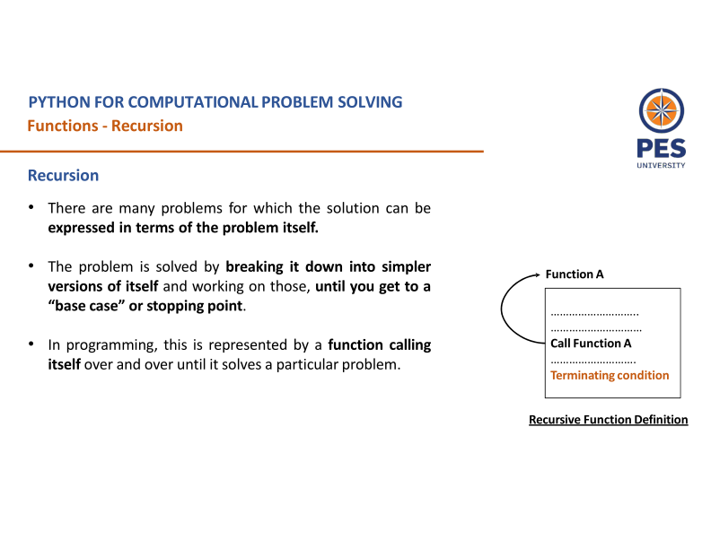
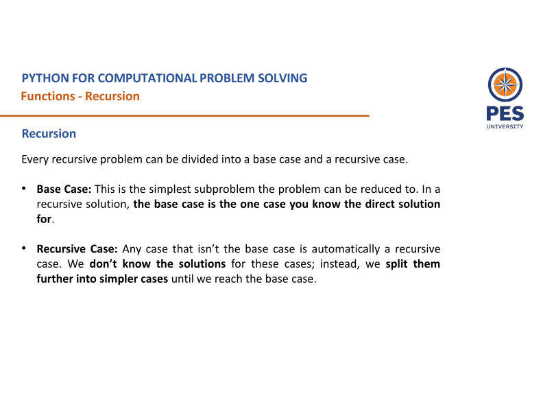
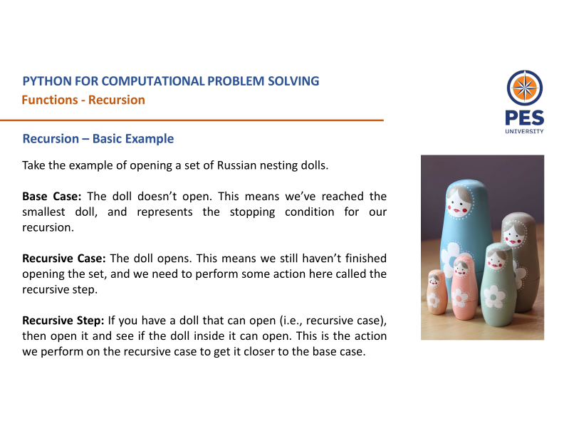
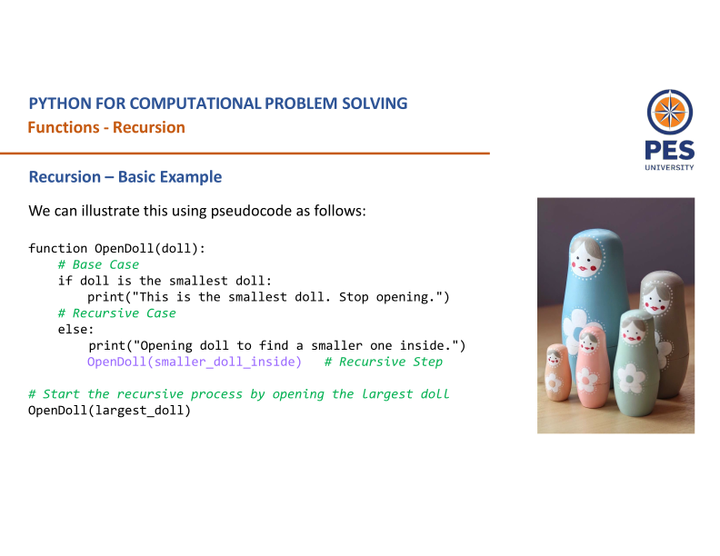
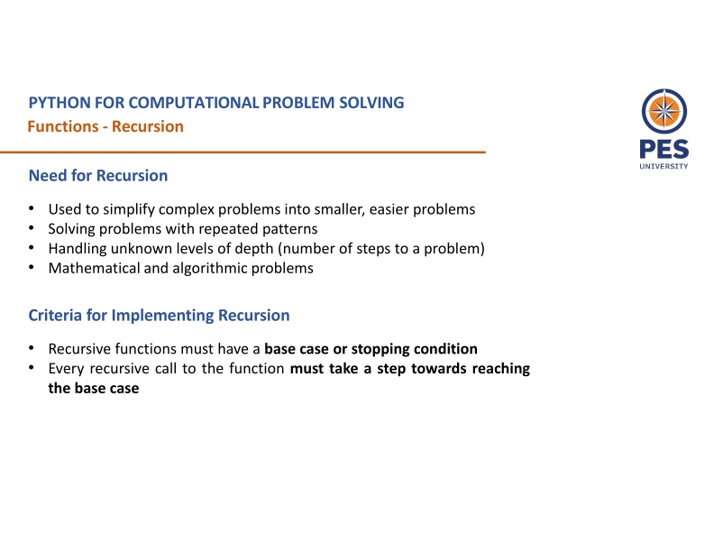
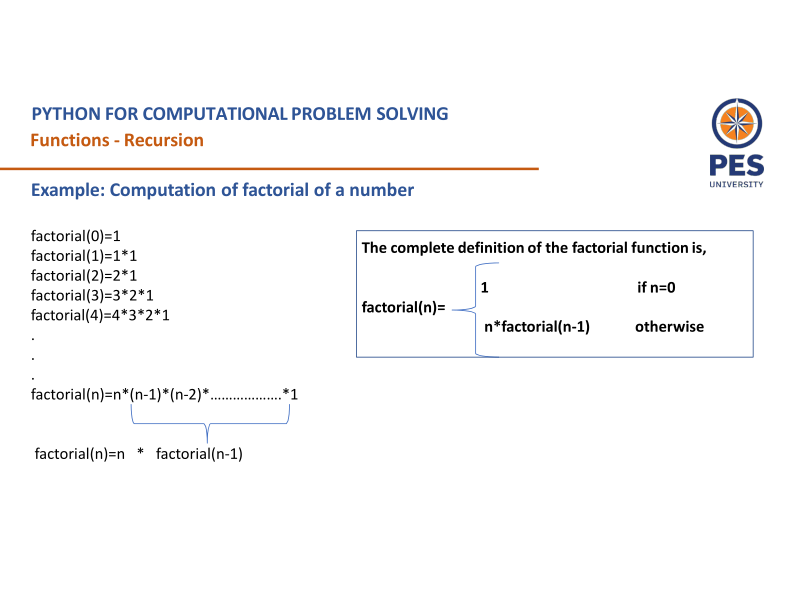
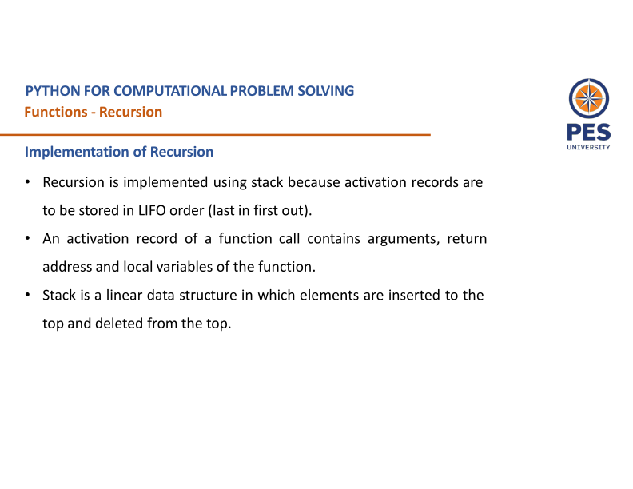
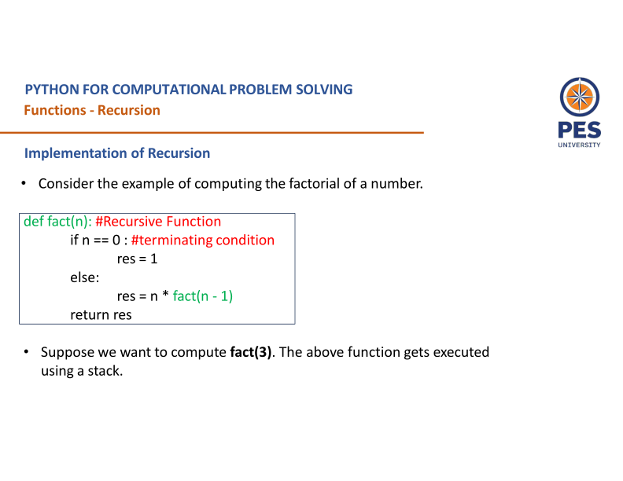
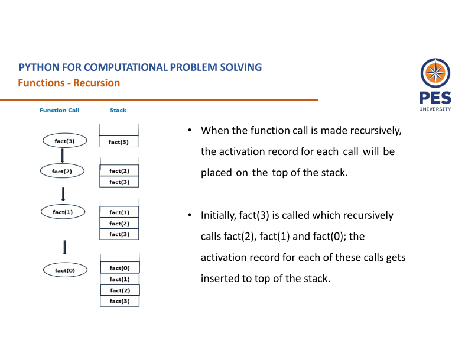
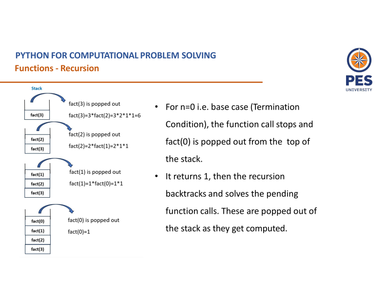
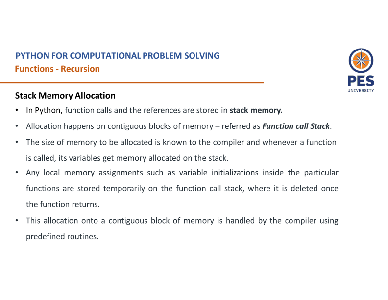
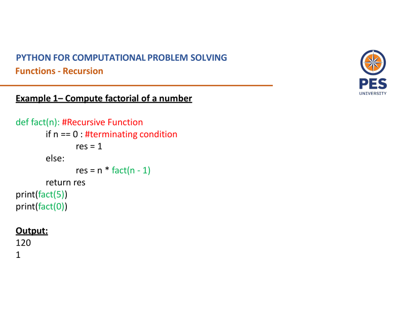
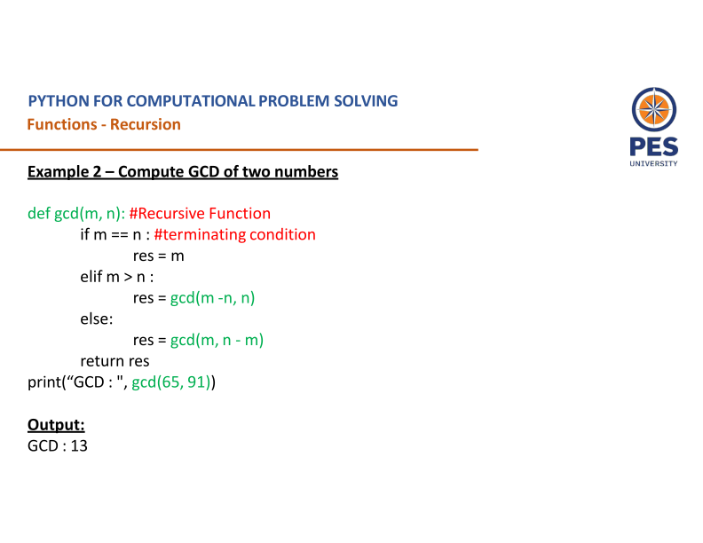
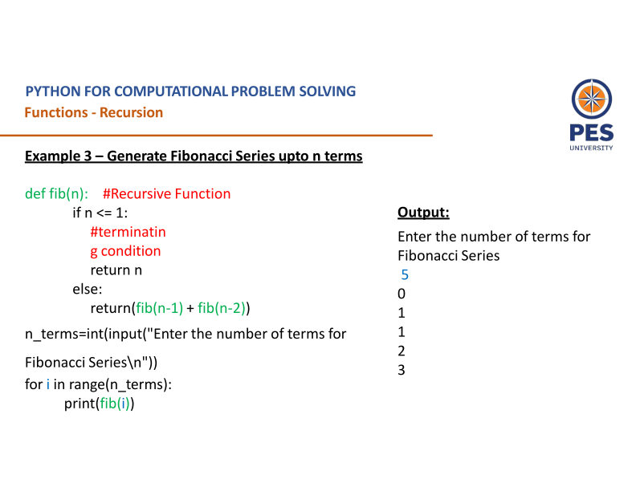
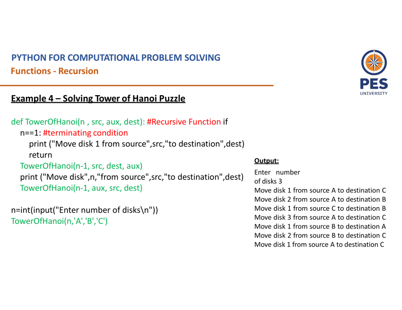
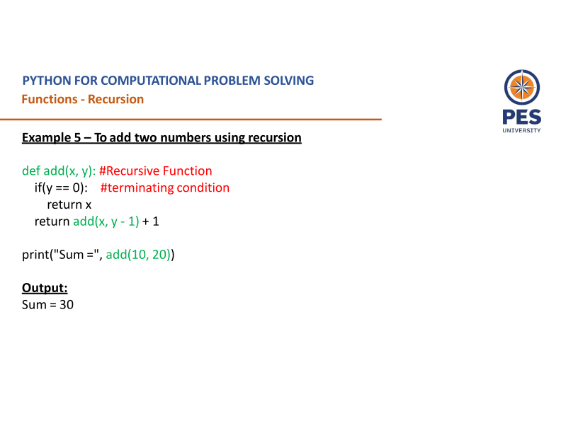
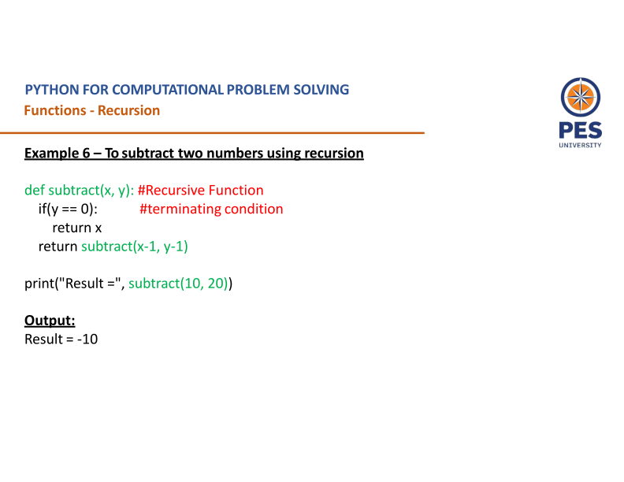
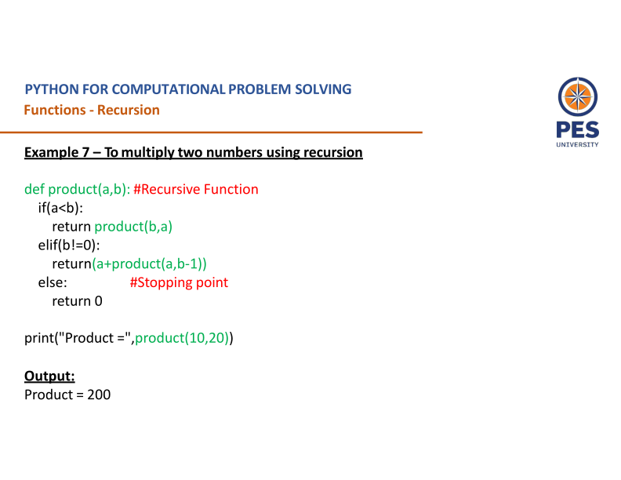
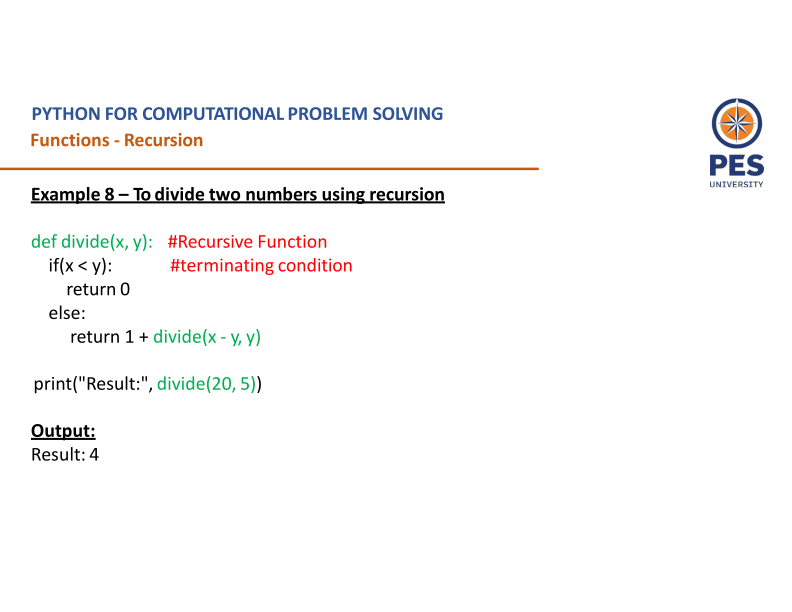
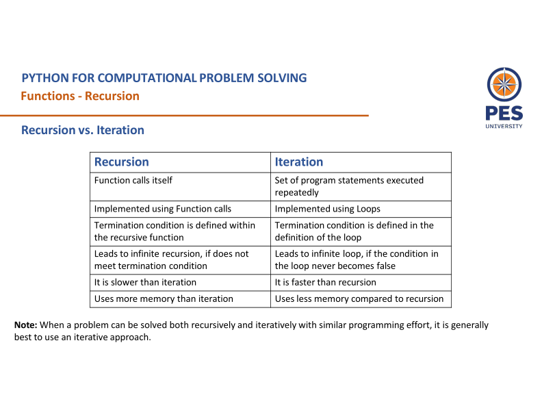
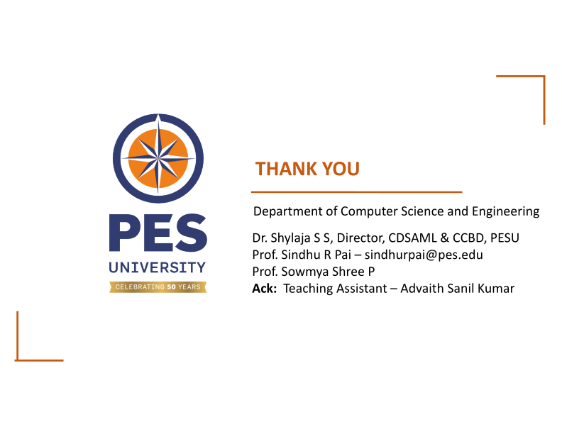
Important points and why
- Source slide page 1 (extracted text): PYTHON FOR COMPUTATIONAL PROBLEM SOLVING Recursion Prof. Sindhu R Pai PCPS Theory Anchor - 2024 Department of Computer Science and Engineering EV0000118 · EV0000119 · EV0000120
- Source slide page 2 (extracted text): PYTHON FOR COMPUTATIONAL PROBLEM SOLVING Functions - Recursion Recursion • There are many problems for which the solution can be expressed in terms of the problem itself. • The problem is solved by breaking it down into simpler FunctionFunction AA versions of itself and working on those, until you get to a “base case” or stopping point. ……………………….. ………………………… • In programming, this is represented by a function calling Call Function A ………………………. itself over and over until it solves a particular problem. Terminatingcondition Recursive Function Definition EV0000121 · EV0000122 · EV0000123
- Source slide page 3 (extracted text): PYTHON FOR COMPUTATIONAL PROBLEM SOLVING Functions - Recursion Recursion Every recursive problem can be divided into a base case and a recursive case. • Base Case: This is the simplest subproblem the problem can be reduced to. In a recursive solution, the base case is the one case you know the direct solution for. • Recursive Case: Any case that isn’t the base case is automatically a recursive case. We don’t know the solutions for these cases; instead, we split them further into simpler cases until we reach the base case. EV0000124 · EV0000125 · EV0000126
- Source slide page 4 (extracted text): PYTHON FOR COMPUTATIONAL PROBLEM SOLVING Functions - Recursion Recursion – Basic Example Take the example of opening a set of Russian nesting dolls. Base Case: The doll doesn’t open. This means we’ve reached the smallest doll, and represents the stopping condition for our recursion. Recursive Case: The doll opens. This means we still haven’t finished opening the set, and we need to perform some action here called the recursive step. Recursive Step: If you have a doll that can open (i.e., recursive case), then open it and see if the doll inside it can open. This is the action we perform on the recursive case to get it closer to the base case. EV0000127 · EV0000128 · EV0000129
- Source slide page 5 (extracted text): PYTHON FOR COMPUTATIONAL PROBLEM SOLVING Functions - Recursion Recursion – Basic Example We can illustrate this using pseudocode as follows: function OpenDoll(doll): # Base Case ifif ddollll iis ththe smallestll t ddoll:ll print("This is the smallest doll. Stop opening.") # Recursive Case else: print("Opening doll to find a smaller one inside.") OpenDoll(smaller_doll_inside) # Recursive Step # Start the recursive process by opening the largest doll OpenDoll(largest_doll) EV0000130 · EV0000131 · EV0000132
- Source slide page 6 (extracted text): PYTHON FOR COMPUTATIONAL PROBLEM SOLVING Functions - Recursion Need for Recursion • Used to simplify complex problems into smaller, easier problems • Solving problems with repeated patterns • Handling unknown levels of depth (number of steps to a problem) • Mathematical and algorithmic problems Criteria for Implementing Recursion • Recursive functions must have a base case or stopping condition • Every recursive call to the function must take a step towards reaching the base case EV0000133 · EV0000134 · EV0000135
- Source slide page 7 (extracted text): PYTHON FOR COMPUTATIONAL PROBLEM SOLVING Functions - Recursion Example: Computation of factorial of a number factorial(0)=1 The complete definition of the factorial function is,factorial(1)=1*1 factorial(2)=2*1 1 if n=0factorial(3)=3*2*1 factorial(n)=factorial(n)=factorial(4)=4*3*2*1 n*factorial(n-1) otherwise. . . factorial(n)=n*(n-1)*(n-2)*……………….*1 factorial(n)=n * factorial(n-1) EV0000136 · EV0000137 · EV0000138
- Source slide page 8 (extracted text): PYTHON FOR COMPUTATIONAL PROBLEM SOLVING Functions - Recursion Implementation of Recursion • Recursion is implemented using stack because activation records are to be stored in LIFO order (last in first out). • An activation record of a function call contains arguments,g , return address and local variables of the function. • Stack is a linear data structure in which elements are inserted to the top and deleted from the top. EV0000139 · EV0000140 · EV0000141
- Source slide page 9 (extracted text): PYTHON FOR COMPUTATIONAL PROBLEM SOLVING Functions - Recursion Implementation of Recursion • Consider the example of computing the factorial of a number. def fact(n): #Recursive Function ifif nn ==== 00 :: #terminating#terminating conditioncondition res = 1 else: res = n * fact(n - 1) return res • Suppose we want to compute fact(3). The above function gets executed using a stack. EV0000142 · EV0000143 · EV0000144
- Source slide page 10 (extracted text): PYTHON FOR COMPUTATIONAL PROBLEM SOLVING Functions - Recursion • When the function call is made recursively, the activation record for each call will be placed on the top of the stack. • Initially, fact(3) is called which recursively calls fact(2), fact(1) and fact(0); the activation record for each of these calls gets inserted to top of the stack. EV0000145 · EV0000146 · EV0000147
- Source slide page 11 (extracted text): PYTHON FOR COMPUTATIONAL PROBLEM SOLVING Functions - Recursion • For n=0 i.e. base case (Termination Condition), the function call stops and fact(0) is popped out from the top of the stack. • It returns 1, then the recursion backtracks and solves the pending function calls. These are popped out of the stack as they get computed. EV0000148 · EV0000149 · EV0000150
- Source slide page 12 (extracted text): PYTHON FOR COMPUTATIONAL PROBLEM SOLVING Functions - Recursion Stack Memory Allocation • In Python, function calls and the references are stored in stack memory. • Allocation happens on contiguous blocks of memory – referred as Function call Stack. • The size of memory to be allocated is known to the compiler and whenever a function is called, its variables get memory allocated on the stack. • Any local memory assignments such as variable initializations inside the particular functions are stored temporarily on the function call stack, where it is deleted once the function returns. • This allocation onto a contiguous block of memory is handled by the compiler using predefined routines. EV0000151 · EV0000152 · EV0000153
- Source slide page 13 (extracted text): PYTHON FOR COMPUTATIONAL PROBLEM SOLVING Functions - Recursion Example 1– Compute factorial of a number def fact(n): #Recursive Function if n == 0 : #terminating condition res = 1 lelse: res = n * fact(n - 1) return res print(fact(5)) print(fact(0)) Output: 120 1 EV0000154 · EV0000155 · EV0000156
- Source slide page 14 (extracted text): PYTHON FOR COMPUTATIONAL PROBLEM SOLVING Functions - Recursion Example 2 – Compute GCD of two numbers def gcd(m, n): #Recursive Function if m == n : #terminating condition res = m eliflif m > n : res = gcd(m -n, n) else: res = gcd(m, n - m) return res print(“GCD : ", gcd(65, 91)) Output: GCD : 13 EV0000157 · EV0000158 · EV0000159
- Source slide page 15 (extracted text): PYTHON FOR COMPUTATIONAL PROBLEM SOLVING Functions - Recursion Example 3 – Generate Fibonacci Series upto n terms def fib(n): #Recursive Function if n <= 1: Output: #terminatin Enter the number of terms for g conditiondi i Fibonacci Series return n 5 else: 0 return(fib(n-1) + fib(n-2)) 1 n_terms=int(input("Enter the number of terms for 1 2 Fibonacci Series\n")) 3 for i in range(n_terms): print(fib(i)) EV0000160 · EV0000161 · EV0000162
- Source slide page 16 (extracted text): PYTHON FOR COMPUTATIONAL PROBLEM SOLVING Functions - Recursion Example 4 – Solving Tower of Hanoi Puzzle def TowerOfHanoi(n , src, aux, dest): #Recursive Function if n==1: #terminating condition print ("Move disk 1 from source",src,"to destination",dest) returnreturn Output: TowerOfHanoi(n-1, src, dest, aux) Enter number print ("Move disk",n,"from source",src,"to destination",dest) of disks 3 TowerOfHanoi(n-1, aux, src, dest) Move disk 1 from source A to destination C Move disk 2 from source A to destination B n=int(input("Enter number of disks\n")) Move disk 1 from source C to destination B Move disk 3 from source A to destination CTowerOfHanoi(n,'A','B','C') Move disk 1 from source B to destination A Move disk 2 from source B to destination C Move disk 1 from source A to destination C EV0000163 · EV0000164 · EV0000165
- Source slide page 17 (extracted text): PYTHON FOR COMPUTATIONAL PROBLEM SOLVING Functions - Recursion Example 5 – To add two numbers using recursion def add(x, y): #Recursive Function if(y == 0): #terminating condition return x return add(x,dd( y - 1)) + 1 print("Sum =", add(10, 20)) Output: Sum = 30 EV0000166 · EV0000167 · EV0000168
- Source slide page 18 (extracted text): PYTHON FOR COMPUTATIONAL PROBLEM SOLVING Functions - Recursion Example 6 – To subtract two numbers using recursion def subtract(x, y): #Recursive Function if(y == 0): #terminating condition return x return subtract(x-1,b ( y-1)) print("Result =", subtract(10, 20)) Output: Result = -10 EV0000169 · EV0000170 · EV0000171
- Source slide page 19 (extracted text): PYTHON FOR COMPUTATIONAL PROBLEM SOLVING Functions - Recursion Example 7 – To multiply two numbers using recursion def product(a,b): #Recursive Function if(a<b): return product(b,a) elif(b!=0):lif(b! 0) return(a+product(a,b-1)) else: #Stopping point return 0 print("Product =",product(10,20)) Output: Product = 200 EV0000172 · EV0000173 · EV0000174
- Source slide page 20 (extracted text): PYTHON FOR COMPUTATIONAL PROBLEM SOLVING Functions - Recursion Example 8 – To divide two numbers using recursion def divide(x, y): #Recursive Function if(x < y): #terminating condition return 0 else:l return 1 + divide(x - y, y) print("Result:", divide(20, 5)) Output: Result: 4 EV0000175 · EV0000176 · EV0000177
- Source slide page 21 (extracted text): PYTHON FOR COMPUTATIONAL PROBLEM SOLVING Functions - Recursion Recursion vs. Iteration Recursion Iteration Function calls itself Set of program statements executed repeatedly ImplementedImplemented usingusing FunctionFunction callscalls ImplementedImplemented usingusing LoopsLoops Termination condition is defined within Termination condition is defined in the the recursive function definition of the loop Leads to infinite recursion, if does not Leads to infinite loop, if the condition in meet termination condition the loop never becomes false It is slower than iteration It is faster than recursion Uses more memory than iteration Uses less memory compared to recursion Note: When a problem can be solved both recursively and iteratively with similar programming effort, it is generally best to use an iterative approach. EV0000178 · EV0000179 · EV0000180
- Source slide page 22 (extracted text): THANK YOU Departmentp of Computerp Science and Engineeringg g Dr. Shylaja S S, Director, CDSAML & CCBD, PESU Prof. Sindhu R Pai – sindhurpai@pes.edu Prof. Sowmya Shree P Ack: Teaching Assistant – Advaith Sanil Kumar EV0000181 · EV0000182 · EV0000183
3Callback
This lesson is indexed from the source video titled Callback. Its complete timestamped transcript is preserved below in segment order. The original video path and content hash are recorded in datasets/lecture-corpus.json. Transcript text is source wording; it has not been silently corrected or rewritten. A candidate slide deck is grouped here according to the current matching score; the exact path and page locators are listed in the source evidence. EV0000014 · EV0000015
Graphs and diagrams
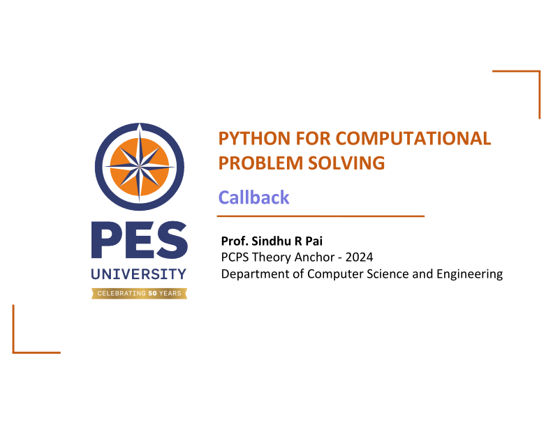
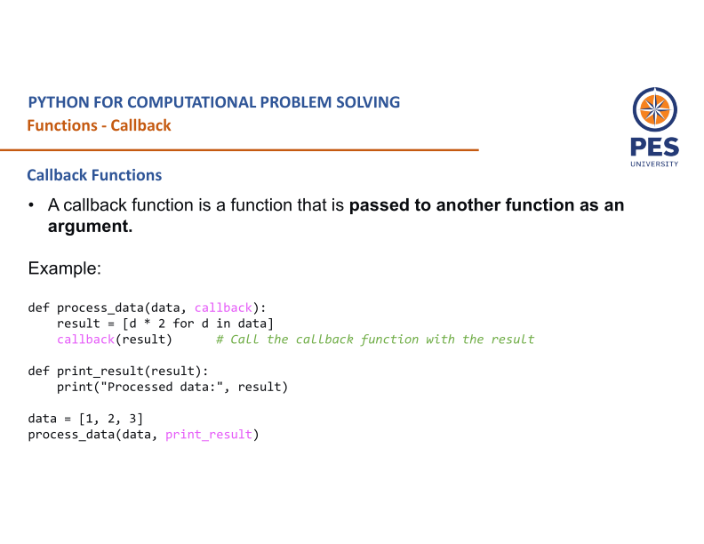
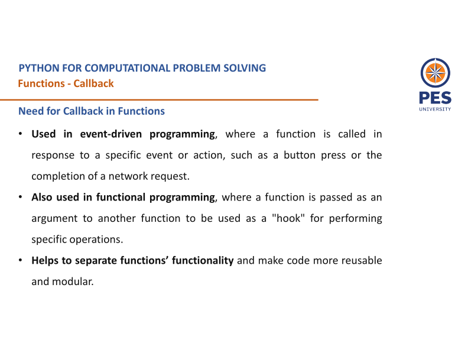
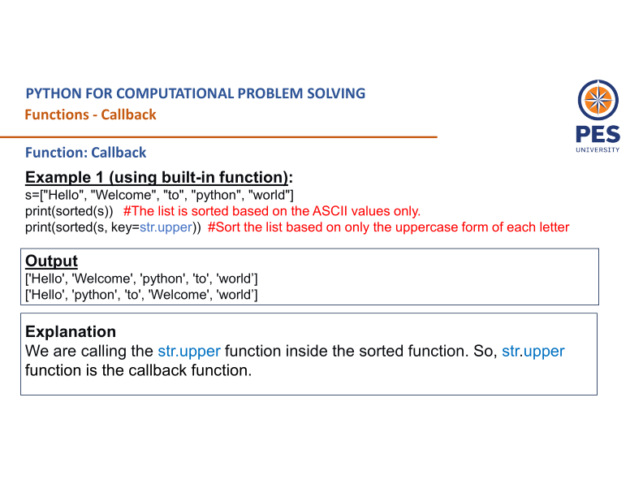
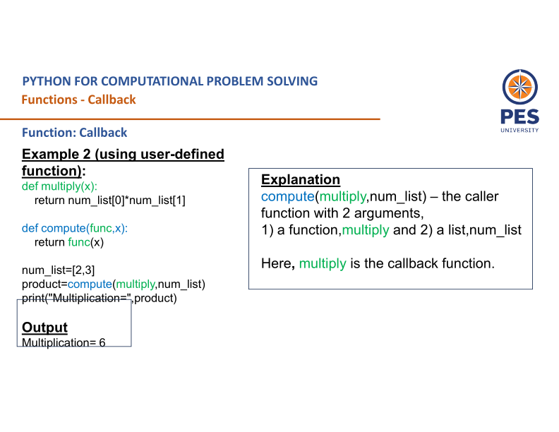
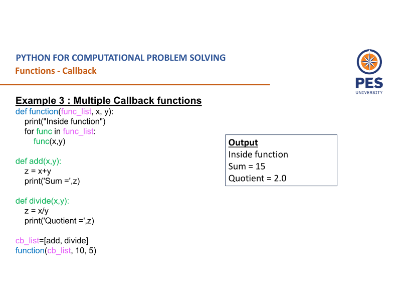
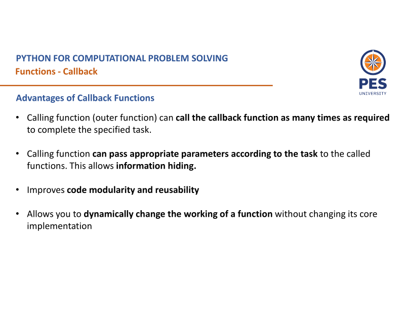
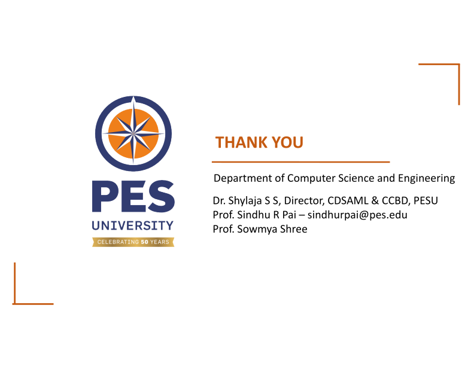
Important points and why
- Source slide page 1 (extracted text): PYTHON FOR COMPUTATIONAL PROBLEM SOLVING Callback Prof. Sindhu R Pai PCPS Theory Anchor - 2024 Department of Computer Science and Engineering EV0000184 · EV0000185 · EV0000186
- Source slide page 2 (extracted text): PYTHON FOR COMPUTATIONAL PROBLEM SOLVING Functions - Callback Callback Functions • A callback function is a function that is passed to another function as an argument. Example:Example: def process_data(data, callback): result = [d * 2 for d in data] callback(result) # Call the callback function with the result def print_result(result): print("Processed data:", result) data = [1, 2, 3] process_data(data, print_result) EV0000187 · EV0000188 · EV0000189
- Source slide page 3 (extracted text): PYTHON FOR COMPUTATIONAL PROBLEM SOLVING Functions - Callback Need for Callback in Functions • Used in event-driven programming, where a function is called in response to a specific event or action, such as a button press or the completionp of a network request.q • Also used in functional programming, where a function is passed as an argument to another function to be used as a "hook" for performing specific operations. • Helps to separate functions’ functionality and make code more reusable and modular. EV0000190 · EV0000191 · EV0000192
- Source slide page 4 (extracted text): PYTHON FOR COMPUTATIONAL PROBLEM SOLVING Functions - Callback Function: Callback Example 1 (using built-in function): s=["Hello", "Welcome", "to", "python", "world"] print(sorted(s)) #The list is sorted based on the ASCII values only. print(sorted(s, key=str.upper)) #Sort the list based on only the uppercase form of each letter Output ['Hello', 'Welcome', 'python', 'to', 'world’] ['Hello', 'python', 'to', 'Welcome', 'world’] Explanation We are calling the str.upper function inside the sorted function. So, str.upper function is the callback function. EV0000193 · EV0000194 · EV0000195
- Source slide page 5 (extracted text): PYTHON FOR COMPUTATIONAL PROBLEM SOLVING Functions - Callback Function: Callback Example 2 (using user-defined function): Explanationdef multiply(x): compute(multiply,num_list) – the caller return num_list[0]*num_list[1] functionfunction withwith 22 argumentsarguments, def compute(func,x): 1) a function,multiply and 2) a list,num_list return func(x) Here, multiply is the callback function.num_list=[2,3] product=compute(multiply,num_list) print("Multiplication=",product) Output Multiplication= 6 EV0000196 · EV0000197 · EV0000198
- Source slide page 6 (extracted text): PYTHON FOR COMPUTATIONAL PROBLEM SOLVING Functions - Callback Example 3 : Multiple Callback functions def function(func_list, x, y): print("Inside function") for func in func_list: func(x,y) Output InsideInside functionfunction def add(x,y): Sum = 15 z = x+y Quotient = 2.0 print('Sum =',z) def divide(x,y): z = x/y print('Quotient =',z) cb_list=[add, divide] function(cb_list, 10, 5) EV0000199 · EV0000200 · EV0000201
- Source slide page 7 (extracted text): PYTHON FOR COMPUTATIONAL PROBLEM SOLVING Functions - Callback Advantages of Callback Functions • Calling function (outer function) can call the callback function as many times as required to complete the specified task. • CallingCalling functionfunction cancan passpass appropriateappropriate parametersparameters accordingaccording toto thethe tasktask toto thethe calledcalled functions. This allows information hiding. • Improves code modularity and reusability • Allows you to dynamically change the working of a function without changing its core implementation EV0000202 · EV0000203 · EV0000204
- Source slide page 8 (extracted text): THANK YOU Departmentp of Computerp Science and Engineeringg g Dr. Shylaja S S, Director, CDSAML & CCBD, PESU Prof. Sindhu R Pai – sindhurpai@pes.edu Prof. Sowmya Shree EV0000205 · EV0000206 · EV0000207
4Functional and object oriented programming
This lesson is indexed from the source video titled Functional and object oriented programming. Its complete timestamped transcript is preserved below in segment order. The original video path and content hash are recorded in datasets/lecture-corpus.json. Transcript text is source wording; it has not been silently corrected or rewritten. No slide deck is assigned to this video; candidate slide sources remain separate in the unit master. EV0000026 · EV0000027
5Lambda Function
This lesson is indexed from the source video titled Lambda Function. Its complete timestamped transcript is preserved below in segment order. The original video path and content hash are recorded in datasets/lecture-corpus.json. Transcript text is source wording; it has not been silently corrected or rewritten. A candidate slide deck is grouped here according to the current matching score; the exact path and page locators are listed in the source evidence. EV0000038 · EV0000039
Graphs and diagrams
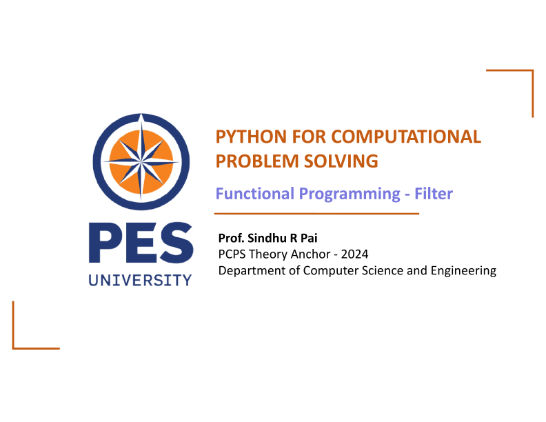
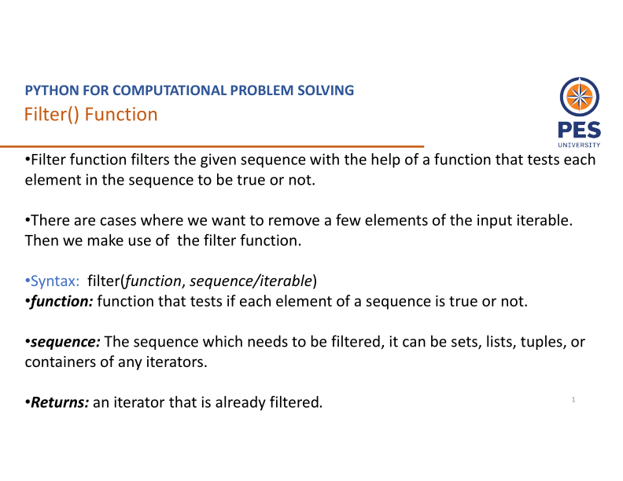
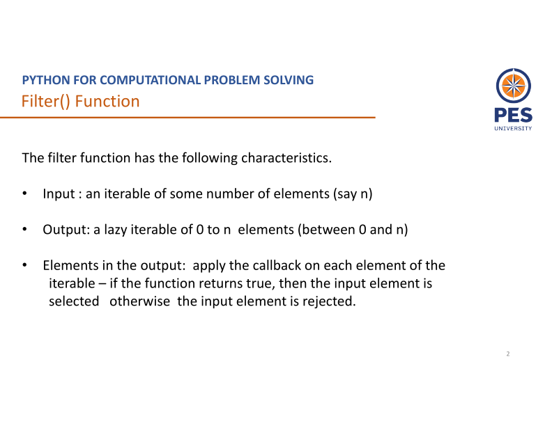
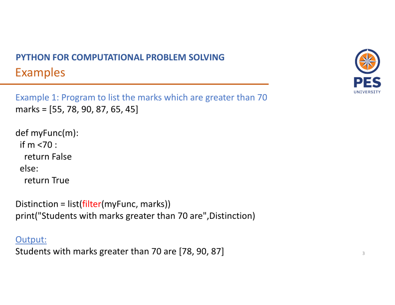
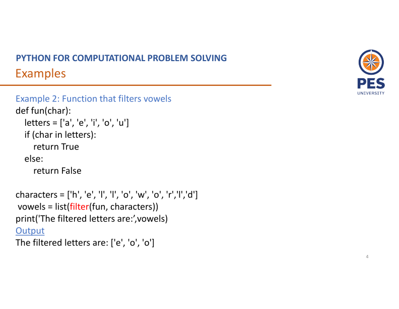
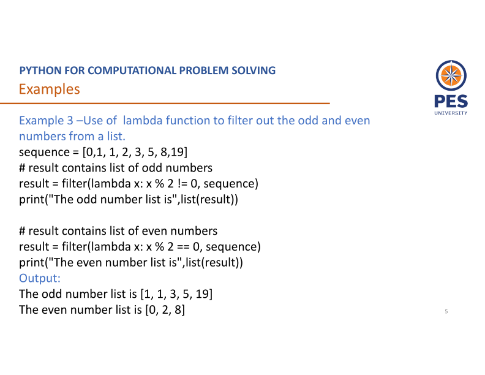
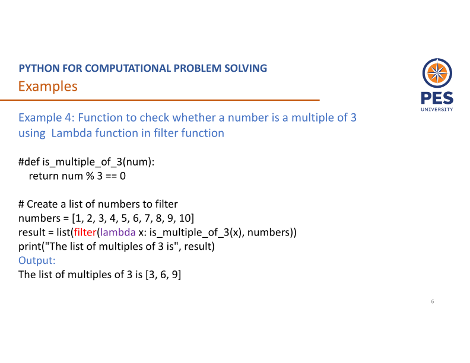
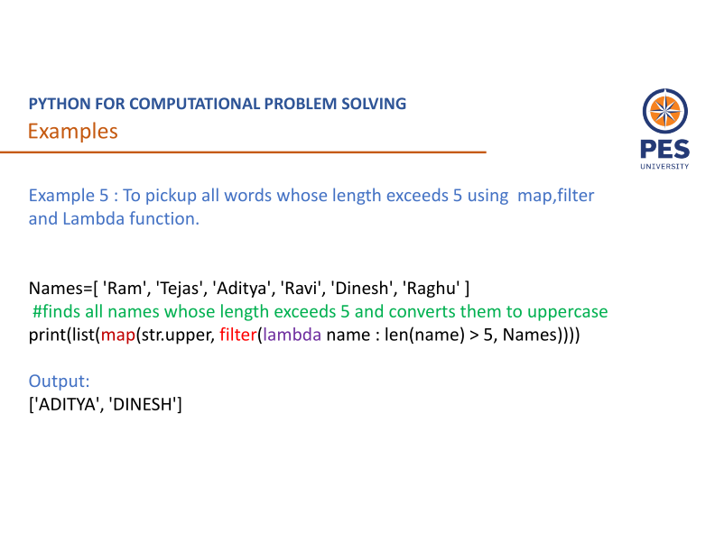

Important points and why
- Source slide page 1 (extracted text): PYTHON FOR COMPUTATIONAL PROBLEM SOLVING Functional Programming - Filter Prof. Sindhu R Pai PCPS Theory Anchor - 2024 Department of Computer Science and Engineering EV0000316 · EV0000317 · EV0000318
- Source slide page 2 (extracted text): PYTHON FOR COMPUTATIONAL PROBLEM SOLVING Filter() Function •Filter function filters the given sequence with the help of a function that tests each element in the sequence to be true or not. •There are cases where we want to remove a few elements of the input iterable. ThenThen wewe makemake useuse ofof thethe filterfilter functionfunction. •Syntax: filter(function, sequence/iterable) •function: function that tests if each element of a sequence is true or not. •sequence: The sequence which needs to be filtered, it can be sets, lists, tuples, or containers of any iterators. 1•Returns: an iterator that is already filtered. EV0000319 · EV0000320 · EV0000321
- Source slide page 3 (extracted text): PYTHON FOR COMPUTATIONAL PROBLEM SOLVING Filter() Function The filter function has the following characteristics. • Input : an iterable of some number of elements (say n) • Output: a lazy iterable of 0 to n elements (between 0 and n) • Elements in the output: apply the callback on each element of the iterable – if the function returns true, then the input element is selected otherwise the input element is rejected. 2 EV0000322 · EV0000323 · EV0000324
- Source slide page 4 (extracted text): PYTHON FOR COMPUTATIONAL PROBLEM SOLVING Examples Example 1: Program to list the marks which are greater than 70 marks = [55, 78, 90, 87, 65, 45] def myFunc(m): if m <70 : return False else: return True Distinction = list(filter(myFunc, marks)) print("Students with marks greater than 70 are",Distinction) Output: Students with marks greater than 70 are [78, 90, 87] 3 EV0000325 · EV0000326 · EV0000327
- Source slide page 5 (extracted text): PYTHON FOR COMPUTATIONAL PROBLEM SOLVING Examples Example 2: Function that filters vowels def fun(char): letters = ['a', 'e', 'i', 'o', 'u'] if (char in letters): return True else: return False characters = ['h', 'e', 'l', 'l', 'o', 'w', 'o', 'r','l','d'] vowels = list(filter(fun, characters)) print('The filtered letters are:’,vowels) Output The filtered letters are: ['e', 'o', 'o'] 4 EV0000328 · EV0000329 · EV0000330
- Source slide page 6 (extracted text): PYTHON FOR COMPUTATIONAL PROBLEM SOLVING Examples Example 3 –Use of lambda function to filter out the odd and even numbers from a list. sequence = [0,1, 1, 2, 3, 5, 8,19] # result contains list of odd numbers resultresult = filter(lambdafilter(lambda x:x: xx %% 2 !=! 0,0, sequence)sequence) print("The odd number list is",list(result)) # result contains list of even numbers result = filter(lambda x: x % 2 == 0, sequence) print("The even number list is",list(result)) Output: The odd number list is [1, 1, 3, 5, 19] 5The even number list is [0, 2, 8] EV0000331 · EV0000332 · EV0000333
- Source slide page 7 (extracted text): PYTHON FOR COMPUTATIONAL PROBLEM SOLVING Examples Example 4: Function to check whether a number is a multiple of 3 using Lambda function in filter function #def is_multiple_of_3(num): return num % 3 == 0 # Create a list of numbers to filter numbers = [1, 2, 3, 4, 5, 6, 7, 8, 9, 10] result = list(filter(lambda x: is_multiple_of_3(x), numbers)) print("The list of multiples of 3 is", result) Output: The list of multiples of 3 is [3, 6, 9] 6 EV0000334 · EV0000335 · EV0000336
- Source slide page 8 (extracted text): PYTHON FOR COMPUTATIONAL PROBLEM SOLVING Examples Example 5 : To pickup all words whose length exceeds 5 using map,filter and Lambda function. Names=[ 'Ram', 'Tejas', 'Aditya', 'Ravi', 'Dinesh', 'Raghu' ] #finds all names whose length exceeds 5 and converts them to uppercase print(list(map(str.upper, filter(lambda name : len(name) > 5, Names)))) Output: ['ADITYA', 'DINESH'] EV0000337 · EV0000338 · EV0000339
- Source slide page 9 (extracted text): THANK YOU Departmentp of Computerp Science and Engineeringg g Dr. Shylaja S S, Director, CDSAML & CCBD, PESU Prof. Sindhu R Pai – sindhurpai@pes.edu Prof. C N Rajeswari 9 EV0000340 · EV0000341 · EV0000342
6List Comprehension
This lesson is indexed from the source video titled List Comprehension. Its complete timestamped transcript is preserved below in segment order. The original video path and content hash are recorded in datasets/lecture-corpus.json. Transcript text is source wording; it has not been silently corrected or rewritten. A candidate slide deck is grouped here according to the current matching score; the exact path and page locators are listed in the source evidence. EV0000046 · EV0000047
Graphs and diagrams
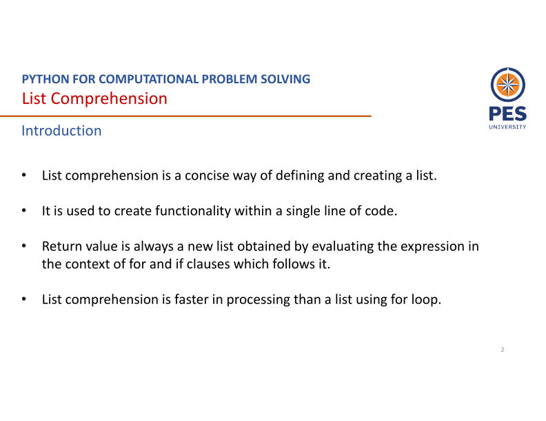
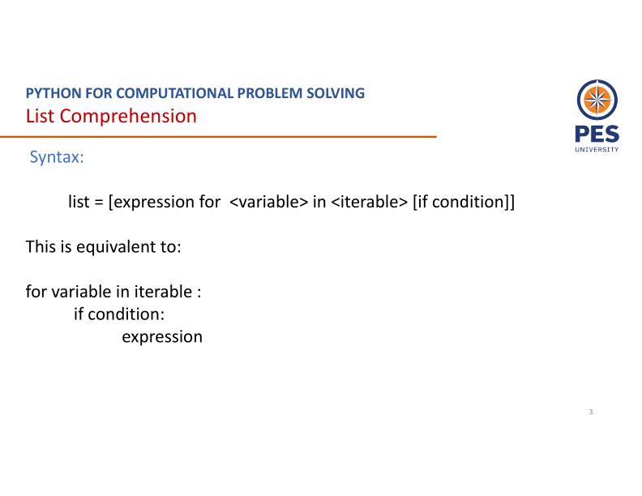
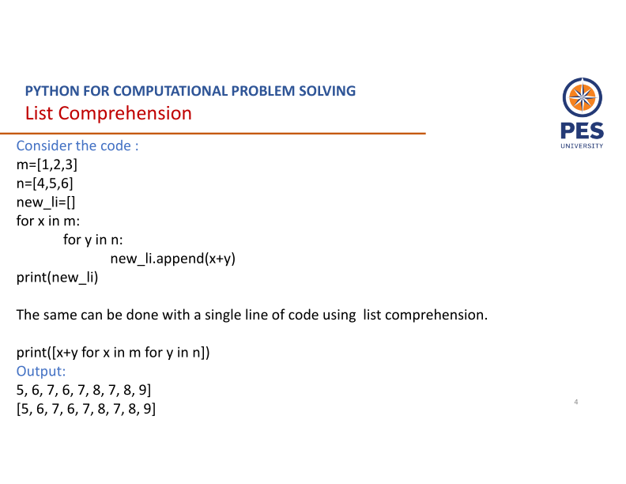
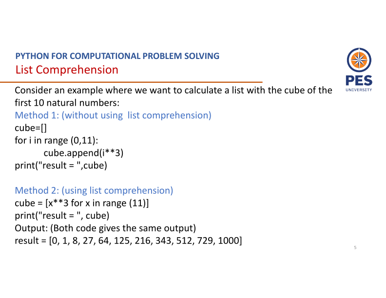
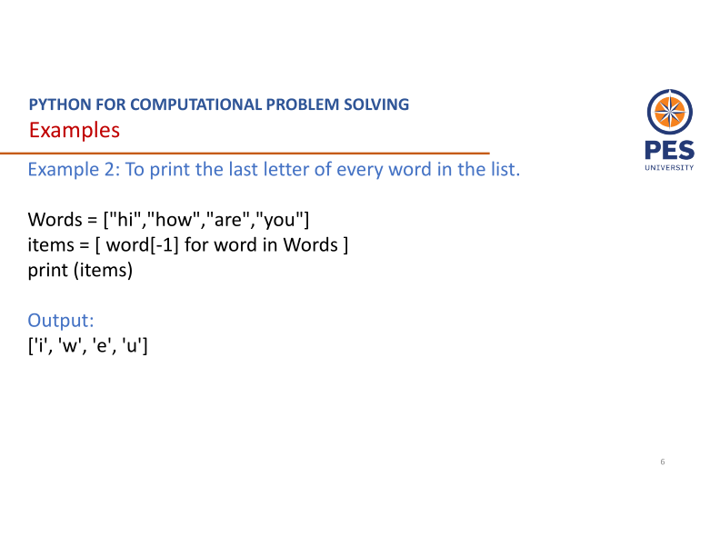
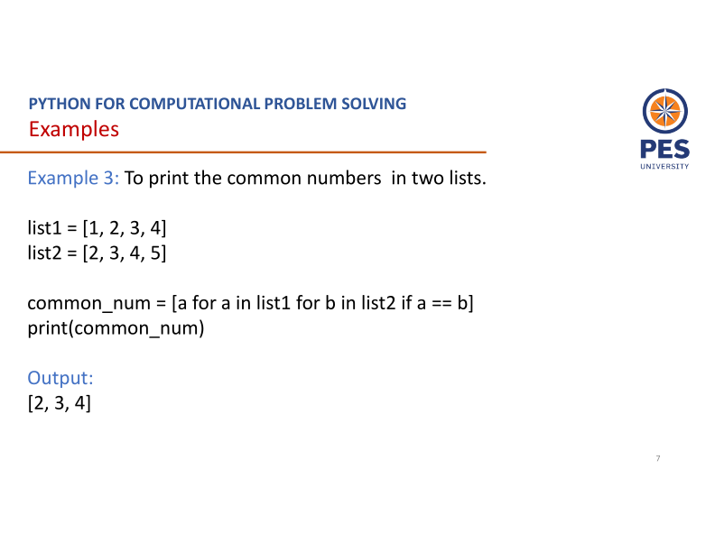
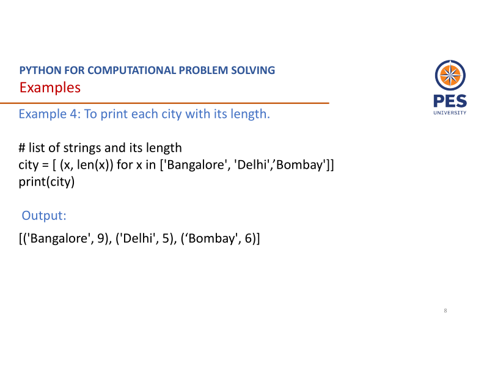
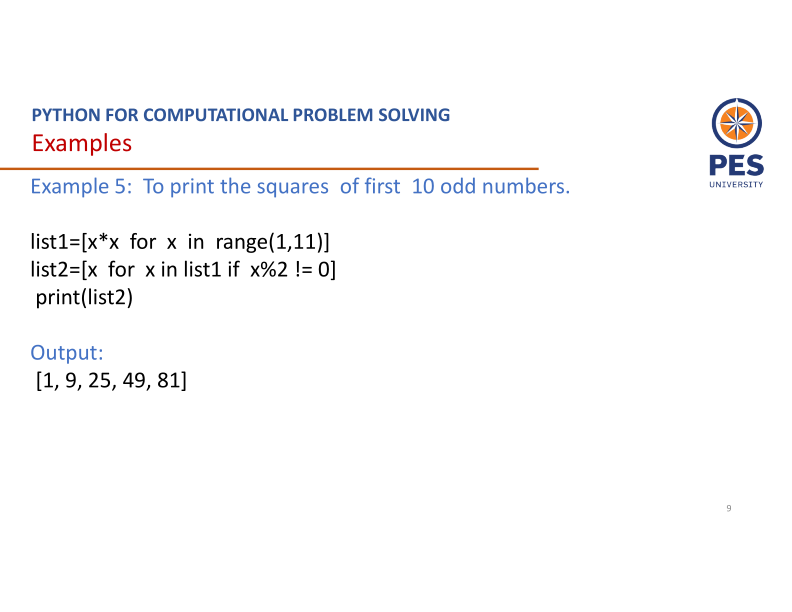
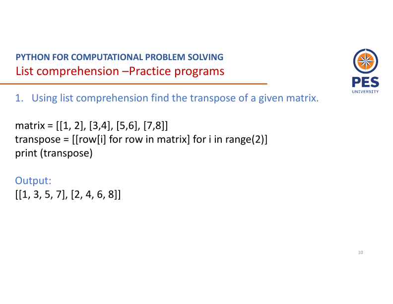
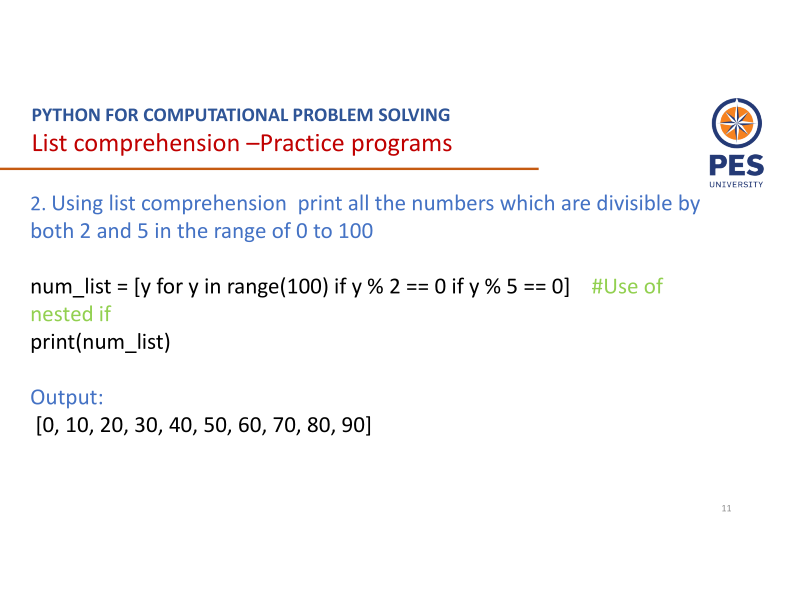
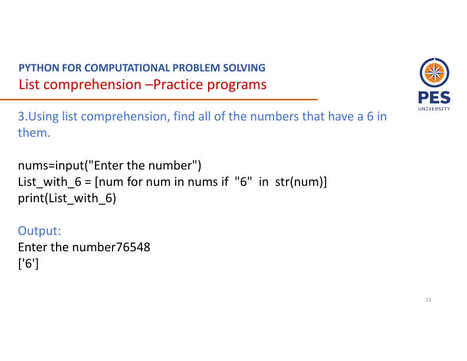
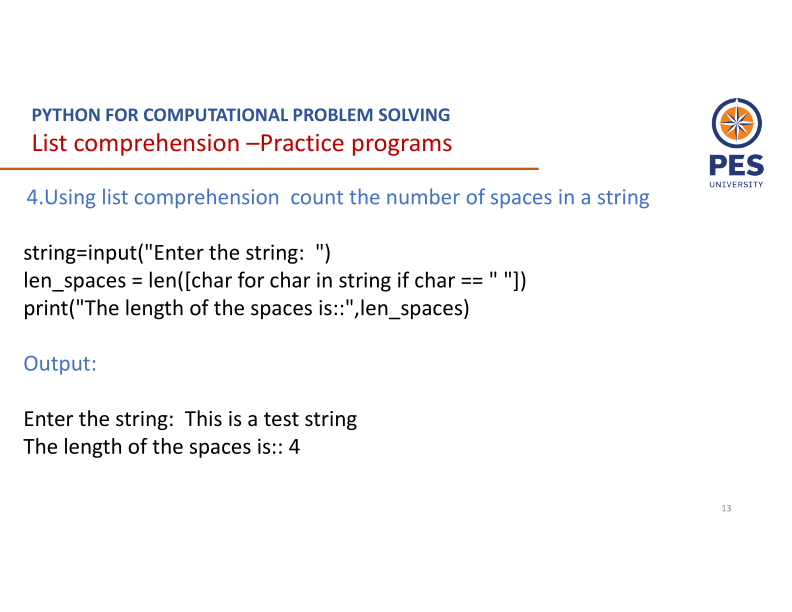
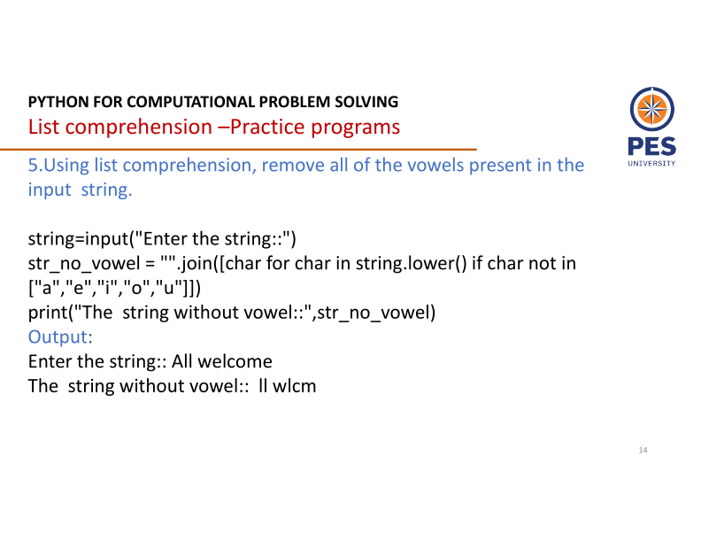
Important points and why
- Source slide page 1 (extracted text): PYTHON FOR COMPUTATIONAL PROBLEM SOLVING List Comprehension Prof. Sindhu R Pai PCPS Theory Anchor - 2024 Department of Computer Science and Engineering EV0000364 · EV0000365 · EV0000366
- Source slide page 2 (extracted text): PYTHON FOR COMPUTATIONAL PROBLEM SOLVING List Comprehension Introduction • List comprehension is a concise way of defining and creating a list. •• ItIt isis usedused toto createcreate functionalityfunctionality withinwithin aa singlesingle lineline ofof codecode. • Return value is always a new list obtained by evaluating the expression in the context of for and if clauses which follows it. • List comprehension is faster in processing than a list using for loop. 2 EV0000367 · EV0000368 · EV0000369
- Source slide page 3 (extracted text): PYTHON FOR COMPUTATIONAL PROBLEM SOLVING List Comprehension Syntax: list = [expression for <variable> in <iterable> [if condition]] ThisThis isis equivalentequivalent to:to: for variable in iterable : if condition: expression 3 EV0000370 · EV0000371 · EV0000372
- Source slide page 4 (extracted text): PYTHON FOR COMPUTATIONAL PROBLEM SOLVING List Comprehension Consider the code : m=[1,2,3] n=[4,5,6] new_li=[] for x in m: forfor yy inin n:n: new_li.append(x+y) print(new_li) The same can be done with a single line of code using list comprehension. print([x+y for x in m for y in n]) Output: 5, 6, 7, 6, 7, 8, 7, 8, 9] [5, 6, 7, 6, 7, 8, 7, 8, 9] 4 EV0000373 · EV0000374 · EV0000375
- Source slide page 5 (extracted text): PYTHON FOR COMPUTATIONAL PROBLEM SOLVING List Comprehension Consider an example where we want to calculate a list with the cube of the first 10 natural numbers: Method 1: (without using list comprehension) cube=[] for i in range (0,11): cube.append(i**3)b d( ** ) print("result = ",cube) Method 2: (using list comprehension) cube = [x**3 for x in range (11)] print("result = ", cube) Output: (Both code gives the same output) result = [0, 1, 8, 27, 64, 125, 216, 343, 512, 729, 1000] 5 EV0000376 · EV0000377 · EV0000378
- Source slide page 6 (extracted text): PYTHON FOR COMPUTATIONAL PROBLEM SOLVING Examples Example 2: To print the last letter of every word in the list. Words = ["hi","how","are","you"] items = [ word[-1] for word in Words ] printp (items)( ) Output: ['i', 'w', 'e', 'u'] 6 EV0000379 · EV0000380 · EV0000381
- Source slide page 7 (extracted text): PYTHON FOR COMPUTATIONAL PROBLEM SOLVING Examples Example 3: To print the common numbers in two lists. list1 = [1, 2, 3, 4] list2 = [2, 3, 4, 5] common_num = [a for a in list1 for b in list2 if a == b] print(common_num) Output: [2, 3, 4] 7 EV0000382 · EV0000383 · EV0000384
- Source slide page 8 (extracted text): PYTHON FOR COMPUTATIONAL PROBLEM SOLVING Examples Example 4: To print each city with its length. # list of strings and its length city = [ (x, len(x)) for x in ['Bangalore', 'Delhi',’Bombay']] print(city)p ( y) Output: [('Bangalore', 9), ('Delhi', 5), (‘Bombay', 6)] 8 EV0000385 · EV0000386 · EV0000387
- Source slide page 9 (extracted text): PYTHON FOR COMPUTATIONAL PROBLEM SOLVING Examples Example 5: To print the squares of first 10 odd numbers. list1=[x*x for x in range(1,11)] list2=[x for x in list1 if x%2 != 0] print(list2)p ( ) Output: [1, 9, 25, 49, 81] 9 EV0000388 · EV0000389 · EV0000390
- Source slide page 10 (extracted text): PYTHON FOR COMPUTATIONAL PROBLEM SOLVING List comprehension –Practice programs 1. Using list comprehension find the transpose of a given matrix. matrix = [[1, 2], [3,4], [5,6], [7,8]] transpose = [[row[i] for row in matrix] for i in range(2)] printprint (transpose)(transpose) Output: [[1, 3, 5, 7], [2, 4, 6, 8]] 10 EV0000391 · EV0000392 · EV0000393
- Source slide page 11 (extracted text): PYTHON FOR COMPUTATIONAL PROBLEM SOLVING List comprehension –Practice programs 2. Using list comprehension print all the numbers which are divisible by both 2 and 5 in the range of 0 to 100 num_list = [y for y in range(100) if y % 2 == 0 if y % 5 == 0] #Use of nestedd iff print(num_list) Output: [0, 10, 20, 30, 40, 50, 60, 70, 80, 90] 11 EV0000394 · EV0000395 · EV0000396
- Source slide page 12 (extracted text): PYTHON FOR COMPUTATIONAL PROBLEM SOLVING List comprehension –Practice programs 3.Using list comprehension, find all of the numbers that have a 6 in them. nums=input("Enter the number") ListList_with_6with 6 == [num[num forfor numnum inin numsnums ifif "6"6 inin str(num)]str(num)] print(List_with_6) Output: Enter the number76548 ['6'] 12 EV0000397 · EV0000398 · EV0000399
- Source slide page 13 (extracted text): PYTHON FOR COMPUTATIONAL PROBLEM SOLVING List comprehension –Practice programs 4.Using list comprehension count the number of spaces in a string string=input("Enter the string: ") len_spaces = len([char for char in string if char == " "]) print("Theprint( The lengthlength ofof thethe spacesspaces is::"is:: ,len_spaces)len spaces) Output: Enter the string: This is a test string The length of the spaces is:: 4 13 EV0000400 · EV0000401 · EV0000402
- Source slide page 14 (extracted text): PYTHON FOR COMPUTATIONAL PROBLEM SOLVING List comprehension –Practice programs 5.Using list comprehension, remove all of the vowels present in the input string. string=input("Enter the string::") str_ no _ vowel = "".join([charj ([ for char in string.lower()g () if char not in ["a","e","i","o","u"]]) print("The string without vowel::",str_no_vowel) Output: Enter the string:: All welcome The string without vowel:: ll wlcm 14 EV0000403 · EV0000404 · EV0000405
- Source slide page 15 (extracted text): THANK YOU Departmentp of Computerp Science and Engineeringg g Dr. Shylaja S S, Director, CDSAML & CCBD, PESU Prof. Sindhu R Pai – sindhurpai@pes.edu Prof. C N Rajeswari 15 EV0000406 · EV0000407 · EV0000408
7Closure
This lesson is indexed from the source video titled Closure. Its complete timestamped transcript is preserved below in segment order. The original video path and content hash are recorded in datasets/lecture-corpus.json. Transcript text is source wording; it has not been silently corrected or rewritten. A candidate slide deck is grouped here according to the current matching score; the exact path and page locators are listed in the source evidence. EV0000058 · EV0000059
Graphs and diagrams
Important points and why
- Source slide page 1 (extracted text): PYTHON FOR COMPUTATIONAL PROBLEM SOLVING Closures Prof. Sindhu R Pai PCPS Theory Anchor - 2024 Department of Computer Science and Engineering EV0000478 · EV0000479 · EV0000480
- Source slide page 2 (extracted text): PYTHON FOR COMPUTATIONAL PROBLEM SOLVING Functions - Closure A closure is a nested function which has access to a free variable from an enclosing function that has finished its execution. Three characteristics of a Python closure are: • It is a nested function • It has access to a free variable in outer scope • It is returned from the enclosing function A free variable - a variable that is not bound in the local scope. Closures with immutable variables such as numbers and strings - use the nonlocal keyword. 1 EV0000481 · EV0000482 · EV0000483
- Source slide page 3 (extracted text): PYTHON FOR COMPUTATIONAL PROBLEM SOLVING Functions - Closure 1. Example: def outer(msg): # This is the outer enclosing function def inner(): # This is the nested function print(msg) return inner # returns the nested function # Now let's try calling this function. different = outer(“This is an example of closure") different () #refers to inner() Output: This is an example of closure 2 EV0000484 · EV0000485 · EV0000486
- Source slide page 4 (extracted text): PYTHON FOR COMPUTATIONAL PROBLEM SOLVING Functions - Closure 2. Example: def f1(): #outer function Output: def f2(): #inner function f2= 2908823806840 print ("Hello") Hello printp ("world")( ) worldworld print('f2=',id(f2)) c= 2908823806840 return f2 c=f1() #refers to f2() c() print('c=',id(c)) #id of f2() and c() are same 3 EV0000487 · EV0000488 · EV0000489
- Source slide page 5 (extracted text): PYTHON FOR COMPUTATIONAL PROBLEM SOLVING Functions - Closure 3. Example: def division(y): #outer function Output: def divide(x): #inner function 10.0 return x/y 32.0 returnreturn dividedivide d1=division(2) #refers to divide d2=division(3) #refers to divide print(d1(20)) print(d2(96)) 4 EV0000490 · EV0000491 · EV0000492
- Source slide page 6 (extracted text): PYTHON FOR COMPUTATIONAL PROBLEM SOLVING Functions - Closure 4. Example: def f1(): #outer function def f2(): #inner function print ("Hello") printi ("("world")ld") return f2 c=f1() #refers to f2() Output:del f1 Hello Hello c() #still works world world 5 EV0000493 · EV0000494 · EV0000495
- Source slide page 7 (extracted text): PYTHON FOR COMPUTATIONAL PROBLEM SOLVING Functions - Closure 5. Example: def outer(msg): text = msg #text is having the scope of outer function def inner(): print(text)i t(t t) ##usingi non-locall l variablei bl ttextt return inner #return inner function Output:Hello world Hellofunc = outer('Hello') func() 6 EV0000496 · EV0000497 · EV0000498
- Source slide page 8 (extracted text): PYTHON FOR COMPUTATIONAL PROBLEM SOLVING Functions - Closure 6. Example: def outerfunc(x): Output: def innerfunc(): Hello 7 print(x) world 7 return innerfunc myfunc=outerfunc(7) myfunc() #refers to innerfunc() del outerfunc myfunc() #still refers to innerfunc() retaining the value of enclosing scope of x We are assigning the function outerfunc() to the variable myfunc. Even if we delete outerfunc() from the memory, the function outerfunc() can be called, using the 7referred variable myfunc. EV0000499 · EV0000500 · EV0000501
- Source slide page 9 (extracted text): PYTHON FOR COMPUTATIONAL PROBLEM SOLVING Functions - Closure 7. Example: def f1(): #outer function x=0 def f2(): #inner function nonlocal x # x - that belongs to scope of outer function is made non-local xx=x+1x+1 return x return f2 Output: x= 1 Hellofunc = f1() world x= 2retval = func() print ("x=", retval) retval = func() print ("x=", retval) 8 EV0000502 · EV0000503 · EV0000504
- Source slide page 10 (extracted text): PYTHON FOR COMPUTATIONAL PROBLEM SOLVING Functions - Closure Function Closure vs. Nested function • Not all nested functions are closures. • For a nested function to be a closure, the following conditions need to be satisfied: 1. The inner function has access to the non-local variables or local variables of the outer function. 2. The outer function must return the inner function. 9 EV0000505 · EV0000506 · EV0000507
- Source slide page 11 (extracted text): PYTHON FOR COMPUTATIONAL PROBLEM SOLVING Functions - Closure Function Closure vs. Nested function Example: Nested Function but not Closure (When msg is passed to inner(), msg ends up belonging to inner() function’s local scope. So, the 1st condition is not satisfied) def outer(msg): # This is the outer enclosing function def inner(m=msg): # This is the nested function print(m,"World") Output return inner # returns the nested function Hello World different = outer(msg="Hello") different() #refers to inner() 10 EV0000508 · EV0000509 · EV0000510
- Source slide page 12 (extracted text): PYTHON FOR COMPUTATIONAL PROBLEM SOLVING Functions - Closure Function Closure: Summary • A function object that remembers values in enclosing scopes even when the variable goes out of scope. • Python closures help avoiding the usage of global values and provide some form of data hiding. They are used in Python decorators. 11 EV0000511 · EV0000512 · EV0000513
- Source slide page 13 (extracted text): THANK YOU Departmentp of Computerp Science and Engineeringg g Dr. Shylaja S S, Director, CDSAML & CCBD, PESU Prof. Sindhu R Pai – sindhurpai@pes.edu Prof. Sowmya Shree P EV0000514 · EV0000515 · EV0000516
8Decorators
This lesson is indexed from the source video titled Decorators. Its complete timestamped transcript is preserved below in segment order. The original video path and content hash are recorded in datasets/lecture-corpus.json. Transcript text is source wording; it has not been silently corrected or rewritten. A candidate slide deck is grouped here according to the current matching score; the exact path and page locators are listed in the source evidence. EV0000066 · EV0000067
Graphs and diagrams
Important points and why
- Source slide page 1 (extracted text): PYTHON FOR COMPUTATIONAL PROBLEM SOLVING Decorators Prof. Sindhu R Pai PCPS Theory Anchor - 2024 Department of Computer Science and Engineering EV0000517 · EV0000518 · EV0000519
- Source slide page 2 (extracted text): PYTHON FOR COMPUTATIONAL PROBLEM SOLVING Functions - Decorators • A powerful and useful tool in Python since it allows programmers to modify the behavior of function or class. • Decorators wrap a function and modify its behavior in one or the other way, without changing the source code of the function being decorated. • In Decorators, functions are taken as the argument into another function and then called inside the wrapper function. 1 EV0000520 · EV0000521 · EV0000522
- Source slide page 3 (extracted text): PYTHON FOR COMPUTATIONAL PROBLEM SOLVING Functions - Decorators Function Decorators are used • WhenWhen wewe needneed toto changechange thethe behaviorbehavior ofof aa functionfunction withoutwithout modifyingmodifying thethe functionfunction itself. Eg: logging, test performance, verify permissions and so on. • When we need to run the same code on multiple functions. This avoids writing duplicate code. 2 EV0000523 · EV0000524 · EV0000525
- Source slide page 4 (extracted text): PYTHON FOR COMPUTATIONAL PROBLEM SOLVING Functions - Decorators 1. Example: def func_decorator(func): def inner_func(): print("Hello, before the function is called") func() print("Hello, after the function is called") return inner_func Output:def func_hello(): Hello, before the function is called print("Inside Hello function") Inside Hello function Hello, after the function is calledhello = func_decorator(func_hello) hello() 3 EV0000526 · EV0000527 · EV0000528
- Source slide page 5 (extracted text): PYTHON FOR COMPUTATIONAL PROBLEM SOLVING Functions - Decorators • func_decorator is the decorator function, accepts another function as an argument and "decorates it“. • func_hello is an ordinary function that we need to decorate. • inner_func is the wrapper function, that is actually decorating the func_hello function. In this example, all it does is print a simple statement before and after func_hello. The function decorator in the above example can also be implemented in other way. (See Example 2) By using @ symbol 4 EV0000529 · EV0000530 · EV0000531
- Source slide page 6 (extracted text): PYTHON FOR COMPUTATIONAL PROBLEM SOLVING Functions - Decorators 2. Example (Same as Exampe1 with different format of Decorator): def func_decorator(func): def inner_func(): print("Hello, before the function is called") func() print("Hello, after the function is called") return inner_func Output: @func_decorator Hello, before the function is called def func_hello(): Inside Hello function print("Inside Hello function") Hello, after the function is called func_hello() 5 EV0000532 · EV0000533 · EV0000534
- Source slide page 7 (extracted text): PYTHON FOR COMPUTATIONAL PROBLEM SOLVING Functions - Decorators 3. Example import math def calculate(f): #decorator function def inner1(*args): #*args is variable length argument print("Decorator") f(*args) # this is being decorated by decorator print("**************") return inner1 @calculate def factorial(num): #factorial() getting decorated print(math.factorial(num)) 6 EV0000535 · EV0000536 · EV0000537
- Source slide page 8 (extracted text): PYTHON FOR COMPUTATIONAL PROBLEM SOLVING Functions - Decorators 3. Example (contd…) @calculate Output: def squareroot(num): #squareroot() getting decorated Decorator print(math.sqrt(num)) 120 ************** @calculate Decorator def maximum(*num): #maximum() getting decorated 4.0 print(max(num[0],num[1],num[2])) ************** Decorator factorial(5) #calls decorated factorial() 78 squareroot(16) #calls decorated sqrt1() ************** maximum(23,9,78) #calls decorated maximum() 7 EV0000538 · EV0000539 · EV0000540
- Source slide page 9 (extracted text): PYTHON FOR COMPUTATIONAL PROBLEM SOLVING Functions - Decorators 4. Example: import math def compute(func): #decorator function def inner(a,b): print(“Computing hypotenuse") func(afunc(a,b)b) ## thisthis isis beingbeing decorateddecorated byby decoratordecorator print("*****************") return inner Output: @compute Computing hypotenuse def hypotenuse(a, b): # hypotenuse() is getting decorated 5.0 h=math.sqrt(a*a+b*b) ***************** print(h) 9hypotenuse(3,4) #calls decorated hypotenuse EV0000541 · EV0000542 · EV0000543
- Source slide page 10 (extracted text): PYTHON FOR COMPUTATIONAL PROBLEM SOLVING Functions - Decorators Chaining Decorators - Decorating a function with multiple decorators. def decorator_x(func): def inner_func(): print("X"*20) #Printing X 20 times func()func() print("X"*20) #Printing X 20 times return inner_func def decorator_y(func): def inner_func(): print("Y"*20) #Printing Y 20 times func() print("Y"*20) #Printing Y 20 times return inner_func 11 EV0000544 · EV0000545 · EV0000546
- Source slide page 11 (extracted text): PYTHON FOR COMPUTATIONAL PROBLEM SOLVING Functions - Decorators def func_hello(): print("Hello") hello = decorator_y(decorator_x(func_hello)) #Chaining Decorators hello()hello() Output: YYYYYYYYYYYYYYYYYYYY XXXXXXXXXXXXXXXXXXXX Hello XXXXXXXXXXXXXXXXXXXX YYYYYYYYYYYYYYYYYYYY 12 EV0000547 · EV0000548 · EV0000549
- Source slide page 12 (extracted text): PYTHON FOR COMPUTATIONAL PROBLEM SOLVING Functions - Decorators Above Example can be implemented with different format of Decorators. def decorator_x(func): def inner_func(): print("X"*20) #Printing X 20 times func()func() print("X"*20) #Printing X 20 times return inner_func def decorator_y(func): def inner_func(): print("Y"*20) #Printing Y 20 times func() print("Y"*20) #Printing Y 20 times return inner_func 13 EV0000550 · EV0000551 · EV0000552
- Source slide page 13 (extracted text): PYTHON FOR COMPUTATIONAL PROBLEM SOLVING Functions - Decorators @decorator_y #Chaining Decorators @decorator_x def func_hello(): print("Hello") func_hello() Output: YYYYYYYYYYYYYYYYYYYY XXXXXXXXXXXXXXXXXXXX Hello XXXXXXXXXXXXXXXXXXXX YYYYYYYYYYYYYYYYYYYY 14 EV0000553 · EV0000554 · EV0000555
- Source slide page 14 (extracted text): PYTHON FOR COMPUTATIONAL PROBLEM SOLVING Functions - Decorators Callback vs. Closure vs. Decorators • Callback – a function that is passed as an argument to other function. • Closure - a function object that remembers values in enclosing scopes even if theythey areare notnot presentpresent inin memory.memory. ItIt implementsimplements DataData Encapsulation(DataEncapsulation(Data hiding). • Decorators - a way to modify the behavior of a function without directly changing its source code. It allows adding functionality to an existing function by wrapping it with another function. 15 EV0000556 · EV0000557 · EV0000558
- Source slide page 15 (extracted text): PYTHON FOR COMPUTATIONAL PROBLEM SOLVING Functions - Decorators Functions Decorators: Summary • A Decorator is just a function that takes another function as an argument and extends its behavior without explicitly modifying it. • Decorators allow us to wrap another function in order to extend the behavior of wrapped function, without permanently modifying it. • Using decorators, we can extend the features of different functions in a common way. 16 EV0000559 · EV0000560 · EV0000561
- Source slide page 16 (extracted text): THANK YOU Departmentp of Computerp Science and Engineeringg g Dr. Shylaja S S, Director, CDSAML & CCBD, PESU Prof. Sindhu R Pai – sindhurpai@pes.edu Prof. Sowmya Shree P EV0000562 · EV0000563 · EV0000564
9Generators
This lesson is indexed from the source video titled Generators. Its complete timestamped transcript is preserved below in segment order. The original video path and content hash are recorded in datasets/lecture-corpus.json. Transcript text is source wording; it has not been silently corrected or rewritten. A candidate slide deck is grouped here according to the current matching score; the exact path and page locators are listed in the source evidence. EV0000086 · EV0000087
Graphs and diagrams
Important points and why
- Source slide page 1 (extracted text): PYTHON FOR COMPUTATIONAL PROBLEM SOLVING Generators Prof. Sindhu R Pai PCPS Theory Anchor - 2024 Department of Computer Science and Engineering EV0000565 · EV0000566 · EV0000567
- Source slide page 2 (extracted text): PYTHON FOR COMPUTATIONAL PROBLEM SOLVING Functions - Generators • A generator is a function that returns an iterator that produces a sequence of values when iterated over. • Iterator - an object that can be iterated upon, i.e. we can traverse through all the values. • Generators in Python provides a way to create a function that behaves like an iterator. • Does not return a single value; instead, it returns an iterator object with a sequence of values. • A yield statement is used instead of the return statement. • If the body of a def contains yield, the function automatically becomes a Python generator function. EV0000568 · EV0000569 · EV0000570
- Source slide page 3 (extracted text): PYTHON FOR COMPUTATIONAL PROBLEM SOLVING Functions - Generators • Syntax def generator_function_name(arg): ……………………… ……………………… ……………………… yield statement • When the generator function is called, it does not execute the function body immediately. Instead, it returns a generator object that can be iterated over to produce the values. EV0000571 · EV0000572 · EV0000573
- Source slide page 4 (extracted text): PYTHON FOR COMPUTATIONAL PROBLEM SOLVING Functions - Generators Generator Object • Python Generator functions return a generator object that is iterable (used as an iterator). • Generator objects are accessed • by calling the next method of the generator object (Refer Example 2) or • using the generator object in a “for” loop (Refer Example 1) EV0000574 · EV0000575 · EV0000576
- Source slide page 5 (extracted text): PYTHON FOR COMPUTATIONAL PROBLEM SOLVING Functions - Generators Example 1: Simple generator function that will yield three integers (using for loop) # Generator function def generator_func(): Output: yieldyield 11 11 yield 2 2 yield 3 3 # Code to check above generator function for value in generator_func(): print(value) EV0000577 · EV0000578 · EV0000579
- Source slide page 6 (extracted text): PYTHON FOR COMPUTATIONAL PROBLEM SOLVING Functions - Generators Example 2: Simple generator function that will yield three integers (using next() function) # Generator function def generator_func(): Output: yield 10 yield 20 1010 yield 30 20 30 #obj is a generator object obj=generator_func() # Iterating over the generator object using next print(next(obj)) print(next(obj)) print(next(obj)) EV0000580 · EV0000581 · EV0000582
- Source slide page 7 (extracted text): PYTHON FOR COMPUTATIONAL PROBLEM SOLVING Functions - Generators Generator Expression • Generator expression is another way of writing the generator function. • Similari il to lilist comprehensionh i techniqueh i bbut iinsteadd off storingi theh elementsl iin a list in memory, it creates generator objects. • Syntax: (expression for element in iterable) EV0000583 · EV0000584 · EV0000585
- Source slide page 8 (extracted text): PYTHON FOR COMPUTATIONAL PROBLEM SOLVING Functions - Generators Generator Expression - Example #Generator Expression generator_exp=(i**2 for i in range(5) if i%2==0) Output: 00 for i in generator_exp: 4 print(i) 16 EV0000586 · EV0000587 · EV0000588
- Source slide page 9 (extracted text): PYTHON FOR COMPUTATIONAL PROBLEM SOLVING Functions - Generators Pipelining Generators Multiple generators can be used to pipeline a series of operations Example: Compute the sum of squares of numbers in the Fibonacci series ## GeneratorGenerator functionfunction - fibonaccifibonacci_numbersnumbers def fibonacci_numbers(nums): x,y=0,1 for i in range(nums): x,y=y,x+y Output: yield x 6 # Generator function - square def square(nums): for num in nums: yield num**2 print(sum(square(fibonacci_numbers(3)))) EV0000589 · EV0000590 · EV0000591
- Source slide page 10 (extracted text): PYTHON FOR COMPUTATIONAL PROBLEM SOLVING Functions - Generators Function Generators: yield vs. return yield return Returns a value and pauses the execution Returns a value and terminates the while maintaining the internal states execution of the function UsedUsed toto convertconvert aa regularregular PythonPython UsedUsed toto returnreturn thethe resultresult toto thethe callercaller function into a generator statement Used when the generator returns an Used when a function is ready to send a intermediate result to the caller value Code written after yield statement Code written after return statement execute in next function call won’t execute It can run multiple times It only runs a single time Note: We can’t include return inside a generator function. If we do, it will terminate the function. EV0000592 · EV0000593 · EV0000594
- Source slide page 11 (extracted text): PYTHON FOR COMPUTATIONAL PROBLEM SOLVING Functions - Generators Function Generators: Summary • Python generator functions allows for the declaration of a function that behaves like an iterator, making it a faster, cleaner and easier way to create an iterator. • Generators are useful when we want to produce a large sequence of values, but we don't want to store all of them in memory at once. • The simplification of code is a result of generator function and generator expression support provided by Python. EV0000595 · EV0000596 · EV0000597
- Source slide page 12 (extracted text): THANK YOU Departmentp of Computerp Science and Engineeringg g Dr. Shylaja S S, Director, CDSAML & CCBD, PESU Prof. Sindhu R Pai – sindhurpai@pes.edu Prof. Sowmya Shree P EV0000598 · EV0000599 · EV0000600
10module
This lesson is indexed from the source video titled module. Its complete timestamped transcript is preserved below in segment order. The original video path and content hash are recorded in datasets/lecture-corpus.json. Transcript text is source wording; it has not been silently corrected or rewritten. A candidate slide deck is grouped here according to the current matching score; the exact path and page locators are listed in the source evidence. EV0000094 · EV0000095
Graphs and diagrams
Important points and why
- Source slide page 1 (extracted text): PYTHON FOR COMPUTATIONAL PROBLEM SOLVING Introduction to re Module UE25CS151A Department of Computer Science and Engineering Prof. Kundhavai K R, CSE Department EV0000742 · EV0000743 · EV0000744
- Source slide page 2 (extracted text): PYTHON FOR COMPUTATIONAL PROBLEM SOLVING re Module The re module in Python provides support for Regular Expressions (regex). Regex is a powerful text-processing tool used to search, match, and manipulate patterns in strings. Helps automate tasks like validation, extraction, text cleaning, and pattern matching. Need not use pip install, as it is a built-in (standard library) module in Python. A pattern defines what you want to search in text Examples: r"\d+" → any sequence of digits r"\b[Pp]\w+" → words starting with P or p r"\w{3}" → exactly 3 characters Why not use string methods? .find() searches exact text RegEx can match flexible patterns EV0000745 · EV0000746 · EV0000747
- Source slide page 3 (extracted text): PYTHON FOR COMPUTATIONAL PROBLEM SOLVING Key Metacharacters Meta | Meaning | Example . | Any character (except newline) | h.t → hat, hot \d | Digit (0–9) | \d\d → 12 \w | Word character (a-z, A-Z, 0-9, _) | \w\w → hi, A5 \s | Whitespace | hello\sworld → hello world + | One or more | \d+ → 123 * | Zero or more | ab*c → ac, abc [] | Character set | [aeiou] → any vowel ^ | Start of string | ^Hello $ | End of string | world$ EV0000748 · EV0000749 · EV0000750
- Source slide page 4 (extracted text): PYTHON FOR COMPUTATIONAL PROBLEM SOLVING Main Functions in re re.search() → finds first match re.findall() → finds all matches in a list EV0000751 · EV0000752 · EV0000753
- Source slide page 5 (extracted text): PYTHON FOR COMPUTATIONAL PROBLEM SOLVING re.search() Example import re text = "My car brand is Audi." pattern = r"c\w\w" # 3-letter word starting with 'c' match = re.search(pattern, text) if match: print(match.group(), match.start(), match.end()) Output: car 3 6 .group() → actual text .start() → starting index .end() → ending index EV0000754 · EV0000755 · EV0000756
- Source slide page 6 (extracted text): PYTHON FOR COMPUTATIONAL PROBLEM SOLVING re.findall() Examples text = "My numbers: 123, 456, 789." print(re.findall(r"\d", text)) # single digits → ['1','2',...] print(re.findall(r"\d+", text)) # full numbers → ['123','456','789'] print(re.findall(r"\w+", "Python is fun!")) # words → ['Python','is','fun'] EV0000757 · EV0000758 · EV0000759
- Source slide page 7 (extracted text): PYTHON FOR COMPUTATIONAL PROBLEM SOLVING re.sub() Example Replace spaces with underscores import re text = "Welcome to Python class" new_text = re.sub(r"\s", "_", text) print(new_text) Output: Welcome_to_Python_class re.sub(pattern, replacement, text) → substitute function EV0000760 · EV0000761 · EV0000762
- Source slide page 8 (extracted text): PYTHON FOR COMPUTATIONAL PROBLEM SOLVING Word Boundaries & Quantifiers \b → word boundary {n} → exactly n characters Examples: text = "The fox ran" print(re.findall(r"\b\w{3}\b", text)) # ['The','fox','ran'] print(re.findall(r"\w+ing", "learning coding swimming")) # ['learning','coding','swimming'] EV0000763 · EV0000764 · EV0000765
- Source slide page 9 (extracted text): PYTHON FOR COMPUTATIONAL PROBLEM SOLVING Splitting and Replacing Splitting text = "apple, banana orange,grapes" print(re.split(r"[\s,]+", text)) # split by spaces or commas Output: ['apple','banana','orange','grapes'] Replacing text = "Password: 12345" print(re.sub(r"\d","*",text)) # replace digits → Password: ***** EV0000766 · EV0000767 · EV0000768
- Source slide page 10 (extracted text): PYTHON FOR COMPUTATIONAL PROBLEM SOLVING Matching Patterns Words starting with p or P: text = "Python programming is popular" pattern = r"\b[Pp]\w+" print(re.findall(pattern, text)) # ['Python','programming','popular'] Text starting with "Hello": text = "Hello world" pattern = r"^Hello" if re.search(pattern, text): print("Starts with Hello") EV0000769 · EV0000770 · EV0000771
- Source slide page 11 (extracted text): PYTHON FOR COMPUTATIONAL PROBLEM SOLVING Emails & Phone Numbers Find emails: text = "info@pes.edu, support@pes.com" print(re.findall(r"\S+@\S+", text)) # ['info@pes.edu','support@pes.com'] Find 10-digit numbers: text = "Call 9876543210 or 9123456789" print(re.findall(r"\d{10}", text)) EV0000772 · EV0000773 · EV0000774
- Source slide page 12 (extracted text): PYTHON FOR COMPUTATIONAL PROBLEM SOLVING Emails & Phone Numbers Find 10-digit numbers starting with 9: text = "9000000000, 8123456789" print(re.findall(r"\b9\d{9}\b", text)) # ['9000000000'] EV0000775 · EV0000776 · EV0000777
- Source slide page 13 (extracted text): THANK YOU Department of Computer Science and Engineering Prof. Kundhavai K R, CSE Department Ack: Teaching Assistant: Adithya Jeyaramsankar– PES2UG22CS029 EV0000778 · EV0000779 · EV0000780
11Numpy
This lesson is indexed from the source video titled Numpy. Its complete timestamped transcript is preserved below in segment order. The original video path and content hash are recorded in datasets/lecture-corpus.json. Transcript text is source wording; it has not been silently corrected or rewritten. A candidate slide deck is grouped here according to the current matching score; the exact path and page locators are listed in the source evidence. EV0000102 · EV0000103
Graphs and diagrams
Important points and why
- Source slide page 1 (extracted text): PYTHON FOR COMPUTATIONAL PROBLEM SOLVING Introduction to NumPy UE25CS151A Department of Computer Science and Engineering Prof. Kundhavai K R, CSE Department EV0000637 · EV0000638 · EV0000639
- Source slide page 2 (extracted text): PYTHON FOR COMPUTATIONAL PROBLEM SOLVING Introduction to NumPy What is NumPy? NumPy = Numerical Python Core library for scientific & numerical computing Provides the ndarray → fast, efficient N-dimensional array EV0000640 · EV0000641 · EV0000642
- Source slide page 3 (extracted text): PYTHON FOR COMPUTATIONAL PROBLEM SOLVING Introduction to NumPy Why NumPy? Fast: Operations written in C → faster than Python lists Memory Efficient: Arrays use less memory Convenient: Many built-in mathematical & vectorized operations Installation & Import pip install numpy import numpy as np EV0000643 · EV0000644 · EV0000645
- Source slide page 4 (extracted text): PYTHON FOR COMPUTATIONAL PROBLEM SOLVING NumPy Arrays: The Basics NumPy arrays: Store values of same data type Can be: 1D (Vector) 2D (Matrix) N-Dimensional (Tensor) [Image text, OCR] 3D array np. arange(3) + 5 0 1 2 5 5 6 7 axis0 np. one s((3, 3)) + np ar ange(3) 2Darray 1 1 1 1 0 1 2 1 2 3 4 4 2 1 1 1 0 2 1 2 3 1D array 9 5 axis 1 1 1 2 1 2 3 1 5.2 3.0 4.5 3 2 np. arange(3).reshape((3, 1)) + np. arange (3) 9 0 0 7 2 9 10 9.1 0.1 0.3 6 8 axis1 0 0 0 1 2 0 1 2 9 9 1 0 2 1 2 3 axis 0 axis 1 axis2 2 2 2 0 2 2 3 4 shape: (4,) shape: (2, 3) shape: (4, 3, 2) EV0000646 · EV0000647 · EV0000648
- Source slide page 5 (extracted text): PYTHON FOR COMPUTATIONAL PROBLEM SOLVING Array Creation and Manipulation Create Arrays np.zeros((3,3)) Output: [[0. 0. 0.] [0. 0. 0.] [0. 0. 0.]] np.ones((2,4)) Output: [[1. 1. 1. 1.] [1. 1. 1. 1.]] np.arange(10) Output: [0 1 2 3 4 5 6 7 8 9] EV0000649 · EV0000650 · EV0000651
- Source slide page 6 (extracted text): PYTHON FOR COMPUTATIONAL PROBLEM SOLVING Array Creation and Manipulation Basic Operations a = np.array([1,2,3]) b = np.array([4,5,6]) a + b Output: [5 7 9] a * 2 Output: [2 4 6] EV0000652 · EV0000653 · EV0000654
- Source slide page 7 (extracted text): PYTHON FOR COMPUTATIONAL PROBLEM SOLVING Array Creation and Manipulation Sorting arr = np.array([4,1,6,2]) np.sort(arr) Output: [1 2 4 6] Concatenation x = np.array([1,2]) y = np.array([3,4]) np.concatenate((x, y)) Output: [1 2 3 4] EV0000655 · EV0000656 · EV0000657
- Source slide page 8 (extracted text): PYTHON FOR COMPUTATIONAL PROBLEM SOLVING Array Creation and Manipulation Reshaping z = np.array([1,2,3,4,5,6]) z.reshape(2,3) Output: [[1 2 3] [4 5 6]] EV0000658 · EV0000659 · EV0000660
- Source slide page 9 (extracted text): PYTHON FOR COMPUTATIONAL PROBLEM SOLVING Array Attributes Every array has: ndim → number of dimensions shape → size of each dimension size → total elements dtype → data type Example: arr = np.array([[1,2,3],[4,5,6]]) Outputs: arr.ndim → 2 arr.shape → (2,3) arr.size → 6 arr.dtype → int64 / System dependent EV0000661 · EV0000662 · EV0000663
- Source slide page 10 (extracted text): PYTHON FOR COMPUTATIONAL PROBLEM SOLVING Array Indexing 1. Indexing & Slicing (1D Arrays) arr = np.arange(10) # [0 1 2 3 4 5 6 7 8 9] arr[3] # 3 arr[2:5] # [2 3 4] 2. Indexing (2D Arrays) matrix = np.array([ [1, 2, 3], [4, 5, 6], [7, 8, 9]]) matrix[1, 2] # 6 (row 2, column 3) 3. Boolean Indexing data = np.array([10, 20, 30, 40, 50]) data[data > 25] # [30 40 50] EV0000664 · EV0000665 · EV0000666
- Source slide page 11 (extracted text): PYTHON FOR COMPUTATIONAL PROBLEM SOLVING Aggregation Functions What Are Aggregation Functions? Aggregation functions compute summary statistics from an array — such as max, min, average, and spread of values. They are essential for data analysis. Common Aggregation Functions np.max(arr) # Highest value np.min(arr) # Lowest value np.mean(arr) # Average (mean) np.std(arr) # Standard deviation (spread) EV0000667 · EV0000668 · EV0000669
- Source slide page 12 (extracted text): PYTHON FOR COMPUTATIONAL PROBLEM SOLVING Arrays vs Lists [Image text, OCR] LISTS ARRAYS CanstoreHeterogeneoustypes UsuallyHomogeneous. Dynamic in nature.Can grow or shrink Staticandfixed. in size. Storeselementsinseparateobject Storeselementsincontiguousmemory references references. Slowerforlargescalenumeric Optimizedforbulk,element-wise operationsbecausetheylack computationsandnumerical vectorization. processing. GeneralPurpose Mathheavyscientificcomputations. Every array has: ndim → number of dimensions shape → size of each dimension size → total elements dtype → data type Example: arr = np.array([[1,2,3],[4,5,6]]) Outputs: arr.ndim → 2 arr.shape → (2,3) arr.size → 6 arr.dtype → int64 EV0000670 · EV0000671 · EV0000672
- Source slide page 13 (extracted text): THANK YOU Department of Computer Science and Engineering Prof. Kundhavai K R, CSE Department Ack: Teaching Assistant: Adithya Jeyaramsankar– PES2UG22CS029 EV0000673 · EV0000674 · EV0000675
12PIL
This lesson is indexed from the source video titled PIL. Its complete timestamped transcript is preserved below in segment order. The original video path and content hash are recorded in datasets/lecture-corpus.json. Transcript text is source wording; it has not been silently corrected or rewritten. A candidate slide deck is grouped here according to the current matching score; the exact path and page locators are listed in the source evidence. EV0000110 · EV0000111
Graphs and diagrams
Important points and why
- Source slide page 1 (extracted text): PYTHON FOR COMPUTATIONAL PROBLEM SOLVING Introduction to Python Imaging Library (PIL) UE25CS151A Department of Computer Science and Engineering Prof. Kundhavai K R, CSE Department EV0000715 · EV0000716 · EV0000717
- Source slide page 2 (extracted text): PYTHON FOR COMPUTATIONAL PROBLEM SOLVING Introduction to PIL (Pillow) What is PIL/Pillow? Pillow = modern version of Python Imaging Library (PIL) Used for: Opening images Editing images Saving images (multiple formats) [Image text, OCR] pillow EV0000718 · EV0000719 · EV0000720
- Source slide page 3 (extracted text): PYTHON FOR COMPUTATIONAL PROBLEM SOLVING Introduction to PIL (Pillow) Why use Pillow? Easy to use Supports many formats (JPEG, PNG, BMP, GIF, TIFF, …) Great for resizing, cropping, rotating, filtering images Install Pillow pip install pillow EV0000721 · EV0000722 · EV0000723
- Source slide page 4 (extracted text): PYTHON FOR COMPUTATIONAL PROBLEM SOLVING Importing & Loading an Image Load an Image from PIL import Image img = Image.open("PES LOGO.jpg") img.show() Supported Formats JPEG, PNG, BMP, GIF, TIFF, and more. Output: EV0000724 · EV0000725 · EV0000726
- Source slide page 5 (extracted text): PYTHON FOR COMPUTATIONAL PROBLEM SOLVING Basic Image Information print(img.format) # e.g., JPEG print(img.size) # (width, height) print(img.mode) # RGB, RGBA, L etc. Meaning format: file type size: pixel dimensions mode: color channels EV0000727 · EV0000728 · EV0000729
- Source slide page 6 (extracted text): PYTHON FOR COMPUTATIONAL PROBLEM SOLVING Resizing Images Resizing Images resized_img = img.resize((200, 200)) resized_img.show() Note - resize() returns a new image and may distort aspect ratio. To maintain aspect ratio: img.thumbnail((200, 200)) img.show() EV0000730 · EV0000731 · EV0000732
- Source slide page 7 (extracted text): PYTHON FOR COMPUTATIONAL PROBLEM SOLVING Converting Image Modes Converting Image Modes gray_img = img.convert("L") gray_img.show() Common Modes: 1 → Black & white (1-bit) L → Grayscale (8-bit) RGB → Color (3 channels) RGBA → Color + Transparency CMYK → Printing format EV0000733 · EV0000734 · EV0000735
- Source slide page 8 (extracted text): PYTHON FOR COMPUTATIONAL PROBLEM SOLVING Saving, Rotating and Cropping Images Saving Images gray_img.save("output_image.png") Rotating : rotate(degrees) rotated_img = img.rotate(45) rotated_img.show() Cropping : Image.crop(left, upper, right, lower) pixel coordinates cropped_img = img.crop((50, 50, 200, 200)) cropped_img.show() EV0000736 · EV0000737 · EV0000738
- Source slide page 9 (extracted text): THANK YOU Department of Computer Science and Engineering Prof. Kundhavai K R, CSE Department Ack: Teaching Assistant: Adithya Jeyaramsankar– PES2UG22CS029 EV0000739 · EV0000740 · EV0000741
13Source slide deck: UE24CS151A PCPS Unit 4 SindhuRPai Class 2 Lambda
This entry preserves the complete slide deck titled UE24CS151A PCPS Unit 4 SindhuRPai Class 2 Lambda as searchable extracted page text and page-faithful rendered images. Its association with a particular video is not confirmed; it remains a separate topic under Python for computational Problem Solving, Unit_03, to avoid an unsupported match. EV0000208 · EV0000209
Graphs and diagrams


Important points and why
- Source slide page 1 (extracted text): PYTHON FOR COMPUTATIONAL PROBLEM SOLVING Functional Programming-Lambda & Map Prof. Sindhu R Pai PCPS Theory Anchor - 2024 Department of Computer Science and Engineering EV0000208 · EV0000209 · EV0000210
- Source slide page 2 (extracted text): PYTHON FOR COMPUTATIONAL PROBLEM SOLVING Functional Programming • Functional programming is a programming paradigm where programs are constructed by applying and composing functions. • It is basically a study of computations with functions which uses pure functions, recursive functions, nested functions ,lambda functions etc. • The ability of functional programming languages to treat functions as values and pass them to functions as parameters make the code more readable and easily understandable. • They depend only on the input given to them, and the output will be the return value. Their function signature gives all the information about them i.e. their arguments and return type etc. 1 EV0000211 · EV0000212 · EV0000213
- Source slide page 3 (extracted text): PYTHON FOR COMPUTATIONAL PROBLEM SOLVING Functional Programming • Higher order functions are the functions that take other functions as arguments and they can also return functions. (Ex: Callback Functions) • They are deterministic in nature . • TheyThey cancan bebe understoodunderstood veryvery easilyeasily asas theythey don’tdon t changechange statesstates ofof anyany variables. • Testing and debugging is easier. They use immutable values • Offers better modularity with a shorter code • Increased productivity of the developer • It adopts lazy evaluation which avoids repeated evaluation because the value is evaluated and stored only when it is needed. • Example: Functional Constructs like Lazy Map & Lists ,tuples, sets etc. 2 EV0000214 · EV0000215 · EV0000216
- Source slide page 4 (extracted text): PYTHON FOR COMPUTATIONAL PROBLEM SOLVING The keyword - lambda Lambda (Anonymous function/Nameless Function/ Throw away function creation) • Lambda functions are functions without the name. • ItIts alsol calledll d as anonymous ffunctionsti or ththrow away ffunctions.ti • It can have any number of arguments but can have only one expression. • The expression is executed and returned (Implicit return) • Lambda functions are used when function objects are required. • Lambda functions are used when you need a particular function for a short period of time. 3 EV0000217 · EV0000218 · EV0000219
- Source slide page 5 (extracted text): PYTHON FOR COMPUTATIONAL PROBLEM SOLVING The keyword - lambda Advantages: •Lambda functions in Python are very useful in defining the in-line functions. •Most suitable when it is used as a part of another function(especially with map, filter and reduce functions) •Less Code (Concise code) 4 EV0000220 · EV0000221 · EV0000222
- Source slide page 6 (extracted text): PYTHON FOR COMPUTATIONAL PROBLEM SOLVING The keyword - lambda Syntax: lambda input arguments: expression / Output • lambda is a keyword used to declare lambda function. • Input arguments: It can have multiple arguments (if there are more than one arguments, then separate the arguments by a comma). • Expression or output: Expression gets evaluated and results are returned 5 EV0000223 · EV0000224 · EV0000225
- Source slide page 7 (extracted text): PYTHON FOR COMPUTATIONAL PROBLEM SOLVING Examples Example1: To find the square of a number (Comparison between normal and lambda function) Normal Function Lambda Function def square(n): square=lambda n : n*n return n*n print(square(4)) print(square(4)) #Function Call 6 EV0000226 · EV0000227 · EV0000228
- Source slide page 8 (extracted text): PYTHON FOR COMPUTATIONAL PROBLEM SOLVING Examples Example 2: To find the greatest of two numbers using the relational operator. maximum=lambdal bd a,bb : a iff a>bb elsel bb #max(a,b)( b) can alsol bbe usedd print("The maximum is ",maximum(6,7)) print(maximum,type(maximum)) Output: The maximum is 7 <function <lambda> at 0x00000217A6F93550> <class 'function'> 7 EV0000229 · EV0000230 · EV0000231
- Source slide page 9 (extracted text): PYTHON FOR COMPUTATIONAL PROBLEM SOLVING Examples The power of lambda is better understood when you use them as an anonymous • function inside another function. Example 3 Suppose we have a function definition that takes one argument, and that argument will be multiplied with an unknown number. def myfunc(n): return lambda a : a * n double_N = myfunc(2) print(double_N(12)) Output:24 8 EV0000232 · EV0000233 · EV0000234
- Source slide page 10 (extracted text): PYTHON FOR COMPUTATIONAL PROBLEM SOLVING Examples We can use the same function definition to make two functions (doube_N and triple_N functions) in the same program. • Example 4 def myfunc(n):y ( ) return lambda a : a * n double_N = myfunc(2) triple_N = myfunc(3) Output 30 print(double_N(15)) 45 print(triple_N(15)) 9 EV0000235 · EV0000236 · EV0000237
- Source slide page 11 (extracted text): PYTHON FOR COMPUTATIONAL PROBLEM SOLVING Map() Function Python map() function is a built in function which is utilized to apply a function to each element of an iterable (like a list or a tuple) and returns a new iterable object. Syntax: map(function, iterables) 1. The map() function takes two arguments: a function and iterables. 2. The first argument for the map function should be a callable which takes one argument – could be a free function, function of a type, user defined function, or a lambda function. 3. This function will be applied to every element of the iterable, and creates a map object which is also an iterable. 10 EV0000238 · EV0000239 · EV0000240
- Source slide page 12 (extracted text): PYTHON FOR COMPUTATIONAL PROBLEM SOLVING Map() Function Working: • The map function causes iteration through the iterable, and applies the callable on each element of the iterable • All these happen only conceptually as the map function is lazy and the above said operations happen only after the map object is iterated. • We can force an iteration of the map object by passing the map object as an argument for the list or set constructor. • We can pass one or more iterable to the map() function. 11 EV0000241 · EV0000242 · EV0000243
- Source slide page 13 (extracted text): PYTHON FOR COMPUTATIONAL PROBLEM SOLVING Map() Function Lazy and Eager objects: Under lazy object creation, the object is created when it is needed whereas in the case of eager object creation, an object is created as soon it is instantiated. A lazy object representing a function would be quick to create, and populate itself with information when that information is requested. Built-in functions like range(),map(),zip() and open() functions are basically lazy function objects. Example: As map object can be iterated over, the computation will be done for only one item in each loop. In contrast, when we use list, which is an eager object, it basically computes all the values at one time. Lazy evaluation can be a powerful technique for optimizing code and improving performance, but it is only sometimes necessary or appropriate. 12 EV0000244 · EV0000245 · EV0000246
- Source slide page 14 (extracted text): PYTHON FOR COMPUTATIONAL PROBLEM SOLVING Map() Function Choosing between lazy and eager evaluation • When deciding which evaluation strategy to use for a given programming problem, there is no one-size-fits-all answer. The choice depends on the nature of the problem, the characteristics of the data, the requirements of the solution, and the preferences of the programmer. • However, some general guidelines can be followed to help make an informed decision. For instance, lazy evaluation should be used when you want to delay or avoid computations that are not needed, save memory by avoiding intermediate results, create and manipulate infinite or recursive data structures, or explore multiple possibilities without committing to one. • On the other hand, eager evaluation is preferable when you want to perform computations as soon as possible, exploit parallelism or concurrency, or ensure predictable and consistent performance. 13 EV0000247 · EV0000248 · EV0000249
- Source slide page 15 (extracted text): PYTHON FOR COMPUTATIONAL PROBLEM SOLVING Map() Function Example 1 To double all numbers using map and lambda numbers = (1, 2, 3, 4) result = map(lambda x: x + x, numbers) print(list(result)) Output: <class 'map'> [2, 4, 6, 8] 14 EV0000250 · EV0000251 · EV0000252
- Source slide page 16 (extracted text): PYTHON FOR COMPUTATIONAL PROBLEM SOLVING Map() Function Example 2 – To add two lists using map and lambda num1 = [4, 2, 5] num2 = [6, 8, 9] result = map(lambda x, y: x + y, num1, num2) print(list(result)) Output: [10, 10, 14] 15 EV0000253 · EV0000254 · EV0000255
- Source slide page 17 (extracted text): PYTHON FOR COMPUTATIONAL PROBLEM SOLVING Map() Function Example 3 – Function that doubles even numbers present in the list. def double_num(n): if n% 2 == 0: return n * 2 else: return n numbers = [1, 2, 3, 4, 5] # Use map to apply the function to each element in the list result = list(map(double_num, numbers)) print("The modified list is ",result) Output: The modified list is [1, 4, 3, 8, 5] 16 EV0000256 · EV0000257 · EV0000258
- Source slide page 18 (extracted text): THANK YOU Departmentp of Computerp Science and Engineeringg g Dr. Shylaja S S, Director, CDSAML & CCBD, PESU Prof. Sindhu R Pai – sindhurpai@pes.edu Prof. C N Rajeswari 18 EV0000259 · EV0000260 · EV0000261
14Source slide deck: UE24CS151A PCPS Unit 4 Sindhu Class 1 4 functional programming map lambda
This entry preserves the complete slide deck titled UE24CS151A PCPS Unit 4 Sindhu Class 1 4 functional programming map lambda as searchable extracted page text and page-faithful rendered images. Its association with a particular video is not confirmed; it remains a separate topic under Python for computational Problem Solving, Unit_03, to avoid an unsupported match. EV0000262 · EV0000263
Graphs and diagrams


Important points and why
- Source slide page 1 (extracted text): PYTHON FOR COMPUTATIONAL PROBLEM SOLVING Functional Programming-Lambda & Map Prof. Sindhu R Pai PCPS Theory Anchor - 2024 Department of Computer Science and Engineering EV0000262 · EV0000263 · EV0000264
- Source slide page 2 (extracted text): PYTHON FOR COMPUTATIONAL PROBLEM SOLVING Functional Programming • Functional programming is a programming paradigm where programs are constructed by applying and composing functions. • It is basically a study of computations with functions which uses pure functions, recursive functions, nested functions ,lambda functions etc. • The ability of functional programming languages to treat functions as values and pass them to functions as parameters make the code more readable and easily understandable. • They depend only on the input given to them, and the output will be the return value. Their function signature gives all the information about them i.e. their arguments and return type etc. 1 EV0000265 · EV0000266 · EV0000267
- Source slide page 3 (extracted text): PYTHON FOR COMPUTATIONAL PROBLEM SOLVING Functional Programming • Higher order functions are the functions that take other functions as arguments and they can also return functions. (Ex: Callback Functions) • They are deterministic in nature . • TheyThey cancan bebe understoodunderstood veryvery easilyeasily asas theythey don’tdon t changechange statesstates ofof anyany variables. • Testing and debugging is easier. They use immutable values • Offers better modularity with a shorter code • Increased productivity of the developer • It adopts lazy evaluation which avoids repeated evaluation because the value is evaluated and stored only when it is needed. • Example: Functional Constructs like Lazy Map & Lists ,tuples, sets etc. 2 EV0000268 · EV0000269 · EV0000270
- Source slide page 4 (extracted text): PYTHON FOR COMPUTATIONAL PROBLEM SOLVING The keyword - lambda Lambda (Anonymous function/Nameless Function/ Throw away function creation) • Lambda functions are functions without the name. • ItIts alsol calledll d as anonymous ffunctionsti or ththrow away ffunctions.ti • It can have any number of arguments but can have only one expression. • The expression is executed and returned (Implicit return) • Lambda functions are used when function objects are required. • Lambda functions are used when you need a particular function for a short period of time. 3 EV0000271 · EV0000272 · EV0000273
- Source slide page 5 (extracted text): PYTHON FOR COMPUTATIONAL PROBLEM SOLVING The keyword - lambda Advantages: •Lambda functions in Python are very useful in defining the in-line functions. •Most suitable when it is used as a part of another function(especially with map, filter and reduce functions) •Less Code (Concise code) 4 EV0000274 · EV0000275 · EV0000276
- Source slide page 6 (extracted text): PYTHON FOR COMPUTATIONAL PROBLEM SOLVING The keyword - lambda Syntax: lambda input arguments: expression / Output • lambda is a keyword used to declare lambda function. • Input arguments: It can have multiple arguments (if there are more than one arguments, then separate the arguments by a comma). • Expression or output: Expression gets evaluated and results are returned 5 EV0000277 · EV0000278 · EV0000279
- Source slide page 7 (extracted text): PYTHON FOR COMPUTATIONAL PROBLEM SOLVING Examples Example1: To find the square of a number (Comparison between normal and lambda function) Normal Function Lambda Function def square(n): square=lambda n : n*n return n*n print(square(4)) print(square(4)) #Function Call 6 EV0000280 · EV0000281 · EV0000282
- Source slide page 8 (extracted text): PYTHON FOR COMPUTATIONAL PROBLEM SOLVING Examples Example 2: To find the greatest of two numbers using the relational operator. maximum=lambdal bd a,bb : a iff a>bb elsel bb #max(a,b)( b) can alsol bbe usedd print("The maximum is ",maximum(6,7)) print(maximum,type(maximum)) Output: The maximum is 7 <function <lambda> at 0x00000217A6F93550> <class 'function'> 7 EV0000283 · EV0000284 · EV0000285
- Source slide page 9 (extracted text): PYTHON FOR COMPUTATIONAL PROBLEM SOLVING Examples The power of lambda is better understood when you use them as an anonymous • function inside another function. Example 3 Suppose we have a function definition that takes one argument, and that argument will be multiplied with an unknown number. def myfunc(n): return lambda a : a * n double_N = myfunc(2) print(double_N(12)) Output:24 8 EV0000286 · EV0000287 · EV0000288
- Source slide page 10 (extracted text): PYTHON FOR COMPUTATIONAL PROBLEM SOLVING Examples We can use the same function definition to make two functions (doube_N and triple_N functions) in the same program. • Example 4 def myfunc(n):y ( ) return lambda a : a * n double_N = myfunc(2) triple_N = myfunc(3) Output 30 print(double_N(15)) 45 print(triple_N(15)) 9 EV0000289 · EV0000290 · EV0000291
- Source slide page 11 (extracted text): PYTHON FOR COMPUTATIONAL PROBLEM SOLVING Map() Function Python map() function is a built in function which is utilized to apply a function to each element of an iterable (like a list or a tuple) and returns a new iterable object. Syntax: map(function, iterables) 1. The map() function takes two arguments: a function and iterables. 2. The first argument for the map function should be a callable which takes one argument – could be a free function, function of a type, user defined function, or a lambda function. 3. This function will be applied to every element of the iterable, and creates a map object which is also an iterable. 10 EV0000292 · EV0000293 · EV0000294
- Source slide page 12 (extracted text): PYTHON FOR COMPUTATIONAL PROBLEM SOLVING Map() Function Working: • The map function causes iteration through the iterable, and applies the callable on each element of the iterable • All these happen only conceptually as the map function is lazy and the above said operations happen only after the map object is iterated. • We can force an iteration of the map object by passing the map object as an argument for the list or set constructor. • We can pass one or more iterable to the map() function. 11 EV0000295 · EV0000296 · EV0000297
- Source slide page 13 (extracted text): PYTHON FOR COMPUTATIONAL PROBLEM SOLVING Map() Function Lazy and Eager objects: Under lazy object creation, the object is created when it is needed whereas in the case of eager object creation, an object is created as soon it is instantiated. A lazy object representing a function would be quick to create, and populate itself with information when that information is requested. Built-in functions like range(),map(),zip() and open() functions are basically lazy function objects. Example: As map object can be iterated over, the computation will be done for only one item in each loop. In contrast, when we use list, which is an eager object, it basically computes all the values at one time. Lazy evaluation can be a powerful technique for optimizing code and improving performance, but it is only sometimes necessary or appropriate. 12 EV0000298 · EV0000299 · EV0000300
- Source slide page 14 (extracted text): PYTHON FOR COMPUTATIONAL PROBLEM SOLVING Map() Function Choosing between lazy and eager evaluation • When deciding which evaluation strategy to use for a given programming problem, there is no one-size-fits-all answer. The choice depends on the nature of the problem, the characteristics of the data, the requirements of the solution, and the preferences of the programmer. • However, some general guidelines can be followed to help make an informed decision. For instance, lazy evaluation should be used when you want to delay or avoid computations that are not needed, save memory by avoiding intermediate results, create and manipulate infinite or recursive data structures, or explore multiple possibilities without committing to one. • On the other hand, eager evaluation is preferable when you want to perform computations as soon as possible, exploit parallelism or concurrency, or ensure predictable and consistent performance. 13 EV0000301 · EV0000302 · EV0000303
- Source slide page 15 (extracted text): PYTHON FOR COMPUTATIONAL PROBLEM SOLVING Map() Function Example 1 To double all numbers using map and lambda numbers = (1, 2, 3, 4) result = map(lambda x: x + x, numbers) print(list(result)) Output: <class 'map'> [2, 4, 6, 8] 14 EV0000304 · EV0000305 · EV0000306
- Source slide page 16 (extracted text): PYTHON FOR COMPUTATIONAL PROBLEM SOLVING Map() Function Example 2 – To add two lists using map and lambda num1 = [4, 2, 5] num2 = [6, 8, 9] result = map(lambda x, y: x + y, num1, num2) print(list(result)) Output: [10, 10, 14] 15 EV0000307 · EV0000308 · EV0000309
- Source slide page 17 (extracted text): PYTHON FOR COMPUTATIONAL PROBLEM SOLVING Map() Function Example 3 – Function that doubles even numbers present in the list. def double_num(n): if n% 2 == 0: return n * 2 else: return n numbers = [1, 2, 3, 4, 5] # Use map to apply the function to each element in the list result = list(map(double_num, numbers)) print("The modified list is ",result) Output: The modified list is [1, 4, 3, 8, 5] 16 EV0000310 · EV0000311 · EV0000312
- Source slide page 18 (extracted text): THANK YOU Departmentp of Computerp Science and Engineeringg g Dr. Shylaja S S, Director, CDSAML & CCBD, PESU Prof. Sindhu R Pai – sindhurpai@pes.edu Prof. C N Rajeswari 18 EV0000313 · EV0000314 · EV0000315
15Source slide deck: UE24CS151A PCPS Unit 4 SindhuRPai Class 5 reduce
This entry preserves the complete slide deck titled UE24CS151A PCPS Unit 4 SindhuRPai Class 5 reduce as searchable extracted page text and page-faithful rendered images. Its association with a particular video is not confirmed; it remains a separate topic under Python for computational Problem Solving, Unit_03, to avoid an unsupported match. EV0000343 · EV0000344
Graphs and diagrams
Important points and why
- Source slide page 1 (extracted text): PYTHON FOR COMPUTATIONAL PROBLEM SOLVING The function: reduce Prof. Sindhu R Pai PCPS Theory Anchor - 2024 Department of Computer Science and Engineering EV0000343 · EV0000344 · EV0000345
- Source slide page 2 (extracted text): PYTHON FOR COMPUTATIONAL PROBLEM SOLVING reduce() Function Introduction The reduce() is a function that applies a given function to the elements of an iterable, reducing them to a single value. This function is defined in “functools” module. Syntax functools.reduce(function, iterable[, initializer]) • The function argument is a function that takes two arguments and returns a single value. The first argument is the accumulated value, and the second argument is the current value from the iterable. • The iterable argument is the sequence of values to be reduced. • The optional initializer argument is used to provide an initial value. If no initializer is specified, the first element of the iterable is used as the initial value. 1 EV0000346 · EV0000347 · EV0000348
- Source slide page 3 (extracted text): PYTHON FOR COMPUTATIONAL PROBLEM SOLVING reduce() Function Working of reduce function: •At first step, first two elements of the sequence are picked and the result is obtained. •The•The samesame functionfunction isis appliedapplied toto thethe previouslypreviously attainedattained resultresult andand thethe numbernumber justjust succeeding the second element and the result is again stored. •This process continues till no more elements are left in the container. •There will be n – 1 calls if no initializer is specified.(n is the number of elements in the input iterable) •The final result is returned as a single value. 9 EV0000349 · EV0000350 · EV0000351
- Source slide page 4 (extracted text): PYTHON FOR COMPUTATIONAL PROBLEM SOLVING Examples Example 1.To find the factorial of a number using reduce() function import functools n = 5 print("The factorial is ",functools.reduce(int.__mul__ , range(1, n + 1))) Output: The factorial is 120 Example 2. To find the sum of first 10 numbers using reduce() function import functools print(functools.reduce(int.__add__, range(10))) output The sum of first 10 numbers is 55 10 EV0000352 · EV0000353 · EV0000354
- Source slide page 5 (extracted text): PYTHON FOR COMPUTATIONAL PROBLEM SOLVING Examples Example 3.To find the product of numbers with 100 as the initial value. def product(x, y): print("product : ", x, y) return x * yy print("The product with 100 as initial value is",functools.reduce(product, [11, 22, 33, 44], 100)) Output: product : 100 11 product : 1100 22 product : 24200 33 product : 798600 44 The product with 100 as initial value is 35138400 11 EV0000355 · EV0000356 · EV0000357
- Source slide page 6 (extracted text): PYTHON FOR COMPUTATIONAL PROBLEM SOLVING Examples Example 4: To find the sum and maximum temperature import functools temperature = [22.5, 24.6, 26, 32, 27.5] # using reduce to compute sum of temperature sum=functoolssum=functools.reduce(lambdareduce(lambda aa, b:b: a+ba+b, temperature)temperature) print("The average temperature is ", sum/5) # using reduce to compute maximum temperature in the list print("The maximum temperature is : ", end="") print(functools.reduce(lambda a, b: a if a > b else b, temperature)) Output: The average temperature is 26.52 12 The maximum temperature is : 32 EV0000358 · EV0000359 · EV0000360
- Source slide page 7 (extracted text): THANK YOU Departmentp of Computerp Science and Engineeringg g Dr. Shylaja S S, Director, CDSAML & CCBD, PESU Prof. Sindhu R Pai – sindhurpai@pes.edu Prof. C N Rajeswari 7 EV0000361 · EV0000362 · EV0000363
16Source slide deck: UE24CS151A PCPS Unit 4 SindhuRPai class 6 zip
This entry preserves the complete slide deck titled UE24CS151A PCPS Unit 4 SindhuRPai class 6 zip as searchable extracted page text and page-faithful rendered images. Its association with a particular video is not confirmed; it remains a separate topic under Python for computational Problem Solving, Unit_03, to avoid an unsupported match. EV0000409 · EV0000410
Graphs and diagrams
Important points and why
- Source slide page 1 (extracted text): PYTHON FOR COMPUTATIONAL PROBLEM SOLVING The function: Zip Prof. Sindhu R Pai PCPS Theory Anchor - 2024 Department of Computer Science and Engineering EV0000409 · EV0000410 · EV0000411
- Source slide page 2 (extracted text): PYTHON FOR COMPUTATIONAL PROBLEM SOLVING Zip() function • Python zip() method takes iterable containers and returns a single iterator object, having mapped values from all the containers. • It is used to map the similar index of multiple containers so that they can be used just using a single entity. • The function zip is used to associate the corresponding elements of two or more iterables into a single lazy iterable of tuples. • It does not have any callback function. Syntax : zip(*iterators) 2 EV0000412 · EV0000413 · EV0000414
- Source slide page 3 (extracted text): PYTHON FOR COMPUTATIONAL PROBLEM SOLVING Zip() function Working • The zip() function is used to combine two or more lists (or anyany otherother iterables)iterables) intointo aa singlesingle iterableiterable. • Elements from corresponding positions are paired together. • The resulting iterable contains tuples, where the first element from each list is paired together, the second element from each list is paired together, and so on. 3 EV0000415 · EV0000416 · EV0000417
- Source slide page 4 (extracted text): PYTHON FOR COMPUTATIONAL PROBLEM SOLVING Examples Example 1: Consider the code below which pairs the two lists: m=[1,2,3] n=[4,5,6] l_new=[] for i in range(len(m)): ll_new.append((m[i],n[i]))new append((m[i] n[i])) print(l_new) The above can be done very easily and with less code using zip. We can observe the same output. print(list(zip(m,n))) Output [(1, 4), (2, 5), (3, 6)] [(1, 4), (2, 5), (3, 6)] 4 EV0000418 · EV0000419 · EV0000420
- Source slide page 5 (extracted text): PYTHON FOR COMPUTATIONAL PROBLEM SOLVING Examples Example 2: Combining two iterables (tuples) into a single iterable name = [ "Sudha", "Suma", "Sara", "Asha" ] roll_no = [ 404, 112, 393, 223 ] # using zip()() to map valuesl mapped = zip(name, roll_no) print(set(mapped)) Output: {('Sudha', 404), ('Suma', 112), ('Sara', 393), ('Asha', 223)} 5 EV0000421 · EV0000422 · EV0000423
- Source slide page 6 (extracted text): PYTHON FOR COMPUTATIONAL PROBLEM SOLVING Examples Example 3: Combining two iterables (lists) into a single list a = [1, 2, 3, 4, 5] b = list(map(lambda x : x * x * x, a)) print(a)print(a) print(b) print(list(zip(a, b))) Output: [1, 2, 3, 4, 5] [1, 8, 27, 64, 125] 6 [(1, 1), (2, 8), (3, 27), (4, 64), (5, 125)] EV0000424 · EV0000425 · EV0000426
- Source slide page 7 (extracted text): PYTHON FOR COMPUTATIONAL PROBLEM SOLVING Examples Example 4: Zipping list and tuple with unequal size #Define lists for 'persons’,and a tuple for 'ages' persons = ["Baskar", "Monica", "Riya", "Madhav", "John", "Prashanth"] agesages = (35,(35, 26,26, 28,28, 14)14) #lists along with the 'ages' tuple zipped_result = zip(persons,ages) print("Zipped result as a list:") for i in list(zipped_result): print(i) 7 EV0000427 · EV0000428 · EV0000429
- Source slide page 8 (extracted text): PYTHON FOR COMPUTATIONAL PROBLEM SOLVING Examples Example 5: Zipping list with unequal size.(Two ways) lis1 = [1,2,3] lis2 = [4,5,6,7] print(list(zip(lis1,lis2))) The same can be acheived using the directory comprehension as: print({k:v for k,v in (zip(lis1,lis2))}) Output [(1, 4), (2, 5), (3, 6)] {1: 4, 2: 5, 3: 6} 8 EV0000430 · EV0000431 · EV0000432
- Source slide page 9 (extracted text): PYTHON FOR COMPUTATIONAL PROBLEM SOLVING Practice programs 1.Given list of circle areas all in five decimal places, round each element in the list up to its position decimal places, meaning round up the first element in the list to one decimal place, the second element to two decimal places, the third element to three decimal places and so on. 2.Given2.Given list= [1,2,3,4,5] Chars= [‘a’, ’b’, ’c’, ’d’, ’e’] Output the following. ('a', 1), ('b', 2), ('c', 3), ('d', 4), ('e', 5)] 3.The following are the scores of chemistry exam . Filter out those who passed with scores >75. Use an appropriate function 9 EV0000433 · EV0000434 · EV0000435
- Source slide page 10 (extracted text): PYTHON FOR COMPUTATIONAL PROBLEM SOLVING Practice programs 4.You are given a list of fruits names. Using lambda and map function print the list of fruit names starting with ‘A’ Lst=[‘Orange’, ’Apple’ , ’ Mango’, ‘ Apricot’] Output=[‘Apple’, ‘Apricot’] 5.Using5.Using reducereduce functionfunction findfind thethe sumsum ofof thethe digitsdigits ofof thethe digitsdigits ofof thethe given number For ex: n = '1729’ output= summation of 1,7,2,9=19 6. Using the min and reduce function find the smallest number in a given list of 10 numbers. 10 EV0000436 · EV0000437 · EV0000438
- Source slide page 11 (extracted text): THANK YOU Departmentp of Computerp Science and Engineeringg g Dr. Shylaja S S, Director, CDSAML & CCBD, PESU Prof. Sindhu R Pai – sindhurpai@pes.edu Prof. C N Rajeswari 11 EV0000439 · EV0000440 · EV0000441
17Source slide deck: Max Min
This entry preserves the complete slide deck titled Max Min as searchable extracted page text and page-faithful rendered images. Its association with a particular video is not confirmed; it remains a separate topic under Python for computational Problem Solving, Unit_03, to avoid an unsupported match. EV0000442 · EV0000443
Graphs and diagrams
Important points and why
- Source slide page 1 (extracted text): Python For Computational Problem Solving- UE26CS151A Dr Manjula K Professor, PCPS Anchor 2026 Department of CSE(AIML) EV0000442 · EV0000443 · EV0000444
- Source slide page 2 (extracted text): Python For Computational Problem Solving max() and min() Functions in Python Python provides built-in functions to find the largest and smallest values among a set of numbers — no loops or manual comparisons needed. max() min() • Returns the largest value • Returns the smallest value • Works with lists, tuples, sets • Works with lists, tuples, sets • Takes multiple values directly • Takes multiple values directly • Great for finding the top score or • Great for finding the lowest score or price price EV0000445 · EV0000446 · EV0000447
- Source slide page 3 (extracted text): Python For Computational Problem Solving max() Function – Introduction • max() is a built-in Python function. • It returns the largest value among the Syntax given values. max(iterable) • It can also be used with collections max(value1, value2, such as lists, tuples and sets. value3, ...) • Works with numbers and strings (alphabetical order). • On a tie, it returns the first maximum found. EV0000448 · EV0000449 · EV0000450
- Source slide page 4 (extracted text): Python For Computational Problem Solving max() Function – Example Code numbers = [10, 25, 15, 40, 5] print(max(numbers)) Output 40 max() scans every element in the list and returns 40, since it is greater than all the rest. EV0000451 · EV0000452 · EV0000453
- Source slide page 5 (extracted text): Python For Computational Problem Solving min() Function – Introduction • min() is a built-in Python function. • It returns the smallest value among the Syntax given values. min(iterable) • It can be used with lists, tuples, sets min(value1, value2, and other iterables. value3, ...) • Works with numbers and strings (alphabetical order). • On a tie, it returns the first minimum found. EV0000454 · EV0000455 · EV0000456
- Source slide page 6 (extracted text): Python For Computational Problem Solving min() Function – Example Code numbers = [10, 25, 15, 40, 5] print(min(numbers)) Output 5 min() scans every element in the list and returns 5, since it is smaller than all the rest. EV0000457 · EV0000458 · EV0000459
- Source slide page 7 (extracted text): Python For Computational Problem Solving Using max() and min() Together Code numbers = [12, 45, 7, 23, 56, 9] largest = max(numbers) smallest = min(numbers) print("Largest:", largest) print("Smallest:", smallest) Largest: 56 Smallest: 7 Calling max() and min() on the same list gives both extremes in just two lines of code. EV0000460 · EV0000461 · EV0000462
- Source slide page 8 (extracted text): Python For Computational Problem Solving Quick Comparison max() min() Finds the largest / maximum value Finds the smallest / minimum value Great for scores, prices, rankings Great for lowest cost, fastest time Example max(10, 20, 5) → 20 min(10, 20, 5) → 5 max(3.5, 2.1, 9.9) → 9.9 EV0000463 · EV0000464 · EV0000465
- Source slide page 9 (extracted text): Python For Computational Problem Solving Key Takeaways • Both max() and min() are built-in Python functions. • max() returns the largest value. • min() returns the smallest value. • They work with individual values and iterables. • They are useful for basic data analysis and problem solving. • They're often combined with loops to analyze real data. • The next slide covers a few advanced tricks worth knowing. EV0000466 · EV0000467 · EV0000468
- Source slide page 10 (extracted text): Python For Computational Problem Solving Advanced Features: key and default Both functions accept extra parameters that make them far more flexible than a simple comparison. key= default= • Ranks items by a computed value • Avoids crashing on empty input • key= takes a function applied per item • default= sets a fallback value to return • max(words, key=len) → longest word • max([], default=0) → 0 • Works the same way in min() • Without it: raises ValueError EV0000469 · EV0000470 · EV0000471
- Source slide page 11 (extracted text): Python For Computational Problem Solving Practice Questions 1. What does max(4, 9, 2, 7) return? 2. Write one line of code to find the smallest number in marks = [67, 82, 45, 90, 71]. 3. What will max("apple", "fig", "kiwi") return, and why? 4. Write a program that reads 5 numbers and prints both the largest and smallest. EV0000472 · EV0000473 · EV0000474
- Source slide page 12 (extracted text): Thank You Department of CSE (AIML) Dr Manjula K-manjulak@pes.edu Ack: Teaching Assistant - Janavi Agrawal (CSE AIML) EV0000475 · EV0000476 · EV0000477
18Source slide deck: Intro to Modules
This entry preserves the complete slide deck titled Intro to Modules as searchable extracted page text and page-faithful rendered images. Its association with a particular video is not confirmed; it remains a separate topic under Python for computational Problem Solving, Unit_03, to avoid an unsupported match. EV0000601 · EV0000602
Graphs and diagrams
Important points and why
- Source slide page 1 (extracted text): PYTHON FOR COMPUTATIONAL PROBLEM SOLVING Python Modules and PIP UE25CS151A Department of Computer Science and Engineering Prof. Kundhavai K R, CSE Department EV0000601 · EV0000602 · EV0000603
- Source slide page 2 (extracted text): PYTHON FOR COMPUTATIONAL PROBLEM SOLVING Introduction to Modules • A module in Python is simply a file containing Python code, functions, classes, or variables that you can reuse in other programs. • Modules help organize large programs into smaller, manageable, and reusable pieces. • Python provides many built-in modules like math, os, random, and datetime that simplify common programming tasks. • You can also create your own modules by saving functions in a .py file and importing them into another program using the import statement. • You can also include the third-party modules in the python code. EV0000604 · EV0000605 · EV0000606
- Source slide page 3 (extracted text): PYTHON FOR COMPUTATIONAL PROBLEM SOLVING Advantages of Modules Reusability: Write code once and reuse it across multiple programs, reducing duplication and saving development time. Modularity: Break large programs into smaller, logical parts, making code easier to develop, debug, and maintain. Separate Namespace: Each module has its own namespace, preventing naming conflicts between functions or variables in different modules. Better Organization: Groups related functions/classes into structured files and folders, improving project clarity and scalability. EV0000607 · EV0000608 · EV0000609
- Source slide page 4 (extracted text): PYTHON FOR COMPUTATIONAL PROBLEM SOLVING Types of Modules Built-in Modules. User-Defined Modules (Creating your own modules). PIP - Third Party Modules. EV0000610 · EV0000611 · EV0000612
- Source slide page 5 (extracted text): PYTHON FOR COMPUTATIONAL PROBLEM SOLVING What is PIP? PIP = Pip Installs Packages Tool to install/manage third-party python packages. Common commands: pip install package_name pip uninstall package_name pip list EV0000613 · EV0000614 · EV0000615
- Source slide page 6 (extracted text): PYTHON FOR COMPUTATIONAL PROBLEM SOLVING Types of Modules Built-in Modules Provided by Python by default (e.g., math, os, random, datetime) No installation needed Useful for common programming tasks EV0000616 · EV0000617 · EV0000618
- Source slide page 7 (extracted text): PYTHON FOR COMPUTATIONAL PROBLEM SOLVING Types of Modules Ways to import Built-in Modules Importing Entire Module import math print(math.sqrt(16)) Importing Specific Attributes from math import sqrt print(sqrt(16)) Importing All from math import * EV0000619 · EV0000620 · EV0000621
- Source slide page 8 (extracted text): PYTHON FOR COMPUTATIONAL PROBLEM SOLVING Types of Modules User-Defined Modules Modules created by the programmer Stored as .py files containing functions, classes, or variables Used to organize and reuse your own code EV0000622 · EV0000623 · EV0000624
- Source slide page 9 (extracted text): PYTHON FOR COMPUTATIONAL PROBLEM SOLVING Types of Modules User-Defined Modules Examples (files you create): my_utils.py → your helper functions calculator.py → custom math operations string_ops.py → string-related utilities Usage: import my_utils EV0000625 · EV0000626 · EV0000627
- Source slide page 10 (extracted text): PYTHON FOR COMPUTATIONAL PROBLEM SOLVING Types of Modules Third-Party Modules Developed by the Python community Must be installed using PIP (e.g., numpy, scikit-learn, pillow) Extend Python with advanced or specialized features EV0000628 · EV0000629 · EV0000630
- Source slide page 11 (extracted text): PYTHON FOR COMPUTATIONAL PROBLEM SOLVING Types of Modules Third-Party Modules (via PIP) numpy → numerical computing pandas → data analysis matplotlib → plotting & visualization requests → working with APIs Pillow → image processing EV0000631 · EV0000632 · EV0000633
- Source slide page 12 (extracted text): THANK YOU Department of Computer Science and Engineering Prof. Kundhavai K R, CSE Department Ack: Teaching Assistant: Adithya Jeyaramsankar– PES2UG22CS029 EV0000634 · EV0000635 · EV0000636
19Source slide deck: Matplotlib
This entry preserves the complete slide deck titled Matplotlib as searchable extracted page text and page-faithful rendered images. Its association with a particular video is not confirmed; it remains a separate topic under Python for computational Problem Solving, Unit_03, to avoid an unsupported match. EV0000676 · EV0000677
Graphs and diagrams
Important points and why
- Source slide page 1 (extracted text): Python For Computational Problem Solving — UE26CS151A Matplotlib Numerical Computing & Data Visualization in Python Dr Manjula K Professor, PCPS Anchor 2026 | Department of CSE (AIML) EV0000676 · EV0000677 · EV0000678
- Source slide page 2 (extracted text): Python For Computational Problem Solving — UE26CS151A COURSE OVERVIEW Agenda & Lecture Roadmap Why Matplotlib? — The Case for Visualization 1 Visual cognition, Pyplot interface, and Figure vs Axes architecture. Basic Plotting: Line and Scatter Plots 2 Continuous trends with plt.plot(), discrete points with plt.scatter(), and bar/histograms. Customizing Plots: Labels, Legends & Subplots 3 Adding titles, units, grids, legends, and multi-panel figures with plt.subplots(). Putting It Together: NumPy + Matplotlib 4 Generating domain data with np.linspace(). Summary & Key Takeaways 5 "Comprehensive recap of the Session”. NumPy & Matplotlib | UE26CS151A | Department of CSE (AIML) 2 EV0000679 · EV0000680 · EV0000681
- Source slide page 3 (extracted text): Python For Computational Problem Solving — UE26CS151A 1. INTRODUCTION Why Matplotlib? The Case for Visualization The Case for Visualization What is matplotlib.pyplot? • Rapid Cognition: Humans process images • Pyplot Interface: State-based module offering 60,000x faster than raw tables. MATLAB-like functions. • Pattern Discovery: Instantly detect trends, cycles, • Standard Import: import matplotlib.pyplot as plt clusters, and anomalies. NumPy & Matplotlib | UE26CS151A | Department of CSE (AIML) 3 EV0000682 · EV0000683 · EV0000684
- Source slide page 4 (extracted text): Python For Computational Problem Solving — UE26CS151A 1. INTRODUCTION Anatomy of a Matplotlib Figure Core Figure Hierarchy • Figure: The top-level canvas window holding all subplots, titles, and legends. • Axes: The actual plot area containing the coordinate space where data is drawn. • Axis: Individual X and Y lines determining scale, limits, and tick locations. • Ticks: Numbered markers denoting specific values. • Spines: Bounding lines enclosing the plot area. • Artists: Every visible element (lines, text, dots) is an Artist. NumPy & Matplotlib | UE26CS151A | Department of CSE (AIML) 4 EV0000685 · EV0000686 · EV0000687
- Source slide page 5 (extracted text): Python For Computational Problem Solving — UE26CS151A 2. BASIC PLOTTING Basic Plotting: Line Plots (plt.plot) CODE: Line Plot Implementation Key Formatting Parameters import matplotlib.pyplot as plt • color: 'b', 'r', or hex codes like '#1B365D' import numpy as np • linestyle: '-' (solid), '--' (dashed), ':' (dotted) • marker: 'o' (circle), 's' (square), '^' (triangle) # 1. Prepare continuous data x = np.linspace(0, 10, 15) • linewidth (lw): Line thickness in points y_ideal = 2 * x + 3 y_sample = y_ideal + np.random.normal(0, 1.2, 15) # 2. Draw line plots with formatting plt.plot(x, y_ideal, color='#1B365D', lw=3.0, label='Ideal Model: y = 2x + 3') plt.plot(x, y_sample, color='#C55A11', lw=2.2, linestyle='--', marker='o', markersize=8, label=‘Sampled Readings') # 3. Label & Display plt.title('Sensor Velocity Over Time') plt.xlabel('Time (s)'); plt.ylabel('Velocity (m/s)') plt.legend(); plt.grid(True) plt.show() NumPy & Matplotlib | UE26CS151A | Department of CSE (AIML) 5 EV0000688 · EV0000689 · EV0000690
- Source slide page 6 (extracted text): Python For Computational Problem Solving — UE26CS151A 2. BASIC PLOTTING Basic Plotting: Scatter Plots (plt.scatter) CODE: Scatter Plot Implementation When to Use Scatter Plots? import matplotlib.pyplot as plt • Correlation: Inspect relationships between 2+ # 1. Simple data points continuous variables. x = [1, 2, 3, 4, 5, 6, 7, 8] y = [5, 8, 10, 20, 15, 16, 32, 28] • Multidimensional: Encode 4 variables at once (X, Y, Size, Color). • Discrete Data: Distinct points without artificial # 2. Scatter plot plt.scatter(x, y, color='red', marker='o', connecting lines. s=50) # 3. Labels plt.title('Simple Scatter Plot') plt.xlabel('X Values') plt.ylabel('Y Values') plt.grid(True) plt.show() NumPy & Matplotlib | UE26CS151A | Department of CSE (AIML) 6 EV0000691 · EV0000692 · EV0000693
- Source slide page 7 (extracted text): Python For Computational Problem Solving — UE26CS151A 2. BASIC PLOTTING Essential Plots: Bar Charts & Histograms CODE: Bar Chart & Histogram Syntax # 1. Bar Chart: Comparing Discrete Categories subjects = ["Python", "Math", "AI/ML", "DS", "COA"] marks = [88, 76, 94, 82, 79] plt.bar(subjects, marks, color='#1B365D', width=0.55) plt.title("Subject Marks"); plt.ylabel("Score") # 2. Histogram: Continuous Data Distribution & Spread scores = np.random.normal(loc=74, scale=9, size=120) plt.hist(scores, bins=7, color='#D9531E', edgecolor='white') plt.title("Score Spread"); plt.xlabel("Marks Range"); plt.ylabel("Count") NumPy & Matplotlib | UE26CS151A | Department of CSE (AIML) 7 EV0000694 · EV0000695 · EV0000696
- Source slide page 8 (extracted text): Python For Computational Problem Solving — UE26CS151A 3. CUSTOMIZATION Customizing Plots: Labels, Legends & Grids CODE: Multi-Series Customization Essential Customization API import matplotlib.pyplot as plt import numpy as np • plt.title(), plt.xlabel(), plt.ylabel(): Clear titles & units. x = np.linspace(0, 2 * np.pi, 100) • plt.legend(loc='best'): Identifies multiple datasets. # Plot multiple curves on same axes plt.plot(x, np.sin(x), color='#1B365D', • plt.grid(True, linestyle=':'): Adds reference lw=3.0, label='sin(x)') gridlines. plt.plot(x, np.cos(x), color='#C55A11', lw=3.0, linestyle='--', label='cos(x)') plt.plot(x, np.sin(x)*np.cos(x), color='#2E7D32', lw=2.6, linestyle='-.', label='sin(x)cos(x)') # Customize Titles, Labels, Grid & Legend plt.title("Trigonometric Series with legend", fontsize=16, fontweight='bold') plt.xlabel("Angle θ (radians)"); plt.ylabel("Amplitude") plt.grid(True, linestyle=':', alpha=0.7) plt.legend(loc='lower left', frameon=True) plt.show() NumPy & Matplotlib | UE26CS151A | Department of CSE (AIML) 8 EV0000697 · EV0000698 · EV0000699
- Source slide page 9 (extracted text): Python For Computational Problem Solving — UE26CS151A 3. CUSTOMIZATION Subplots: Multi-Panel Grids & Exporting CODE: Subplots & savefig() Syntax Key Subplot Rules import matplotlib.pyplot as plt import numpy as np • fig, axes = plt.subplots(r, c): Multi-axis layout. • plt.tight_layout(): Auto-adjusts padding between subplots. x = np.linspace(-3, 3, 100) # Create 1 row, 2 columns of subplots • plt.savefig('file.png', dpi=300): Publication-ready fig, (ax1, ax2) = plt.subplots(1, 2, export. figsize=(8, 3.5)) # Subplot 1 (Left) ax1.plot(x, x**2, color='#1B365D', lw=2.8) ax1.set_title("y = x^2 (Parabola)") ax1.grid(True, linestyle=':') # Subplot 2 (Right) ax2.plot(x, x**3, color='#C55A11', lw=2.8) ax2.set_title("y = x^3 (Cubic)") ax2.grid(True, linestyle=':') plt.tight_layout() # Fixes overlapping text # Export high-resolution image to disk plt.savefig("subplots.png", dpi=300, bbox_inches='tight') plt.show() NumPy & Matplotlib | UE26CS151A | Department of CSE (AIML) 9 EV0000700 · EV0000701 · EV0000702
- Source slide page 10 (extracted text): Python For Computational Problem Solving — UE26CS151A 4. NUMPY + MATPLOTLIB Putting It Together: NumPy + Matplotlib CODE: NumPy Array Plotting (Sine & Cosine Example) import matplotlib.pyplot as plt import numpy as np # 1. Generate 100 sample points with NumPy x = np.linspace(0, 2 * np.pi, 100) # 2. Compute mathematical arrays (vectorized) y_sin = np.sin(x) y_cos = np.cos(x) # 3. Pass NumPy arrays directly to Matplotlib plt.plot(x, y_sin, color="#1B365D", lw=3.0, label="y = sin(x)") plt.plot( x, y_cos, color="#C55A11", lw=3.0, linestyle="--", label="y = cos(x)" ) # 4. Customize & Display plt.title("Sine and Cosine Waves") plt.xlabel("Angle (radians)") plt.ylabel("Value") plt.legend() plt.grid(True) plt.show() NumPy & Matplotlib | UE26CS151A | Department of CSE (AIML) 10 EV0000703 · EV0000704 · EV0000705
- Source slide page 11 (extracted text): Python For Computational Problem Solving — UE26CS151A 5. SUMMARY Summary & Key Takeaways Core Concepts & Plots NumPy & Matplotlib | UE26CS151A | Department of CSE (AIML) 11 EV0000706 · EV0000707 · EV0000708
- Source slide page 12 (extracted text): Python For Computational Problem Solving — UE26CS151A 5. SUMMARY Summary & Key Takeaways Customization & Best Practices NumPy & Matplotlib | UE26CS151A | Department of CSE (AIML) 1 2 EV0000709 · EV0000710 · EV0000711
- Source slide page 13 (extracted text): Thank You Department of CSE (AIML) Dr Manjula K — manjulak@pes.edu Ack: Mohammed Faizan – Teaching Assistant (CSE AIML) EV0000712 · EV0000713 · EV0000714
20Source slide deck: argparse
This entry preserves the complete slide deck titled argparse as searchable extracted page text and page-faithful rendered images. Its association with a particular video is not confirmed; it remains a separate topic under Python for computational Problem Solving, Unit_03, to avoid an unsupported match. EV0000781 · EV0000782
Graphs and diagrams
Important points and why
- Source slide page 1 (extracted text): Python For Computational Problem Solving — UE26CS151A argparse in Python Command-Line Argument Parsing: Syntax, Workflows & Applications Dr Manjula K Professor, PCPS Anchor 2026 | Department of CSE (AIML) EV0000781 · EV0000782 · EV0000783
- Source slide page 2 (extracted text): Python For Computational Problem Solving — UE26CS151A COURSE OVERVIEW Agenda & Lecture Roadmap Why argparse? — The Case for CLI Parsing 1 Standard library module, eliminating hardcoded inputs, and automated --help manuals. The 4-Step argparse Workflow & Architecture 2 ArgumentParser container, add_argument(), parse_args(), and Namespace attribute access. Positional vs. Optional Arguments 3 Ordered mandatory parameters vs. flexible - / -- keyword flags with defaults. Essential Parameters & Input Validation 4 Type conversion (int/float), default fallbacks, choices whitelisting, and required flags. Practical Applications & Domain Examples 5 Building student records, CLI calculators, and Machine Learning hyperparameter pipelines. Best Practices, Practice Exercises & Summary 6 Golden rules for CLI tool design, interactive calculator exercises, and core recap. Python argparse | UE26CS151A | Department of CSE (AIML) 2 EV0000784 · EV0000785 · EV0000786
- Source slide page 3 (extracted text): Python For Computational Problem Solving — UE26CS151A 1. INTRODUCTION What is argparse & Why Use It? What is argparse? Why is it Useful? • Standard Python Library: Built-in module • Eliminates Hardcoding: Execute the exact for processing command-line arguments same script across multiple datasets and settings without third-party installations (no pip install without altering source code. required). • Pipeline Automation: Crucial for running • Dynamic Runtime Inputs: Allows users to scripts from bash scripts, cron jobs, Docker pass values directly into Python scripts from the containers, and CI/CD pipelines. terminal at launch time. • Error Prevention: Enforces required • Automated Help Manuals: Automatically arguments and validates allowed values before creates formatted usage guides and option script execution starts. descriptions when invoked with -h or --help. • Code Modularity: Cleanly decouples • Validation & Type Casting: Converts raw application algorithms from runtime strings into integers, floats, files, and rejects configuration parameters. invalid inputs with clear error messages. • Production CLI Design: Follows standard • Professional Standard: The standard library UNIX and Windows command-line tool used universally for building clean, user- conventions for seamless developer interaction. friendly CLI utilities. Python argparse | UE26CS151A | Department of CSE (AIML) 3 EV0000787 · EV0000788 · EV0000789
- Source slide page 4 (extracted text): Python For Computational Problem Solving — UE26CS151A 2. CORE WORKFLOW How argparse Works: Execution Pipeline Execution Pipeline Flowchart Step-by-Step Dataflow • 1. Terminal Invocation: User executes $ python app.py --flag value. The operating system shell passes arguments to Python via sys.argv. • 2. ArgumentParser Object: Creates the central container: parser = argparse.ArgumentParser(description=...). Holds all argument metadata. • 3. Argument Registration: parser.add_argument() defines expected flag names, data types, default fallbacks, choices, and help strings. • 4. Parse Command Line: args = parser.parse_args() inspects sys.argv, converts input types, and validates constraints. • 5. Namespace Attribute Access: Values are accessed as clean Python attributes via args.<name> (e.g. args.number, args.epochs). • 6. Program Logic: Application logic executes using verified input values. If input is invalid, a formatted error is displayed immediately. Python argparse | UE26CS151A | Department of CSE (AIML) 4 EV0000790 · EV0000791 · EV0000792
- Source slide page 5 (extracted text): Python For Computational Problem Solving — UE26CS151A 2. CORE WORKFLOW Basic Syntax & Script Template CODE: Standard argparse Template Syntax Component Breakdown import argparse • import argparse: Imports Python's built- in argument parsing module without external # Step 1: Create the ArgumentParser object parser = argparse.ArgumentParser( package dependencies. description="Calculate square of a number" ) • ArgumentParser(): Initializes the master parser container. description= provides a # Step 2: Register expected arguments parser.add_argument( header summary in --help. "number", type=int, • add_argument(): Defines an expected help="Number to calculate square" argument. Takes positional/optional name, ) type=, default=, and help= description. # Step 3: Parse command-line arguments args = parser.parse_args() • parse_args(): Reads command-line tokens from sys.argv[1:], performs type conversions, # Step 4: Access and use parsed values and builds the args object. print("Square =", args.number ** 2) • args.number: Retrieves the parsed value # Terminal Execution: # $ python square.py 5 directly using the argument name specified # Output: Square = 25 during registration. Python argparse | UE26CS151A | Department of CSE (AIML) 5 EV0000793 · EV0000794 · EV0000795
- Source slide page 6 (extracted text): Python For Computational Problem Solving — UE26CS151A 3. ARGUMENT TYPES Positional Arguments in argparse CODE: Positional Argument Example Key Rules: Positional Arguments # square_pos.py • Position Determines Meaning: The import argparse order in which values appear on the parser = argparse.ArgumentParser( command line determines which parameter description="Compute square of integer") receives the value. # Positional argument (no '-' prefix) • No Prefix Flags: Positional arguments do parser.add_argument( "number", NOT start with - or -- (e.g. "number", type=int, "input_file"). help="Input integer to be squared" ) • Mandatory by Default: If omitted by the user, argparse automatically halts execution args = parser.parse_args() print(f"Square of {args.number} = with a missing argument error message. {args.number**2}") • Automatic Type Conversion: Setting # Execution Cases: type=int ensures strings are safely parsed to # $ python square_pos.py 5 integers before reaching program logic. # Square of 5 = 25 # # $ python square_pos.py • Best Use Case: Ideal for core required # error: the following arguments are required: inputs that the program cannot operate number without (e.g. source filename, target path). Python argparse | UE26CS151A | Department of CSE (AIML) 6 EV0000796 · EV0000797 · EV0000798
- Source slide page 7 (extracted text): Python For Computational Problem Solving — UE26CS151A 3. ARGUMENT TYPES Optional Arguments & Flags CODE: Optional Argument Example Key Rules: Optional Arguments # square_opt.py • Hyphen / Dash Prefix: Always prefixed import argparse with -- (long name) or - (short alias), e.g. -- parser = argparse.ArgumentParser( number or -n. description="Compute square with flags") • Order-Independent: Optional flags can # Optional argument with '--' and short alias '- be passed in any order anywhere on the n' parser.add_argument( command line. "--number", "-n", type=int, • Explicit Clarity: Flag names clearly default=2, document what each supplied parameter help="Number whose square is required" value represents. ) args = parser.parse_args() • Default Fallbacks: Can supply default= to print("Square =", args.number ** 2) define a fallback value when the user omits the flag. # Execution Cases: # 1. Passing flag: $ python square_opt.py -- • Forcing Mandatory Flags: An optional number 5 -> 25 # 2. Short alias: $ python square_opt.py -n 7 flag can be made strictly mandatory by adding -> 49 required=True. # 3. Omitted flag: $ python square_opt.py -> 4 Python argparse | UE26CS151A | Department of CSE (AIML) 7 EV0000799 · EV0000800 · EV0000801
- Source slide page 8 (extracted text): Python For Computational Problem Solving — UE26CS151A 4. PARAMETERS & VALIDATION Essential add_argument() Parameters Parameter Purpose Example Syntax Description & Behavior type Data type conversion type=int, type=float Converts raw string input into specified Python data type automatically. default Fallback value default=10, Supplies default value if argument is omitted default="app.log" from command line. required Mandatory flag required=True Forces an optional flag (--name) to be mandatory at runtime. choices Restrict input set choices=["add", "sub", Restricts valid input to a specified list; rejects "mul"] other values. help Help documentation help="Path to input Text displayed next to argument in auto- dataset" generated --help manual. action Boolean flag control action="store_true" Sets attribute to True when flag is present, False when absent. Python argparse | UE26CS151A | Department of CSE (AIML) 8 EV0000802 · EV0000803 · EV0000804
- Source slide page 9 (extracted text): Python For Computational Problem Solving — UE26CS151A 4. PARAMETERS & VALIDATION Example: Student Information CLI CODE: student.py Execution Scenarios & Analysis import argparse • Passing All Options: $ python student.py --name Ananya --age 20 --course AI parser = argparse.ArgumentParser( description="Display student record details" -> Name: Ananya | Age: 20 | Course: AI ) • Using Default Course: $ python student.py --name Rahul --age 19 # Mandatory string and integer options parser.add_argument("--name", required=True, -> Name: Rahul | Age: 19 | Course: Python (default help="Student full name") applied) parser.add_argument("--age", type=int, required=True, • Missing Required Flag: $ python student.py --name help="Student age in years") Ananya # Optional argument with default fallback -> error: the following arguments are required: --age parser.add_argument("--course", default="Python", • Type Validation Error: $ python student.py --name help="Enrolled course name") Ananya --age twenty -> error: argument --age: invalid int value: 'twenty' args = parser.parse_args() print(f"Name : {args.name}") • Automatic Protection: The script cleanly catches print(f"Age : {args.age}") omissions and invalid types without crashing Python. print(f"Course : {args.course}") Python argparse | UE26CS151A | Department of CSE (AIML) 9 EV0000805 · EV0000806 · EV0000807
- Source slide page 10 (extracted text): Python For Computational Problem Solving — UE26CS151A 4. PARAMETERS & VALIDATION The Automatic --help Documentation System TERMINAL: Auto-Generated Help Output Built-In Documentation Features • Zero Boilerplate: Every ArgumentParser $ python student.py --help automatically provisions -h and --help out of usage: student.py [-h] --name NAME --age the box without manual coding. AGE • Formatted Usage Syntax: Generates the [--course COURSE] official command usage string, marking Display student record details optional flags in [...] and required arguments. options: • Descriptions & Arguments: Displays -h, --help show this help message parameter names, short aliases, choices, and exit defaults, and descriptions from help='...'. --name NAME Student full name --age AGE Student age in years • Self-Documenting CLI: Allows any team --course COURSE Enrolled course name member or user to learn how to operate your (default: Python) script directly from their terminal. # Notice how required flags and defaults • Standard Practice: Always verify your are clearly CLI layout by running python script.py --help # structured and presented to the end before sharing. user automatically! Python argparse | UE26CS151A | Department of CSE (AIML) 10 EV0000808 · EV0000809 · EV0000810
- Source slide page 11 (extracted text): Python For Computational Problem Solving — UE26CS151A 4. PARAMETERS & VALIDATION Validation with type and choices CODE: calc_validation.py Validation in Action import argparse • Valid Command Execution: $ python calc.py --operation add --value 10.5 parser = argparse.ArgumentParser( description="Validated Arithmetic Tool" -> Op: add, Value: 10.5 (Processed successfully) ) • Invalid Choice Rejection: $ python calc.py - # Restrict input to specific allowed strings -operation divide --value 10 parser.add_argument( "--operation", -> error: argument --operation: invalid choice: choices=["add", "subtract", "multiply"], 'divide' (choose from 'add', 'subtract', 'multiply') required=True, help="Mathematical operation" • Invalid Type Rejection: $ python calc.py -- ) operation add --value hello # Force floating point conversion parser.add_argument( -> error: argument --value: invalid float value: "--value", type=float, required=True, 'hello' help="Operand numeric value" ) • Safety & Security: Guarantees that untrusted or incorrect command-line arguments cannot args = parser.parse_args() trigger runtime logic failures. print(f"Op: {args.operation}, Value: {args.value}") Python argparse | UE26CS151A | Department of CSE (AIML) 11 EV0000811 · EV0000812 · EV0000813
- Source slide page 12 (extracted text): Python For Computational Problem Solving — UE26CS151A 5. APPLICATIONS Application Example: Machine Learning CODE: train.py (ML Hyperparameters) Why ML Engineers Use argparse import argparse • Hyperparameter Sweeps: Run multiple experiments with varying learning rates and parser = argparse.ArgumentParser( description="Train Deep Learning Classifier" epochs without touching source code. ) parser.add_argument("--data", required=True, • Shell Script Execution: $ python train.py help="Path to training CSV") --data dataset.csv --epochs 50 --lr 0.01 -- parser.add_argument("--epochs", type=int, save_model default=10, help="Training iterations") • Cluster / Cloud Dispatch: Directly pass parser.add_argument("--lr", type=float, default=0.001, configurations when submitting jobs to help="Learning rate") SLURM, AWS SageMaker, or GCP Vertex parser.add_argument("--save_model", AI. action="store_true", help="Save checkpoint • Experiment Reproducibility: Log args weights") dictionary alongside metrics to ensure 100% args = parser.parse_args() reproducible scientific experiments. print(f"Training on {args.data} for {args.epochs}" • Boolean Flags with action=: -- f" epochs with LR={args.lr} | save_model requires no value; presence sets it Save={args.save_model}") to True, omission defaults to False. Python argparse | UE26CS151A | Department of CSE (AIML) 12 EV0000814 · EV0000815 · EV0000816
- Source slide page 13 (extracted text): Python For Computational Problem Solving — UE26CS151A 5. APPLICATIONS Applications of argparse Across Industry Data Processing & ETL Machine Learning & AI Select input/output files, database Configure model architecture, epochs, connections, chunk sizes, and export batch sizes, learning rates, GPU device IDs, formats (CSV, Parquet, JSON). and checkpoint paths. Bioinformatics Automation & DevOps Specify FASTA/FASTQ/VCF sequence Execute maintenance tasks, set runtime files, aligner algorithms, quality score environments (dev/prod), and configure thresholds, and genome indices. CI/CD pipeline scripts. Scientific Computing Batch Utilities & Tools Adjust simulation initial conditions, Process thousands of image, log, or text integration time steps, and tolerance values files in batches with customizable filtering without editing code. and parallel worker flags. Python argparse | UE26CS151A | Department of CSE (AIML) 13 EV0000817 · EV0000818 · EV0000819
- Source slide page 14 (extracted text): Python For Computational Problem Solving — UE26CS151A 6. BEST PRACTICES & SUMMARY Best Practices for CLI Design Argument Design & Naming Usability & Robustness Rules • Use Meaningful Names: Choose • Write Clear Help Strings: Provide descriptive, self-explanatory names (e.g. -- helpful, sentence-cased descriptions with input_file, --learning_rate instead of -i, -lr). units and expected formats in help='...'. • Provide Short Aliases: Pair long names • Provide Sensible Defaults: Define with intuitive single-letter flags (e.g. "-- sensible default= values for optional verbose", "-v" or "--output", "-o"). parameters so the script runs out of the box. • Always Specify type=: Explicitly set • Use required=True Judiciously: Only type=int, type=float, or custom parsers to make flags required when the script prevent unexpected string bugs. genuinely cannot function without them. • Restrict with choices=: Use choices • Test with --help: Always run python whenever inputs belong to a known script.py --help and test invalid inputs to enumerated set to reject typos immediately. verify error messaging before publishing. Python argparse | UE26CS151A | Department of CSE (AIML) 14 EV0000820 · EV0000821 · EV0000822
- Source slide page 15 (extracted text): Python For Computational Problem Solving — UE26CS151A 6. BEST PRACTICES & SUMMARY Hands-on Practice Exercise: CLI Calculator TESTING: Commands & Expected Outputs Problem Specification • Exercise Goal: Create a complete # Test Case 1: Addition $ python calculator.py --num1 10 --num2 5 \ command-line utility named calculator.py --operation add using Python's argparse library. Expected Output: Result = 15.0 • Required Inputs: Accept --num1 and -- # Test Case 2: Multiplication num2 as floating-point values (type=float, $ python calculator.py --num1 12.5 --num2 4 \ required=True). --operation multiply Expected Output: Result = 50.0 • Operation Choices: Accept --operation with allowed choices: add, subtract, # Test Case 3: Invalid Choice Error multiply, divide (default="add"). Rejection $ python calculator.py --num1 10 --num2 5 \ • Error Handling: Handle division by --operation power Expected Output: zero safely and display a clean error error: argument --operation: invalid message. choice: 'power' (choose from 'add', 'subtract', 'multiply', • Documentation: Include a clear 'divide') description in ArgumentParser and helpful help='...' strings for all flags. Python argparse | UE26CS151A | Department of CSE (AIML) 15 EV0000823 · EV0000824 · EV0000825
- Source slide page 16 (extracted text): Python For Computational Problem Solving — UE26CS151A 6. BEST PRACTICES & SUMMARY Summary & Key Takeaways Core Technical Summary Key Takeaways for Students • Standard Python Library: argparse is • Modular Script Design: Transforms Python's built-in module for command-line hardcoded scripts into dynamic, reusable parsing—no external packages required. command-line utilities. • Positional vs Optional: Positional • Automation Ready: Essential for arguments are ordered and mandatory; executing Python scripts in bash workflows, optional arguments use - or -- flags. cron jobs, and cloud pipelines. • The 4-Step Pipeline: 1. Import -> 2. • Error Resilient: Catches missing ArgumentParser() -> 3. add_argument() -> arguments and invalid types before program 4. parse_args(). execution begins. • Automatic Validation: Automatically • Professional Engineering: Creates casts strings into ints, floats, and validates production-quality tools following industry allowed choices. CLI conventions. • Auto-Documentation: Generates complete -h / --help manuals automatically from metadata. Python argparse | UE26CS151A | Department of CSE (AIML) 16 EV0000826 · EV0000827 · EV0000828
- Source slide page 17 (extracted text): Thank You Department of CSE (AIML) Dr Manjula K — manjulak@pes.edu Ack: Mohammed Faizan – Teaching Assistant (CSE AIML) EV0000829 · EV0000830 · EV0000831
21Historical question-source pages · unit mapping candidates
This section preserves historical paper/question-bank pages whose extracted terms matched Python for computational Problem Solving, Unit_03 (Unit 3: Functions, Functional Programming and Modules) above the dataset's candidate threshold. The association has not been manually confirmed, source text/OCR may be incomplete, and the pages are not rewritten or presented as solved questions. EV0000832 · EV0000833
Important points and why
- Archive page 5 from July__17cJZWr8dZ.pdf; unit match candidate score 0.75; source text/OCR may be partial. (4.0 Marks) (6.0 Marks) (5.0 Marks) (6.0 Marks) 4.b. Given the below mentioned list. Write a python code using lambda list1 = [ 'Java', 'Python', 'Csharp', 'Javascript', 'Go', 'Swift' ] i) To convert the strings to lowercase if the length of it less than 4 and display it. ii) Display all the strings in the list which has the letter 'o' in it. 4.c. Explain the following module attributes. 1. __name__ 2. __doc__ 3. __dict__ 4.d. Write a function to mimic filter() - called myfilter(). Test this with the following. i)Given a list of strings, display all words whose length exceeds 6. 5.a. Explain the following with an example code. 1. Constructor 2. Inheritance 1 name of the module 2 has docstring 3 has all attributes(var,functions,modules) of class,object 1 used to initialize the attributes of a class when an object is created __init__ 2 repeat EV0000832
- Archive page 4 from May__1SdbvafL_8.pdf; unit match candidate score 0.4167; source text/OCR may be partial. (4.0 Marks) (5.0 Marks) (6.0 Marks) (5.0 Marks) 3.d. Explain the following functions with respect to the tkinter module in python with an example code. Tk() mainloop() 4.a. Mention any two ways of importing functions from a module. Explain one way with python code. 4.b. 1) Given a list, create a new list by removing negative numbers. numbers = [ 1, -2, 3, -4, 5, -6 ] 2) Given a list having numbers in terms of strings, nums_strs = ["4", "8", "6", "5", "3", "2", "8", "9", "2", "5"], create a new list having the integers. 4.c. Given list1 = [101,3,3234,2331,31670,10], create a list of tuples using list comprehension where each tuple having an element from the given list and its length. initialise the main window of tkinter mainloop keeps the onscreen window to keep displaying in a constant loop unless closed by user import module module.function() from module import func1, fun2 func1() EV0000833
- Archive page 5 from July__1e0jrB6Yh8.pdf; unit match candidate score 0.4167; source text/OCR may be partial. (4.0 Marks) (6.0 Marks) (5.0 Marks) (6.0 Marks) 4.b. Given the below mentioned list. Write a python code using lambda list1 = [ 'Java', 'Python', 'Csharp', 'Javascript', 'Go', 'Swift' ] i) To convert the strings to lowercase if the length of it less than 4 and display it. ii) Display all the strings in the list which has the letter 'o' in it. 4.c. Explain the following module attributes. 1. __name__ 2. __doc__ 3. __dict__ 4.d. Write a function to mimic filter() - called myfilter(). Test this with the following. i)Given a list of strings, display all words whose length exceeds 6. 5.a. Explain the following with an example code. 1. Constructor 2. Inheritance EV0000834
ASymbol glossary
| Symbol | Name | Meaning | Appears in |
|---|
BSources, coverage and gaps
| Source | Path | Use |
|---|---|---|
| Official unit catalogue | https://huggingface.co/buckets/alvin3y10/data/tree/pesuc/PESU_Materials/units.json | Official course/unit title and index. |
| Recursion transcript (JSON) | https://huggingface.co/buckets/alvin3y10/data/tree/pesuc/PESU_Materials/Sem-1/UE26CS151A_Python_for_computational_Problem_Solving/Unit_03/AV_Summaries/001_Recursion__57028129e466db02.transcript.json | Full JSON sidecar. Normalized text similarity to canonical JSON: 1.0000; only the JSON segmentation supplies the displayed timestamps. |
| Recursion transcript (Markdown) | https://huggingface.co/buckets/alvin3y10/data/tree/pesuc/PESU_Materials/Sem-1/UE26CS151A_Python_for_computational_Problem_Solving/Unit_03/AV_Summaries/001_Recursion__57028129e466db02.transcript.md | Full Markdown sidecar. Normalized text similarity to canonical JSON: 1.0000; only the JSON segmentation supplies the displayed timestamps. |
| Recursion transcript (plain text) | https://huggingface.co/buckets/alvin3y10/data/tree/pesuc/PESU_Materials/Sem-1/UE26CS151A_Python_for_computational_Problem_Solving/Unit_03/AV_Summaries/001_Recursion__57028129e466db02.transcript.txt | Full plain text sidecar. Normalized text similarity to canonical JSON: 0.9997; only the JSON segmentation supplies the displayed timestamps. |
| Recursion transcript (SRT) | https://huggingface.co/buckets/alvin3y10/data/tree/pesuc/PESU_Materials/Sem-1/UE26CS151A_Python_for_computational_Problem_Solving/Unit_03/AV_Summaries/001_Recursion__57028129e466db02.srt | Full SRT sidecar. Normalized text similarity to canonical JSON: 1.0000; only the JSON segmentation supplies the displayed timestamps. |
| Callback transcript (JSON) | https://huggingface.co/buckets/alvin3y10/data/tree/pesuc/PESU_Materials/Sem-1/UE26CS151A_Python_for_computational_Problem_Solving/Unit_03/AV_Summaries/003_Callback__da5d1859294b2983.transcript.json | Full JSON sidecar. Normalized text similarity to canonical JSON: 1.0000; only the JSON segmentation supplies the displayed timestamps. |
| Callback transcript (Markdown) | https://huggingface.co/buckets/alvin3y10/data/tree/pesuc/PESU_Materials/Sem-1/UE26CS151A_Python_for_computational_Problem_Solving/Unit_03/AV_Summaries/003_Callback__da5d1859294b2983.transcript.md | Full Markdown sidecar. Normalized text similarity to canonical JSON: 1.0000; only the JSON segmentation supplies the displayed timestamps. |
| Callback transcript (plain text) | https://huggingface.co/buckets/alvin3y10/data/tree/pesuc/PESU_Materials/Sem-1/UE26CS151A_Python_for_computational_Problem_Solving/Unit_03/AV_Summaries/003_Callback__da5d1859294b2983.transcript.txt | Full plain text sidecar. Normalized text similarity to canonical JSON: 0.9997; only the JSON segmentation supplies the displayed timestamps. |
| Callback transcript (SRT) | https://huggingface.co/buckets/alvin3y10/data/tree/pesuc/PESU_Materials/Sem-1/UE26CS151A_Python_for_computational_Problem_Solving/Unit_03/AV_Summaries/003_Callback__da5d1859294b2983.srt | Full SRT sidecar. Normalized text similarity to canonical JSON: 1.0000; only the JSON segmentation supplies the displayed timestamps. |
| Functional and object oriented programming transcript (JSON) | https://huggingface.co/buckets/alvin3y10/data/tree/pesuc/PESU_Materials/Sem-1/UE26CS151A_Python_for_computational_Problem_Solving/Unit_03/AV_Summaries/007_Functional_and_object_oriented_programming__8545ef40cb22fe08.transcript.json | Full JSON sidecar. Normalized text similarity to canonical JSON: 1.0000; only the JSON segmentation supplies the displayed timestamps. |
| Functional and object oriented programming transcript (Markdown) | https://huggingface.co/buckets/alvin3y10/data/tree/pesuc/PESU_Materials/Sem-1/UE26CS151A_Python_for_computational_Problem_Solving/Unit_03/AV_Summaries/007_Functional_and_object_oriented_programming__8545ef40cb22fe08.transcript.md | Full Markdown sidecar. Normalized text similarity to canonical JSON: 1.0000; only the JSON segmentation supplies the displayed timestamps. |
| Functional and object oriented programming transcript (plain text) | https://huggingface.co/buckets/alvin3y10/data/tree/pesuc/PESU_Materials/Sem-1/UE26CS151A_Python_for_computational_Problem_Solving/Unit_03/AV_Summaries/007_Functional_and_object_oriented_programming__8545ef40cb22fe08.transcript.txt | Full plain text sidecar. Normalized text similarity to canonical JSON: 0.9986; only the JSON segmentation supplies the displayed timestamps. |
| Functional and object oriented programming transcript (SRT) | https://huggingface.co/buckets/alvin3y10/data/tree/pesuc/PESU_Materials/Sem-1/UE26CS151A_Python_for_computational_Problem_Solving/Unit_03/AV_Summaries/007_Functional_and_object_oriented_programming__8545ef40cb22fe08.srt | Full SRT sidecar. Normalized text similarity to canonical JSON: 1.0000; only the JSON segmentation supplies the displayed timestamps. |
| Lambda Function transcript (JSON) | https://huggingface.co/buckets/alvin3y10/data/tree/pesuc/PESU_Materials/Sem-1/UE26CS151A_Python_for_computational_Problem_Solving/Unit_03/AV_Summaries/008_Lambda_Function__4c5d893e819615b4.transcript.json | Full JSON sidecar. Normalized text similarity to canonical JSON: 1.0000; only the JSON segmentation supplies the displayed timestamps. |
| Lambda Function transcript (Markdown) | https://huggingface.co/buckets/alvin3y10/data/tree/pesuc/PESU_Materials/Sem-1/UE26CS151A_Python_for_computational_Problem_Solving/Unit_03/AV_Summaries/008_Lambda_Function__4c5d893e819615b4.transcript.md | Full Markdown sidecar. Normalized text similarity to canonical JSON: 1.0000; only the JSON segmentation supplies the displayed timestamps. |
| Lambda Function transcript (plain text) | https://huggingface.co/buckets/alvin3y10/data/tree/pesuc/PESU_Materials/Sem-1/UE26CS151A_Python_for_computational_Problem_Solving/Unit_03/AV_Summaries/008_Lambda_Function__4c5d893e819615b4.transcript.txt | Full plain text sidecar. Normalized text similarity to canonical JSON: 0.9992; only the JSON segmentation supplies the displayed timestamps. |
| Lambda Function transcript (SRT) | https://huggingface.co/buckets/alvin3y10/data/tree/pesuc/PESU_Materials/Sem-1/UE26CS151A_Python_for_computational_Problem_Solving/Unit_03/AV_Summaries/008_Lambda_Function__4c5d893e819615b4.srt | Full SRT sidecar. Normalized text similarity to canonical JSON: 1.0000; only the JSON segmentation supplies the displayed timestamps. |
| List Comprehension transcript (JSON) | https://huggingface.co/buckets/alvin3y10/data/tree/pesuc/PESU_Materials/Sem-1/UE26CS151A_Python_for_computational_Problem_Solving/Unit_03/AV_Summaries/009_List_Comprehension__27fdb808f3d32a2b.transcript.json | Full JSON sidecar. Normalized text similarity to canonical JSON: 1.0000; only the JSON segmentation supplies the displayed timestamps. |
| List Comprehension transcript (Markdown) | https://huggingface.co/buckets/alvin3y10/data/tree/pesuc/PESU_Materials/Sem-1/UE26CS151A_Python_for_computational_Problem_Solving/Unit_03/AV_Summaries/009_List_Comprehension__27fdb808f3d32a2b.transcript.md | Full Markdown sidecar. Normalized text similarity to canonical JSON: 1.0000; only the JSON segmentation supplies the displayed timestamps. |
| List Comprehension transcript (plain text) | https://huggingface.co/buckets/alvin3y10/data/tree/pesuc/PESU_Materials/Sem-1/UE26CS151A_Python_for_computational_Problem_Solving/Unit_03/AV_Summaries/009_List_Comprehension__27fdb808f3d32a2b.transcript.txt | Full plain text sidecar. Normalized text similarity to canonical JSON: 0.9994; only the JSON segmentation supplies the displayed timestamps. |
| List Comprehension transcript (SRT) | https://huggingface.co/buckets/alvin3y10/data/tree/pesuc/PESU_Materials/Sem-1/UE26CS151A_Python_for_computational_Problem_Solving/Unit_03/AV_Summaries/009_List_Comprehension__27fdb808f3d32a2b.srt | Full SRT sidecar. Normalized text similarity to canonical JSON: 1.0000; only the JSON segmentation supplies the displayed timestamps. |
| Closure transcript (JSON) | https://huggingface.co/buckets/alvin3y10/data/tree/pesuc/PESU_Materials/Sem-1/UE26CS151A_Python_for_computational_Problem_Solving/Unit_03/AV_Summaries/010_Closure__193f0d4e9567775c.transcript.json | Full JSON sidecar. Normalized text similarity to canonical JSON: 1.0000; only the JSON segmentation supplies the displayed timestamps. |
| Closure transcript (Markdown) | https://huggingface.co/buckets/alvin3y10/data/tree/pesuc/PESU_Materials/Sem-1/UE26CS151A_Python_for_computational_Problem_Solving/Unit_03/AV_Summaries/010_Closure__193f0d4e9567775c.transcript.md | Full Markdown sidecar. Normalized text similarity to canonical JSON: 1.0000; only the JSON segmentation supplies the displayed timestamps. |
| Closure transcript (plain text) | https://huggingface.co/buckets/alvin3y10/data/tree/pesuc/PESU_Materials/Sem-1/UE26CS151A_Python_for_computational_Problem_Solving/Unit_03/AV_Summaries/010_Closure__193f0d4e9567775c.transcript.txt | Full plain text sidecar. Normalized text similarity to canonical JSON: 0.9996; only the JSON segmentation supplies the displayed timestamps. |
| Closure transcript (SRT) | https://huggingface.co/buckets/alvin3y10/data/tree/pesuc/PESU_Materials/Sem-1/UE26CS151A_Python_for_computational_Problem_Solving/Unit_03/AV_Summaries/010_Closure__193f0d4e9567775c.srt | Full SRT sidecar. Normalized text similarity to canonical JSON: 1.0000; only the JSON segmentation supplies the displayed timestamps. |
| Decorators transcript (JSON) | https://huggingface.co/buckets/alvin3y10/data/tree/pesuc/PESU_Materials/Sem-1/UE26CS151A_Python_for_computational_Problem_Solving/Unit_03/AV_Summaries/011_Decorators__6b4052527d795156.transcript.json | Full JSON sidecar. Normalized text similarity to canonical JSON: 1.0000; only the JSON segmentation supplies the displayed timestamps. |
| Decorators transcript (Markdown) | https://huggingface.co/buckets/alvin3y10/data/tree/pesuc/PESU_Materials/Sem-1/UE26CS151A_Python_for_computational_Problem_Solving/Unit_03/AV_Summaries/011_Decorators__6b4052527d795156.transcript.md | Full Markdown sidecar. Normalized text similarity to canonical JSON: 1.0000; only the JSON segmentation supplies the displayed timestamps. |
| Decorators transcript (plain text) | https://huggingface.co/buckets/alvin3y10/data/tree/pesuc/PESU_Materials/Sem-1/UE26CS151A_Python_for_computational_Problem_Solving/Unit_03/AV_Summaries/011_Decorators__6b4052527d795156.transcript.txt | Full plain text sidecar. Normalized text similarity to canonical JSON: 0.9998; only the JSON segmentation supplies the displayed timestamps. |
| Decorators transcript (SRT) | https://huggingface.co/buckets/alvin3y10/data/tree/pesuc/PESU_Materials/Sem-1/UE26CS151A_Python_for_computational_Problem_Solving/Unit_03/AV_Summaries/011_Decorators__6b4052527d795156.srt | Full SRT sidecar. Normalized text similarity to canonical JSON: 1.0000; only the JSON segmentation supplies the displayed timestamps. |
| Generators transcript (JSON) | https://huggingface.co/buckets/alvin3y10/data/tree/pesuc/PESU_Materials/Sem-1/UE26CS151A_Python_for_computational_Problem_Solving/Unit_03/AV_Summaries/012_Generators__c5a09f63b1677476.transcript.json | Full JSON sidecar. Normalized text similarity to canonical JSON: 1.0000; only the JSON segmentation supplies the displayed timestamps. |
| Generators transcript (Markdown) | https://huggingface.co/buckets/alvin3y10/data/tree/pesuc/PESU_Materials/Sem-1/UE26CS151A_Python_for_computational_Problem_Solving/Unit_03/AV_Summaries/012_Generators__c5a09f63b1677476.transcript.md | Full Markdown sidecar. Normalized text similarity to canonical JSON: 1.0000; only the JSON segmentation supplies the displayed timestamps. |
| Generators transcript (plain text) | https://huggingface.co/buckets/alvin3y10/data/tree/pesuc/PESU_Materials/Sem-1/UE26CS151A_Python_for_computational_Problem_Solving/Unit_03/AV_Summaries/012_Generators__c5a09f63b1677476.transcript.txt | Full plain text sidecar. Normalized text similarity to canonical JSON: 0.9996; only the JSON segmentation supplies the displayed timestamps. |
| Generators transcript (SRT) | https://huggingface.co/buckets/alvin3y10/data/tree/pesuc/PESU_Materials/Sem-1/UE26CS151A_Python_for_computational_Problem_Solving/Unit_03/AV_Summaries/012_Generators__c5a09f63b1677476.srt | Full SRT sidecar. Normalized text similarity to canonical JSON: 1.0000; only the JSON segmentation supplies the displayed timestamps. |
| module transcript (JSON) | https://huggingface.co/buckets/alvin3y10/data/tree/pesuc/PESU_Materials/Sem-1/UE26CS151A_Python_for_computational_Problem_Solving/Unit_03/AV_Summaries/013_module__3e602706ded0701e.transcript.json | Full JSON sidecar. Normalized text similarity to canonical JSON: 1.0000; only the JSON segmentation supplies the displayed timestamps. |
| module transcript (Markdown) | https://huggingface.co/buckets/alvin3y10/data/tree/pesuc/PESU_Materials/Sem-1/UE26CS151A_Python_for_computational_Problem_Solving/Unit_03/AV_Summaries/013_module__3e602706ded0701e.transcript.md | Full Markdown sidecar. Normalized text similarity to canonical JSON: 1.0000; only the JSON segmentation supplies the displayed timestamps. |
| module transcript (plain text) | https://huggingface.co/buckets/alvin3y10/data/tree/pesuc/PESU_Materials/Sem-1/UE26CS151A_Python_for_computational_Problem_Solving/Unit_03/AV_Summaries/013_module__3e602706ded0701e.transcript.txt | Full plain text sidecar. Normalized text similarity to canonical JSON: 0.9994; only the JSON segmentation supplies the displayed timestamps. |
| module transcript (SRT) | https://huggingface.co/buckets/alvin3y10/data/tree/pesuc/PESU_Materials/Sem-1/UE26CS151A_Python_for_computational_Problem_Solving/Unit_03/AV_Summaries/013_module__3e602706ded0701e.srt | Full SRT sidecar. Normalized text similarity to canonical JSON: 1.0000; only the JSON segmentation supplies the displayed timestamps. |
| Numpy transcript (JSON) | https://huggingface.co/buckets/alvin3y10/data/tree/pesuc/PESU_Materials/Sem-1/UE26CS151A_Python_for_computational_Problem_Solving/Unit_03/AV_Summaries/014_Numpy__7d37477e1600226d.transcript.json | Full JSON sidecar. Normalized text similarity to canonical JSON: 1.0000; only the JSON segmentation supplies the displayed timestamps. |
| Numpy transcript (Markdown) | https://huggingface.co/buckets/alvin3y10/data/tree/pesuc/PESU_Materials/Sem-1/UE26CS151A_Python_for_computational_Problem_Solving/Unit_03/AV_Summaries/014_Numpy__7d37477e1600226d.transcript.md | Full Markdown sidecar. Normalized text similarity to canonical JSON: 1.0000; only the JSON segmentation supplies the displayed timestamps. |
| Numpy transcript (plain text) | https://huggingface.co/buckets/alvin3y10/data/tree/pesuc/PESU_Materials/Sem-1/UE26CS151A_Python_for_computational_Problem_Solving/Unit_03/AV_Summaries/014_Numpy__7d37477e1600226d.transcript.txt | Full plain text sidecar. Normalized text similarity to canonical JSON: 0.9995; only the JSON segmentation supplies the displayed timestamps. |
| Numpy transcript (SRT) | https://huggingface.co/buckets/alvin3y10/data/tree/pesuc/PESU_Materials/Sem-1/UE26CS151A_Python_for_computational_Problem_Solving/Unit_03/AV_Summaries/014_Numpy__7d37477e1600226d.srt | Full SRT sidecar. Normalized text similarity to canonical JSON: 1.0000; only the JSON segmentation supplies the displayed timestamps. |
| PIL transcript (JSON) | https://huggingface.co/buckets/alvin3y10/data/tree/pesuc/PESU_Materials/Sem-1/UE26CS151A_Python_for_computational_Problem_Solving/Unit_03/AV_Summaries/015_PIL__b612657fcad391f3.transcript.json | Full JSON sidecar. Normalized text similarity to canonical JSON: 1.0000; only the JSON segmentation supplies the displayed timestamps. |
| PIL transcript (Markdown) | https://huggingface.co/buckets/alvin3y10/data/tree/pesuc/PESU_Materials/Sem-1/UE26CS151A_Python_for_computational_Problem_Solving/Unit_03/AV_Summaries/015_PIL__b612657fcad391f3.transcript.md | Full Markdown sidecar. Normalized text similarity to canonical JSON: 1.0000; only the JSON segmentation supplies the displayed timestamps. |
| PIL transcript (plain text) | https://huggingface.co/buckets/alvin3y10/data/tree/pesuc/PESU_Materials/Sem-1/UE26CS151A_Python_for_computational_Problem_Solving/Unit_03/AV_Summaries/015_PIL__b612657fcad391f3.transcript.txt | Full plain text sidecar. Normalized text similarity to canonical JSON: 0.9991; only the JSON segmentation supplies the displayed timestamps. |
| PIL transcript (SRT) | https://huggingface.co/buckets/alvin3y10/data/tree/pesuc/PESU_Materials/Sem-1/UE26CS151A_Python_for_computational_Problem_Solving/Unit_03/AV_Summaries/015_PIL__b612657fcad391f3.srt | Full SRT sidecar. Normalized text similarity to canonical JSON: 1.0000; only the JSON segmentation supplies the displayed timestamps. |
| Slide page text: UE24CS151A PCPS Unit 3 Sindhu Class 1 2 Recursion | https://huggingface.co/buckets/alvin3y10/data/tree/pesuc/PESU_Materials/Sem-1/UE26CS151A_Python_for_computational_Problem_Solving/Unit_03/Slides/001_UE24CS151A_PCPS_Unit_3_Sindhu_Class__1__2_Recursion__163e7093cd196fcc.slides.md | Complete extracted page text from the bucket's .slides.md sidecar. |
| Alternate extracted slide page text: UE24CS151A PCPS Unit 3 Sindhu Class 1 2 Recursion | https://huggingface.co/buckets/alvin3y10/data/tree/pesuc/PESU_Materials/Sem-1/UE26CS151A_Python_for_computational_Problem_Solving/Unit_03/Slides/001_UE24CS151A_PCPS_Unit_3_Sindhu_Class__1__2_Recursion__163e7093cd196fcc.slides.txt | The bucket's alternate .slides.txt text sidecar; content differences are kept as separate page points. |
| Page-render source for UE24CS151A PCPS Unit 3 Sindhu Class 1 2 Recursion (converted PDF; original hash 9420a0698c7b988bfbe4b209380d4b71f1ee5c8c566a505ecba3f200bc31627c) | https://huggingface.co/buckets/alvin3y10/data/tree/pesuc/PESU_Materials/Sem-1/UE26CS151A_Python_for_computational_Problem_Solving/Unit_03/Slides/001_UE24CS151A_PCPS_Unit_3_Sindhu_Class__1__2_Recursion__163e7093cd196fcc.pdf | Page inventory and visual source for the rendered original deck; figure pages are derived from this local PDF. The original bucket path/hash are retained in datasets/content-index.json. |
| Slide page text: UE24CS151A PCPS Unit 3 Sindhu Class 3 4 Callback | https://huggingface.co/buckets/alvin3y10/data/tree/pesuc/PESU_Materials/Sem-1/UE26CS151A_Python_for_computational_Problem_Solving/Unit_03/Slides/003_UE24CS151A_PCPS_Unit_3_Sindhu_Class__3__4_Callback__afde03d096f1327d.slides.md | Complete extracted page text from the bucket's .slides.md sidecar. |
| Alternate extracted slide page text: UE24CS151A PCPS Unit 3 Sindhu Class 3 4 Callback | https://huggingface.co/buckets/alvin3y10/data/tree/pesuc/PESU_Materials/Sem-1/UE26CS151A_Python_for_computational_Problem_Solving/Unit_03/Slides/003_UE24CS151A_PCPS_Unit_3_Sindhu_Class__3__4_Callback__afde03d096f1327d.slides.txt | The bucket's alternate .slides.txt text sidecar; content differences are kept as separate page points. |
| Page-render source for UE24CS151A PCPS Unit 3 Sindhu Class 3 4 Callback (converted PDF; original hash d3ab1b6e2604ab559bbb7b935b2c18db5640c671de427ee1efc8a4d1c4d4459b) | https://huggingface.co/buckets/alvin3y10/data/tree/pesuc/PESU_Materials/Sem-1/UE26CS151A_Python_for_computational_Problem_Solving/Unit_03/Slides/003_UE24CS151A_PCPS_Unit_3_Sindhu_Class__3__4_Callback__afde03d096f1327d.pdf | Page inventory and visual source for the rendered original deck; figure pages are derived from this local PDF. The original bucket path/hash are retained in datasets/content-index.json. |
| Slide page text: UE24CS151A PCPS Unit 4 SindhuRPai Class 2 Lambda | https://huggingface.co/buckets/alvin3y10/data/tree/pesuc/PESU_Materials/Sem-1/UE26CS151A_Python_for_computational_Problem_Solving/Unit_03/Slides/005_UE24CS151A_PCPS_Unit_4_SindhuRPai_Class__2_Lambda__caf6259b1397b6cd.slides.md | Complete extracted page text from the bucket's .slides.md sidecar. |
| Alternate extracted slide page text: UE24CS151A PCPS Unit 4 SindhuRPai Class 2 Lambda | https://huggingface.co/buckets/alvin3y10/data/tree/pesuc/PESU_Materials/Sem-1/UE26CS151A_Python_for_computational_Problem_Solving/Unit_03/Slides/005_UE24CS151A_PCPS_Unit_4_SindhuRPai_Class__2_Lambda__caf6259b1397b6cd.slides.txt | The bucket's alternate .slides.txt text sidecar; content differences are kept as separate page points. |
| Page-render source for UE24CS151A PCPS Unit 4 SindhuRPai Class 2 Lambda (converted PDF; original hash c69fa1d290757f15ef100e1f1b00046aafaf411696deac13bc756b8db6abc0bf) | https://huggingface.co/buckets/alvin3y10/data/tree/pesuc/PESU_Materials/Sem-1/UE26CS151A_Python_for_computational_Problem_Solving/Unit_03/Slides/005_UE24CS151A_PCPS_Unit_4_SindhuRPai_Class__2_Lambda__caf6259b1397b6cd.pdf | Page inventory and visual source for the rendered original deck; figure pages are derived from this local PDF. The original bucket path/hash are retained in datasets/content-index.json. |
| Slide page text: UE24CS151A PCPS Unit 4 Sindhu Class 1 4 functional programming map lambda | https://huggingface.co/buckets/alvin3y10/data/tree/pesuc/PESU_Materials/Sem-1/UE26CS151A_Python_for_computational_Problem_Solving/Unit_03/Slides/007_UE24CS151A_PCPS_Unit_4_Sindhu_Class__1__4_functional_programming_map_lambda__d6cfcde0f8bc4626.slides.md | Complete extracted page text from the bucket's .slides.md sidecar. |
| Alternate extracted slide page text: UE24CS151A PCPS Unit 4 Sindhu Class 1 4 functional programming map lambda | https://huggingface.co/buckets/alvin3y10/data/tree/pesuc/PESU_Materials/Sem-1/UE26CS151A_Python_for_computational_Problem_Solving/Unit_03/Slides/007_UE24CS151A_PCPS_Unit_4_Sindhu_Class__1__4_functional_programming_map_lambda__d6cfcde0f8bc4626.slides.txt | The bucket's alternate .slides.txt text sidecar; content differences are kept as separate page points. |
| Page-render source for UE24CS151A PCPS Unit 4 Sindhu Class 1 4 functional programming map lambda (converted PDF; original hash c69fa1d290757f15ef100e1f1b00046aafaf411696deac13bc756b8db6abc0bf) | https://huggingface.co/buckets/alvin3y10/data/tree/pesuc/PESU_Materials/Sem-1/UE26CS151A_Python_for_computational_Problem_Solving/Unit_03/Slides/007_UE24CS151A_PCPS_Unit_4_Sindhu_Class__1__4_functional_programming_map_lambda__d6cfcde0f8bc4626.pdf | Page inventory and visual source for the rendered original deck; figure pages are derived from this local PDF. The original bucket path/hash are retained in datasets/content-index.json. |
| Slide page text: UE24CS151A PCPS Unit 4 Sindhu Class 2 Functional programming filter | https://huggingface.co/buckets/alvin3y10/data/tree/pesuc/PESU_Materials/Sem-1/UE26CS151A_Python_for_computational_Problem_Solving/Unit_03/Slides/008_UE24CS151A_PCPS_Unit_4_Sindhu_Class__2_Functional_programming_filter__128520dfe54dc9f3.slides.md | Complete extracted page text from the bucket's .slides.md sidecar. |
| Alternate extracted slide page text: UE24CS151A PCPS Unit 4 Sindhu Class 2 Functional programming filter | https://huggingface.co/buckets/alvin3y10/data/tree/pesuc/PESU_Materials/Sem-1/UE26CS151A_Python_for_computational_Problem_Solving/Unit_03/Slides/008_UE24CS151A_PCPS_Unit_4_Sindhu_Class__2_Functional_programming_filter__128520dfe54dc9f3.slides.txt | The bucket's alternate .slides.txt text sidecar; content differences are kept as separate page points. |
| Page-render source for UE24CS151A PCPS Unit 4 Sindhu Class 2 Functional programming filter (converted PDF; original hash b2b970153fac1bdc58b45e8e8c15d4d698bf046bc67cb73bf7cd52312c40f600) | https://huggingface.co/buckets/alvin3y10/data/tree/pesuc/PESU_Materials/Sem-1/UE26CS151A_Python_for_computational_Problem_Solving/Unit_03/Slides/008_UE24CS151A_PCPS_Unit_4_Sindhu_Class__2_Functional_programming_filter__128520dfe54dc9f3.pdf | Page inventory and visual source for the rendered original deck; figure pages are derived from this local PDF. The original bucket path/hash are retained in datasets/content-index.json. |
| Slide page text: UE24CS151A PCPS Unit 4 SindhuRPai Class 5 reduce | https://huggingface.co/buckets/alvin3y10/data/tree/pesuc/PESU_Materials/Sem-1/UE26CS151A_Python_for_computational_Problem_Solving/Unit_03/Slides/009_UE24CS151A_PCPS_Unit_4_SindhuRPai_Class__5_reduce__da5942d6e378890e.slides.md | Complete extracted page text from the bucket's .slides.md sidecar. |
| Alternate extracted slide page text: UE24CS151A PCPS Unit 4 SindhuRPai Class 5 reduce | https://huggingface.co/buckets/alvin3y10/data/tree/pesuc/PESU_Materials/Sem-1/UE26CS151A_Python_for_computational_Problem_Solving/Unit_03/Slides/009_UE24CS151A_PCPS_Unit_4_SindhuRPai_Class__5_reduce__da5942d6e378890e.slides.txt | The bucket's alternate .slides.txt text sidecar; content differences are kept as separate page points. |
| Page-render source for UE24CS151A PCPS Unit 4 SindhuRPai Class 5 reduce (converted PDF; original hash cdb12182392eee5dc389bc82f688b599d1c50334adb30996d8fe15a0b455355c) | https://huggingface.co/buckets/alvin3y10/data/tree/pesuc/PESU_Materials/Sem-1/UE26CS151A_Python_for_computational_Problem_Solving/Unit_03/Slides/009_UE24CS151A_PCPS_Unit_4_SindhuRPai_Class__5_reduce__da5942d6e378890e.pdf | Page inventory and visual source for the rendered original deck; figure pages are derived from this local PDF. The original bucket path/hash are retained in datasets/content-index.json. |
| Slide page text: UE24CS151A PCPS Unit 4 SindhuRPai class 6 list comprehension | https://huggingface.co/buckets/alvin3y10/data/tree/pesuc/PESU_Materials/Sem-1/UE26CS151A_Python_for_computational_Problem_Solving/Unit_03/Slides/009_UE24CS151A_PCPS_Unit_4_SindhuRPai_class__6_list_comprehension__a50c71c4eae54791.slides.md | Complete extracted page text from the bucket's .slides.md sidecar. |
| Alternate extracted slide page text: UE24CS151A PCPS Unit 4 SindhuRPai class 6 list comprehension | https://huggingface.co/buckets/alvin3y10/data/tree/pesuc/PESU_Materials/Sem-1/UE26CS151A_Python_for_computational_Problem_Solving/Unit_03/Slides/009_UE24CS151A_PCPS_Unit_4_SindhuRPai_class__6_list_comprehension__a50c71c4eae54791.slides.txt | The bucket's alternate .slides.txt text sidecar; content differences are kept as separate page points. |
| Page-render source for UE24CS151A PCPS Unit 4 SindhuRPai class 6 list comprehension (converted PDF; original hash 2f022f752be4fbcd553f5659ab7e9a55c88a2ab601a93f1b41d07bf26e577441) | https://huggingface.co/buckets/alvin3y10/data/tree/pesuc/PESU_Materials/Sem-1/UE26CS151A_Python_for_computational_Problem_Solving/Unit_03/Slides/009_UE24CS151A_PCPS_Unit_4_SindhuRPai_class__6_list_comprehension__a50c71c4eae54791.pdf | Page inventory and visual source for the rendered original deck; figure pages are derived from this local PDF. The original bucket path/hash are retained in datasets/content-index.json. |
| Slide page text: UE24CS151A PCPS Unit 4 SindhuRPai class 6 zip | https://huggingface.co/buckets/alvin3y10/data/tree/pesuc/PESU_Materials/Sem-1/UE26CS151A_Python_for_computational_Problem_Solving/Unit_03/Slides/009_UE24CS151A_PCPS_Unit_4_SindhuRPai_class__6_zip__33aedb5fc4db15f6.slides.md | Complete extracted page text from the bucket's .slides.md sidecar. |
| Alternate extracted slide page text: UE24CS151A PCPS Unit 4 SindhuRPai class 6 zip | https://huggingface.co/buckets/alvin3y10/data/tree/pesuc/PESU_Materials/Sem-1/UE26CS151A_Python_for_computational_Problem_Solving/Unit_03/Slides/009_UE24CS151A_PCPS_Unit_4_SindhuRPai_class__6_zip__33aedb5fc4db15f6.slides.txt | The bucket's alternate .slides.txt text sidecar; content differences are kept as separate page points. |
| Page-render source for UE24CS151A PCPS Unit 4 SindhuRPai class 6 zip (converted PDF; original hash 9ea9dfbdd9fe1b10a556e96effd277333e85906b56eaa6d30dbd724dfd0d310a) | https://huggingface.co/buckets/alvin3y10/data/tree/pesuc/PESU_Materials/Sem-1/UE26CS151A_Python_for_computational_Problem_Solving/Unit_03/Slides/009_UE24CS151A_PCPS_Unit_4_SindhuRPai_class__6_zip__33aedb5fc4db15f6.pdf | Page inventory and visual source for the rendered original deck; figure pages are derived from this local PDF. The original bucket path/hash are retained in datasets/content-index.json. |
| Slide page text: Max Min | https://huggingface.co/buckets/alvin3y10/data/tree/pesuc/PESU_Materials/Sem-1/UE26CS151A_Python_for_computational_Problem_Solving/Unit_03/Slides/010_Max_Min__dc1351408347fdb8.slides.md | Complete extracted page text from the bucket's .slides.md sidecar. |
| Alternate extracted slide page text: Max Min | https://huggingface.co/buckets/alvin3y10/data/tree/pesuc/PESU_Materials/Sem-1/UE26CS151A_Python_for_computational_Problem_Solving/Unit_03/Slides/010_Max_Min__dc1351408347fdb8.slides.txt | The bucket's alternate .slides.txt text sidecar; content differences are kept as separate page points. |
| Page-render source for Max Min (converted PDF; original hash 9030bbc43f626c9d4059b336d24f83cec3fde7a6a059583762d2af4bc06ffc16) | https://huggingface.co/buckets/alvin3y10/data/tree/pesuc/PESU_Materials/Sem-1/UE26CS151A_Python_for_computational_Problem_Solving/Unit_03/Slides/010_Max_Min__dc1351408347fdb8.pdf | Page inventory and visual source for the rendered original deck; figure pages are derived from this local PDF. The original bucket path/hash are retained in datasets/content-index.json. |
| Slide page text: UE24CS151A PCPS Unit 3 Sindhu Class 5 Closures | https://huggingface.co/buckets/alvin3y10/data/tree/pesuc/PESU_Materials/Sem-1/UE26CS151A_Python_for_computational_Problem_Solving/Unit_03/Slides/010_UE24CS151A_PCPS_Unit_3_Sindhu_Class__5_Closures__8889b68d5d038029.slides.md | Complete extracted page text from the bucket's .slides.md sidecar. |
| Alternate extracted slide page text: UE24CS151A PCPS Unit 3 Sindhu Class 5 Closures | https://huggingface.co/buckets/alvin3y10/data/tree/pesuc/PESU_Materials/Sem-1/UE26CS151A_Python_for_computational_Problem_Solving/Unit_03/Slides/010_UE24CS151A_PCPS_Unit_3_Sindhu_Class__5_Closures__8889b68d5d038029.slides.txt | The bucket's alternate .slides.txt text sidecar; content differences are kept as separate page points. |
| Page-render source for UE24CS151A PCPS Unit 3 Sindhu Class 5 Closures (converted PDF; original hash b6d8cec7e1d295fa89e765fb77f7409d7e09b490bf4ba0fa58da3662e6700a18) | https://huggingface.co/buckets/alvin3y10/data/tree/pesuc/PESU_Materials/Sem-1/UE26CS151A_Python_for_computational_Problem_Solving/Unit_03/Slides/010_UE24CS151A_PCPS_Unit_3_Sindhu_Class__5_Closures__8889b68d5d038029.pdf | Page inventory and visual source for the rendered original deck; figure pages are derived from this local PDF. The original bucket path/hash are retained in datasets/content-index.json. |
| Slide page text: UE24CS151A PCPS Unit 3 Sindhu Class 6 Decorators | https://huggingface.co/buckets/alvin3y10/data/tree/pesuc/PESU_Materials/Sem-1/UE26CS151A_Python_for_computational_Problem_Solving/Unit_03/Slides/011_UE24CS151A_PCPS_Unit_3_Sindhu_Class__6_Decorators__abed17696290de23.slides.md | Complete extracted page text from the bucket's .slides.md sidecar. |
| Alternate extracted slide page text: UE24CS151A PCPS Unit 3 Sindhu Class 6 Decorators | https://huggingface.co/buckets/alvin3y10/data/tree/pesuc/PESU_Materials/Sem-1/UE26CS151A_Python_for_computational_Problem_Solving/Unit_03/Slides/011_UE24CS151A_PCPS_Unit_3_Sindhu_Class__6_Decorators__abed17696290de23.slides.txt | The bucket's alternate .slides.txt text sidecar; content differences are kept as separate page points. |
| Page-render source for UE24CS151A PCPS Unit 3 Sindhu Class 6 Decorators (converted PDF; original hash 638ca53ee514b8782cf7ef31c74ac54db7900089d4ceb515be5745db37044774) | https://huggingface.co/buckets/alvin3y10/data/tree/pesuc/PESU_Materials/Sem-1/UE26CS151A_Python_for_computational_Problem_Solving/Unit_03/Slides/011_UE24CS151A_PCPS_Unit_3_Sindhu_Class__6_Decorators__abed17696290de23.pdf | Page inventory and visual source for the rendered original deck; figure pages are derived from this local PDF. The original bucket path/hash are retained in datasets/content-index.json. |
| Slide page text: UE24CS151A PCPS Unit 3 Sindhu Class 7 Generators | https://huggingface.co/buckets/alvin3y10/data/tree/pesuc/PESU_Materials/Sem-1/UE26CS151A_Python_for_computational_Problem_Solving/Unit_03/Slides/012_UE24CS151A_PCPS_Unit_3_Sindhu_Class__7_Generators__6cae1ddd3709b089.slides.md | Complete extracted page text from the bucket's .slides.md sidecar. |
| Alternate extracted slide page text: UE24CS151A PCPS Unit 3 Sindhu Class 7 Generators | https://huggingface.co/buckets/alvin3y10/data/tree/pesuc/PESU_Materials/Sem-1/UE26CS151A_Python_for_computational_Problem_Solving/Unit_03/Slides/012_UE24CS151A_PCPS_Unit_3_Sindhu_Class__7_Generators__6cae1ddd3709b089.slides.txt | The bucket's alternate .slides.txt text sidecar; content differences are kept as separate page points. |
| Page-render source for UE24CS151A PCPS Unit 3 Sindhu Class 7 Generators (converted PDF; original hash 5cf73012838ce6448fb7d713f14ad27c99d12172327d48654f3766959df11a3a) | https://huggingface.co/buckets/alvin3y10/data/tree/pesuc/PESU_Materials/Sem-1/UE26CS151A_Python_for_computational_Problem_Solving/Unit_03/Slides/012_UE24CS151A_PCPS_Unit_3_Sindhu_Class__7_Generators__6cae1ddd3709b089.pdf | Page inventory and visual source for the rendered original deck; figure pages are derived from this local PDF. The original bucket path/hash are retained in datasets/content-index.json. |
| Slide page text: Intro to Modules | https://huggingface.co/buckets/alvin3y10/data/tree/pesuc/PESU_Materials/Sem-1/UE26CS151A_Python_for_computational_Problem_Solving/Unit_03/Slides/013_Intro_to_Modules__9bad64887fc1f1ee.slides.md | Complete extracted page text from the bucket's .slides.md sidecar. |
| Alternate extracted slide page text: Intro to Modules | https://huggingface.co/buckets/alvin3y10/data/tree/pesuc/PESU_Materials/Sem-1/UE26CS151A_Python_for_computational_Problem_Solving/Unit_03/Slides/013_Intro_to_Modules__9bad64887fc1f1ee.slides.txt | The bucket's alternate .slides.txt text sidecar; content differences are kept as separate page points. |
| Page-render source for Intro to Modules (converted PDF; original hash 3ee2df63ab4e17c6d560369f5eb890fe24dcf446b09e940e4d4e0bb7a64a938c) | https://huggingface.co/buckets/alvin3y10/data/tree/pesuc/PESU_Materials/Sem-1/UE26CS151A_Python_for_computational_Problem_Solving/Unit_03/Slides/013_Intro_to_Modules__9bad64887fc1f1ee.pptx | Page inventory and visual source for the rendered original deck; figure pages are derived from this local PDF. The original bucket path/hash are retained in datasets/content-index.json. |
| Slide page text: Numpy | https://huggingface.co/buckets/alvin3y10/data/tree/pesuc/PESU_Materials/Sem-1/UE26CS151A_Python_for_computational_Problem_Solving/Unit_03/Slides/014_Numpy__084bdca3b5d7a7d1.slides.md | Complete extracted page text from the bucket's .slides.md sidecar. |
| Alternate extracted slide page text: Numpy | https://huggingface.co/buckets/alvin3y10/data/tree/pesuc/PESU_Materials/Sem-1/UE26CS151A_Python_for_computational_Problem_Solving/Unit_03/Slides/014_Numpy__084bdca3b5d7a7d1.slides.txt | The bucket's alternate .slides.txt text sidecar; content differences are kept as separate page points. |
| Page-render source for Numpy (converted PDF; original hash 1f45831a80858ac542eab36ae1f6314923a768837afc74abdb2920f0862c95c5) | https://huggingface.co/buckets/alvin3y10/data/tree/pesuc/PESU_Materials/Sem-1/UE26CS151A_Python_for_computational_Problem_Solving/Unit_03/Slides/014_Numpy__084bdca3b5d7a7d1.pptx | Page inventory and visual source for the rendered original deck; figure pages are derived from this local PDF. The original bucket path/hash are retained in datasets/content-index.json. |
| Slide page text: Matplotlib | https://huggingface.co/buckets/alvin3y10/data/tree/pesuc/PESU_Materials/Sem-1/UE26CS151A_Python_for_computational_Problem_Solving/Unit_03/Slides/015_Matplotlib__26db950762ee81e0.slides.md | Complete extracted page text from the bucket's .slides.md sidecar. |
| Alternate extracted slide page text: Matplotlib | https://huggingface.co/buckets/alvin3y10/data/tree/pesuc/PESU_Materials/Sem-1/UE26CS151A_Python_for_computational_Problem_Solving/Unit_03/Slides/015_Matplotlib__26db950762ee81e0.slides.txt | The bucket's alternate .slides.txt text sidecar; content differences are kept as separate page points. |
| Page-render source for Matplotlib (converted PDF; original hash 5cd46f020e8794e90586ff1945ceeb71d0a2877bac205bf8f679cf08d833925c) | https://huggingface.co/buckets/alvin3y10/data/tree/pesuc/PESU_Materials/Sem-1/UE26CS151A_Python_for_computational_Problem_Solving/Unit_03/Slides/015_Matplotlib__26db950762ee81e0.pdf | Page inventory and visual source for the rendered original deck; figure pages are derived from this local PDF. The original bucket path/hash are retained in datasets/content-index.json. |
| Slide page text: PIL | https://huggingface.co/buckets/alvin3y10/data/tree/pesuc/PESU_Materials/Sem-1/UE26CS151A_Python_for_computational_Problem_Solving/Unit_03/Slides/015_PIL__5a5c2ba9aaa68100.slides.md | Complete extracted page text from the bucket's .slides.md sidecar. |
| Alternate extracted slide page text: PIL | https://huggingface.co/buckets/alvin3y10/data/tree/pesuc/PESU_Materials/Sem-1/UE26CS151A_Python_for_computational_Problem_Solving/Unit_03/Slides/015_PIL__5a5c2ba9aaa68100.slides.txt | The bucket's alternate .slides.txt text sidecar; content differences are kept as separate page points. |
| Page-render source for PIL (converted PDF; original hash 9745d2e78ab3b998e455db5c82600e448708bce7c19b6d765270dbc9663fc345) | https://huggingface.co/buckets/alvin3y10/data/tree/pesuc/PESU_Materials/Sem-1/UE26CS151A_Python_for_computational_Problem_Solving/Unit_03/Slides/015_PIL__5a5c2ba9aaa68100.pptx | Page inventory and visual source for the rendered original deck; figure pages are derived from this local PDF. The original bucket path/hash are retained in datasets/content-index.json. |
| Slide page text: Re Module | https://huggingface.co/buckets/alvin3y10/data/tree/pesuc/PESU_Materials/Sem-1/UE26CS151A_Python_for_computational_Problem_Solving/Unit_03/Slides/016_Re_Module__9097da6befb51bf8.slides.md | Complete extracted page text from the bucket's .slides.md sidecar. |
| Alternate extracted slide page text: Re Module | https://huggingface.co/buckets/alvin3y10/data/tree/pesuc/PESU_Materials/Sem-1/UE26CS151A_Python_for_computational_Problem_Solving/Unit_03/Slides/016_Re_Module__9097da6befb51bf8.slides.txt | The bucket's alternate .slides.txt text sidecar; content differences are kept as separate page points. |
| Page-render source for Re Module (converted PDF; original hash ebeace81bbef2fa2539f3644e690a4ca793e495a51782decd5bd38e1b76a8b2f) | https://huggingface.co/buckets/alvin3y10/data/tree/pesuc/PESU_Materials/Sem-1/UE26CS151A_Python_for_computational_Problem_Solving/Unit_03/Slides/016_Re_Module__9097da6befb51bf8.pptx | Page inventory and visual source for the rendered original deck; figure pages are derived from this local PDF. The original bucket path/hash are retained in datasets/content-index.json. |
| Slide page text: argparse | https://huggingface.co/buckets/alvin3y10/data/tree/pesuc/PESU_Materials/Sem-1/UE26CS151A_Python_for_computational_Problem_Solving/Unit_03/Slides/016_argparse__7901fba9314fe002.slides.md | Complete extracted page text from the bucket's .slides.md sidecar. |
| Alternate extracted slide page text: argparse | https://huggingface.co/buckets/alvin3y10/data/tree/pesuc/PESU_Materials/Sem-1/UE26CS151A_Python_for_computational_Problem_Solving/Unit_03/Slides/016_argparse__7901fba9314fe002.slides.txt | The bucket's alternate .slides.txt text sidecar; content differences are kept as separate page points. |
| Page-render source for argparse (converted PDF; original hash 4bbb04f9d373166155a288e6defac4b1bb748b0d64c1ca351c00b27f9790911e) | https://huggingface.co/buckets/alvin3y10/data/tree/pesuc/PESU_Materials/Sem-1/UE26CS151A_Python_for_computational_Problem_Solving/Unit_03/Slides/016_argparse__7901fba9314fe002.pdf | Page inventory and visual source for the rendered original deck; figure pages are derived from this local PDF. The original bucket path/hash are retained in datasets/content-index.json. |
| Extracted historical pages: July__17cJZWr8dZ.pdf | https://huggingface.co/buckets/alvin3y10/data/tree/pesuc/First_Year_8enterprise/Files/Python/Papers/ESA Papers/UE22CS151A/Answers/July__17cJZWr8dZ.pdf | Candidate-matched page text excerpt; original PDF bytes, hash and path remain in datasets/question-archive.json. |
| Extracted historical pages: May__1SdbvafL_8.pdf | https://huggingface.co/buckets/alvin3y10/data/tree/pesuc/First_Year_8enterprise/Files/Python/Papers/ESA Papers/UE22CS151A/Answers/May__1SdbvafL_8.pdf | Candidate-matched page text excerpt; original PDF bytes, hash and path remain in datasets/question-archive.json. |
| Extracted historical pages: July__1e0jrB6Yh8.pdf | https://huggingface.co/buckets/alvin3y10/data/tree/pesuc/First_Year_8enterprise/Files/Python/Papers/ESA Papers/UE22CS151A/July__1e0jrB6Yh8.pdf | Candidate-matched page text excerpt; original PDF bytes, hash and path remain in datasets/question-archive.json. |
Historical question-source excerpts are shown only when a page has a strong text-based unit match. They are source references, not new solutions or exam predictions.
Known gaps, conflicts and corrections
- 1 video-to-slide associations were not promoted to a match. Candidate rankings are listed in the transcript corpus and video-slide-matches.csv; the slide decks appear separately.
- 4 transcript segments have low ASR confidence; they are flagged with timestamps in the transcript blocks and indexed in the corpus.
- This is a visibly labelled source-preservation draft. Human page-level semantic and visual review is not complete; no unsupported subject summary or formula correction is claimed.
- The 19.26 GiB MP4 files remain hosted on Hugging Face; the full video path/hash and transcript coverage are indexed. The full audio/video was not watched end-to-end.
- Formula candidates are machine-extracted text with source locators; use the adjacent original slide page and the formula index before treating a candidate as an authoritative equation.
Coverage
Every inventoried source unit has an explicit coverage decision. Covered means reviewed and mapped to content; exclusions and gaps remain visible.
| Evidence | Source unit | Status | Decision |
|---|---|---|---|
| EV0000001 | SRC00001/catalogue | covered | Unit title and index copied from the official units.json catalogue; human content review is pending. |
| EV0000002 | SRC00002/t000000-000299 | covered | Timestamp interval t000000-000299; canonical segment IDs s0001 to s0023. Sidecar variants compare at similarity 1.0000; verbatim transcript text is included in the linked note. This is a source-coverage check, not an audiovisual fact check. |
| EV0000003 | SRC00003/t000000-000299 | covered | Timestamp interval t000000-000299; canonical segment IDs s0001 to s0023. Sidecar variants compare at similarity 1.0000; verbatim transcript text is included in the linked note. This is a source-coverage check, not an audiovisual fact check. |
| EV0000004 | SRC00004/t000000-000299 | covered | Timestamp interval t000000-000299; canonical segment IDs s0001 to s0023. Sidecar variants compare at similarity 0.9997; verbatim transcript text is included in the linked note. This is a source-coverage check, not an audiovisual fact check. |
| EV0000005 | SRC00005/t000000-000299 | covered | Timestamp interval t000000-000299; canonical segment IDs s0001 to s0023. Sidecar variants compare at similarity 1.0000; verbatim transcript text is included in the linked note. This is a source-coverage check, not an audiovisual fact check. |
| EV0000006 | SRC00002/t000300-000599 | covered | Timestamp interval t000300-000599; canonical segment IDs s0024 to s0041. Sidecar variants compare at similarity 1.0000; verbatim transcript text is included in the linked note. This is a source-coverage check, not an audiovisual fact check. |
| EV0000007 | SRC00003/t000300-000599 | covered | Timestamp interval t000300-000599; canonical segment IDs s0024 to s0041. Sidecar variants compare at similarity 1.0000; verbatim transcript text is included in the linked note. This is a source-coverage check, not an audiovisual fact check. |
| EV0000008 | SRC00004/t000300-000599 | covered | Timestamp interval t000300-000599; canonical segment IDs s0024 to s0041. Sidecar variants compare at similarity 0.9997; verbatim transcript text is included in the linked note. This is a source-coverage check, not an audiovisual fact check. |
| EV0000009 | SRC00005/t000300-000599 | covered | Timestamp interval t000300-000599; canonical segment IDs s0024 to s0041. Sidecar variants compare at similarity 1.0000; verbatim transcript text is included in the linked note. This is a source-coverage check, not an audiovisual fact check. |
| EV0000010 | SRC00002/t000600-000899 | covered | Timestamp interval t000600-000899; canonical segment IDs s0042 to s0050. Sidecar variants compare at similarity 1.0000; verbatim transcript text is included in the linked note. This is a source-coverage check, not an audiovisual fact check. |
| EV0000011 | SRC00003/t000600-000899 | covered | Timestamp interval t000600-000899; canonical segment IDs s0042 to s0050. Sidecar variants compare at similarity 1.0000; verbatim transcript text is included in the linked note. This is a source-coverage check, not an audiovisual fact check. |
| EV0000012 | SRC00004/t000600-000899 | covered | Timestamp interval t000600-000899; canonical segment IDs s0042 to s0050. Sidecar variants compare at similarity 0.9997; verbatim transcript text is included in the linked note. This is a source-coverage check, not an audiovisual fact check. |
| EV0000013 | SRC00005/t000600-000899 | covered | Timestamp interval t000600-000899; canonical segment IDs s0042 to s0050. Sidecar variants compare at similarity 1.0000; verbatim transcript text is included in the linked note. This is a source-coverage check, not an audiovisual fact check. |
| EV0000014 | SRC00006/t000000-000299 | covered | Timestamp interval t000000-000299; canonical segment IDs s0001 to s0020. Sidecar variants compare at similarity 1.0000; verbatim transcript text is included in the linked note. This is a source-coverage check, not an audiovisual fact check. |
| EV0000015 | SRC00007/t000000-000299 | covered | Timestamp interval t000000-000299; canonical segment IDs s0001 to s0020. Sidecar variants compare at similarity 1.0000; verbatim transcript text is included in the linked note. This is a source-coverage check, not an audiovisual fact check. |
| EV0000016 | SRC00008/t000000-000299 | covered | Timestamp interval t000000-000299; canonical segment IDs s0001 to s0020. Sidecar variants compare at similarity 0.9997; verbatim transcript text is included in the linked note. This is a source-coverage check, not an audiovisual fact check. |
| EV0000017 | SRC00009/t000000-000299 | covered | Timestamp interval t000000-000299; canonical segment IDs s0001 to s0020. Sidecar variants compare at similarity 1.0000; verbatim transcript text is included in the linked note. This is a source-coverage check, not an audiovisual fact check. |
| EV0000018 | SRC00006/t000300-000599 | covered | Timestamp interval t000300-000599; canonical segment IDs s0021 to s0040. Sidecar variants compare at similarity 1.0000; verbatim transcript text is included in the linked note. This is a source-coverage check, not an audiovisual fact check. |
| EV0000019 | SRC00007/t000300-000599 | covered | Timestamp interval t000300-000599; canonical segment IDs s0021 to s0040. Sidecar variants compare at similarity 1.0000; verbatim transcript text is included in the linked note. This is a source-coverage check, not an audiovisual fact check. |
| EV0000020 | SRC00008/t000300-000599 | covered | Timestamp interval t000300-000599; canonical segment IDs s0021 to s0040. Sidecar variants compare at similarity 0.9997; verbatim transcript text is included in the linked note. This is a source-coverage check, not an audiovisual fact check. |
| EV0000021 | SRC00009/t000300-000599 | covered | Timestamp interval t000300-000599; canonical segment IDs s0021 to s0040. Sidecar variants compare at similarity 1.0000; verbatim transcript text is included in the linked note. This is a source-coverage check, not an audiovisual fact check. |
| EV0000022 | SRC00006/t000600-000899 | covered | Timestamp interval t000600-000899; canonical segment IDs s0041 to s0049. Sidecar variants compare at similarity 1.0000; verbatim transcript text is included in the linked note. This is a source-coverage check, not an audiovisual fact check. |
| EV0000023 | SRC00007/t000600-000899 | covered | Timestamp interval t000600-000899; canonical segment IDs s0041 to s0049. Sidecar variants compare at similarity 1.0000; verbatim transcript text is included in the linked note. This is a source-coverage check, not an audiovisual fact check. |
| EV0000024 | SRC00008/t000600-000899 | covered | Timestamp interval t000600-000899; canonical segment IDs s0041 to s0049. Sidecar variants compare at similarity 0.9997; verbatim transcript text is included in the linked note. This is a source-coverage check, not an audiovisual fact check. |
| EV0000025 | SRC00009/t000600-000899 | covered | Timestamp interval t000600-000899; canonical segment IDs s0041 to s0049. Sidecar variants compare at similarity 1.0000; verbatim transcript text is included in the linked note. This is a source-coverage check, not an audiovisual fact check. |
| EV0000026 | SRC00010/t000000-000299 | covered | Timestamp interval t000000-000299; canonical segment IDs s0001 to s0022. Sidecar variants compare at similarity 1.0000; verbatim transcript text is included in the linked note. This is a source-coverage check, not an audiovisual fact check. |
| EV0000027 | SRC00011/t000000-000299 | covered | Timestamp interval t000000-000299; canonical segment IDs s0001 to s0022. Sidecar variants compare at similarity 1.0000; verbatim transcript text is included in the linked note. This is a source-coverage check, not an audiovisual fact check. |
| EV0000028 | SRC00012/t000000-000299 | covered | Timestamp interval t000000-000299; canonical segment IDs s0001 to s0022. Sidecar variants compare at similarity 0.9986; verbatim transcript text is included in the linked note. This is a source-coverage check, not an audiovisual fact check. |
| EV0000029 | SRC00013/t000000-000299 | covered | Timestamp interval t000000-000299; canonical segment IDs s0001 to s0022. Sidecar variants compare at similarity 1.0000; verbatim transcript text is included in the linked note. This is a source-coverage check, not an audiovisual fact check. |
| EV0000030 | SRC00010/t000300-000599 | covered | Timestamp interval t000300-000599; canonical segment IDs s0023 to s0043. Sidecar variants compare at similarity 1.0000; verbatim transcript text is included in the linked note. This is a source-coverage check, not an audiovisual fact check. |
| EV0000031 | SRC00011/t000300-000599 | covered | Timestamp interval t000300-000599; canonical segment IDs s0023 to s0043. Sidecar variants compare at similarity 1.0000; verbatim transcript text is included in the linked note. This is a source-coverage check, not an audiovisual fact check. |
| EV0000032 | SRC00012/t000300-000599 | covered | Timestamp interval t000300-000599; canonical segment IDs s0023 to s0043. Sidecar variants compare at similarity 0.9986; verbatim transcript text is included in the linked note. This is a source-coverage check, not an audiovisual fact check. |
| EV0000033 | SRC00013/t000300-000599 | covered | Timestamp interval t000300-000599; canonical segment IDs s0023 to s0043. Sidecar variants compare at similarity 1.0000; verbatim transcript text is included in the linked note. This is a source-coverage check, not an audiovisual fact check. |
| EV0000034 | SRC00010/t000600-000899 | covered | Timestamp interval t000600-000899; canonical segment IDs s0044 to s0053. Sidecar variants compare at similarity 1.0000; verbatim transcript text is included in the linked note. This is a source-coverage check, not an audiovisual fact check. |
| EV0000035 | SRC00011/t000600-000899 | covered | Timestamp interval t000600-000899; canonical segment IDs s0044 to s0053. Sidecar variants compare at similarity 1.0000; verbatim transcript text is included in the linked note. This is a source-coverage check, not an audiovisual fact check. |
| EV0000036 | SRC00012/t000600-000899 | covered | Timestamp interval t000600-000899; canonical segment IDs s0044 to s0053. Sidecar variants compare at similarity 0.9986; verbatim transcript text is included in the linked note. This is a source-coverage check, not an audiovisual fact check. |
| EV0000037 | SRC00013/t000600-000899 | covered | Timestamp interval t000600-000899; canonical segment IDs s0044 to s0053. Sidecar variants compare at similarity 1.0000; verbatim transcript text is included in the linked note. This is a source-coverage check, not an audiovisual fact check. |
| EV0000038 | SRC00014/t000000-000299 | covered | Timestamp interval t000000-000299; canonical segment IDs s0001 to s0021. Sidecar variants compare at similarity 1.0000; verbatim transcript text is included in the linked note. This is a source-coverage check, not an audiovisual fact check. |
| EV0000039 | SRC00015/t000000-000299 | covered | Timestamp interval t000000-000299; canonical segment IDs s0001 to s0021. Sidecar variants compare at similarity 1.0000; verbatim transcript text is included in the linked note. This is a source-coverage check, not an audiovisual fact check. |
| EV0000040 | SRC00016/t000000-000299 | covered | Timestamp interval t000000-000299; canonical segment IDs s0001 to s0021. Sidecar variants compare at similarity 0.9992; verbatim transcript text is included in the linked note. This is a source-coverage check, not an audiovisual fact check. |
| EV0000041 | SRC00017/t000000-000299 | covered | Timestamp interval t000000-000299; canonical segment IDs s0001 to s0021. Sidecar variants compare at similarity 1.0000; verbatim transcript text is included in the linked note. This is a source-coverage check, not an audiovisual fact check. |
| EV0000042 | SRC00014/t000300-000599 | covered | Timestamp interval t000300-000599; canonical segment IDs s0022 to s0041. Sidecar variants compare at similarity 1.0000; verbatim transcript text is included in the linked note. This is a source-coverage check, not an audiovisual fact check. |
| EV0000043 | SRC00015/t000300-000599 | covered | Timestamp interval t000300-000599; canonical segment IDs s0022 to s0041. Sidecar variants compare at similarity 1.0000; verbatim transcript text is included in the linked note. This is a source-coverage check, not an audiovisual fact check. |
| EV0000044 | SRC00016/t000300-000599 | covered | Timestamp interval t000300-000599; canonical segment IDs s0022 to s0041. Sidecar variants compare at similarity 0.9992; verbatim transcript text is included in the linked note. This is a source-coverage check, not an audiovisual fact check. |
| EV0000045 | SRC00017/t000300-000599 | covered | Timestamp interval t000300-000599; canonical segment IDs s0022 to s0041. Sidecar variants compare at similarity 1.0000; verbatim transcript text is included in the linked note. This is a source-coverage check, not an audiovisual fact check. |
| EV0000046 | SRC00018/t000000-000299 | covered | Timestamp interval t000000-000299; canonical segment IDs s0001 to s0020. Sidecar variants compare at similarity 1.0000; verbatim transcript text is included in the linked note. This is a source-coverage check, not an audiovisual fact check. |
| EV0000047 | SRC00019/t000000-000299 | covered | Timestamp interval t000000-000299; canonical segment IDs s0001 to s0020. Sidecar variants compare at similarity 1.0000; verbatim transcript text is included in the linked note. This is a source-coverage check, not an audiovisual fact check. |
| EV0000048 | SRC00020/t000000-000299 | covered | Timestamp interval t000000-000299; canonical segment IDs s0001 to s0020. Sidecar variants compare at similarity 0.9994; verbatim transcript text is included in the linked note. This is a source-coverage check, not an audiovisual fact check. |
| EV0000049 | SRC00021/t000000-000299 | covered | Timestamp interval t000000-000299; canonical segment IDs s0001 to s0020. Sidecar variants compare at similarity 1.0000; verbatim transcript text is included in the linked note. This is a source-coverage check, not an audiovisual fact check. |
| EV0000050 | SRC00018/t000300-000599 | covered | Timestamp interval t000300-000599; canonical segment IDs s0021 to s0040. Sidecar variants compare at similarity 1.0000; verbatim transcript text is included in the linked note. This is a source-coverage check, not an audiovisual fact check. |
| EV0000051 | SRC00019/t000300-000599 | covered | Timestamp interval t000300-000599; canonical segment IDs s0021 to s0040. Sidecar variants compare at similarity 1.0000; verbatim transcript text is included in the linked note. This is a source-coverage check, not an audiovisual fact check. |
| EV0000052 | SRC00020/t000300-000599 | covered | Timestamp interval t000300-000599; canonical segment IDs s0021 to s0040. Sidecar variants compare at similarity 0.9994; verbatim transcript text is included in the linked note. This is a source-coverage check, not an audiovisual fact check. |
| EV0000053 | SRC00021/t000300-000599 | covered | Timestamp interval t000300-000599; canonical segment IDs s0021 to s0040. Sidecar variants compare at similarity 1.0000; verbatim transcript text is included in the linked note. This is a source-coverage check, not an audiovisual fact check. |
| EV0000054 | SRC00018/t000600-000899 | covered | Timestamp interval t000600-000899; canonical segment IDs s0041 to s0049. Sidecar variants compare at similarity 1.0000; verbatim transcript text is included in the linked note. This is a source-coverage check, not an audiovisual fact check. |
| EV0000055 | SRC00019/t000600-000899 | covered | Timestamp interval t000600-000899; canonical segment IDs s0041 to s0049. Sidecar variants compare at similarity 1.0000; verbatim transcript text is included in the linked note. This is a source-coverage check, not an audiovisual fact check. |
| EV0000056 | SRC00020/t000600-000899 | covered | Timestamp interval t000600-000899; canonical segment IDs s0041 to s0049. Sidecar variants compare at similarity 0.9994; verbatim transcript text is included in the linked note. This is a source-coverage check, not an audiovisual fact check. |
| EV0000057 | SRC00021/t000600-000899 | covered | Timestamp interval t000600-000899; canonical segment IDs s0041 to s0049. Sidecar variants compare at similarity 1.0000; verbatim transcript text is included in the linked note. This is a source-coverage check, not an audiovisual fact check. |
| EV0000058 | SRC00022/t000000-000299 | covered | Timestamp interval t000000-000299; canonical segment IDs s0001 to s0021. Sidecar variants compare at similarity 1.0000; verbatim transcript text is included in the linked note. This is a source-coverage check, not an audiovisual fact check. |
| EV0000059 | SRC00023/t000000-000299 | covered | Timestamp interval t000000-000299; canonical segment IDs s0001 to s0021. Sidecar variants compare at similarity 1.0000; verbatim transcript text is included in the linked note. This is a source-coverage check, not an audiovisual fact check. |
| EV0000060 | SRC00024/t000000-000299 | covered | Timestamp interval t000000-000299; canonical segment IDs s0001 to s0021. Sidecar variants compare at similarity 0.9996; verbatim transcript text is included in the linked note. This is a source-coverage check, not an audiovisual fact check. |
| EV0000061 | SRC00025/t000000-000299 | covered | Timestamp interval t000000-000299; canonical segment IDs s0001 to s0021. Sidecar variants compare at similarity 1.0000; verbatim transcript text is included in the linked note. This is a source-coverage check, not an audiovisual fact check. |
| EV0000062 | SRC00022/t000300-000599 | covered | Timestamp interval t000300-000599; canonical segment IDs s0022 to s0038. Sidecar variants compare at similarity 1.0000; verbatim transcript text is included in the linked note. This is a source-coverage check, not an audiovisual fact check. |
| EV0000063 | SRC00023/t000300-000599 | covered | Timestamp interval t000300-000599; canonical segment IDs s0022 to s0038. Sidecar variants compare at similarity 1.0000; verbatim transcript text is included in the linked note. This is a source-coverage check, not an audiovisual fact check. |
| EV0000064 | SRC00024/t000300-000599 | covered | Timestamp interval t000300-000599; canonical segment IDs s0022 to s0038. Sidecar variants compare at similarity 0.9996; verbatim transcript text is included in the linked note. This is a source-coverage check, not an audiovisual fact check. |
| EV0000065 | SRC00025/t000300-000599 | covered | Timestamp interval t000300-000599; canonical segment IDs s0022 to s0038. Sidecar variants compare at similarity 1.0000; verbatim transcript text is included in the linked note. This is a source-coverage check, not an audiovisual fact check. |
| EV0000066 | SRC00026/t000000-000299 | covered | Timestamp interval t000000-000299; canonical segment IDs s0001 to s0022. Sidecar variants compare at similarity 1.0000; verbatim transcript text is included in the linked note. This is a source-coverage check, not an audiovisual fact check. |
| EV0000067 | SRC00027/t000000-000299 | covered | Timestamp interval t000000-000299; canonical segment IDs s0001 to s0022. Sidecar variants compare at similarity 1.0000; verbatim transcript text is included in the linked note. This is a source-coverage check, not an audiovisual fact check. |
| EV0000068 | SRC00028/t000000-000299 | covered | Timestamp interval t000000-000299; canonical segment IDs s0001 to s0022. Sidecar variants compare at similarity 0.9998; verbatim transcript text is included in the linked note. This is a source-coverage check, not an audiovisual fact check. |
| EV0000069 | SRC00029/t000000-000299 | covered | Timestamp interval t000000-000299; canonical segment IDs s0001 to s0022. Sidecar variants compare at similarity 1.0000; verbatim transcript text is included in the linked note. This is a source-coverage check, not an audiovisual fact check. |
| EV0000070 | SRC00026/t000300-000599 | covered | Timestamp interval t000300-000599; canonical segment IDs s0023 to s0042. Sidecar variants compare at similarity 1.0000; verbatim transcript text is included in the linked note. This is a source-coverage check, not an audiovisual fact check. |
| EV0000071 | SRC00027/t000300-000599 | covered | Timestamp interval t000300-000599; canonical segment IDs s0023 to s0042. Sidecar variants compare at similarity 1.0000; verbatim transcript text is included in the linked note. This is a source-coverage check, not an audiovisual fact check. |
| EV0000072 | SRC00028/t000300-000599 | covered | Timestamp interval t000300-000599; canonical segment IDs s0023 to s0042. Sidecar variants compare at similarity 0.9998; verbatim transcript text is included in the linked note. This is a source-coverage check, not an audiovisual fact check. |
| EV0000073 | SRC00029/t000300-000599 | covered | Timestamp interval t000300-000599; canonical segment IDs s0023 to s0042. Sidecar variants compare at similarity 1.0000; verbatim transcript text is included in the linked note. This is a source-coverage check, not an audiovisual fact check. |
| EV0000074 | SRC00026/t000600-000899 | covered | Timestamp interval t000600-000899; canonical segment IDs s0043 to s0067. Sidecar variants compare at similarity 1.0000; verbatim transcript text is included in the linked note. This is a source-coverage check, not an audiovisual fact check. |
| EV0000075 | SRC00027/t000600-000899 | covered | Timestamp interval t000600-000899; canonical segment IDs s0043 to s0067. Sidecar variants compare at similarity 1.0000; verbatim transcript text is included in the linked note. This is a source-coverage check, not an audiovisual fact check. |
| EV0000076 | SRC00028/t000600-000899 | covered | Timestamp interval t000600-000899; canonical segment IDs s0043 to s0067. Sidecar variants compare at similarity 0.9998; verbatim transcript text is included in the linked note. This is a source-coverage check, not an audiovisual fact check. |
| EV0000077 | SRC00029/t000600-000899 | covered | Timestamp interval t000600-000899; canonical segment IDs s0043 to s0067. Sidecar variants compare at similarity 1.0000; verbatim transcript text is included in the linked note. This is a source-coverage check, not an audiovisual fact check. |
| EV0000078 | SRC00026/t000900-001199 | covered | Timestamp interval t000900-001199; canonical segment IDs s0068 to s0088. Sidecar variants compare at similarity 1.0000; verbatim transcript text is included in the linked note. This is a source-coverage check, not an audiovisual fact check. |
| EV0000079 | SRC00027/t000900-001199 | covered | Timestamp interval t000900-001199; canonical segment IDs s0068 to s0088. Sidecar variants compare at similarity 1.0000; verbatim transcript text is included in the linked note. This is a source-coverage check, not an audiovisual fact check. |
| EV0000080 | SRC00028/t000900-001199 | covered | Timestamp interval t000900-001199; canonical segment IDs s0068 to s0088. Sidecar variants compare at similarity 0.9998; verbatim transcript text is included in the linked note. This is a source-coverage check, not an audiovisual fact check. |
| EV0000081 | SRC00029/t000900-001199 | covered | Timestamp interval t000900-001199; canonical segment IDs s0068 to s0088. Sidecar variants compare at similarity 1.0000; verbatim transcript text is included in the linked note. This is a source-coverage check, not an audiovisual fact check. |
| EV0000082 | SRC00026/t001200-001499 | covered | Timestamp interval t001200-001499; canonical segment IDs s0089 to s0091. Sidecar variants compare at similarity 1.0000; verbatim transcript text is included in the linked note. This is a source-coverage check, not an audiovisual fact check. |
| EV0000083 | SRC00027/t001200-001499 | covered | Timestamp interval t001200-001499; canonical segment IDs s0089 to s0091. Sidecar variants compare at similarity 1.0000; verbatim transcript text is included in the linked note. This is a source-coverage check, not an audiovisual fact check. |
| EV0000084 | SRC00028/t001200-001499 | covered | Timestamp interval t001200-001499; canonical segment IDs s0089 to s0091. Sidecar variants compare at similarity 0.9998; verbatim transcript text is included in the linked note. This is a source-coverage check, not an audiovisual fact check. |
| EV0000085 | SRC00029/t001200-001499 | covered | Timestamp interval t001200-001499; canonical segment IDs s0089 to s0091. Sidecar variants compare at similarity 1.0000; verbatim transcript text is included in the linked note. This is a source-coverage check, not an audiovisual fact check. |
| EV0000086 | SRC00030/t000000-000299 | covered | Timestamp interval t000000-000299; canonical segment IDs s0001 to s0020. Sidecar variants compare at similarity 1.0000; verbatim transcript text is included in the linked note. This is a source-coverage check, not an audiovisual fact check. |
| EV0000087 | SRC00031/t000000-000299 | covered | Timestamp interval t000000-000299; canonical segment IDs s0001 to s0020. Sidecar variants compare at similarity 1.0000; verbatim transcript text is included in the linked note. This is a source-coverage check, not an audiovisual fact check. |
| EV0000088 | SRC00032/t000000-000299 | covered | Timestamp interval t000000-000299; canonical segment IDs s0001 to s0020. Sidecar variants compare at similarity 0.9996; verbatim transcript text is included in the linked note. This is a source-coverage check, not an audiovisual fact check. |
| EV0000089 | SRC00033/t000000-000299 | covered | Timestamp interval t000000-000299; canonical segment IDs s0001 to s0020. Sidecar variants compare at similarity 1.0000; verbatim transcript text is included in the linked note. This is a source-coverage check, not an audiovisual fact check. |
| EV0000090 | SRC00030/t000300-000599 | covered | Timestamp interval t000300-000599; canonical segment IDs s0021 to s0040. Sidecar variants compare at similarity 1.0000; verbatim transcript text is included in the linked note. This is a source-coverage check, not an audiovisual fact check. |
| EV0000091 | SRC00031/t000300-000599 | covered | Timestamp interval t000300-000599; canonical segment IDs s0021 to s0040. Sidecar variants compare at similarity 1.0000; verbatim transcript text is included in the linked note. This is a source-coverage check, not an audiovisual fact check. |
| EV0000092 | SRC00032/t000300-000599 | covered | Timestamp interval t000300-000599; canonical segment IDs s0021 to s0040. Sidecar variants compare at similarity 0.9996; verbatim transcript text is included in the linked note. This is a source-coverage check, not an audiovisual fact check. |
| EV0000093 | SRC00033/t000300-000599 | covered | Timestamp interval t000300-000599; canonical segment IDs s0021 to s0040. Sidecar variants compare at similarity 1.0000; verbatim transcript text is included in the linked note. This is a source-coverage check, not an audiovisual fact check. |
| EV0000094 | SRC00034/t000000-000299 | covered | Timestamp interval t000000-000299; canonical segment IDs s0001 to s0020. Sidecar variants compare at similarity 1.0000; verbatim transcript text is included in the linked note. This is a source-coverage check, not an audiovisual fact check. |
| EV0000095 | SRC00035/t000000-000299 | covered | Timestamp interval t000000-000299; canonical segment IDs s0001 to s0020. Sidecar variants compare at similarity 1.0000; verbatim transcript text is included in the linked note. This is a source-coverage check, not an audiovisual fact check. |
| EV0000096 | SRC00036/t000000-000299 | covered | Timestamp interval t000000-000299; canonical segment IDs s0001 to s0020. Sidecar variants compare at similarity 0.9994; verbatim transcript text is included in the linked note. This is a source-coverage check, not an audiovisual fact check. |
| EV0000097 | SRC00037/t000000-000299 | covered | Timestamp interval t000000-000299; canonical segment IDs s0001 to s0020. Sidecar variants compare at similarity 1.0000; verbatim transcript text is included in the linked note. This is a source-coverage check, not an audiovisual fact check. |
| EV0000098 | SRC00034/t000300-000599 | covered | Timestamp interval t000300-000599; canonical segment IDs s0021 to s0029. Sidecar variants compare at similarity 1.0000; verbatim transcript text is included in the linked note. This is a source-coverage check, not an audiovisual fact check. |
| EV0000099 | SRC00035/t000300-000599 | covered | Timestamp interval t000300-000599; canonical segment IDs s0021 to s0029. Sidecar variants compare at similarity 1.0000; verbatim transcript text is included in the linked note. This is a source-coverage check, not an audiovisual fact check. |
| EV0000100 | SRC00036/t000300-000599 | covered | Timestamp interval t000300-000599; canonical segment IDs s0021 to s0029. Sidecar variants compare at similarity 0.9994; verbatim transcript text is included in the linked note. This is a source-coverage check, not an audiovisual fact check. |
| EV0000101 | SRC00037/t000300-000599 | covered | Timestamp interval t000300-000599; canonical segment IDs s0021 to s0029. Sidecar variants compare at similarity 1.0000; verbatim transcript text is included in the linked note. This is a source-coverage check, not an audiovisual fact check. |
| EV0000102 | SRC00038/t000000-000299 | covered | Timestamp interval t000000-000299; canonical segment IDs s0001 to s0020. Sidecar variants compare at similarity 1.0000; verbatim transcript text is included in the linked note. This is a source-coverage check, not an audiovisual fact check. |
| EV0000103 | SRC00039/t000000-000299 | covered | Timestamp interval t000000-000299; canonical segment IDs s0001 to s0020. Sidecar variants compare at similarity 1.0000; verbatim transcript text is included in the linked note. This is a source-coverage check, not an audiovisual fact check. |
| EV0000104 | SRC00040/t000000-000299 | covered | Timestamp interval t000000-000299; canonical segment IDs s0001 to s0020. Sidecar variants compare at similarity 0.9995; verbatim transcript text is included in the linked note. This is a source-coverage check, not an audiovisual fact check. |
| EV0000105 | SRC00041/t000000-000299 | covered | Timestamp interval t000000-000299; canonical segment IDs s0001 to s0020. Sidecar variants compare at similarity 1.0000; verbatim transcript text is included in the linked note. This is a source-coverage check, not an audiovisual fact check. |
| EV0000106 | SRC00038/t000300-000599 | covered | Timestamp interval t000300-000599; canonical segment IDs s0021 to s0037. Sidecar variants compare at similarity 1.0000; verbatim transcript text is included in the linked note. This is a source-coverage check, not an audiovisual fact check. |
| EV0000107 | SRC00039/t000300-000599 | covered | Timestamp interval t000300-000599; canonical segment IDs s0021 to s0037. Sidecar variants compare at similarity 1.0000; verbatim transcript text is included in the linked note. This is a source-coverage check, not an audiovisual fact check. |
| EV0000108 | SRC00040/t000300-000599 | covered | Timestamp interval t000300-000599; canonical segment IDs s0021 to s0037. Sidecar variants compare at similarity 0.9995; verbatim transcript text is included in the linked note. This is a source-coverage check, not an audiovisual fact check. |
| EV0000109 | SRC00041/t000300-000599 | covered | Timestamp interval t000300-000599; canonical segment IDs s0021 to s0037. Sidecar variants compare at similarity 1.0000; verbatim transcript text is included in the linked note. This is a source-coverage check, not an audiovisual fact check. |
| EV0000110 | SRC00042/t000000-000299 | covered | Timestamp interval t000000-000299; canonical segment IDs s0001 to s0021. Sidecar variants compare at similarity 1.0000; verbatim transcript text is included in the linked note. This is a source-coverage check, not an audiovisual fact check. |
| EV0000111 | SRC00043/t000000-000299 | covered | Timestamp interval t000000-000299; canonical segment IDs s0001 to s0021. Sidecar variants compare at similarity 1.0000; verbatim transcript text is included in the linked note. This is a source-coverage check, not an audiovisual fact check. |
| EV0000112 | SRC00044/t000000-000299 | covered | Timestamp interval t000000-000299; canonical segment IDs s0001 to s0021. Sidecar variants compare at similarity 0.9991; verbatim transcript text is included in the linked note. This is a source-coverage check, not an audiovisual fact check. |
| EV0000113 | SRC00045/t000000-000299 | covered | Timestamp interval t000000-000299; canonical segment IDs s0001 to s0021. Sidecar variants compare at similarity 1.0000; verbatim transcript text is included in the linked note. This is a source-coverage check, not an audiovisual fact check. |
| EV0000114 | SRC00042/t000300-000599 | covered | Timestamp interval t000300-000599; canonical segment IDs s0022 to s0025. Sidecar variants compare at similarity 1.0000; verbatim transcript text is included in the linked note. This is a source-coverage check, not an audiovisual fact check. |
| EV0000115 | SRC00043/t000300-000599 | covered | Timestamp interval t000300-000599; canonical segment IDs s0022 to s0025. Sidecar variants compare at similarity 1.0000; verbatim transcript text is included in the linked note. This is a source-coverage check, not an audiovisual fact check. |
| EV0000116 | SRC00044/t000300-000599 | covered | Timestamp interval t000300-000599; canonical segment IDs s0022 to s0025. Sidecar variants compare at similarity 0.9991; verbatim transcript text is included in the linked note. This is a source-coverage check, not an audiovisual fact check. |
| EV0000117 | SRC00045/t000300-000599 | covered | Timestamp interval t000300-000599; canonical segment IDs s0022 to s0025. Sidecar variants compare at similarity 1.0000; verbatim transcript text is included in the linked note. This is a source-coverage check, not an audiovisual fact check. |
| EV0000118 | SRC00046/p1 | covered | Extracted slide page 1 from pesuc/PESU_Materials/Sem-1/UE26CS151A_Python_for_computational_Problem_Solving/Unit_03/Slides/001_UE24CS151A_PCPS_Unit_3_Sindhu_Class__1__2_Recursion__163e7093cd196fcc.slides.md; original page is also embedded when the source render is available. Human subject review is pending. |
| EV0000119 | SRC00048/p1 | covered | Original slide page 1 rendered from pesuc/PESU_Materials/Sem-1/UE26CS151A_Python_for_computational_Problem_Solving/Unit_03/Slides/001_UE24CS151A_PCPS_Unit_3_Sindhu_Class__1__2_Recursion__163e7093cd196fcc.pdf; visual page included as vector figure. Human layout/content review is pending. |
| EV0000120 | SRC00047/p1 | covered | Alternate extracted slide text page 1; normalized text matches the .slides.md page. Human comparison is pending. |
| EV0000121 | SRC00046/p2 | covered | Extracted slide page 2 from pesuc/PESU_Materials/Sem-1/UE26CS151A_Python_for_computational_Problem_Solving/Unit_03/Slides/001_UE24CS151A_PCPS_Unit_3_Sindhu_Class__1__2_Recursion__163e7093cd196fcc.slides.md; original page is also embedded when the source render is available. Human subject review is pending. |
| EV0000122 | SRC00048/p2 | covered | Original slide page 2 rendered from pesuc/PESU_Materials/Sem-1/UE26CS151A_Python_for_computational_Problem_Solving/Unit_03/Slides/001_UE24CS151A_PCPS_Unit_3_Sindhu_Class__1__2_Recursion__163e7093cd196fcc.pdf; visual page included as vector figure. Human layout/content review is pending. |
| EV0000123 | SRC00047/p2 | covered | Alternate extracted slide text page 2; normalized text matches the .slides.md page. Human comparison is pending. |
| EV0000124 | SRC00046/p3 | covered | Extracted slide page 3 from pesuc/PESU_Materials/Sem-1/UE26CS151A_Python_for_computational_Problem_Solving/Unit_03/Slides/001_UE24CS151A_PCPS_Unit_3_Sindhu_Class__1__2_Recursion__163e7093cd196fcc.slides.md; original page is also embedded when the source render is available. Human subject review is pending. |
| EV0000125 | SRC00048/p3 | covered | Original slide page 3 rendered from pesuc/PESU_Materials/Sem-1/UE26CS151A_Python_for_computational_Problem_Solving/Unit_03/Slides/001_UE24CS151A_PCPS_Unit_3_Sindhu_Class__1__2_Recursion__163e7093cd196fcc.pdf; visual page included as vector figure. Human layout/content review is pending. |
| EV0000126 | SRC00047/p3 | covered | Alternate extracted slide text page 3; normalized text matches the .slides.md page. Human comparison is pending. |
| EV0000127 | SRC00046/p4 | covered | Extracted slide page 4 from pesuc/PESU_Materials/Sem-1/UE26CS151A_Python_for_computational_Problem_Solving/Unit_03/Slides/001_UE24CS151A_PCPS_Unit_3_Sindhu_Class__1__2_Recursion__163e7093cd196fcc.slides.md; original page is also embedded when the source render is available. Human subject review is pending. |
| EV0000128 | SRC00048/p4 | covered | Original slide page 4 rendered from pesuc/PESU_Materials/Sem-1/UE26CS151A_Python_for_computational_Problem_Solving/Unit_03/Slides/001_UE24CS151A_PCPS_Unit_3_Sindhu_Class__1__2_Recursion__163e7093cd196fcc.pdf; visual page included as vector figure. Human layout/content review is pending. |
| EV0000129 | SRC00047/p4 | covered | Alternate extracted slide text page 4; normalized text matches the .slides.md page. Human comparison is pending. |
| EV0000130 | SRC00046/p5 | covered | Extracted slide page 5 from pesuc/PESU_Materials/Sem-1/UE26CS151A_Python_for_computational_Problem_Solving/Unit_03/Slides/001_UE24CS151A_PCPS_Unit_3_Sindhu_Class__1__2_Recursion__163e7093cd196fcc.slides.md; original page is also embedded when the source render is available. Human subject review is pending. |
| EV0000131 | SRC00048/p5 | covered | Original slide page 5 rendered from pesuc/PESU_Materials/Sem-1/UE26CS151A_Python_for_computational_Problem_Solving/Unit_03/Slides/001_UE24CS151A_PCPS_Unit_3_Sindhu_Class__1__2_Recursion__163e7093cd196fcc.pdf; visual page included as vector figure. Human layout/content review is pending. |
| EV0000132 | SRC00047/p5 | covered | Alternate extracted slide text page 5; normalized text matches the .slides.md page. Human comparison is pending. |
| EV0000133 | SRC00046/p6 | covered | Extracted slide page 6 from pesuc/PESU_Materials/Sem-1/UE26CS151A_Python_for_computational_Problem_Solving/Unit_03/Slides/001_UE24CS151A_PCPS_Unit_3_Sindhu_Class__1__2_Recursion__163e7093cd196fcc.slides.md; original page is also embedded when the source render is available. Human subject review is pending. |
| EV0000134 | SRC00048/p6 | covered | Original slide page 6 rendered from pesuc/PESU_Materials/Sem-1/UE26CS151A_Python_for_computational_Problem_Solving/Unit_03/Slides/001_UE24CS151A_PCPS_Unit_3_Sindhu_Class__1__2_Recursion__163e7093cd196fcc.pdf; visual page included as vector figure. Human layout/content review is pending. |
| EV0000135 | SRC00047/p6 | covered | Alternate extracted slide text page 6; normalized text matches the .slides.md page. Human comparison is pending. |
| EV0000136 | SRC00046/p7 | covered | Extracted slide page 7 from pesuc/PESU_Materials/Sem-1/UE26CS151A_Python_for_computational_Problem_Solving/Unit_03/Slides/001_UE24CS151A_PCPS_Unit_3_Sindhu_Class__1__2_Recursion__163e7093cd196fcc.slides.md; original page is also embedded when the source render is available. Human subject review is pending. |
| EV0000137 | SRC00048/p7 | covered | Original slide page 7 rendered from pesuc/PESU_Materials/Sem-1/UE26CS151A_Python_for_computational_Problem_Solving/Unit_03/Slides/001_UE24CS151A_PCPS_Unit_3_Sindhu_Class__1__2_Recursion__163e7093cd196fcc.pdf; visual page included as vector figure. Human layout/content review is pending. |
| EV0000138 | SRC00047/p7 | covered | Alternate extracted slide text page 7; normalized text matches the .slides.md page. Human comparison is pending. |
| EV0000139 | SRC00046/p8 | covered | Extracted slide page 8 from pesuc/PESU_Materials/Sem-1/UE26CS151A_Python_for_computational_Problem_Solving/Unit_03/Slides/001_UE24CS151A_PCPS_Unit_3_Sindhu_Class__1__2_Recursion__163e7093cd196fcc.slides.md; original page is also embedded when the source render is available. Human subject review is pending. |
| EV0000140 | SRC00048/p8 | covered | Original slide page 8 rendered from pesuc/PESU_Materials/Sem-1/UE26CS151A_Python_for_computational_Problem_Solving/Unit_03/Slides/001_UE24CS151A_PCPS_Unit_3_Sindhu_Class__1__2_Recursion__163e7093cd196fcc.pdf; visual page included as vector figure. Human layout/content review is pending. |
| EV0000141 | SRC00047/p8 | covered | Alternate extracted slide text page 8; normalized text matches the .slides.md page. Human comparison is pending. |
| EV0000142 | SRC00046/p9 | covered | Extracted slide page 9 from pesuc/PESU_Materials/Sem-1/UE26CS151A_Python_for_computational_Problem_Solving/Unit_03/Slides/001_UE24CS151A_PCPS_Unit_3_Sindhu_Class__1__2_Recursion__163e7093cd196fcc.slides.md; original page is also embedded when the source render is available. Human subject review is pending. |
| EV0000143 | SRC00048/p9 | covered | Original slide page 9 rendered from pesuc/PESU_Materials/Sem-1/UE26CS151A_Python_for_computational_Problem_Solving/Unit_03/Slides/001_UE24CS151A_PCPS_Unit_3_Sindhu_Class__1__2_Recursion__163e7093cd196fcc.pdf; visual page included as vector figure. Human layout/content review is pending. |
| EV0000144 | SRC00047/p9 | covered | Alternate extracted slide text page 9; normalized text matches the .slides.md page. Human comparison is pending. |
| EV0000145 | SRC00046/p10 | covered | Extracted slide page 10 from pesuc/PESU_Materials/Sem-1/UE26CS151A_Python_for_computational_Problem_Solving/Unit_03/Slides/001_UE24CS151A_PCPS_Unit_3_Sindhu_Class__1__2_Recursion__163e7093cd196fcc.slides.md; original page is also embedded when the source render is available. Human subject review is pending. |
| EV0000146 | SRC00048/p10 | covered | Original slide page 10 rendered from pesuc/PESU_Materials/Sem-1/UE26CS151A_Python_for_computational_Problem_Solving/Unit_03/Slides/001_UE24CS151A_PCPS_Unit_3_Sindhu_Class__1__2_Recursion__163e7093cd196fcc.pdf; visual page included as vector figure. Human layout/content review is pending. |
| EV0000147 | SRC00047/p10 | covered | Alternate extracted slide text page 10; normalized text matches the .slides.md page. Human comparison is pending. |
| EV0000148 | SRC00046/p11 | covered | Extracted slide page 11 from pesuc/PESU_Materials/Sem-1/UE26CS151A_Python_for_computational_Problem_Solving/Unit_03/Slides/001_UE24CS151A_PCPS_Unit_3_Sindhu_Class__1__2_Recursion__163e7093cd196fcc.slides.md; original page is also embedded when the source render is available. Human subject review is pending. |
| EV0000149 | SRC00048/p11 | covered | Original slide page 11 rendered from pesuc/PESU_Materials/Sem-1/UE26CS151A_Python_for_computational_Problem_Solving/Unit_03/Slides/001_UE24CS151A_PCPS_Unit_3_Sindhu_Class__1__2_Recursion__163e7093cd196fcc.pdf; visual page included as vector figure. Human layout/content review is pending. |
| EV0000150 | SRC00047/p11 | covered | Alternate extracted slide text page 11; normalized text matches the .slides.md page. Human comparison is pending. |
| EV0000151 | SRC00046/p12 | covered | Extracted slide page 12 from pesuc/PESU_Materials/Sem-1/UE26CS151A_Python_for_computational_Problem_Solving/Unit_03/Slides/001_UE24CS151A_PCPS_Unit_3_Sindhu_Class__1__2_Recursion__163e7093cd196fcc.slides.md; original page is also embedded when the source render is available. Human subject review is pending. |
| EV0000152 | SRC00048/p12 | covered | Original slide page 12 rendered from pesuc/PESU_Materials/Sem-1/UE26CS151A_Python_for_computational_Problem_Solving/Unit_03/Slides/001_UE24CS151A_PCPS_Unit_3_Sindhu_Class__1__2_Recursion__163e7093cd196fcc.pdf; visual page included as vector figure. Human layout/content review is pending. |
| EV0000153 | SRC00047/p12 | covered | Alternate extracted slide text page 12; normalized text matches the .slides.md page. Human comparison is pending. |
| EV0000154 | SRC00046/p13 | covered | Extracted slide page 13 from pesuc/PESU_Materials/Sem-1/UE26CS151A_Python_for_computational_Problem_Solving/Unit_03/Slides/001_UE24CS151A_PCPS_Unit_3_Sindhu_Class__1__2_Recursion__163e7093cd196fcc.slides.md; original page is also embedded when the source render is available. Human subject review is pending. |
| EV0000155 | SRC00048/p13 | covered | Original slide page 13 rendered from pesuc/PESU_Materials/Sem-1/UE26CS151A_Python_for_computational_Problem_Solving/Unit_03/Slides/001_UE24CS151A_PCPS_Unit_3_Sindhu_Class__1__2_Recursion__163e7093cd196fcc.pdf; visual page included as vector figure. Human layout/content review is pending. |
| EV0000156 | SRC00047/p13 | covered | Alternate extracted slide text page 13; normalized text matches the .slides.md page. Human comparison is pending. |
| EV0000157 | SRC00046/p14 | covered | Extracted slide page 14 from pesuc/PESU_Materials/Sem-1/UE26CS151A_Python_for_computational_Problem_Solving/Unit_03/Slides/001_UE24CS151A_PCPS_Unit_3_Sindhu_Class__1__2_Recursion__163e7093cd196fcc.slides.md; original page is also embedded when the source render is available. Human subject review is pending. |
| EV0000158 | SRC00048/p14 | covered | Original slide page 14 rendered from pesuc/PESU_Materials/Sem-1/UE26CS151A_Python_for_computational_Problem_Solving/Unit_03/Slides/001_UE24CS151A_PCPS_Unit_3_Sindhu_Class__1__2_Recursion__163e7093cd196fcc.pdf; visual page included as vector figure. Human layout/content review is pending. |
| EV0000159 | SRC00047/p14 | covered | Alternate extracted slide text page 14; normalized text matches the .slides.md page. Human comparison is pending. |
| EV0000160 | SRC00046/p15 | covered | Extracted slide page 15 from pesuc/PESU_Materials/Sem-1/UE26CS151A_Python_for_computational_Problem_Solving/Unit_03/Slides/001_UE24CS151A_PCPS_Unit_3_Sindhu_Class__1__2_Recursion__163e7093cd196fcc.slides.md; original page is also embedded when the source render is available. Human subject review is pending. |
| EV0000161 | SRC00048/p15 | covered | Original slide page 15 rendered from pesuc/PESU_Materials/Sem-1/UE26CS151A_Python_for_computational_Problem_Solving/Unit_03/Slides/001_UE24CS151A_PCPS_Unit_3_Sindhu_Class__1__2_Recursion__163e7093cd196fcc.pdf; visual page included as vector figure. Human layout/content review is pending. |
| EV0000162 | SRC00047/p15 | covered | Alternate extracted slide text page 15; normalized text matches the .slides.md page. Human comparison is pending. |
| EV0000163 | SRC00046/p16 | covered | Extracted slide page 16 from pesuc/PESU_Materials/Sem-1/UE26CS151A_Python_for_computational_Problem_Solving/Unit_03/Slides/001_UE24CS151A_PCPS_Unit_3_Sindhu_Class__1__2_Recursion__163e7093cd196fcc.slides.md; original page is also embedded when the source render is available. Human subject review is pending. |
| EV0000164 | SRC00048/p16 | covered | Original slide page 16 rendered from pesuc/PESU_Materials/Sem-1/UE26CS151A_Python_for_computational_Problem_Solving/Unit_03/Slides/001_UE24CS151A_PCPS_Unit_3_Sindhu_Class__1__2_Recursion__163e7093cd196fcc.pdf; visual page included as vector figure. Human layout/content review is pending. |
| EV0000165 | SRC00047/p16 | covered | Alternate extracted slide text page 16; normalized text matches the .slides.md page. Human comparison is pending. |
| EV0000166 | SRC00046/p17 | covered | Extracted slide page 17 from pesuc/PESU_Materials/Sem-1/UE26CS151A_Python_for_computational_Problem_Solving/Unit_03/Slides/001_UE24CS151A_PCPS_Unit_3_Sindhu_Class__1__2_Recursion__163e7093cd196fcc.slides.md; original page is also embedded when the source render is available. Human subject review is pending. |
| EV0000167 | SRC00048/p17 | covered | Original slide page 17 rendered from pesuc/PESU_Materials/Sem-1/UE26CS151A_Python_for_computational_Problem_Solving/Unit_03/Slides/001_UE24CS151A_PCPS_Unit_3_Sindhu_Class__1__2_Recursion__163e7093cd196fcc.pdf; visual page included as vector figure. Human layout/content review is pending. |
| EV0000168 | SRC00047/p17 | covered | Alternate extracted slide text page 17; normalized text matches the .slides.md page. Human comparison is pending. |
| EV0000169 | SRC00046/p18 | covered | Extracted slide page 18 from pesuc/PESU_Materials/Sem-1/UE26CS151A_Python_for_computational_Problem_Solving/Unit_03/Slides/001_UE24CS151A_PCPS_Unit_3_Sindhu_Class__1__2_Recursion__163e7093cd196fcc.slides.md; original page is also embedded when the source render is available. Human subject review is pending. |
| EV0000170 | SRC00048/p18 | covered | Original slide page 18 rendered from pesuc/PESU_Materials/Sem-1/UE26CS151A_Python_for_computational_Problem_Solving/Unit_03/Slides/001_UE24CS151A_PCPS_Unit_3_Sindhu_Class__1__2_Recursion__163e7093cd196fcc.pdf; visual page included as vector figure. Human layout/content review is pending. |
| EV0000171 | SRC00047/p18 | covered | Alternate extracted slide text page 18; normalized text matches the .slides.md page. Human comparison is pending. |
| EV0000172 | SRC00046/p19 | covered | Extracted slide page 19 from pesuc/PESU_Materials/Sem-1/UE26CS151A_Python_for_computational_Problem_Solving/Unit_03/Slides/001_UE24CS151A_PCPS_Unit_3_Sindhu_Class__1__2_Recursion__163e7093cd196fcc.slides.md; original page is also embedded when the source render is available. Human subject review is pending. |
| EV0000173 | SRC00048/p19 | covered | Original slide page 19 rendered from pesuc/PESU_Materials/Sem-1/UE26CS151A_Python_for_computational_Problem_Solving/Unit_03/Slides/001_UE24CS151A_PCPS_Unit_3_Sindhu_Class__1__2_Recursion__163e7093cd196fcc.pdf; visual page included as vector figure. Human layout/content review is pending. |
| EV0000174 | SRC00047/p19 | covered | Alternate extracted slide text page 19; normalized text matches the .slides.md page. Human comparison is pending. |
| EV0000175 | SRC00046/p20 | covered | Extracted slide page 20 from pesuc/PESU_Materials/Sem-1/UE26CS151A_Python_for_computational_Problem_Solving/Unit_03/Slides/001_UE24CS151A_PCPS_Unit_3_Sindhu_Class__1__2_Recursion__163e7093cd196fcc.slides.md; original page is also embedded when the source render is available. Human subject review is pending. |
| EV0000176 | SRC00048/p20 | covered | Original slide page 20 rendered from pesuc/PESU_Materials/Sem-1/UE26CS151A_Python_for_computational_Problem_Solving/Unit_03/Slides/001_UE24CS151A_PCPS_Unit_3_Sindhu_Class__1__2_Recursion__163e7093cd196fcc.pdf; visual page included as vector figure. Human layout/content review is pending. |
| EV0000177 | SRC00047/p20 | covered | Alternate extracted slide text page 20; normalized text matches the .slides.md page. Human comparison is pending. |
| EV0000178 | SRC00046/p21 | covered | Extracted slide page 21 from pesuc/PESU_Materials/Sem-1/UE26CS151A_Python_for_computational_Problem_Solving/Unit_03/Slides/001_UE24CS151A_PCPS_Unit_3_Sindhu_Class__1__2_Recursion__163e7093cd196fcc.slides.md; original page is also embedded when the source render is available. Human subject review is pending. |
| EV0000179 | SRC00048/p21 | covered | Original slide page 21 rendered from pesuc/PESU_Materials/Sem-1/UE26CS151A_Python_for_computational_Problem_Solving/Unit_03/Slides/001_UE24CS151A_PCPS_Unit_3_Sindhu_Class__1__2_Recursion__163e7093cd196fcc.pdf; visual page included as vector figure. Human layout/content review is pending. |
| EV0000180 | SRC00047/p21 | covered | Alternate extracted slide text page 21; normalized text matches the .slides.md page. Human comparison is pending. |
| EV0000181 | SRC00046/p22 | covered | Extracted slide page 22 from pesuc/PESU_Materials/Sem-1/UE26CS151A_Python_for_computational_Problem_Solving/Unit_03/Slides/001_UE24CS151A_PCPS_Unit_3_Sindhu_Class__1__2_Recursion__163e7093cd196fcc.slides.md; original page is also embedded when the source render is available. Human subject review is pending. |
| EV0000182 | SRC00048/p22 | covered | Original slide page 22 rendered from pesuc/PESU_Materials/Sem-1/UE26CS151A_Python_for_computational_Problem_Solving/Unit_03/Slides/001_UE24CS151A_PCPS_Unit_3_Sindhu_Class__1__2_Recursion__163e7093cd196fcc.pdf; visual page included as vector figure. Human layout/content review is pending. |
| EV0000183 | SRC00047/p22 | covered | Alternate extracted slide text page 22; normalized text matches the .slides.md page. Human comparison is pending. |
| EV0000184 | SRC00049/p1 | covered | Extracted slide page 1 from pesuc/PESU_Materials/Sem-1/UE26CS151A_Python_for_computational_Problem_Solving/Unit_03/Slides/003_UE24CS151A_PCPS_Unit_3_Sindhu_Class__3__4_Callback__afde03d096f1327d.slides.md; original page is also embedded when the source render is available. Human subject review is pending. |
| EV0000185 | SRC00051/p1 | covered | Original slide page 1 rendered from pesuc/PESU_Materials/Sem-1/UE26CS151A_Python_for_computational_Problem_Solving/Unit_03/Slides/003_UE24CS151A_PCPS_Unit_3_Sindhu_Class__3__4_Callback__afde03d096f1327d.pdf; visual page included as vector figure. Human layout/content review is pending. |
| EV0000186 | SRC00050/p1 | covered | Alternate extracted slide text page 1; normalized text matches the .slides.md page. Human comparison is pending. |
| EV0000187 | SRC00049/p2 | covered | Extracted slide page 2 from pesuc/PESU_Materials/Sem-1/UE26CS151A_Python_for_computational_Problem_Solving/Unit_03/Slides/003_UE24CS151A_PCPS_Unit_3_Sindhu_Class__3__4_Callback__afde03d096f1327d.slides.md; original page is also embedded when the source render is available. Human subject review is pending. |
| EV0000188 | SRC00051/p2 | covered | Original slide page 2 rendered from pesuc/PESU_Materials/Sem-1/UE26CS151A_Python_for_computational_Problem_Solving/Unit_03/Slides/003_UE24CS151A_PCPS_Unit_3_Sindhu_Class__3__4_Callback__afde03d096f1327d.pdf; visual page included as vector figure. Human layout/content review is pending. |
| EV0000189 | SRC00050/p2 | covered | Alternate extracted slide text page 2; normalized text matches the .slides.md page. Human comparison is pending. |
| EV0000190 | SRC00049/p3 | covered | Extracted slide page 3 from pesuc/PESU_Materials/Sem-1/UE26CS151A_Python_for_computational_Problem_Solving/Unit_03/Slides/003_UE24CS151A_PCPS_Unit_3_Sindhu_Class__3__4_Callback__afde03d096f1327d.slides.md; original page is also embedded when the source render is available. Human subject review is pending. |
| EV0000191 | SRC00051/p3 | covered | Original slide page 3 rendered from pesuc/PESU_Materials/Sem-1/UE26CS151A_Python_for_computational_Problem_Solving/Unit_03/Slides/003_UE24CS151A_PCPS_Unit_3_Sindhu_Class__3__4_Callback__afde03d096f1327d.pdf; visual page included as vector figure. Human layout/content review is pending. |
| EV0000192 | SRC00050/p3 | covered | Alternate extracted slide text page 3; normalized text matches the .slides.md page. Human comparison is pending. |
| EV0000193 | SRC00049/p4 | covered | Extracted slide page 4 from pesuc/PESU_Materials/Sem-1/UE26CS151A_Python_for_computational_Problem_Solving/Unit_03/Slides/003_UE24CS151A_PCPS_Unit_3_Sindhu_Class__3__4_Callback__afde03d096f1327d.slides.md; original page is also embedded when the source render is available. Human subject review is pending. |
| EV0000194 | SRC00051/p4 | covered | Original slide page 4 rendered from pesuc/PESU_Materials/Sem-1/UE26CS151A_Python_for_computational_Problem_Solving/Unit_03/Slides/003_UE24CS151A_PCPS_Unit_3_Sindhu_Class__3__4_Callback__afde03d096f1327d.pdf; visual page included as vector figure. Human layout/content review is pending. |
| EV0000195 | SRC00050/p4 | covered | Alternate extracted slide text page 4; normalized text matches the .slides.md page. Human comparison is pending. |
| EV0000196 | SRC00049/p5 | covered | Extracted slide page 5 from pesuc/PESU_Materials/Sem-1/UE26CS151A_Python_for_computational_Problem_Solving/Unit_03/Slides/003_UE24CS151A_PCPS_Unit_3_Sindhu_Class__3__4_Callback__afde03d096f1327d.slides.md; original page is also embedded when the source render is available. Human subject review is pending. |
| EV0000197 | SRC00051/p5 | covered | Original slide page 5 rendered from pesuc/PESU_Materials/Sem-1/UE26CS151A_Python_for_computational_Problem_Solving/Unit_03/Slides/003_UE24CS151A_PCPS_Unit_3_Sindhu_Class__3__4_Callback__afde03d096f1327d.pdf; visual page included as vector figure. Human layout/content review is pending. |
| EV0000198 | SRC00050/p5 | covered | Alternate extracted slide text page 5; normalized text matches the .slides.md page. Human comparison is pending. |
| EV0000199 | SRC00049/p6 | covered | Extracted slide page 6 from pesuc/PESU_Materials/Sem-1/UE26CS151A_Python_for_computational_Problem_Solving/Unit_03/Slides/003_UE24CS151A_PCPS_Unit_3_Sindhu_Class__3__4_Callback__afde03d096f1327d.slides.md; original page is also embedded when the source render is available. Human subject review is pending. |
| EV0000200 | SRC00051/p6 | covered | Original slide page 6 rendered from pesuc/PESU_Materials/Sem-1/UE26CS151A_Python_for_computational_Problem_Solving/Unit_03/Slides/003_UE24CS151A_PCPS_Unit_3_Sindhu_Class__3__4_Callback__afde03d096f1327d.pdf; visual page included as vector figure. Human layout/content review is pending. |
| EV0000201 | SRC00050/p6 | covered | Alternate extracted slide text page 6; normalized text matches the .slides.md page. Human comparison is pending. |
| EV0000202 | SRC00049/p7 | covered | Extracted slide page 7 from pesuc/PESU_Materials/Sem-1/UE26CS151A_Python_for_computational_Problem_Solving/Unit_03/Slides/003_UE24CS151A_PCPS_Unit_3_Sindhu_Class__3__4_Callback__afde03d096f1327d.slides.md; original page is also embedded when the source render is available. Human subject review is pending. |
| EV0000203 | SRC00051/p7 | covered | Original slide page 7 rendered from pesuc/PESU_Materials/Sem-1/UE26CS151A_Python_for_computational_Problem_Solving/Unit_03/Slides/003_UE24CS151A_PCPS_Unit_3_Sindhu_Class__3__4_Callback__afde03d096f1327d.pdf; visual page included as vector figure. Human layout/content review is pending. |
| EV0000204 | SRC00050/p7 | covered | Alternate extracted slide text page 7; normalized text matches the .slides.md page. Human comparison is pending. |
| EV0000205 | SRC00049/p8 | covered | Extracted slide page 8 from pesuc/PESU_Materials/Sem-1/UE26CS151A_Python_for_computational_Problem_Solving/Unit_03/Slides/003_UE24CS151A_PCPS_Unit_3_Sindhu_Class__3__4_Callback__afde03d096f1327d.slides.md; original page is also embedded when the source render is available. Human subject review is pending. |
| EV0000206 | SRC00051/p8 | covered | Original slide page 8 rendered from pesuc/PESU_Materials/Sem-1/UE26CS151A_Python_for_computational_Problem_Solving/Unit_03/Slides/003_UE24CS151A_PCPS_Unit_3_Sindhu_Class__3__4_Callback__afde03d096f1327d.pdf; visual page included as vector figure. Human layout/content review is pending. |
| EV0000207 | SRC00050/p8 | covered | Alternate extracted slide text page 8; normalized text matches the .slides.md page. Human comparison is pending. |
| EV0000208 | SRC00052/p1 | covered | Extracted slide page 1 from pesuc/PESU_Materials/Sem-1/UE26CS151A_Python_for_computational_Problem_Solving/Unit_03/Slides/005_UE24CS151A_PCPS_Unit_4_SindhuRPai_Class__2_Lambda__caf6259b1397b6cd.slides.md; original page is also embedded when the source render is available. Human subject review is pending. |
| EV0000209 | SRC00054/p1 | covered | Original slide page 1 rendered from pesuc/PESU_Materials/Sem-1/UE26CS151A_Python_for_computational_Problem_Solving/Unit_03/Slides/005_UE24CS151A_PCPS_Unit_4_SindhuRPai_Class__2_Lambda__caf6259b1397b6cd.pdf; visual page included as vector figure. Human layout/content review is pending. |
| EV0000210 | SRC00053/p1 | covered | Alternate extracted slide text page 1; normalized text matches the .slides.md page. Human comparison is pending. |
| EV0000211 | SRC00052/p2 | covered | Extracted slide page 2 from pesuc/PESU_Materials/Sem-1/UE26CS151A_Python_for_computational_Problem_Solving/Unit_03/Slides/005_UE24CS151A_PCPS_Unit_4_SindhuRPai_Class__2_Lambda__caf6259b1397b6cd.slides.md; original page is also embedded when the source render is available. Human subject review is pending. |
| EV0000212 | SRC00054/p2 | covered | Original slide page 2 rendered from pesuc/PESU_Materials/Sem-1/UE26CS151A_Python_for_computational_Problem_Solving/Unit_03/Slides/005_UE24CS151A_PCPS_Unit_4_SindhuRPai_Class__2_Lambda__caf6259b1397b6cd.pdf; visual page included as vector figure. Human layout/content review is pending. |
| EV0000213 | SRC00053/p2 | covered | Alternate extracted slide text page 2; normalized text matches the .slides.md page. Human comparison is pending. |
| EV0000214 | SRC00052/p3 | covered | Extracted slide page 3 from pesuc/PESU_Materials/Sem-1/UE26CS151A_Python_for_computational_Problem_Solving/Unit_03/Slides/005_UE24CS151A_PCPS_Unit_4_SindhuRPai_Class__2_Lambda__caf6259b1397b6cd.slides.md; original page is also embedded when the source render is available. Human subject review is pending. |
| EV0000215 | SRC00054/p3 | covered | Original slide page 3 rendered from pesuc/PESU_Materials/Sem-1/UE26CS151A_Python_for_computational_Problem_Solving/Unit_03/Slides/005_UE24CS151A_PCPS_Unit_4_SindhuRPai_Class__2_Lambda__caf6259b1397b6cd.pdf; visual page included as vector figure. Human layout/content review is pending. |
| EV0000216 | SRC00053/p3 | covered | Alternate extracted slide text page 3; normalized text matches the .slides.md page. Human comparison is pending. |
| EV0000217 | SRC00052/p4 | covered | Extracted slide page 4 from pesuc/PESU_Materials/Sem-1/UE26CS151A_Python_for_computational_Problem_Solving/Unit_03/Slides/005_UE24CS151A_PCPS_Unit_4_SindhuRPai_Class__2_Lambda__caf6259b1397b6cd.slides.md; original page is also embedded when the source render is available. Human subject review is pending. |
| EV0000218 | SRC00054/p4 | covered | Original slide page 4 rendered from pesuc/PESU_Materials/Sem-1/UE26CS151A_Python_for_computational_Problem_Solving/Unit_03/Slides/005_UE24CS151A_PCPS_Unit_4_SindhuRPai_Class__2_Lambda__caf6259b1397b6cd.pdf; visual page included as vector figure. Human layout/content review is pending. |
| EV0000219 | SRC00053/p4 | covered | Alternate extracted slide text page 4; normalized text matches the .slides.md page. Human comparison is pending. |
| EV0000220 | SRC00052/p5 | covered | Extracted slide page 5 from pesuc/PESU_Materials/Sem-1/UE26CS151A_Python_for_computational_Problem_Solving/Unit_03/Slides/005_UE24CS151A_PCPS_Unit_4_SindhuRPai_Class__2_Lambda__caf6259b1397b6cd.slides.md; original page is also embedded when the source render is available. Human subject review is pending. |
| EV0000221 | SRC00054/p5 | covered | Original slide page 5 rendered from pesuc/PESU_Materials/Sem-1/UE26CS151A_Python_for_computational_Problem_Solving/Unit_03/Slides/005_UE24CS151A_PCPS_Unit_4_SindhuRPai_Class__2_Lambda__caf6259b1397b6cd.pdf; visual page included as vector figure. Human layout/content review is pending. |
| EV0000222 | SRC00053/p5 | covered | Alternate extracted slide text page 5; normalized text matches the .slides.md page. Human comparison is pending. |
| EV0000223 | SRC00052/p6 | covered | Extracted slide page 6 from pesuc/PESU_Materials/Sem-1/UE26CS151A_Python_for_computational_Problem_Solving/Unit_03/Slides/005_UE24CS151A_PCPS_Unit_4_SindhuRPai_Class__2_Lambda__caf6259b1397b6cd.slides.md; original page is also embedded when the source render is available. Human subject review is pending. |
| EV0000224 | SRC00054/p6 | covered | Original slide page 6 rendered from pesuc/PESU_Materials/Sem-1/UE26CS151A_Python_for_computational_Problem_Solving/Unit_03/Slides/005_UE24CS151A_PCPS_Unit_4_SindhuRPai_Class__2_Lambda__caf6259b1397b6cd.pdf; visual page included as vector figure. Human layout/content review is pending. |
| EV0000225 | SRC00053/p6 | covered | Alternate extracted slide text page 6; normalized text matches the .slides.md page. Human comparison is pending. |
| EV0000226 | SRC00052/p7 | covered | Extracted slide page 7 from pesuc/PESU_Materials/Sem-1/UE26CS151A_Python_for_computational_Problem_Solving/Unit_03/Slides/005_UE24CS151A_PCPS_Unit_4_SindhuRPai_Class__2_Lambda__caf6259b1397b6cd.slides.md; original page is also embedded when the source render is available. Human subject review is pending. |
| EV0000227 | SRC00054/p7 | covered | Original slide page 7 rendered from pesuc/PESU_Materials/Sem-1/UE26CS151A_Python_for_computational_Problem_Solving/Unit_03/Slides/005_UE24CS151A_PCPS_Unit_4_SindhuRPai_Class__2_Lambda__caf6259b1397b6cd.pdf; visual page included as vector figure. Human layout/content review is pending. |
| EV0000228 | SRC00053/p7 | covered | Alternate extracted slide text page 7; normalized text matches the .slides.md page. Human comparison is pending. |
| EV0000229 | SRC00052/p8 | covered | Extracted slide page 8 from pesuc/PESU_Materials/Sem-1/UE26CS151A_Python_for_computational_Problem_Solving/Unit_03/Slides/005_UE24CS151A_PCPS_Unit_4_SindhuRPai_Class__2_Lambda__caf6259b1397b6cd.slides.md; original page is also embedded when the source render is available. Human subject review is pending. |
| EV0000230 | SRC00054/p8 | covered | Original slide page 8 rendered from pesuc/PESU_Materials/Sem-1/UE26CS151A_Python_for_computational_Problem_Solving/Unit_03/Slides/005_UE24CS151A_PCPS_Unit_4_SindhuRPai_Class__2_Lambda__caf6259b1397b6cd.pdf; visual page included as vector figure. Human layout/content review is pending. |
| EV0000231 | SRC00053/p8 | covered | Alternate extracted slide text page 8; normalized text matches the .slides.md page. Human comparison is pending. |
| EV0000232 | SRC00052/p9 | covered | Extracted slide page 9 from pesuc/PESU_Materials/Sem-1/UE26CS151A_Python_for_computational_Problem_Solving/Unit_03/Slides/005_UE24CS151A_PCPS_Unit_4_SindhuRPai_Class__2_Lambda__caf6259b1397b6cd.slides.md; original page is also embedded when the source render is available. Human subject review is pending. |
| EV0000233 | SRC00054/p9 | covered | Original slide page 9 rendered from pesuc/PESU_Materials/Sem-1/UE26CS151A_Python_for_computational_Problem_Solving/Unit_03/Slides/005_UE24CS151A_PCPS_Unit_4_SindhuRPai_Class__2_Lambda__caf6259b1397b6cd.pdf; visual page included as vector figure. Human layout/content review is pending. |
| EV0000234 | SRC00053/p9 | covered | Alternate extracted slide text page 9; normalized text matches the .slides.md page. Human comparison is pending. |
| EV0000235 | SRC00052/p10 | covered | Extracted slide page 10 from pesuc/PESU_Materials/Sem-1/UE26CS151A_Python_for_computational_Problem_Solving/Unit_03/Slides/005_UE24CS151A_PCPS_Unit_4_SindhuRPai_Class__2_Lambda__caf6259b1397b6cd.slides.md; original page is also embedded when the source render is available. Human subject review is pending. |
| EV0000236 | SRC00054/p10 | covered | Original slide page 10 rendered from pesuc/PESU_Materials/Sem-1/UE26CS151A_Python_for_computational_Problem_Solving/Unit_03/Slides/005_UE24CS151A_PCPS_Unit_4_SindhuRPai_Class__2_Lambda__caf6259b1397b6cd.pdf; visual page included as vector figure. Human layout/content review is pending. |
| EV0000237 | SRC00053/p10 | covered | Alternate extracted slide text page 10; normalized text matches the .slides.md page. Human comparison is pending. |
| EV0000238 | SRC00052/p11 | covered | Extracted slide page 11 from pesuc/PESU_Materials/Sem-1/UE26CS151A_Python_for_computational_Problem_Solving/Unit_03/Slides/005_UE24CS151A_PCPS_Unit_4_SindhuRPai_Class__2_Lambda__caf6259b1397b6cd.slides.md; original page is also embedded when the source render is available. Human subject review is pending. |
| EV0000239 | SRC00054/p11 | covered | Original slide page 11 rendered from pesuc/PESU_Materials/Sem-1/UE26CS151A_Python_for_computational_Problem_Solving/Unit_03/Slides/005_UE24CS151A_PCPS_Unit_4_SindhuRPai_Class__2_Lambda__caf6259b1397b6cd.pdf; visual page included as vector figure. Human layout/content review is pending. |
| EV0000240 | SRC00053/p11 | covered | Alternate extracted slide text page 11; normalized text matches the .slides.md page. Human comparison is pending. |
| EV0000241 | SRC00052/p12 | covered | Extracted slide page 12 from pesuc/PESU_Materials/Sem-1/UE26CS151A_Python_for_computational_Problem_Solving/Unit_03/Slides/005_UE24CS151A_PCPS_Unit_4_SindhuRPai_Class__2_Lambda__caf6259b1397b6cd.slides.md; original page is also embedded when the source render is available. Human subject review is pending. |
| EV0000242 | SRC00054/p12 | covered | Original slide page 12 rendered from pesuc/PESU_Materials/Sem-1/UE26CS151A_Python_for_computational_Problem_Solving/Unit_03/Slides/005_UE24CS151A_PCPS_Unit_4_SindhuRPai_Class__2_Lambda__caf6259b1397b6cd.pdf; visual page included as vector figure. Human layout/content review is pending. |
| EV0000243 | SRC00053/p12 | covered | Alternate extracted slide text page 12; normalized text matches the .slides.md page. Human comparison is pending. |
| EV0000244 | SRC00052/p13 | covered | Extracted slide page 13 from pesuc/PESU_Materials/Sem-1/UE26CS151A_Python_for_computational_Problem_Solving/Unit_03/Slides/005_UE24CS151A_PCPS_Unit_4_SindhuRPai_Class__2_Lambda__caf6259b1397b6cd.slides.md; original page is also embedded when the source render is available. Human subject review is pending. |
| EV0000245 | SRC00054/p13 | covered | Original slide page 13 rendered from pesuc/PESU_Materials/Sem-1/UE26CS151A_Python_for_computational_Problem_Solving/Unit_03/Slides/005_UE24CS151A_PCPS_Unit_4_SindhuRPai_Class__2_Lambda__caf6259b1397b6cd.pdf; visual page included as vector figure. Human layout/content review is pending. |
| EV0000246 | SRC00053/p13 | covered | Alternate extracted slide text page 13; normalized text matches the .slides.md page. Human comparison is pending. |
| EV0000247 | SRC00052/p14 | covered | Extracted slide page 14 from pesuc/PESU_Materials/Sem-1/UE26CS151A_Python_for_computational_Problem_Solving/Unit_03/Slides/005_UE24CS151A_PCPS_Unit_4_SindhuRPai_Class__2_Lambda__caf6259b1397b6cd.slides.md; original page is also embedded when the source render is available. Human subject review is pending. |
| EV0000248 | SRC00054/p14 | covered | Original slide page 14 rendered from pesuc/PESU_Materials/Sem-1/UE26CS151A_Python_for_computational_Problem_Solving/Unit_03/Slides/005_UE24CS151A_PCPS_Unit_4_SindhuRPai_Class__2_Lambda__caf6259b1397b6cd.pdf; visual page included as vector figure. Human layout/content review is pending. |
| EV0000249 | SRC00053/p14 | covered | Alternate extracted slide text page 14; normalized text matches the .slides.md page. Human comparison is pending. |
| EV0000250 | SRC00052/p15 | covered | Extracted slide page 15 from pesuc/PESU_Materials/Sem-1/UE26CS151A_Python_for_computational_Problem_Solving/Unit_03/Slides/005_UE24CS151A_PCPS_Unit_4_SindhuRPai_Class__2_Lambda__caf6259b1397b6cd.slides.md; original page is also embedded when the source render is available. Human subject review is pending. |
| EV0000251 | SRC00054/p15 | covered | Original slide page 15 rendered from pesuc/PESU_Materials/Sem-1/UE26CS151A_Python_for_computational_Problem_Solving/Unit_03/Slides/005_UE24CS151A_PCPS_Unit_4_SindhuRPai_Class__2_Lambda__caf6259b1397b6cd.pdf; visual page included as vector figure. Human layout/content review is pending. |
| EV0000252 | SRC00053/p15 | covered | Alternate extracted slide text page 15; normalized text matches the .slides.md page. Human comparison is pending. |
| EV0000253 | SRC00052/p16 | covered | Extracted slide page 16 from pesuc/PESU_Materials/Sem-1/UE26CS151A_Python_for_computational_Problem_Solving/Unit_03/Slides/005_UE24CS151A_PCPS_Unit_4_SindhuRPai_Class__2_Lambda__caf6259b1397b6cd.slides.md; original page is also embedded when the source render is available. Human subject review is pending. |
| EV0000254 | SRC00054/p16 | covered | Original slide page 16 rendered from pesuc/PESU_Materials/Sem-1/UE26CS151A_Python_for_computational_Problem_Solving/Unit_03/Slides/005_UE24CS151A_PCPS_Unit_4_SindhuRPai_Class__2_Lambda__caf6259b1397b6cd.pdf; visual page included as vector figure. Human layout/content review is pending. |
| EV0000255 | SRC00053/p16 | covered | Alternate extracted slide text page 16; normalized text matches the .slides.md page. Human comparison is pending. |
| EV0000256 | SRC00052/p17 | covered | Extracted slide page 17 from pesuc/PESU_Materials/Sem-1/UE26CS151A_Python_for_computational_Problem_Solving/Unit_03/Slides/005_UE24CS151A_PCPS_Unit_4_SindhuRPai_Class__2_Lambda__caf6259b1397b6cd.slides.md; original page is also embedded when the source render is available. Human subject review is pending. |
| EV0000257 | SRC00054/p17 | covered | Original slide page 17 rendered from pesuc/PESU_Materials/Sem-1/UE26CS151A_Python_for_computational_Problem_Solving/Unit_03/Slides/005_UE24CS151A_PCPS_Unit_4_SindhuRPai_Class__2_Lambda__caf6259b1397b6cd.pdf; visual page included as vector figure. Human layout/content review is pending. |
| EV0000258 | SRC00053/p17 | covered | Alternate extracted slide text page 17; normalized text matches the .slides.md page. Human comparison is pending. |
| EV0000259 | SRC00052/p18 | covered | Extracted slide page 18 from pesuc/PESU_Materials/Sem-1/UE26CS151A_Python_for_computational_Problem_Solving/Unit_03/Slides/005_UE24CS151A_PCPS_Unit_4_SindhuRPai_Class__2_Lambda__caf6259b1397b6cd.slides.md; original page is also embedded when the source render is available. Human subject review is pending. |
| EV0000260 | SRC00054/p18 | covered | Original slide page 18 rendered from pesuc/PESU_Materials/Sem-1/UE26CS151A_Python_for_computational_Problem_Solving/Unit_03/Slides/005_UE24CS151A_PCPS_Unit_4_SindhuRPai_Class__2_Lambda__caf6259b1397b6cd.pdf; visual page included as vector figure. Human layout/content review is pending. |
| EV0000261 | SRC00053/p18 | covered | Alternate extracted slide text page 18; normalized text matches the .slides.md page. Human comparison is pending. |
| EV0000262 | SRC00055/p1 | covered | Extracted slide page 1 from pesuc/PESU_Materials/Sem-1/UE26CS151A_Python_for_computational_Problem_Solving/Unit_03/Slides/007_UE24CS151A_PCPS_Unit_4_Sindhu_Class__1__4_functional_programming_map_lambda__d6cfcde0f8bc4626.slides.md; original page is also embedded when the source render is available. Human subject review is pending. |
| EV0000263 | SRC00057/p1 | covered | Original slide page 1 rendered from pesuc/PESU_Materials/Sem-1/UE26CS151A_Python_for_computational_Problem_Solving/Unit_03/Slides/007_UE24CS151A_PCPS_Unit_4_Sindhu_Class__1__4_functional_programming_map_lambda__d6cfcde0f8bc4626.pdf; visual page included as vector figure. Human layout/content review is pending. |
| EV0000264 | SRC00056/p1 | covered | Alternate extracted slide text page 1; normalized text matches the .slides.md page. Human comparison is pending. |
| EV0000265 | SRC00055/p2 | covered | Extracted slide page 2 from pesuc/PESU_Materials/Sem-1/UE26CS151A_Python_for_computational_Problem_Solving/Unit_03/Slides/007_UE24CS151A_PCPS_Unit_4_Sindhu_Class__1__4_functional_programming_map_lambda__d6cfcde0f8bc4626.slides.md; original page is also embedded when the source render is available. Human subject review is pending. |
| EV0000266 | SRC00057/p2 | covered | Original slide page 2 rendered from pesuc/PESU_Materials/Sem-1/UE26CS151A_Python_for_computational_Problem_Solving/Unit_03/Slides/007_UE24CS151A_PCPS_Unit_4_Sindhu_Class__1__4_functional_programming_map_lambda__d6cfcde0f8bc4626.pdf; visual page included as vector figure. Human layout/content review is pending. |
| EV0000267 | SRC00056/p2 | covered | Alternate extracted slide text page 2; normalized text matches the .slides.md page. Human comparison is pending. |
| EV0000268 | SRC00055/p3 | covered | Extracted slide page 3 from pesuc/PESU_Materials/Sem-1/UE26CS151A_Python_for_computational_Problem_Solving/Unit_03/Slides/007_UE24CS151A_PCPS_Unit_4_Sindhu_Class__1__4_functional_programming_map_lambda__d6cfcde0f8bc4626.slides.md; original page is also embedded when the source render is available. Human subject review is pending. |
| EV0000269 | SRC00057/p3 | covered | Original slide page 3 rendered from pesuc/PESU_Materials/Sem-1/UE26CS151A_Python_for_computational_Problem_Solving/Unit_03/Slides/007_UE24CS151A_PCPS_Unit_4_Sindhu_Class__1__4_functional_programming_map_lambda__d6cfcde0f8bc4626.pdf; visual page included as vector figure. Human layout/content review is pending. |
| EV0000270 | SRC00056/p3 | covered | Alternate extracted slide text page 3; normalized text matches the .slides.md page. Human comparison is pending. |
| EV0000271 | SRC00055/p4 | covered | Extracted slide page 4 from pesuc/PESU_Materials/Sem-1/UE26CS151A_Python_for_computational_Problem_Solving/Unit_03/Slides/007_UE24CS151A_PCPS_Unit_4_Sindhu_Class__1__4_functional_programming_map_lambda__d6cfcde0f8bc4626.slides.md; original page is also embedded when the source render is available. Human subject review is pending. |
| EV0000272 | SRC00057/p4 | covered | Original slide page 4 rendered from pesuc/PESU_Materials/Sem-1/UE26CS151A_Python_for_computational_Problem_Solving/Unit_03/Slides/007_UE24CS151A_PCPS_Unit_4_Sindhu_Class__1__4_functional_programming_map_lambda__d6cfcde0f8bc4626.pdf; visual page included as vector figure. Human layout/content review is pending. |
| EV0000273 | SRC00056/p4 | covered | Alternate extracted slide text page 4; normalized text matches the .slides.md page. Human comparison is pending. |
| EV0000274 | SRC00055/p5 | covered | Extracted slide page 5 from pesuc/PESU_Materials/Sem-1/UE26CS151A_Python_for_computational_Problem_Solving/Unit_03/Slides/007_UE24CS151A_PCPS_Unit_4_Sindhu_Class__1__4_functional_programming_map_lambda__d6cfcde0f8bc4626.slides.md; original page is also embedded when the source render is available. Human subject review is pending. |
| EV0000275 | SRC00057/p5 | covered | Original slide page 5 rendered from pesuc/PESU_Materials/Sem-1/UE26CS151A_Python_for_computational_Problem_Solving/Unit_03/Slides/007_UE24CS151A_PCPS_Unit_4_Sindhu_Class__1__4_functional_programming_map_lambda__d6cfcde0f8bc4626.pdf; visual page included as vector figure. Human layout/content review is pending. |
| EV0000276 | SRC00056/p5 | covered | Alternate extracted slide text page 5; normalized text matches the .slides.md page. Human comparison is pending. |
| EV0000277 | SRC00055/p6 | covered | Extracted slide page 6 from pesuc/PESU_Materials/Sem-1/UE26CS151A_Python_for_computational_Problem_Solving/Unit_03/Slides/007_UE24CS151A_PCPS_Unit_4_Sindhu_Class__1__4_functional_programming_map_lambda__d6cfcde0f8bc4626.slides.md; original page is also embedded when the source render is available. Human subject review is pending. |
| EV0000278 | SRC00057/p6 | covered | Original slide page 6 rendered from pesuc/PESU_Materials/Sem-1/UE26CS151A_Python_for_computational_Problem_Solving/Unit_03/Slides/007_UE24CS151A_PCPS_Unit_4_Sindhu_Class__1__4_functional_programming_map_lambda__d6cfcde0f8bc4626.pdf; visual page included as vector figure. Human layout/content review is pending. |
| EV0000279 | SRC00056/p6 | covered | Alternate extracted slide text page 6; normalized text matches the .slides.md page. Human comparison is pending. |
| EV0000280 | SRC00055/p7 | covered | Extracted slide page 7 from pesuc/PESU_Materials/Sem-1/UE26CS151A_Python_for_computational_Problem_Solving/Unit_03/Slides/007_UE24CS151A_PCPS_Unit_4_Sindhu_Class__1__4_functional_programming_map_lambda__d6cfcde0f8bc4626.slides.md; original page is also embedded when the source render is available. Human subject review is pending. |
| EV0000281 | SRC00057/p7 | covered | Original slide page 7 rendered from pesuc/PESU_Materials/Sem-1/UE26CS151A_Python_for_computational_Problem_Solving/Unit_03/Slides/007_UE24CS151A_PCPS_Unit_4_Sindhu_Class__1__4_functional_programming_map_lambda__d6cfcde0f8bc4626.pdf; visual page included as vector figure. Human layout/content review is pending. |
| EV0000282 | SRC00056/p7 | covered | Alternate extracted slide text page 7; normalized text matches the .slides.md page. Human comparison is pending. |
| EV0000283 | SRC00055/p8 | covered | Extracted slide page 8 from pesuc/PESU_Materials/Sem-1/UE26CS151A_Python_for_computational_Problem_Solving/Unit_03/Slides/007_UE24CS151A_PCPS_Unit_4_Sindhu_Class__1__4_functional_programming_map_lambda__d6cfcde0f8bc4626.slides.md; original page is also embedded when the source render is available. Human subject review is pending. |
| EV0000284 | SRC00057/p8 | covered | Original slide page 8 rendered from pesuc/PESU_Materials/Sem-1/UE26CS151A_Python_for_computational_Problem_Solving/Unit_03/Slides/007_UE24CS151A_PCPS_Unit_4_Sindhu_Class__1__4_functional_programming_map_lambda__d6cfcde0f8bc4626.pdf; visual page included as vector figure. Human layout/content review is pending. |
| EV0000285 | SRC00056/p8 | covered | Alternate extracted slide text page 8; normalized text matches the .slides.md page. Human comparison is pending. |
| EV0000286 | SRC00055/p9 | covered | Extracted slide page 9 from pesuc/PESU_Materials/Sem-1/UE26CS151A_Python_for_computational_Problem_Solving/Unit_03/Slides/007_UE24CS151A_PCPS_Unit_4_Sindhu_Class__1__4_functional_programming_map_lambda__d6cfcde0f8bc4626.slides.md; original page is also embedded when the source render is available. Human subject review is pending. |
| EV0000287 | SRC00057/p9 | covered | Original slide page 9 rendered from pesuc/PESU_Materials/Sem-1/UE26CS151A_Python_for_computational_Problem_Solving/Unit_03/Slides/007_UE24CS151A_PCPS_Unit_4_Sindhu_Class__1__4_functional_programming_map_lambda__d6cfcde0f8bc4626.pdf; visual page included as vector figure. Human layout/content review is pending. |
| EV0000288 | SRC00056/p9 | covered | Alternate extracted slide text page 9; normalized text matches the .slides.md page. Human comparison is pending. |
| EV0000289 | SRC00055/p10 | covered | Extracted slide page 10 from pesuc/PESU_Materials/Sem-1/UE26CS151A_Python_for_computational_Problem_Solving/Unit_03/Slides/007_UE24CS151A_PCPS_Unit_4_Sindhu_Class__1__4_functional_programming_map_lambda__d6cfcde0f8bc4626.slides.md; original page is also embedded when the source render is available. Human subject review is pending. |
| EV0000290 | SRC00057/p10 | covered | Original slide page 10 rendered from pesuc/PESU_Materials/Sem-1/UE26CS151A_Python_for_computational_Problem_Solving/Unit_03/Slides/007_UE24CS151A_PCPS_Unit_4_Sindhu_Class__1__4_functional_programming_map_lambda__d6cfcde0f8bc4626.pdf; visual page included as vector figure. Human layout/content review is pending. |
| EV0000291 | SRC00056/p10 | covered | Alternate extracted slide text page 10; normalized text matches the .slides.md page. Human comparison is pending. |
| EV0000292 | SRC00055/p11 | covered | Extracted slide page 11 from pesuc/PESU_Materials/Sem-1/UE26CS151A_Python_for_computational_Problem_Solving/Unit_03/Slides/007_UE24CS151A_PCPS_Unit_4_Sindhu_Class__1__4_functional_programming_map_lambda__d6cfcde0f8bc4626.slides.md; original page is also embedded when the source render is available. Human subject review is pending. |
| EV0000293 | SRC00057/p11 | covered | Original slide page 11 rendered from pesuc/PESU_Materials/Sem-1/UE26CS151A_Python_for_computational_Problem_Solving/Unit_03/Slides/007_UE24CS151A_PCPS_Unit_4_Sindhu_Class__1__4_functional_programming_map_lambda__d6cfcde0f8bc4626.pdf; visual page included as vector figure. Human layout/content review is pending. |
| EV0000294 | SRC00056/p11 | covered | Alternate extracted slide text page 11; normalized text matches the .slides.md page. Human comparison is pending. |
| EV0000295 | SRC00055/p12 | covered | Extracted slide page 12 from pesuc/PESU_Materials/Sem-1/UE26CS151A_Python_for_computational_Problem_Solving/Unit_03/Slides/007_UE24CS151A_PCPS_Unit_4_Sindhu_Class__1__4_functional_programming_map_lambda__d6cfcde0f8bc4626.slides.md; original page is also embedded when the source render is available. Human subject review is pending. |
| EV0000296 | SRC00057/p12 | covered | Original slide page 12 rendered from pesuc/PESU_Materials/Sem-1/UE26CS151A_Python_for_computational_Problem_Solving/Unit_03/Slides/007_UE24CS151A_PCPS_Unit_4_Sindhu_Class__1__4_functional_programming_map_lambda__d6cfcde0f8bc4626.pdf; visual page included as vector figure. Human layout/content review is pending. |
| EV0000297 | SRC00056/p12 | covered | Alternate extracted slide text page 12; normalized text matches the .slides.md page. Human comparison is pending. |
| EV0000298 | SRC00055/p13 | covered | Extracted slide page 13 from pesuc/PESU_Materials/Sem-1/UE26CS151A_Python_for_computational_Problem_Solving/Unit_03/Slides/007_UE24CS151A_PCPS_Unit_4_Sindhu_Class__1__4_functional_programming_map_lambda__d6cfcde0f8bc4626.slides.md; original page is also embedded when the source render is available. Human subject review is pending. |
| EV0000299 | SRC00057/p13 | covered | Original slide page 13 rendered from pesuc/PESU_Materials/Sem-1/UE26CS151A_Python_for_computational_Problem_Solving/Unit_03/Slides/007_UE24CS151A_PCPS_Unit_4_Sindhu_Class__1__4_functional_programming_map_lambda__d6cfcde0f8bc4626.pdf; visual page included as vector figure. Human layout/content review is pending. |
| EV0000300 | SRC00056/p13 | covered | Alternate extracted slide text page 13; normalized text matches the .slides.md page. Human comparison is pending. |
| EV0000301 | SRC00055/p14 | covered | Extracted slide page 14 from pesuc/PESU_Materials/Sem-1/UE26CS151A_Python_for_computational_Problem_Solving/Unit_03/Slides/007_UE24CS151A_PCPS_Unit_4_Sindhu_Class__1__4_functional_programming_map_lambda__d6cfcde0f8bc4626.slides.md; original page is also embedded when the source render is available. Human subject review is pending. |
| EV0000302 | SRC00057/p14 | covered | Original slide page 14 rendered from pesuc/PESU_Materials/Sem-1/UE26CS151A_Python_for_computational_Problem_Solving/Unit_03/Slides/007_UE24CS151A_PCPS_Unit_4_Sindhu_Class__1__4_functional_programming_map_lambda__d6cfcde0f8bc4626.pdf; visual page included as vector figure. Human layout/content review is pending. |
| EV0000303 | SRC00056/p14 | covered | Alternate extracted slide text page 14; normalized text matches the .slides.md page. Human comparison is pending. |
| EV0000304 | SRC00055/p15 | covered | Extracted slide page 15 from pesuc/PESU_Materials/Sem-1/UE26CS151A_Python_for_computational_Problem_Solving/Unit_03/Slides/007_UE24CS151A_PCPS_Unit_4_Sindhu_Class__1__4_functional_programming_map_lambda__d6cfcde0f8bc4626.slides.md; original page is also embedded when the source render is available. Human subject review is pending. |
| EV0000305 | SRC00057/p15 | covered | Original slide page 15 rendered from pesuc/PESU_Materials/Sem-1/UE26CS151A_Python_for_computational_Problem_Solving/Unit_03/Slides/007_UE24CS151A_PCPS_Unit_4_Sindhu_Class__1__4_functional_programming_map_lambda__d6cfcde0f8bc4626.pdf; visual page included as vector figure. Human layout/content review is pending. |
| EV0000306 | SRC00056/p15 | covered | Alternate extracted slide text page 15; normalized text matches the .slides.md page. Human comparison is pending. |
| EV0000307 | SRC00055/p16 | covered | Extracted slide page 16 from pesuc/PESU_Materials/Sem-1/UE26CS151A_Python_for_computational_Problem_Solving/Unit_03/Slides/007_UE24CS151A_PCPS_Unit_4_Sindhu_Class__1__4_functional_programming_map_lambda__d6cfcde0f8bc4626.slides.md; original page is also embedded when the source render is available. Human subject review is pending. |
| EV0000308 | SRC00057/p16 | covered | Original slide page 16 rendered from pesuc/PESU_Materials/Sem-1/UE26CS151A_Python_for_computational_Problem_Solving/Unit_03/Slides/007_UE24CS151A_PCPS_Unit_4_Sindhu_Class__1__4_functional_programming_map_lambda__d6cfcde0f8bc4626.pdf; visual page included as vector figure. Human layout/content review is pending. |
| EV0000309 | SRC00056/p16 | covered | Alternate extracted slide text page 16; normalized text matches the .slides.md page. Human comparison is pending. |
| EV0000310 | SRC00055/p17 | covered | Extracted slide page 17 from pesuc/PESU_Materials/Sem-1/UE26CS151A_Python_for_computational_Problem_Solving/Unit_03/Slides/007_UE24CS151A_PCPS_Unit_4_Sindhu_Class__1__4_functional_programming_map_lambda__d6cfcde0f8bc4626.slides.md; original page is also embedded when the source render is available. Human subject review is pending. |
| EV0000311 | SRC00057/p17 | covered | Original slide page 17 rendered from pesuc/PESU_Materials/Sem-1/UE26CS151A_Python_for_computational_Problem_Solving/Unit_03/Slides/007_UE24CS151A_PCPS_Unit_4_Sindhu_Class__1__4_functional_programming_map_lambda__d6cfcde0f8bc4626.pdf; visual page included as vector figure. Human layout/content review is pending. |
| EV0000312 | SRC00056/p17 | covered | Alternate extracted slide text page 17; normalized text matches the .slides.md page. Human comparison is pending. |
| EV0000313 | SRC00055/p18 | covered | Extracted slide page 18 from pesuc/PESU_Materials/Sem-1/UE26CS151A_Python_for_computational_Problem_Solving/Unit_03/Slides/007_UE24CS151A_PCPS_Unit_4_Sindhu_Class__1__4_functional_programming_map_lambda__d6cfcde0f8bc4626.slides.md; original page is also embedded when the source render is available. Human subject review is pending. |
| EV0000314 | SRC00057/p18 | covered | Original slide page 18 rendered from pesuc/PESU_Materials/Sem-1/UE26CS151A_Python_for_computational_Problem_Solving/Unit_03/Slides/007_UE24CS151A_PCPS_Unit_4_Sindhu_Class__1__4_functional_programming_map_lambda__d6cfcde0f8bc4626.pdf; visual page included as vector figure. Human layout/content review is pending. |
| EV0000315 | SRC00056/p18 | covered | Alternate extracted slide text page 18; normalized text matches the .slides.md page. Human comparison is pending. |
| EV0000316 | SRC00058/p1 | covered | Extracted slide page 1 from pesuc/PESU_Materials/Sem-1/UE26CS151A_Python_for_computational_Problem_Solving/Unit_03/Slides/008_UE24CS151A_PCPS_Unit_4_Sindhu_Class__2_Functional_programming_filter__128520dfe54dc9f3.slides.md; original page is also embedded when the source render is available. Human subject review is pending. |
| EV0000317 | SRC00060/p1 | covered | Original slide page 1 rendered from pesuc/PESU_Materials/Sem-1/UE26CS151A_Python_for_computational_Problem_Solving/Unit_03/Slides/008_UE24CS151A_PCPS_Unit_4_Sindhu_Class__2_Functional_programming_filter__128520dfe54dc9f3.pdf; visual page included as vector figure. Human layout/content review is pending. |
| EV0000318 | SRC00059/p1 | covered | Alternate extracted slide text page 1; normalized text matches the .slides.md page. Human comparison is pending. |
| EV0000319 | SRC00058/p2 | covered | Extracted slide page 2 from pesuc/PESU_Materials/Sem-1/UE26CS151A_Python_for_computational_Problem_Solving/Unit_03/Slides/008_UE24CS151A_PCPS_Unit_4_Sindhu_Class__2_Functional_programming_filter__128520dfe54dc9f3.slides.md; original page is also embedded when the source render is available. Human subject review is pending. |
| EV0000320 | SRC00060/p2 | covered | Original slide page 2 rendered from pesuc/PESU_Materials/Sem-1/UE26CS151A_Python_for_computational_Problem_Solving/Unit_03/Slides/008_UE24CS151A_PCPS_Unit_4_Sindhu_Class__2_Functional_programming_filter__128520dfe54dc9f3.pdf; visual page included as vector figure. Human layout/content review is pending. |
| EV0000321 | SRC00059/p2 | covered | Alternate extracted slide text page 2; normalized text matches the .slides.md page. Human comparison is pending. |
| EV0000322 | SRC00058/p3 | covered | Extracted slide page 3 from pesuc/PESU_Materials/Sem-1/UE26CS151A_Python_for_computational_Problem_Solving/Unit_03/Slides/008_UE24CS151A_PCPS_Unit_4_Sindhu_Class__2_Functional_programming_filter__128520dfe54dc9f3.slides.md; original page is also embedded when the source render is available. Human subject review is pending. |
| EV0000323 | SRC00060/p3 | covered | Original slide page 3 rendered from pesuc/PESU_Materials/Sem-1/UE26CS151A_Python_for_computational_Problem_Solving/Unit_03/Slides/008_UE24CS151A_PCPS_Unit_4_Sindhu_Class__2_Functional_programming_filter__128520dfe54dc9f3.pdf; visual page included as vector figure. Human layout/content review is pending. |
| EV0000324 | SRC00059/p3 | covered | Alternate extracted slide text page 3; normalized text matches the .slides.md page. Human comparison is pending. |
| EV0000325 | SRC00058/p4 | covered | Extracted slide page 4 from pesuc/PESU_Materials/Sem-1/UE26CS151A_Python_for_computational_Problem_Solving/Unit_03/Slides/008_UE24CS151A_PCPS_Unit_4_Sindhu_Class__2_Functional_programming_filter__128520dfe54dc9f3.slides.md; original page is also embedded when the source render is available. Human subject review is pending. |
| EV0000326 | SRC00060/p4 | covered | Original slide page 4 rendered from pesuc/PESU_Materials/Sem-1/UE26CS151A_Python_for_computational_Problem_Solving/Unit_03/Slides/008_UE24CS151A_PCPS_Unit_4_Sindhu_Class__2_Functional_programming_filter__128520dfe54dc9f3.pdf; visual page included as vector figure. Human layout/content review is pending. |
| EV0000327 | SRC00059/p4 | covered | Alternate extracted slide text page 4; normalized text matches the .slides.md page. Human comparison is pending. |
| EV0000328 | SRC00058/p5 | covered | Extracted slide page 5 from pesuc/PESU_Materials/Sem-1/UE26CS151A_Python_for_computational_Problem_Solving/Unit_03/Slides/008_UE24CS151A_PCPS_Unit_4_Sindhu_Class__2_Functional_programming_filter__128520dfe54dc9f3.slides.md; original page is also embedded when the source render is available. Human subject review is pending. |
| EV0000329 | SRC00060/p5 | covered | Original slide page 5 rendered from pesuc/PESU_Materials/Sem-1/UE26CS151A_Python_for_computational_Problem_Solving/Unit_03/Slides/008_UE24CS151A_PCPS_Unit_4_Sindhu_Class__2_Functional_programming_filter__128520dfe54dc9f3.pdf; visual page included as vector figure. Human layout/content review is pending. |
| EV0000330 | SRC00059/p5 | covered | Alternate extracted slide text page 5; normalized text matches the .slides.md page. Human comparison is pending. |
| EV0000331 | SRC00058/p6 | covered | Extracted slide page 6 from pesuc/PESU_Materials/Sem-1/UE26CS151A_Python_for_computational_Problem_Solving/Unit_03/Slides/008_UE24CS151A_PCPS_Unit_4_Sindhu_Class__2_Functional_programming_filter__128520dfe54dc9f3.slides.md; original page is also embedded when the source render is available. Human subject review is pending. |
| EV0000332 | SRC00060/p6 | covered | Original slide page 6 rendered from pesuc/PESU_Materials/Sem-1/UE26CS151A_Python_for_computational_Problem_Solving/Unit_03/Slides/008_UE24CS151A_PCPS_Unit_4_Sindhu_Class__2_Functional_programming_filter__128520dfe54dc9f3.pdf; visual page included as vector figure. Human layout/content review is pending. |
| EV0000333 | SRC00059/p6 | covered | Alternate extracted slide text page 6; normalized text matches the .slides.md page. Human comparison is pending. |
| EV0000334 | SRC00058/p7 | covered | Extracted slide page 7 from pesuc/PESU_Materials/Sem-1/UE26CS151A_Python_for_computational_Problem_Solving/Unit_03/Slides/008_UE24CS151A_PCPS_Unit_4_Sindhu_Class__2_Functional_programming_filter__128520dfe54dc9f3.slides.md; original page is also embedded when the source render is available. Human subject review is pending. |
| EV0000335 | SRC00060/p7 | covered | Original slide page 7 rendered from pesuc/PESU_Materials/Sem-1/UE26CS151A_Python_for_computational_Problem_Solving/Unit_03/Slides/008_UE24CS151A_PCPS_Unit_4_Sindhu_Class__2_Functional_programming_filter__128520dfe54dc9f3.pdf; visual page included as vector figure. Human layout/content review is pending. |
| EV0000336 | SRC00059/p7 | covered | Alternate extracted slide text page 7; normalized text matches the .slides.md page. Human comparison is pending. |
| EV0000337 | SRC00058/p8 | covered | Extracted slide page 8 from pesuc/PESU_Materials/Sem-1/UE26CS151A_Python_for_computational_Problem_Solving/Unit_03/Slides/008_UE24CS151A_PCPS_Unit_4_Sindhu_Class__2_Functional_programming_filter__128520dfe54dc9f3.slides.md; original page is also embedded when the source render is available. Human subject review is pending. |
| EV0000338 | SRC00060/p8 | covered | Original slide page 8 rendered from pesuc/PESU_Materials/Sem-1/UE26CS151A_Python_for_computational_Problem_Solving/Unit_03/Slides/008_UE24CS151A_PCPS_Unit_4_Sindhu_Class__2_Functional_programming_filter__128520dfe54dc9f3.pdf; visual page included as vector figure. Human layout/content review is pending. |
| EV0000339 | SRC00059/p8 | covered | Alternate extracted slide text page 8; normalized text matches the .slides.md page. Human comparison is pending. |
| EV0000340 | SRC00058/p9 | covered | Extracted slide page 9 from pesuc/PESU_Materials/Sem-1/UE26CS151A_Python_for_computational_Problem_Solving/Unit_03/Slides/008_UE24CS151A_PCPS_Unit_4_Sindhu_Class__2_Functional_programming_filter__128520dfe54dc9f3.slides.md; original page is also embedded when the source render is available. Human subject review is pending. |
| EV0000341 | SRC00060/p9 | covered | Original slide page 9 rendered from pesuc/PESU_Materials/Sem-1/UE26CS151A_Python_for_computational_Problem_Solving/Unit_03/Slides/008_UE24CS151A_PCPS_Unit_4_Sindhu_Class__2_Functional_programming_filter__128520dfe54dc9f3.pdf; visual page included as vector figure. Human layout/content review is pending. |
| EV0000342 | SRC00059/p9 | covered | Alternate extracted slide text page 9; normalized text matches the .slides.md page. Human comparison is pending. |
| EV0000343 | SRC00061/p1 | covered | Extracted slide page 1 from pesuc/PESU_Materials/Sem-1/UE26CS151A_Python_for_computational_Problem_Solving/Unit_03/Slides/009_UE24CS151A_PCPS_Unit_4_SindhuRPai_Class__5_reduce__da5942d6e378890e.slides.md; original page is also embedded when the source render is available. Human subject review is pending. |
| EV0000344 | SRC00063/p1 | covered | Original slide page 1 rendered from pesuc/PESU_Materials/Sem-1/UE26CS151A_Python_for_computational_Problem_Solving/Unit_03/Slides/009_UE24CS151A_PCPS_Unit_4_SindhuRPai_Class__5_reduce__da5942d6e378890e.pdf; visual page included as vector figure. Human layout/content review is pending. |
| EV0000345 | SRC00062/p1 | covered | Alternate extracted slide text page 1; normalized text matches the .slides.md page. Human comparison is pending. |
| EV0000346 | SRC00061/p2 | covered | Extracted slide page 2 from pesuc/PESU_Materials/Sem-1/UE26CS151A_Python_for_computational_Problem_Solving/Unit_03/Slides/009_UE24CS151A_PCPS_Unit_4_SindhuRPai_Class__5_reduce__da5942d6e378890e.slides.md; original page is also embedded when the source render is available. Human subject review is pending. |
| EV0000347 | SRC00063/p2 | covered | Original slide page 2 rendered from pesuc/PESU_Materials/Sem-1/UE26CS151A_Python_for_computational_Problem_Solving/Unit_03/Slides/009_UE24CS151A_PCPS_Unit_4_SindhuRPai_Class__5_reduce__da5942d6e378890e.pdf; visual page included as vector figure. Human layout/content review is pending. |
| EV0000348 | SRC00062/p2 | covered | Alternate extracted slide text page 2; normalized text matches the .slides.md page. Human comparison is pending. |
| EV0000349 | SRC00061/p3 | covered | Extracted slide page 3 from pesuc/PESU_Materials/Sem-1/UE26CS151A_Python_for_computational_Problem_Solving/Unit_03/Slides/009_UE24CS151A_PCPS_Unit_4_SindhuRPai_Class__5_reduce__da5942d6e378890e.slides.md; original page is also embedded when the source render is available. Human subject review is pending. |
| EV0000350 | SRC00063/p3 | covered | Original slide page 3 rendered from pesuc/PESU_Materials/Sem-1/UE26CS151A_Python_for_computational_Problem_Solving/Unit_03/Slides/009_UE24CS151A_PCPS_Unit_4_SindhuRPai_Class__5_reduce__da5942d6e378890e.pdf; visual page included as vector figure. Human layout/content review is pending. |
| EV0000351 | SRC00062/p3 | covered | Alternate extracted slide text page 3; normalized text matches the .slides.md page. Human comparison is pending. |
| EV0000352 | SRC00061/p4 | covered | Extracted slide page 4 from pesuc/PESU_Materials/Sem-1/UE26CS151A_Python_for_computational_Problem_Solving/Unit_03/Slides/009_UE24CS151A_PCPS_Unit_4_SindhuRPai_Class__5_reduce__da5942d6e378890e.slides.md; original page is also embedded when the source render is available. Human subject review is pending. |
| EV0000353 | SRC00063/p4 | covered | Original slide page 4 rendered from pesuc/PESU_Materials/Sem-1/UE26CS151A_Python_for_computational_Problem_Solving/Unit_03/Slides/009_UE24CS151A_PCPS_Unit_4_SindhuRPai_Class__5_reduce__da5942d6e378890e.pdf; visual page included as vector figure. Human layout/content review is pending. |
| EV0000354 | SRC00062/p4 | covered | Alternate extracted slide text page 4; normalized text matches the .slides.md page. Human comparison is pending. |
| EV0000355 | SRC00061/p5 | covered | Extracted slide page 5 from pesuc/PESU_Materials/Sem-1/UE26CS151A_Python_for_computational_Problem_Solving/Unit_03/Slides/009_UE24CS151A_PCPS_Unit_4_SindhuRPai_Class__5_reduce__da5942d6e378890e.slides.md; original page is also embedded when the source render is available. Human subject review is pending. |
| EV0000356 | SRC00063/p5 | covered | Original slide page 5 rendered from pesuc/PESU_Materials/Sem-1/UE26CS151A_Python_for_computational_Problem_Solving/Unit_03/Slides/009_UE24CS151A_PCPS_Unit_4_SindhuRPai_Class__5_reduce__da5942d6e378890e.pdf; visual page included as vector figure. Human layout/content review is pending. |
| EV0000357 | SRC00062/p5 | covered | Alternate extracted slide text page 5; normalized text matches the .slides.md page. Human comparison is pending. |
| EV0000358 | SRC00061/p6 | covered | Extracted slide page 6 from pesuc/PESU_Materials/Sem-1/UE26CS151A_Python_for_computational_Problem_Solving/Unit_03/Slides/009_UE24CS151A_PCPS_Unit_4_SindhuRPai_Class__5_reduce__da5942d6e378890e.slides.md; original page is also embedded when the source render is available. Human subject review is pending. |
| EV0000359 | SRC00063/p6 | covered | Original slide page 6 rendered from pesuc/PESU_Materials/Sem-1/UE26CS151A_Python_for_computational_Problem_Solving/Unit_03/Slides/009_UE24CS151A_PCPS_Unit_4_SindhuRPai_Class__5_reduce__da5942d6e378890e.pdf; visual page included as vector figure. Human layout/content review is pending. |
| EV0000360 | SRC00062/p6 | covered | Alternate extracted slide text page 6; normalized text matches the .slides.md page. Human comparison is pending. |
| EV0000361 | SRC00061/p7 | covered | Extracted slide page 7 from pesuc/PESU_Materials/Sem-1/UE26CS151A_Python_for_computational_Problem_Solving/Unit_03/Slides/009_UE24CS151A_PCPS_Unit_4_SindhuRPai_Class__5_reduce__da5942d6e378890e.slides.md; original page is also embedded when the source render is available. Human subject review is pending. |
| EV0000362 | SRC00063/p7 | covered | Original slide page 7 rendered from pesuc/PESU_Materials/Sem-1/UE26CS151A_Python_for_computational_Problem_Solving/Unit_03/Slides/009_UE24CS151A_PCPS_Unit_4_SindhuRPai_Class__5_reduce__da5942d6e378890e.pdf; visual page included as vector figure. Human layout/content review is pending. |
| EV0000363 | SRC00062/p7 | covered | Alternate extracted slide text page 7; normalized text matches the .slides.md page. Human comparison is pending. |
| EV0000364 | SRC00064/p1 | covered | Extracted slide page 1 from pesuc/PESU_Materials/Sem-1/UE26CS151A_Python_for_computational_Problem_Solving/Unit_03/Slides/009_UE24CS151A_PCPS_Unit_4_SindhuRPai_class__6_list_comprehension__a50c71c4eae54791.slides.md; original page is also embedded when the source render is available. Human subject review is pending. |
| EV0000365 | SRC00066/p1 | covered | Original slide page 1 rendered from pesuc/PESU_Materials/Sem-1/UE26CS151A_Python_for_computational_Problem_Solving/Unit_03/Slides/009_UE24CS151A_PCPS_Unit_4_SindhuRPai_class__6_list_comprehension__a50c71c4eae54791.pdf; visual page included as vector figure. Human layout/content review is pending. |
| EV0000366 | SRC00065/p1 | covered | Alternate extracted slide text page 1; normalized text matches the .slides.md page. Human comparison is pending. |
| EV0000367 | SRC00064/p2 | covered | Extracted slide page 2 from pesuc/PESU_Materials/Sem-1/UE26CS151A_Python_for_computational_Problem_Solving/Unit_03/Slides/009_UE24CS151A_PCPS_Unit_4_SindhuRPai_class__6_list_comprehension__a50c71c4eae54791.slides.md; original page is also embedded when the source render is available. Human subject review is pending. |
| EV0000368 | SRC00066/p2 | covered | Original slide page 2 rendered from pesuc/PESU_Materials/Sem-1/UE26CS151A_Python_for_computational_Problem_Solving/Unit_03/Slides/009_UE24CS151A_PCPS_Unit_4_SindhuRPai_class__6_list_comprehension__a50c71c4eae54791.pdf; visual page included as vector figure. Human layout/content review is pending. |
| EV0000369 | SRC00065/p2 | covered | Alternate extracted slide text page 2; normalized text matches the .slides.md page. Human comparison is pending. |
| EV0000370 | SRC00064/p3 | covered | Extracted slide page 3 from pesuc/PESU_Materials/Sem-1/UE26CS151A_Python_for_computational_Problem_Solving/Unit_03/Slides/009_UE24CS151A_PCPS_Unit_4_SindhuRPai_class__6_list_comprehension__a50c71c4eae54791.slides.md; original page is also embedded when the source render is available. Human subject review is pending. |
| EV0000371 | SRC00066/p3 | covered | Original slide page 3 rendered from pesuc/PESU_Materials/Sem-1/UE26CS151A_Python_for_computational_Problem_Solving/Unit_03/Slides/009_UE24CS151A_PCPS_Unit_4_SindhuRPai_class__6_list_comprehension__a50c71c4eae54791.pdf; visual page included as vector figure. Human layout/content review is pending. |
| EV0000372 | SRC00065/p3 | covered | Alternate extracted slide text page 3; normalized text matches the .slides.md page. Human comparison is pending. |
| EV0000373 | SRC00064/p4 | covered | Extracted slide page 4 from pesuc/PESU_Materials/Sem-1/UE26CS151A_Python_for_computational_Problem_Solving/Unit_03/Slides/009_UE24CS151A_PCPS_Unit_4_SindhuRPai_class__6_list_comprehension__a50c71c4eae54791.slides.md; original page is also embedded when the source render is available. Human subject review is pending. |
| EV0000374 | SRC00066/p4 | covered | Original slide page 4 rendered from pesuc/PESU_Materials/Sem-1/UE26CS151A_Python_for_computational_Problem_Solving/Unit_03/Slides/009_UE24CS151A_PCPS_Unit_4_SindhuRPai_class__6_list_comprehension__a50c71c4eae54791.pdf; visual page included as vector figure. Human layout/content review is pending. |
| EV0000375 | SRC00065/p4 | covered | Alternate extracted slide text page 4; normalized text matches the .slides.md page. Human comparison is pending. |
| EV0000376 | SRC00064/p5 | covered | Extracted slide page 5 from pesuc/PESU_Materials/Sem-1/UE26CS151A_Python_for_computational_Problem_Solving/Unit_03/Slides/009_UE24CS151A_PCPS_Unit_4_SindhuRPai_class__6_list_comprehension__a50c71c4eae54791.slides.md; original page is also embedded when the source render is available. Human subject review is pending. |
| EV0000377 | SRC00066/p5 | covered | Original slide page 5 rendered from pesuc/PESU_Materials/Sem-1/UE26CS151A_Python_for_computational_Problem_Solving/Unit_03/Slides/009_UE24CS151A_PCPS_Unit_4_SindhuRPai_class__6_list_comprehension__a50c71c4eae54791.pdf; visual page included as vector figure. Human layout/content review is pending. |
| EV0000378 | SRC00065/p5 | covered | Alternate extracted slide text page 5; normalized text matches the .slides.md page. Human comparison is pending. |
| EV0000379 | SRC00064/p6 | covered | Extracted slide page 6 from pesuc/PESU_Materials/Sem-1/UE26CS151A_Python_for_computational_Problem_Solving/Unit_03/Slides/009_UE24CS151A_PCPS_Unit_4_SindhuRPai_class__6_list_comprehension__a50c71c4eae54791.slides.md; original page is also embedded when the source render is available. Human subject review is pending. |
| EV0000380 | SRC00066/p6 | covered | Original slide page 6 rendered from pesuc/PESU_Materials/Sem-1/UE26CS151A_Python_for_computational_Problem_Solving/Unit_03/Slides/009_UE24CS151A_PCPS_Unit_4_SindhuRPai_class__6_list_comprehension__a50c71c4eae54791.pdf; visual page included as vector figure. Human layout/content review is pending. |
| EV0000381 | SRC00065/p6 | covered | Alternate extracted slide text page 6; normalized text matches the .slides.md page. Human comparison is pending. |
| EV0000382 | SRC00064/p7 | covered | Extracted slide page 7 from pesuc/PESU_Materials/Sem-1/UE26CS151A_Python_for_computational_Problem_Solving/Unit_03/Slides/009_UE24CS151A_PCPS_Unit_4_SindhuRPai_class__6_list_comprehension__a50c71c4eae54791.slides.md; original page is also embedded when the source render is available. Human subject review is pending. |
| EV0000383 | SRC00066/p7 | covered | Original slide page 7 rendered from pesuc/PESU_Materials/Sem-1/UE26CS151A_Python_for_computational_Problem_Solving/Unit_03/Slides/009_UE24CS151A_PCPS_Unit_4_SindhuRPai_class__6_list_comprehension__a50c71c4eae54791.pdf; visual page included as vector figure. Human layout/content review is pending. |
| EV0000384 | SRC00065/p7 | covered | Alternate extracted slide text page 7; normalized text matches the .slides.md page. Human comparison is pending. |
| EV0000385 | SRC00064/p8 | covered | Extracted slide page 8 from pesuc/PESU_Materials/Sem-1/UE26CS151A_Python_for_computational_Problem_Solving/Unit_03/Slides/009_UE24CS151A_PCPS_Unit_4_SindhuRPai_class__6_list_comprehension__a50c71c4eae54791.slides.md; original page is also embedded when the source render is available. Human subject review is pending. |
| EV0000386 | SRC00066/p8 | covered | Original slide page 8 rendered from pesuc/PESU_Materials/Sem-1/UE26CS151A_Python_for_computational_Problem_Solving/Unit_03/Slides/009_UE24CS151A_PCPS_Unit_4_SindhuRPai_class__6_list_comprehension__a50c71c4eae54791.pdf; visual page included as vector figure. Human layout/content review is pending. |
| EV0000387 | SRC00065/p8 | covered | Alternate extracted slide text page 8; normalized text matches the .slides.md page. Human comparison is pending. |
| EV0000388 | SRC00064/p9 | covered | Extracted slide page 9 from pesuc/PESU_Materials/Sem-1/UE26CS151A_Python_for_computational_Problem_Solving/Unit_03/Slides/009_UE24CS151A_PCPS_Unit_4_SindhuRPai_class__6_list_comprehension__a50c71c4eae54791.slides.md; original page is also embedded when the source render is available. Human subject review is pending. |
| EV0000389 | SRC00066/p9 | covered | Original slide page 9 rendered from pesuc/PESU_Materials/Sem-1/UE26CS151A_Python_for_computational_Problem_Solving/Unit_03/Slides/009_UE24CS151A_PCPS_Unit_4_SindhuRPai_class__6_list_comprehension__a50c71c4eae54791.pdf; visual page included as vector figure. Human layout/content review is pending. |
| EV0000390 | SRC00065/p9 | covered | Alternate extracted slide text page 9; normalized text matches the .slides.md page. Human comparison is pending. |
| EV0000391 | SRC00064/p10 | covered | Extracted slide page 10 from pesuc/PESU_Materials/Sem-1/UE26CS151A_Python_for_computational_Problem_Solving/Unit_03/Slides/009_UE24CS151A_PCPS_Unit_4_SindhuRPai_class__6_list_comprehension__a50c71c4eae54791.slides.md; original page is also embedded when the source render is available. Human subject review is pending. |
| EV0000392 | SRC00066/p10 | covered | Original slide page 10 rendered from pesuc/PESU_Materials/Sem-1/UE26CS151A_Python_for_computational_Problem_Solving/Unit_03/Slides/009_UE24CS151A_PCPS_Unit_4_SindhuRPai_class__6_list_comprehension__a50c71c4eae54791.pdf; visual page included as vector figure. Human layout/content review is pending. |
| EV0000393 | SRC00065/p10 | covered | Alternate extracted slide text page 10; normalized text matches the .slides.md page. Human comparison is pending. |
| EV0000394 | SRC00064/p11 | covered | Extracted slide page 11 from pesuc/PESU_Materials/Sem-1/UE26CS151A_Python_for_computational_Problem_Solving/Unit_03/Slides/009_UE24CS151A_PCPS_Unit_4_SindhuRPai_class__6_list_comprehension__a50c71c4eae54791.slides.md; original page is also embedded when the source render is available. Human subject review is pending. |
| EV0000395 | SRC00066/p11 | covered | Original slide page 11 rendered from pesuc/PESU_Materials/Sem-1/UE26CS151A_Python_for_computational_Problem_Solving/Unit_03/Slides/009_UE24CS151A_PCPS_Unit_4_SindhuRPai_class__6_list_comprehension__a50c71c4eae54791.pdf; visual page included as vector figure. Human layout/content review is pending. |
| EV0000396 | SRC00065/p11 | covered | Alternate extracted slide text page 11; normalized text matches the .slides.md page. Human comparison is pending. |
| EV0000397 | SRC00064/p12 | covered | Extracted slide page 12 from pesuc/PESU_Materials/Sem-1/UE26CS151A_Python_for_computational_Problem_Solving/Unit_03/Slides/009_UE24CS151A_PCPS_Unit_4_SindhuRPai_class__6_list_comprehension__a50c71c4eae54791.slides.md; original page is also embedded when the source render is available. Human subject review is pending. |
| EV0000398 | SRC00066/p12 | covered | Original slide page 12 rendered from pesuc/PESU_Materials/Sem-1/UE26CS151A_Python_for_computational_Problem_Solving/Unit_03/Slides/009_UE24CS151A_PCPS_Unit_4_SindhuRPai_class__6_list_comprehension__a50c71c4eae54791.pdf; visual page included as vector figure. Human layout/content review is pending. |
| EV0000399 | SRC00065/p12 | covered | Alternate extracted slide text page 12; normalized text matches the .slides.md page. Human comparison is pending. |
| EV0000400 | SRC00064/p13 | covered | Extracted slide page 13 from pesuc/PESU_Materials/Sem-1/UE26CS151A_Python_for_computational_Problem_Solving/Unit_03/Slides/009_UE24CS151A_PCPS_Unit_4_SindhuRPai_class__6_list_comprehension__a50c71c4eae54791.slides.md; original page is also embedded when the source render is available. Human subject review is pending. |
| EV0000401 | SRC00066/p13 | covered | Original slide page 13 rendered from pesuc/PESU_Materials/Sem-1/UE26CS151A_Python_for_computational_Problem_Solving/Unit_03/Slides/009_UE24CS151A_PCPS_Unit_4_SindhuRPai_class__6_list_comprehension__a50c71c4eae54791.pdf; visual page included as vector figure. Human layout/content review is pending. |
| EV0000402 | SRC00065/p13 | covered | Alternate extracted slide text page 13; normalized text matches the .slides.md page. Human comparison is pending. |
| EV0000403 | SRC00064/p14 | covered | Extracted slide page 14 from pesuc/PESU_Materials/Sem-1/UE26CS151A_Python_for_computational_Problem_Solving/Unit_03/Slides/009_UE24CS151A_PCPS_Unit_4_SindhuRPai_class__6_list_comprehension__a50c71c4eae54791.slides.md; original page is also embedded when the source render is available. Human subject review is pending. |
| EV0000404 | SRC00066/p14 | covered | Original slide page 14 rendered from pesuc/PESU_Materials/Sem-1/UE26CS151A_Python_for_computational_Problem_Solving/Unit_03/Slides/009_UE24CS151A_PCPS_Unit_4_SindhuRPai_class__6_list_comprehension__a50c71c4eae54791.pdf; visual page included as vector figure. Human layout/content review is pending. |
| EV0000405 | SRC00065/p14 | covered | Alternate extracted slide text page 14; normalized text matches the .slides.md page. Human comparison is pending. |
| EV0000406 | SRC00064/p15 | covered | Extracted slide page 15 from pesuc/PESU_Materials/Sem-1/UE26CS151A_Python_for_computational_Problem_Solving/Unit_03/Slides/009_UE24CS151A_PCPS_Unit_4_SindhuRPai_class__6_list_comprehension__a50c71c4eae54791.slides.md; original page is also embedded when the source render is available. Human subject review is pending. |
| EV0000407 | SRC00066/p15 | covered | Original slide page 15 rendered from pesuc/PESU_Materials/Sem-1/UE26CS151A_Python_for_computational_Problem_Solving/Unit_03/Slides/009_UE24CS151A_PCPS_Unit_4_SindhuRPai_class__6_list_comprehension__a50c71c4eae54791.pdf; visual page included as vector figure. Human layout/content review is pending. |
| EV0000408 | SRC00065/p15 | covered | Alternate extracted slide text page 15; normalized text matches the .slides.md page. Human comparison is pending. |
| EV0000409 | SRC00067/p1 | covered | Extracted slide page 1 from pesuc/PESU_Materials/Sem-1/UE26CS151A_Python_for_computational_Problem_Solving/Unit_03/Slides/009_UE24CS151A_PCPS_Unit_4_SindhuRPai_class__6_zip__33aedb5fc4db15f6.slides.md; original page is also embedded when the source render is available. Human subject review is pending. |
| EV0000410 | SRC00069/p1 | covered | Original slide page 1 rendered from pesuc/PESU_Materials/Sem-1/UE26CS151A_Python_for_computational_Problem_Solving/Unit_03/Slides/009_UE24CS151A_PCPS_Unit_4_SindhuRPai_class__6_zip__33aedb5fc4db15f6.pdf; visual page included as vector figure. Human layout/content review is pending. |
| EV0000411 | SRC00068/p1 | covered | Alternate extracted slide text page 1; normalized text matches the .slides.md page. Human comparison is pending. |
| EV0000412 | SRC00067/p2 | covered | Extracted slide page 2 from pesuc/PESU_Materials/Sem-1/UE26CS151A_Python_for_computational_Problem_Solving/Unit_03/Slides/009_UE24CS151A_PCPS_Unit_4_SindhuRPai_class__6_zip__33aedb5fc4db15f6.slides.md; original page is also embedded when the source render is available. Human subject review is pending. |
| EV0000413 | SRC00069/p2 | covered | Original slide page 2 rendered from pesuc/PESU_Materials/Sem-1/UE26CS151A_Python_for_computational_Problem_Solving/Unit_03/Slides/009_UE24CS151A_PCPS_Unit_4_SindhuRPai_class__6_zip__33aedb5fc4db15f6.pdf; visual page included as vector figure. Human layout/content review is pending. |
| EV0000414 | SRC00068/p2 | covered | Alternate extracted slide text page 2; normalized text matches the .slides.md page. Human comparison is pending. |
| EV0000415 | SRC00067/p3 | covered | Extracted slide page 3 from pesuc/PESU_Materials/Sem-1/UE26CS151A_Python_for_computational_Problem_Solving/Unit_03/Slides/009_UE24CS151A_PCPS_Unit_4_SindhuRPai_class__6_zip__33aedb5fc4db15f6.slides.md; original page is also embedded when the source render is available. Human subject review is pending. |
| EV0000416 | SRC00069/p3 | covered | Original slide page 3 rendered from pesuc/PESU_Materials/Sem-1/UE26CS151A_Python_for_computational_Problem_Solving/Unit_03/Slides/009_UE24CS151A_PCPS_Unit_4_SindhuRPai_class__6_zip__33aedb5fc4db15f6.pdf; visual page included as vector figure. Human layout/content review is pending. |
| EV0000417 | SRC00068/p3 | covered | Alternate extracted slide text page 3; normalized text matches the .slides.md page. Human comparison is pending. |
| EV0000418 | SRC00067/p4 | covered | Extracted slide page 4 from pesuc/PESU_Materials/Sem-1/UE26CS151A_Python_for_computational_Problem_Solving/Unit_03/Slides/009_UE24CS151A_PCPS_Unit_4_SindhuRPai_class__6_zip__33aedb5fc4db15f6.slides.md; original page is also embedded when the source render is available. Human subject review is pending. |
| EV0000419 | SRC00069/p4 | covered | Original slide page 4 rendered from pesuc/PESU_Materials/Sem-1/UE26CS151A_Python_for_computational_Problem_Solving/Unit_03/Slides/009_UE24CS151A_PCPS_Unit_4_SindhuRPai_class__6_zip__33aedb5fc4db15f6.pdf; visual page included as vector figure. Human layout/content review is pending. |
| EV0000420 | SRC00068/p4 | covered | Alternate extracted slide text page 4; normalized text matches the .slides.md page. Human comparison is pending. |
| EV0000421 | SRC00067/p5 | covered | Extracted slide page 5 from pesuc/PESU_Materials/Sem-1/UE26CS151A_Python_for_computational_Problem_Solving/Unit_03/Slides/009_UE24CS151A_PCPS_Unit_4_SindhuRPai_class__6_zip__33aedb5fc4db15f6.slides.md; original page is also embedded when the source render is available. Human subject review is pending. |
| EV0000422 | SRC00069/p5 | covered | Original slide page 5 rendered from pesuc/PESU_Materials/Sem-1/UE26CS151A_Python_for_computational_Problem_Solving/Unit_03/Slides/009_UE24CS151A_PCPS_Unit_4_SindhuRPai_class__6_zip__33aedb5fc4db15f6.pdf; visual page included as vector figure. Human layout/content review is pending. |
| EV0000423 | SRC00068/p5 | covered | Alternate extracted slide text page 5; normalized text matches the .slides.md page. Human comparison is pending. |
| EV0000424 | SRC00067/p6 | covered | Extracted slide page 6 from pesuc/PESU_Materials/Sem-1/UE26CS151A_Python_for_computational_Problem_Solving/Unit_03/Slides/009_UE24CS151A_PCPS_Unit_4_SindhuRPai_class__6_zip__33aedb5fc4db15f6.slides.md; original page is also embedded when the source render is available. Human subject review is pending. |
| EV0000425 | SRC00069/p6 | covered | Original slide page 6 rendered from pesuc/PESU_Materials/Sem-1/UE26CS151A_Python_for_computational_Problem_Solving/Unit_03/Slides/009_UE24CS151A_PCPS_Unit_4_SindhuRPai_class__6_zip__33aedb5fc4db15f6.pdf; visual page included as vector figure. Human layout/content review is pending. |
| EV0000426 | SRC00068/p6 | covered | Alternate extracted slide text page 6; normalized text matches the .slides.md page. Human comparison is pending. |
| EV0000427 | SRC00067/p7 | covered | Extracted slide page 7 from pesuc/PESU_Materials/Sem-1/UE26CS151A_Python_for_computational_Problem_Solving/Unit_03/Slides/009_UE24CS151A_PCPS_Unit_4_SindhuRPai_class__6_zip__33aedb5fc4db15f6.slides.md; original page is also embedded when the source render is available. Human subject review is pending. |
| EV0000428 | SRC00069/p7 | covered | Original slide page 7 rendered from pesuc/PESU_Materials/Sem-1/UE26CS151A_Python_for_computational_Problem_Solving/Unit_03/Slides/009_UE24CS151A_PCPS_Unit_4_SindhuRPai_class__6_zip__33aedb5fc4db15f6.pdf; visual page included as vector figure. Human layout/content review is pending. |
| EV0000429 | SRC00068/p7 | covered | Alternate extracted slide text page 7; normalized text matches the .slides.md page. Human comparison is pending. |
| EV0000430 | SRC00067/p8 | covered | Extracted slide page 8 from pesuc/PESU_Materials/Sem-1/UE26CS151A_Python_for_computational_Problem_Solving/Unit_03/Slides/009_UE24CS151A_PCPS_Unit_4_SindhuRPai_class__6_zip__33aedb5fc4db15f6.slides.md; original page is also embedded when the source render is available. Human subject review is pending. |
| EV0000431 | SRC00069/p8 | covered | Original slide page 8 rendered from pesuc/PESU_Materials/Sem-1/UE26CS151A_Python_for_computational_Problem_Solving/Unit_03/Slides/009_UE24CS151A_PCPS_Unit_4_SindhuRPai_class__6_zip__33aedb5fc4db15f6.pdf; visual page included as vector figure. Human layout/content review is pending. |
| EV0000432 | SRC00068/p8 | covered | Alternate extracted slide text page 8; normalized text matches the .slides.md page. Human comparison is pending. |
| EV0000433 | SRC00067/p9 | covered | Extracted slide page 9 from pesuc/PESU_Materials/Sem-1/UE26CS151A_Python_for_computational_Problem_Solving/Unit_03/Slides/009_UE24CS151A_PCPS_Unit_4_SindhuRPai_class__6_zip__33aedb5fc4db15f6.slides.md; original page is also embedded when the source render is available. Human subject review is pending. |
| EV0000434 | SRC00069/p9 | covered | Original slide page 9 rendered from pesuc/PESU_Materials/Sem-1/UE26CS151A_Python_for_computational_Problem_Solving/Unit_03/Slides/009_UE24CS151A_PCPS_Unit_4_SindhuRPai_class__6_zip__33aedb5fc4db15f6.pdf; visual page included as vector figure. Human layout/content review is pending. |
| EV0000435 | SRC00068/p9 | covered | Alternate extracted slide text page 9; normalized text matches the .slides.md page. Human comparison is pending. |
| EV0000436 | SRC00067/p10 | covered | Extracted slide page 10 from pesuc/PESU_Materials/Sem-1/UE26CS151A_Python_for_computational_Problem_Solving/Unit_03/Slides/009_UE24CS151A_PCPS_Unit_4_SindhuRPai_class__6_zip__33aedb5fc4db15f6.slides.md; original page is also embedded when the source render is available. Human subject review is pending. |
| EV0000437 | SRC00069/p10 | covered | Original slide page 10 rendered from pesuc/PESU_Materials/Sem-1/UE26CS151A_Python_for_computational_Problem_Solving/Unit_03/Slides/009_UE24CS151A_PCPS_Unit_4_SindhuRPai_class__6_zip__33aedb5fc4db15f6.pdf; visual page included as vector figure. Human layout/content review is pending. |
| EV0000438 | SRC00068/p10 | covered | Alternate extracted slide text page 10; normalized text matches the .slides.md page. Human comparison is pending. |
| EV0000439 | SRC00067/p11 | covered | Extracted slide page 11 from pesuc/PESU_Materials/Sem-1/UE26CS151A_Python_for_computational_Problem_Solving/Unit_03/Slides/009_UE24CS151A_PCPS_Unit_4_SindhuRPai_class__6_zip__33aedb5fc4db15f6.slides.md; original page is also embedded when the source render is available. Human subject review is pending. |
| EV0000440 | SRC00069/p11 | covered | Original slide page 11 rendered from pesuc/PESU_Materials/Sem-1/UE26CS151A_Python_for_computational_Problem_Solving/Unit_03/Slides/009_UE24CS151A_PCPS_Unit_4_SindhuRPai_class__6_zip__33aedb5fc4db15f6.pdf; visual page included as vector figure. Human layout/content review is pending. |
| EV0000441 | SRC00068/p11 | covered | Alternate extracted slide text page 11; normalized text matches the .slides.md page. Human comparison is pending. |
| EV0000442 | SRC00070/p1 | covered | Extracted slide page 1 from pesuc/PESU_Materials/Sem-1/UE26CS151A_Python_for_computational_Problem_Solving/Unit_03/Slides/010_Max_Min__dc1351408347fdb8.slides.md; original page is also embedded when the source render is available. Human subject review is pending. |
| EV0000443 | SRC00072/p1 | covered | Original slide page 1 rendered from pesuc/PESU_Materials/Sem-1/UE26CS151A_Python_for_computational_Problem_Solving/Unit_03/Slides/010_Max_Min__dc1351408347fdb8.pdf; visual page included as vector figure. Human layout/content review is pending. |
| EV0000444 | SRC00071/p1 | covered | Alternate extracted slide text page 1; normalized text matches the .slides.md page. Human comparison is pending. |
| EV0000445 | SRC00070/p2 | covered | Extracted slide page 2 from pesuc/PESU_Materials/Sem-1/UE26CS151A_Python_for_computational_Problem_Solving/Unit_03/Slides/010_Max_Min__dc1351408347fdb8.slides.md; original page is also embedded when the source render is available. Human subject review is pending. |
| EV0000446 | SRC00072/p2 | covered | Original slide page 2 rendered from pesuc/PESU_Materials/Sem-1/UE26CS151A_Python_for_computational_Problem_Solving/Unit_03/Slides/010_Max_Min__dc1351408347fdb8.pdf; visual page included as vector figure. Human layout/content review is pending. |
| EV0000447 | SRC00071/p2 | covered | Alternate extracted slide text page 2; normalized text matches the .slides.md page. Human comparison is pending. |
| EV0000448 | SRC00070/p3 | covered | Extracted slide page 3 from pesuc/PESU_Materials/Sem-1/UE26CS151A_Python_for_computational_Problem_Solving/Unit_03/Slides/010_Max_Min__dc1351408347fdb8.slides.md; original page is also embedded when the source render is available. Human subject review is pending. |
| EV0000449 | SRC00072/p3 | covered | Original slide page 3 rendered from pesuc/PESU_Materials/Sem-1/UE26CS151A_Python_for_computational_Problem_Solving/Unit_03/Slides/010_Max_Min__dc1351408347fdb8.pdf; visual page included as vector figure. Human layout/content review is pending. |
| EV0000450 | SRC00071/p3 | covered | Alternate extracted slide text page 3; normalized text matches the .slides.md page. Human comparison is pending. |
| EV0000451 | SRC00070/p4 | covered | Extracted slide page 4 from pesuc/PESU_Materials/Sem-1/UE26CS151A_Python_for_computational_Problem_Solving/Unit_03/Slides/010_Max_Min__dc1351408347fdb8.slides.md; original page is also embedded when the source render is available. Human subject review is pending. |
| EV0000452 | SRC00072/p4 | covered | Original slide page 4 rendered from pesuc/PESU_Materials/Sem-1/UE26CS151A_Python_for_computational_Problem_Solving/Unit_03/Slides/010_Max_Min__dc1351408347fdb8.pdf; visual page included as vector figure. Human layout/content review is pending. |
| EV0000453 | SRC00071/p4 | covered | Alternate extracted slide text page 4; normalized text matches the .slides.md page. Human comparison is pending. |
| EV0000454 | SRC00070/p5 | covered | Extracted slide page 5 from pesuc/PESU_Materials/Sem-1/UE26CS151A_Python_for_computational_Problem_Solving/Unit_03/Slides/010_Max_Min__dc1351408347fdb8.slides.md; original page is also embedded when the source render is available. Human subject review is pending. |
| EV0000455 | SRC00072/p5 | covered | Original slide page 5 rendered from pesuc/PESU_Materials/Sem-1/UE26CS151A_Python_for_computational_Problem_Solving/Unit_03/Slides/010_Max_Min__dc1351408347fdb8.pdf; visual page included as vector figure. Human layout/content review is pending. |
| EV0000456 | SRC00071/p5 | covered | Alternate extracted slide text page 5; normalized text matches the .slides.md page. Human comparison is pending. |
| EV0000457 | SRC00070/p6 | covered | Extracted slide page 6 from pesuc/PESU_Materials/Sem-1/UE26CS151A_Python_for_computational_Problem_Solving/Unit_03/Slides/010_Max_Min__dc1351408347fdb8.slides.md; original page is also embedded when the source render is available. Human subject review is pending. |
| EV0000458 | SRC00072/p6 | covered | Original slide page 6 rendered from pesuc/PESU_Materials/Sem-1/UE26CS151A_Python_for_computational_Problem_Solving/Unit_03/Slides/010_Max_Min__dc1351408347fdb8.pdf; visual page included as vector figure. Human layout/content review is pending. |
| EV0000459 | SRC00071/p6 | covered | Alternate extracted slide text page 6; normalized text matches the .slides.md page. Human comparison is pending. |
| EV0000460 | SRC00070/p7 | covered | Extracted slide page 7 from pesuc/PESU_Materials/Sem-1/UE26CS151A_Python_for_computational_Problem_Solving/Unit_03/Slides/010_Max_Min__dc1351408347fdb8.slides.md; original page is also embedded when the source render is available. Human subject review is pending. |
| EV0000461 | SRC00072/p7 | covered | Original slide page 7 rendered from pesuc/PESU_Materials/Sem-1/UE26CS151A_Python_for_computational_Problem_Solving/Unit_03/Slides/010_Max_Min__dc1351408347fdb8.pdf; visual page included as vector figure. Human layout/content review is pending. |
| EV0000462 | SRC00071/p7 | covered | Alternate extracted slide text page 7; normalized text matches the .slides.md page. Human comparison is pending. |
| EV0000463 | SRC00070/p8 | covered | Extracted slide page 8 from pesuc/PESU_Materials/Sem-1/UE26CS151A_Python_for_computational_Problem_Solving/Unit_03/Slides/010_Max_Min__dc1351408347fdb8.slides.md; original page is also embedded when the source render is available. Human subject review is pending. |
| EV0000464 | SRC00072/p8 | covered | Original slide page 8 rendered from pesuc/PESU_Materials/Sem-1/UE26CS151A_Python_for_computational_Problem_Solving/Unit_03/Slides/010_Max_Min__dc1351408347fdb8.pdf; visual page included as vector figure. Human layout/content review is pending. |
| EV0000465 | SRC00071/p8 | covered | Alternate extracted slide text page 8; normalized text matches the .slides.md page. Human comparison is pending. |
| EV0000466 | SRC00070/p9 | covered | Extracted slide page 9 from pesuc/PESU_Materials/Sem-1/UE26CS151A_Python_for_computational_Problem_Solving/Unit_03/Slides/010_Max_Min__dc1351408347fdb8.slides.md; original page is also embedded when the source render is available. Human subject review is pending. |
| EV0000467 | SRC00072/p9 | covered | Original slide page 9 rendered from pesuc/PESU_Materials/Sem-1/UE26CS151A_Python_for_computational_Problem_Solving/Unit_03/Slides/010_Max_Min__dc1351408347fdb8.pdf; visual page included as vector figure. Human layout/content review is pending. |
| EV0000468 | SRC00071/p9 | covered | Alternate extracted slide text page 9; normalized text matches the .slides.md page. Human comparison is pending. |
| EV0000469 | SRC00070/p10 | covered | Extracted slide page 10 from pesuc/PESU_Materials/Sem-1/UE26CS151A_Python_for_computational_Problem_Solving/Unit_03/Slides/010_Max_Min__dc1351408347fdb8.slides.md; original page is also embedded when the source render is available. Human subject review is pending. |
| EV0000470 | SRC00072/p10 | covered | Original slide page 10 rendered from pesuc/PESU_Materials/Sem-1/UE26CS151A_Python_for_computational_Problem_Solving/Unit_03/Slides/010_Max_Min__dc1351408347fdb8.pdf; visual page included as vector figure. Human layout/content review is pending. |
| EV0000471 | SRC00071/p10 | covered | Alternate extracted slide text page 10; normalized text matches the .slides.md page. Human comparison is pending. |
| EV0000472 | SRC00070/p11 | covered | Extracted slide page 11 from pesuc/PESU_Materials/Sem-1/UE26CS151A_Python_for_computational_Problem_Solving/Unit_03/Slides/010_Max_Min__dc1351408347fdb8.slides.md; original page is also embedded when the source render is available. Human subject review is pending. |
| EV0000473 | SRC00072/p11 | covered | Original slide page 11 rendered from pesuc/PESU_Materials/Sem-1/UE26CS151A_Python_for_computational_Problem_Solving/Unit_03/Slides/010_Max_Min__dc1351408347fdb8.pdf; visual page included as vector figure. Human layout/content review is pending. |
| EV0000474 | SRC00071/p11 | covered | Alternate extracted slide text page 11; normalized text matches the .slides.md page. Human comparison is pending. |
| EV0000475 | SRC00070/p12 | covered | Extracted slide page 12 from pesuc/PESU_Materials/Sem-1/UE26CS151A_Python_for_computational_Problem_Solving/Unit_03/Slides/010_Max_Min__dc1351408347fdb8.slides.md; original page is also embedded when the source render is available. Human subject review is pending. |
| EV0000476 | SRC00072/p12 | covered | Original slide page 12 rendered from pesuc/PESU_Materials/Sem-1/UE26CS151A_Python_for_computational_Problem_Solving/Unit_03/Slides/010_Max_Min__dc1351408347fdb8.pdf; visual page included as vector figure. Human layout/content review is pending. |
| EV0000477 | SRC00071/p12 | covered | Alternate extracted slide text page 12; normalized text matches the .slides.md page. Human comparison is pending. |
| EV0000478 | SRC00073/p1 | covered | Extracted slide page 1 from pesuc/PESU_Materials/Sem-1/UE26CS151A_Python_for_computational_Problem_Solving/Unit_03/Slides/010_UE24CS151A_PCPS_Unit_3_Sindhu_Class__5_Closures__8889b68d5d038029.slides.md; original page is also embedded when the source render is available. Human subject review is pending. |
| EV0000479 | SRC00075/p1 | covered | Original slide page 1 rendered from pesuc/PESU_Materials/Sem-1/UE26CS151A_Python_for_computational_Problem_Solving/Unit_03/Slides/010_UE24CS151A_PCPS_Unit_3_Sindhu_Class__5_Closures__8889b68d5d038029.pdf; visual page included as vector figure. Human layout/content review is pending. |
| EV0000480 | SRC00074/p1 | covered | Alternate extracted slide text page 1; normalized text matches the .slides.md page. Human comparison is pending. |
| EV0000481 | SRC00073/p2 | covered | Extracted slide page 2 from pesuc/PESU_Materials/Sem-1/UE26CS151A_Python_for_computational_Problem_Solving/Unit_03/Slides/010_UE24CS151A_PCPS_Unit_3_Sindhu_Class__5_Closures__8889b68d5d038029.slides.md; original page is also embedded when the source render is available. Human subject review is pending. |
| EV0000482 | SRC00075/p2 | covered | Original slide page 2 rendered from pesuc/PESU_Materials/Sem-1/UE26CS151A_Python_for_computational_Problem_Solving/Unit_03/Slides/010_UE24CS151A_PCPS_Unit_3_Sindhu_Class__5_Closures__8889b68d5d038029.pdf; visual page included as vector figure. Human layout/content review is pending. |
| EV0000483 | SRC00074/p2 | covered | Alternate extracted slide text page 2; normalized text matches the .slides.md page. Human comparison is pending. |
| EV0000484 | SRC00073/p3 | covered | Extracted slide page 3 from pesuc/PESU_Materials/Sem-1/UE26CS151A_Python_for_computational_Problem_Solving/Unit_03/Slides/010_UE24CS151A_PCPS_Unit_3_Sindhu_Class__5_Closures__8889b68d5d038029.slides.md; original page is also embedded when the source render is available. Human subject review is pending. |
| EV0000485 | SRC00075/p3 | covered | Original slide page 3 rendered from pesuc/PESU_Materials/Sem-1/UE26CS151A_Python_for_computational_Problem_Solving/Unit_03/Slides/010_UE24CS151A_PCPS_Unit_3_Sindhu_Class__5_Closures__8889b68d5d038029.pdf; visual page included as vector figure. Human layout/content review is pending. |
| EV0000486 | SRC00074/p3 | covered | Alternate extracted slide text page 3; normalized text matches the .slides.md page. Human comparison is pending. |
| EV0000487 | SRC00073/p4 | covered | Extracted slide page 4 from pesuc/PESU_Materials/Sem-1/UE26CS151A_Python_for_computational_Problem_Solving/Unit_03/Slides/010_UE24CS151A_PCPS_Unit_3_Sindhu_Class__5_Closures__8889b68d5d038029.slides.md; original page is also embedded when the source render is available. Human subject review is pending. |
| EV0000488 | SRC00075/p4 | covered | Original slide page 4 rendered from pesuc/PESU_Materials/Sem-1/UE26CS151A_Python_for_computational_Problem_Solving/Unit_03/Slides/010_UE24CS151A_PCPS_Unit_3_Sindhu_Class__5_Closures__8889b68d5d038029.pdf; visual page included as vector figure. Human layout/content review is pending. |
| EV0000489 | SRC00074/p4 | covered | Alternate extracted slide text page 4; normalized text matches the .slides.md page. Human comparison is pending. |
| EV0000490 | SRC00073/p5 | covered | Extracted slide page 5 from pesuc/PESU_Materials/Sem-1/UE26CS151A_Python_for_computational_Problem_Solving/Unit_03/Slides/010_UE24CS151A_PCPS_Unit_3_Sindhu_Class__5_Closures__8889b68d5d038029.slides.md; original page is also embedded when the source render is available. Human subject review is pending. |
| EV0000491 | SRC00075/p5 | covered | Original slide page 5 rendered from pesuc/PESU_Materials/Sem-1/UE26CS151A_Python_for_computational_Problem_Solving/Unit_03/Slides/010_UE24CS151A_PCPS_Unit_3_Sindhu_Class__5_Closures__8889b68d5d038029.pdf; visual page included as vector figure. Human layout/content review is pending. |
| EV0000492 | SRC00074/p5 | covered | Alternate extracted slide text page 5; normalized text matches the .slides.md page. Human comparison is pending. |
| EV0000493 | SRC00073/p6 | covered | Extracted slide page 6 from pesuc/PESU_Materials/Sem-1/UE26CS151A_Python_for_computational_Problem_Solving/Unit_03/Slides/010_UE24CS151A_PCPS_Unit_3_Sindhu_Class__5_Closures__8889b68d5d038029.slides.md; original page is also embedded when the source render is available. Human subject review is pending. |
| EV0000494 | SRC00075/p6 | covered | Original slide page 6 rendered from pesuc/PESU_Materials/Sem-1/UE26CS151A_Python_for_computational_Problem_Solving/Unit_03/Slides/010_UE24CS151A_PCPS_Unit_3_Sindhu_Class__5_Closures__8889b68d5d038029.pdf; visual page included as vector figure. Human layout/content review is pending. |
| EV0000495 | SRC00074/p6 | covered | Alternate extracted slide text page 6; normalized text matches the .slides.md page. Human comparison is pending. |
| EV0000496 | SRC00073/p7 | covered | Extracted slide page 7 from pesuc/PESU_Materials/Sem-1/UE26CS151A_Python_for_computational_Problem_Solving/Unit_03/Slides/010_UE24CS151A_PCPS_Unit_3_Sindhu_Class__5_Closures__8889b68d5d038029.slides.md; original page is also embedded when the source render is available. Human subject review is pending. |
| EV0000497 | SRC00075/p7 | covered | Original slide page 7 rendered from pesuc/PESU_Materials/Sem-1/UE26CS151A_Python_for_computational_Problem_Solving/Unit_03/Slides/010_UE24CS151A_PCPS_Unit_3_Sindhu_Class__5_Closures__8889b68d5d038029.pdf; visual page included as vector figure. Human layout/content review is pending. |
| EV0000498 | SRC00074/p7 | covered | Alternate extracted slide text page 7; normalized text matches the .slides.md page. Human comparison is pending. |
| EV0000499 | SRC00073/p8 | covered | Extracted slide page 8 from pesuc/PESU_Materials/Sem-1/UE26CS151A_Python_for_computational_Problem_Solving/Unit_03/Slides/010_UE24CS151A_PCPS_Unit_3_Sindhu_Class__5_Closures__8889b68d5d038029.slides.md; original page is also embedded when the source render is available. Human subject review is pending. |
| EV0000500 | SRC00075/p8 | covered | Original slide page 8 rendered from pesuc/PESU_Materials/Sem-1/UE26CS151A_Python_for_computational_Problem_Solving/Unit_03/Slides/010_UE24CS151A_PCPS_Unit_3_Sindhu_Class__5_Closures__8889b68d5d038029.pdf; visual page included as vector figure. Human layout/content review is pending. |
| EV0000501 | SRC00074/p8 | covered | Alternate extracted slide text page 8; normalized text matches the .slides.md page. Human comparison is pending. |
| EV0000502 | SRC00073/p9 | covered | Extracted slide page 9 from pesuc/PESU_Materials/Sem-1/UE26CS151A_Python_for_computational_Problem_Solving/Unit_03/Slides/010_UE24CS151A_PCPS_Unit_3_Sindhu_Class__5_Closures__8889b68d5d038029.slides.md; original page is also embedded when the source render is available. Human subject review is pending. |
| EV0000503 | SRC00075/p9 | covered | Original slide page 9 rendered from pesuc/PESU_Materials/Sem-1/UE26CS151A_Python_for_computational_Problem_Solving/Unit_03/Slides/010_UE24CS151A_PCPS_Unit_3_Sindhu_Class__5_Closures__8889b68d5d038029.pdf; visual page included as vector figure. Human layout/content review is pending. |
| EV0000504 | SRC00074/p9 | covered | Alternate extracted slide text page 9; normalized text matches the .slides.md page. Human comparison is pending. |
| EV0000505 | SRC00073/p10 | covered | Extracted slide page 10 from pesuc/PESU_Materials/Sem-1/UE26CS151A_Python_for_computational_Problem_Solving/Unit_03/Slides/010_UE24CS151A_PCPS_Unit_3_Sindhu_Class__5_Closures__8889b68d5d038029.slides.md; original page is also embedded when the source render is available. Human subject review is pending. |
| EV0000506 | SRC00075/p10 | covered | Original slide page 10 rendered from pesuc/PESU_Materials/Sem-1/UE26CS151A_Python_for_computational_Problem_Solving/Unit_03/Slides/010_UE24CS151A_PCPS_Unit_3_Sindhu_Class__5_Closures__8889b68d5d038029.pdf; visual page included as vector figure. Human layout/content review is pending. |
| EV0000507 | SRC00074/p10 | covered | Alternate extracted slide text page 10; normalized text matches the .slides.md page. Human comparison is pending. |
| EV0000508 | SRC00073/p11 | covered | Extracted slide page 11 from pesuc/PESU_Materials/Sem-1/UE26CS151A_Python_for_computational_Problem_Solving/Unit_03/Slides/010_UE24CS151A_PCPS_Unit_3_Sindhu_Class__5_Closures__8889b68d5d038029.slides.md; original page is also embedded when the source render is available. Human subject review is pending. |
| EV0000509 | SRC00075/p11 | covered | Original slide page 11 rendered from pesuc/PESU_Materials/Sem-1/UE26CS151A_Python_for_computational_Problem_Solving/Unit_03/Slides/010_UE24CS151A_PCPS_Unit_3_Sindhu_Class__5_Closures__8889b68d5d038029.pdf; visual page included as vector figure. Human layout/content review is pending. |
| EV0000510 | SRC00074/p11 | covered | Alternate extracted slide text page 11; normalized text matches the .slides.md page. Human comparison is pending. |
| EV0000511 | SRC00073/p12 | covered | Extracted slide page 12 from pesuc/PESU_Materials/Sem-1/UE26CS151A_Python_for_computational_Problem_Solving/Unit_03/Slides/010_UE24CS151A_PCPS_Unit_3_Sindhu_Class__5_Closures__8889b68d5d038029.slides.md; original page is also embedded when the source render is available. Human subject review is pending. |
| EV0000512 | SRC00075/p12 | covered | Original slide page 12 rendered from pesuc/PESU_Materials/Sem-1/UE26CS151A_Python_for_computational_Problem_Solving/Unit_03/Slides/010_UE24CS151A_PCPS_Unit_3_Sindhu_Class__5_Closures__8889b68d5d038029.pdf; visual page included as vector figure. Human layout/content review is pending. |
| EV0000513 | SRC00074/p12 | covered | Alternate extracted slide text page 12; normalized text matches the .slides.md page. Human comparison is pending. |
| EV0000514 | SRC00073/p13 | covered | Extracted slide page 13 from pesuc/PESU_Materials/Sem-1/UE26CS151A_Python_for_computational_Problem_Solving/Unit_03/Slides/010_UE24CS151A_PCPS_Unit_3_Sindhu_Class__5_Closures__8889b68d5d038029.slides.md; original page is also embedded when the source render is available. Human subject review is pending. |
| EV0000515 | SRC00075/p13 | covered | Original slide page 13 rendered from pesuc/PESU_Materials/Sem-1/UE26CS151A_Python_for_computational_Problem_Solving/Unit_03/Slides/010_UE24CS151A_PCPS_Unit_3_Sindhu_Class__5_Closures__8889b68d5d038029.pdf; visual page included as vector figure. Human layout/content review is pending. |
| EV0000516 | SRC00074/p13 | covered | Alternate extracted slide text page 13; normalized text matches the .slides.md page. Human comparison is pending. |
| EV0000517 | SRC00076/p1 | covered | Extracted slide page 1 from pesuc/PESU_Materials/Sem-1/UE26CS151A_Python_for_computational_Problem_Solving/Unit_03/Slides/011_UE24CS151A_PCPS_Unit_3_Sindhu_Class__6_Decorators__abed17696290de23.slides.md; original page is also embedded when the source render is available. Human subject review is pending. |
| EV0000518 | SRC00078/p1 | covered | Original slide page 1 rendered from pesuc/PESU_Materials/Sem-1/UE26CS151A_Python_for_computational_Problem_Solving/Unit_03/Slides/011_UE24CS151A_PCPS_Unit_3_Sindhu_Class__6_Decorators__abed17696290de23.pdf; visual page included as vector figure. Human layout/content review is pending. |
| EV0000519 | SRC00077/p1 | covered | Alternate extracted slide text page 1; normalized text matches the .slides.md page. Human comparison is pending. |
| EV0000520 | SRC00076/p2 | covered | Extracted slide page 2 from pesuc/PESU_Materials/Sem-1/UE26CS151A_Python_for_computational_Problem_Solving/Unit_03/Slides/011_UE24CS151A_PCPS_Unit_3_Sindhu_Class__6_Decorators__abed17696290de23.slides.md; original page is also embedded when the source render is available. Human subject review is pending. |
| EV0000521 | SRC00078/p2 | covered | Original slide page 2 rendered from pesuc/PESU_Materials/Sem-1/UE26CS151A_Python_for_computational_Problem_Solving/Unit_03/Slides/011_UE24CS151A_PCPS_Unit_3_Sindhu_Class__6_Decorators__abed17696290de23.pdf; visual page included as vector figure. Human layout/content review is pending. |
| EV0000522 | SRC00077/p2 | covered | Alternate extracted slide text page 2; normalized text matches the .slides.md page. Human comparison is pending. |
| EV0000523 | SRC00076/p3 | covered | Extracted slide page 3 from pesuc/PESU_Materials/Sem-1/UE26CS151A_Python_for_computational_Problem_Solving/Unit_03/Slides/011_UE24CS151A_PCPS_Unit_3_Sindhu_Class__6_Decorators__abed17696290de23.slides.md; original page is also embedded when the source render is available. Human subject review is pending. |
| EV0000524 | SRC00078/p3 | covered | Original slide page 3 rendered from pesuc/PESU_Materials/Sem-1/UE26CS151A_Python_for_computational_Problem_Solving/Unit_03/Slides/011_UE24CS151A_PCPS_Unit_3_Sindhu_Class__6_Decorators__abed17696290de23.pdf; visual page included as vector figure. Human layout/content review is pending. |
| EV0000525 | SRC00077/p3 | covered | Alternate extracted slide text page 3; normalized text matches the .slides.md page. Human comparison is pending. |
| EV0000526 | SRC00076/p4 | covered | Extracted slide page 4 from pesuc/PESU_Materials/Sem-1/UE26CS151A_Python_for_computational_Problem_Solving/Unit_03/Slides/011_UE24CS151A_PCPS_Unit_3_Sindhu_Class__6_Decorators__abed17696290de23.slides.md; original page is also embedded when the source render is available. Human subject review is pending. |
| EV0000527 | SRC00078/p4 | covered | Original slide page 4 rendered from pesuc/PESU_Materials/Sem-1/UE26CS151A_Python_for_computational_Problem_Solving/Unit_03/Slides/011_UE24CS151A_PCPS_Unit_3_Sindhu_Class__6_Decorators__abed17696290de23.pdf; visual page included as vector figure. Human layout/content review is pending. |
| EV0000528 | SRC00077/p4 | covered | Alternate extracted slide text page 4; normalized text matches the .slides.md page. Human comparison is pending. |
| EV0000529 | SRC00076/p5 | covered | Extracted slide page 5 from pesuc/PESU_Materials/Sem-1/UE26CS151A_Python_for_computational_Problem_Solving/Unit_03/Slides/011_UE24CS151A_PCPS_Unit_3_Sindhu_Class__6_Decorators__abed17696290de23.slides.md; original page is also embedded when the source render is available. Human subject review is pending. |
| EV0000530 | SRC00078/p5 | covered | Original slide page 5 rendered from pesuc/PESU_Materials/Sem-1/UE26CS151A_Python_for_computational_Problem_Solving/Unit_03/Slides/011_UE24CS151A_PCPS_Unit_3_Sindhu_Class__6_Decorators__abed17696290de23.pdf; visual page included as vector figure. Human layout/content review is pending. |
| EV0000531 | SRC00077/p5 | covered | Alternate extracted slide text page 5; normalized text matches the .slides.md page. Human comparison is pending. |
| EV0000532 | SRC00076/p6 | covered | Extracted slide page 6 from pesuc/PESU_Materials/Sem-1/UE26CS151A_Python_for_computational_Problem_Solving/Unit_03/Slides/011_UE24CS151A_PCPS_Unit_3_Sindhu_Class__6_Decorators__abed17696290de23.slides.md; original page is also embedded when the source render is available. Human subject review is pending. |
| EV0000533 | SRC00078/p6 | covered | Original slide page 6 rendered from pesuc/PESU_Materials/Sem-1/UE26CS151A_Python_for_computational_Problem_Solving/Unit_03/Slides/011_UE24CS151A_PCPS_Unit_3_Sindhu_Class__6_Decorators__abed17696290de23.pdf; visual page included as vector figure. Human layout/content review is pending. |
| EV0000534 | SRC00077/p6 | covered | Alternate extracted slide text page 6; normalized text matches the .slides.md page. Human comparison is pending. |
| EV0000535 | SRC00076/p7 | covered | Extracted slide page 7 from pesuc/PESU_Materials/Sem-1/UE26CS151A_Python_for_computational_Problem_Solving/Unit_03/Slides/011_UE24CS151A_PCPS_Unit_3_Sindhu_Class__6_Decorators__abed17696290de23.slides.md; original page is also embedded when the source render is available. Human subject review is pending. |
| EV0000536 | SRC00078/p7 | covered | Original slide page 7 rendered from pesuc/PESU_Materials/Sem-1/UE26CS151A_Python_for_computational_Problem_Solving/Unit_03/Slides/011_UE24CS151A_PCPS_Unit_3_Sindhu_Class__6_Decorators__abed17696290de23.pdf; visual page included as vector figure. Human layout/content review is pending. |
| EV0000537 | SRC00077/p7 | covered | Alternate extracted slide text page 7; normalized text matches the .slides.md page. Human comparison is pending. |
| EV0000538 | SRC00076/p8 | covered | Extracted slide page 8 from pesuc/PESU_Materials/Sem-1/UE26CS151A_Python_for_computational_Problem_Solving/Unit_03/Slides/011_UE24CS151A_PCPS_Unit_3_Sindhu_Class__6_Decorators__abed17696290de23.slides.md; original page is also embedded when the source render is available. Human subject review is pending. |
| EV0000539 | SRC00078/p8 | covered | Original slide page 8 rendered from pesuc/PESU_Materials/Sem-1/UE26CS151A_Python_for_computational_Problem_Solving/Unit_03/Slides/011_UE24CS151A_PCPS_Unit_3_Sindhu_Class__6_Decorators__abed17696290de23.pdf; visual page included as vector figure. Human layout/content review is pending. |
| EV0000540 | SRC00077/p8 | covered | Alternate extracted slide text page 8; normalized text matches the .slides.md page. Human comparison is pending. |
| EV0000541 | SRC00076/p9 | covered | Extracted slide page 9 from pesuc/PESU_Materials/Sem-1/UE26CS151A_Python_for_computational_Problem_Solving/Unit_03/Slides/011_UE24CS151A_PCPS_Unit_3_Sindhu_Class__6_Decorators__abed17696290de23.slides.md; original page is also embedded when the source render is available. Human subject review is pending. |
| EV0000542 | SRC00078/p9 | covered | Original slide page 9 rendered from pesuc/PESU_Materials/Sem-1/UE26CS151A_Python_for_computational_Problem_Solving/Unit_03/Slides/011_UE24CS151A_PCPS_Unit_3_Sindhu_Class__6_Decorators__abed17696290de23.pdf; visual page included as vector figure. Human layout/content review is pending. |
| EV0000543 | SRC00077/p9 | covered | Alternate extracted slide text page 9; normalized text matches the .slides.md page. Human comparison is pending. |
| EV0000544 | SRC00076/p10 | covered | Extracted slide page 10 from pesuc/PESU_Materials/Sem-1/UE26CS151A_Python_for_computational_Problem_Solving/Unit_03/Slides/011_UE24CS151A_PCPS_Unit_3_Sindhu_Class__6_Decorators__abed17696290de23.slides.md; original page is also embedded when the source render is available. Human subject review is pending. |
| EV0000545 | SRC00078/p10 | covered | Original slide page 10 rendered from pesuc/PESU_Materials/Sem-1/UE26CS151A_Python_for_computational_Problem_Solving/Unit_03/Slides/011_UE24CS151A_PCPS_Unit_3_Sindhu_Class__6_Decorators__abed17696290de23.pdf; visual page included as vector figure. Human layout/content review is pending. |
| EV0000546 | SRC00077/p10 | covered | Alternate extracted slide text page 10; normalized text matches the .slides.md page. Human comparison is pending. |
| EV0000547 | SRC00076/p11 | covered | Extracted slide page 11 from pesuc/PESU_Materials/Sem-1/UE26CS151A_Python_for_computational_Problem_Solving/Unit_03/Slides/011_UE24CS151A_PCPS_Unit_3_Sindhu_Class__6_Decorators__abed17696290de23.slides.md; original page is also embedded when the source render is available. Human subject review is pending. |
| EV0000548 | SRC00078/p11 | covered | Original slide page 11 rendered from pesuc/PESU_Materials/Sem-1/UE26CS151A_Python_for_computational_Problem_Solving/Unit_03/Slides/011_UE24CS151A_PCPS_Unit_3_Sindhu_Class__6_Decorators__abed17696290de23.pdf; visual page included as vector figure. Human layout/content review is pending. |
| EV0000549 | SRC00077/p11 | covered | Alternate extracted slide text page 11; normalized text matches the .slides.md page. Human comparison is pending. |
| EV0000550 | SRC00076/p12 | covered | Extracted slide page 12 from pesuc/PESU_Materials/Sem-1/UE26CS151A_Python_for_computational_Problem_Solving/Unit_03/Slides/011_UE24CS151A_PCPS_Unit_3_Sindhu_Class__6_Decorators__abed17696290de23.slides.md; original page is also embedded when the source render is available. Human subject review is pending. |
| EV0000551 | SRC00078/p12 | covered | Original slide page 12 rendered from pesuc/PESU_Materials/Sem-1/UE26CS151A_Python_for_computational_Problem_Solving/Unit_03/Slides/011_UE24CS151A_PCPS_Unit_3_Sindhu_Class__6_Decorators__abed17696290de23.pdf; visual page included as vector figure. Human layout/content review is pending. |
| EV0000552 | SRC00077/p12 | covered | Alternate extracted slide text page 12; normalized text matches the .slides.md page. Human comparison is pending. |
| EV0000553 | SRC00076/p13 | covered | Extracted slide page 13 from pesuc/PESU_Materials/Sem-1/UE26CS151A_Python_for_computational_Problem_Solving/Unit_03/Slides/011_UE24CS151A_PCPS_Unit_3_Sindhu_Class__6_Decorators__abed17696290de23.slides.md; original page is also embedded when the source render is available. Human subject review is pending. |
| EV0000554 | SRC00078/p13 | covered | Original slide page 13 rendered from pesuc/PESU_Materials/Sem-1/UE26CS151A_Python_for_computational_Problem_Solving/Unit_03/Slides/011_UE24CS151A_PCPS_Unit_3_Sindhu_Class__6_Decorators__abed17696290de23.pdf; visual page included as vector figure. Human layout/content review is pending. |
| EV0000555 | SRC00077/p13 | covered | Alternate extracted slide text page 13; normalized text matches the .slides.md page. Human comparison is pending. |
| EV0000556 | SRC00076/p14 | covered | Extracted slide page 14 from pesuc/PESU_Materials/Sem-1/UE26CS151A_Python_for_computational_Problem_Solving/Unit_03/Slides/011_UE24CS151A_PCPS_Unit_3_Sindhu_Class__6_Decorators__abed17696290de23.slides.md; original page is also embedded when the source render is available. Human subject review is pending. |
| EV0000557 | SRC00078/p14 | covered | Original slide page 14 rendered from pesuc/PESU_Materials/Sem-1/UE26CS151A_Python_for_computational_Problem_Solving/Unit_03/Slides/011_UE24CS151A_PCPS_Unit_3_Sindhu_Class__6_Decorators__abed17696290de23.pdf; visual page included as vector figure. Human layout/content review is pending. |
| EV0000558 | SRC00077/p14 | covered | Alternate extracted slide text page 14; normalized text matches the .slides.md page. Human comparison is pending. |
| EV0000559 | SRC00076/p15 | covered | Extracted slide page 15 from pesuc/PESU_Materials/Sem-1/UE26CS151A_Python_for_computational_Problem_Solving/Unit_03/Slides/011_UE24CS151A_PCPS_Unit_3_Sindhu_Class__6_Decorators__abed17696290de23.slides.md; original page is also embedded when the source render is available. Human subject review is pending. |
| EV0000560 | SRC00078/p15 | covered | Original slide page 15 rendered from pesuc/PESU_Materials/Sem-1/UE26CS151A_Python_for_computational_Problem_Solving/Unit_03/Slides/011_UE24CS151A_PCPS_Unit_3_Sindhu_Class__6_Decorators__abed17696290de23.pdf; visual page included as vector figure. Human layout/content review is pending. |
| EV0000561 | SRC00077/p15 | covered | Alternate extracted slide text page 15; normalized text matches the .slides.md page. Human comparison is pending. |
| EV0000562 | SRC00076/p16 | covered | Extracted slide page 16 from pesuc/PESU_Materials/Sem-1/UE26CS151A_Python_for_computational_Problem_Solving/Unit_03/Slides/011_UE24CS151A_PCPS_Unit_3_Sindhu_Class__6_Decorators__abed17696290de23.slides.md; original page is also embedded when the source render is available. Human subject review is pending. |
| EV0000563 | SRC00078/p16 | covered | Original slide page 16 rendered from pesuc/PESU_Materials/Sem-1/UE26CS151A_Python_for_computational_Problem_Solving/Unit_03/Slides/011_UE24CS151A_PCPS_Unit_3_Sindhu_Class__6_Decorators__abed17696290de23.pdf; visual page included as vector figure. Human layout/content review is pending. |
| EV0000564 | SRC00077/p16 | covered | Alternate extracted slide text page 16; normalized text matches the .slides.md page. Human comparison is pending. |
| EV0000565 | SRC00079/p1 | covered | Extracted slide page 1 from pesuc/PESU_Materials/Sem-1/UE26CS151A_Python_for_computational_Problem_Solving/Unit_03/Slides/012_UE24CS151A_PCPS_Unit_3_Sindhu_Class__7_Generators__6cae1ddd3709b089.slides.md; original page is also embedded when the source render is available. Human subject review is pending. |
| EV0000566 | SRC00081/p1 | covered | Original slide page 1 rendered from pesuc/PESU_Materials/Sem-1/UE26CS151A_Python_for_computational_Problem_Solving/Unit_03/Slides/012_UE24CS151A_PCPS_Unit_3_Sindhu_Class__7_Generators__6cae1ddd3709b089.pdf; visual page included as vector figure. Human layout/content review is pending. |
| EV0000567 | SRC00080/p1 | covered | Alternate extracted slide text page 1; normalized text matches the .slides.md page. Human comparison is pending. |
| EV0000568 | SRC00079/p2 | covered | Extracted slide page 2 from pesuc/PESU_Materials/Sem-1/UE26CS151A_Python_for_computational_Problem_Solving/Unit_03/Slides/012_UE24CS151A_PCPS_Unit_3_Sindhu_Class__7_Generators__6cae1ddd3709b089.slides.md; original page is also embedded when the source render is available. Human subject review is pending. |
| EV0000569 | SRC00081/p2 | covered | Original slide page 2 rendered from pesuc/PESU_Materials/Sem-1/UE26CS151A_Python_for_computational_Problem_Solving/Unit_03/Slides/012_UE24CS151A_PCPS_Unit_3_Sindhu_Class__7_Generators__6cae1ddd3709b089.pdf; visual page included as vector figure. Human layout/content review is pending. |
| EV0000570 | SRC00080/p2 | covered | Alternate extracted slide text page 2; normalized text matches the .slides.md page. Human comparison is pending. |
| EV0000571 | SRC00079/p3 | covered | Extracted slide page 3 from pesuc/PESU_Materials/Sem-1/UE26CS151A_Python_for_computational_Problem_Solving/Unit_03/Slides/012_UE24CS151A_PCPS_Unit_3_Sindhu_Class__7_Generators__6cae1ddd3709b089.slides.md; original page is also embedded when the source render is available. Human subject review is pending. |
| EV0000572 | SRC00081/p3 | covered | Original slide page 3 rendered from pesuc/PESU_Materials/Sem-1/UE26CS151A_Python_for_computational_Problem_Solving/Unit_03/Slides/012_UE24CS151A_PCPS_Unit_3_Sindhu_Class__7_Generators__6cae1ddd3709b089.pdf; visual page included as vector figure. Human layout/content review is pending. |
| EV0000573 | SRC00080/p3 | covered | Alternate extracted slide text page 3; normalized text matches the .slides.md page. Human comparison is pending. |
| EV0000574 | SRC00079/p4 | covered | Extracted slide page 4 from pesuc/PESU_Materials/Sem-1/UE26CS151A_Python_for_computational_Problem_Solving/Unit_03/Slides/012_UE24CS151A_PCPS_Unit_3_Sindhu_Class__7_Generators__6cae1ddd3709b089.slides.md; original page is also embedded when the source render is available. Human subject review is pending. |
| EV0000575 | SRC00081/p4 | covered | Original slide page 4 rendered from pesuc/PESU_Materials/Sem-1/UE26CS151A_Python_for_computational_Problem_Solving/Unit_03/Slides/012_UE24CS151A_PCPS_Unit_3_Sindhu_Class__7_Generators__6cae1ddd3709b089.pdf; visual page included as vector figure. Human layout/content review is pending. |
| EV0000576 | SRC00080/p4 | covered | Alternate extracted slide text page 4; normalized text matches the .slides.md page. Human comparison is pending. |
| EV0000577 | SRC00079/p5 | covered | Extracted slide page 5 from pesuc/PESU_Materials/Sem-1/UE26CS151A_Python_for_computational_Problem_Solving/Unit_03/Slides/012_UE24CS151A_PCPS_Unit_3_Sindhu_Class__7_Generators__6cae1ddd3709b089.slides.md; original page is also embedded when the source render is available. Human subject review is pending. |
| EV0000578 | SRC00081/p5 | covered | Original slide page 5 rendered from pesuc/PESU_Materials/Sem-1/UE26CS151A_Python_for_computational_Problem_Solving/Unit_03/Slides/012_UE24CS151A_PCPS_Unit_3_Sindhu_Class__7_Generators__6cae1ddd3709b089.pdf; visual page included as vector figure. Human layout/content review is pending. |
| EV0000579 | SRC00080/p5 | covered | Alternate extracted slide text page 5; normalized text matches the .slides.md page. Human comparison is pending. |
| EV0000580 | SRC00079/p6 | covered | Extracted slide page 6 from pesuc/PESU_Materials/Sem-1/UE26CS151A_Python_for_computational_Problem_Solving/Unit_03/Slides/012_UE24CS151A_PCPS_Unit_3_Sindhu_Class__7_Generators__6cae1ddd3709b089.slides.md; original page is also embedded when the source render is available. Human subject review is pending. |
| EV0000581 | SRC00081/p6 | covered | Original slide page 6 rendered from pesuc/PESU_Materials/Sem-1/UE26CS151A_Python_for_computational_Problem_Solving/Unit_03/Slides/012_UE24CS151A_PCPS_Unit_3_Sindhu_Class__7_Generators__6cae1ddd3709b089.pdf; visual page included as vector figure. Human layout/content review is pending. |
| EV0000582 | SRC00080/p6 | covered | Alternate extracted slide text page 6; normalized text matches the .slides.md page. Human comparison is pending. |
| EV0000583 | SRC00079/p7 | covered | Extracted slide page 7 from pesuc/PESU_Materials/Sem-1/UE26CS151A_Python_for_computational_Problem_Solving/Unit_03/Slides/012_UE24CS151A_PCPS_Unit_3_Sindhu_Class__7_Generators__6cae1ddd3709b089.slides.md; original page is also embedded when the source render is available. Human subject review is pending. |
| EV0000584 | SRC00081/p7 | covered | Original slide page 7 rendered from pesuc/PESU_Materials/Sem-1/UE26CS151A_Python_for_computational_Problem_Solving/Unit_03/Slides/012_UE24CS151A_PCPS_Unit_3_Sindhu_Class__7_Generators__6cae1ddd3709b089.pdf; visual page included as vector figure. Human layout/content review is pending. |
| EV0000585 | SRC00080/p7 | covered | Alternate extracted slide text page 7; normalized text matches the .slides.md page. Human comparison is pending. |
| EV0000586 | SRC00079/p8 | covered | Extracted slide page 8 from pesuc/PESU_Materials/Sem-1/UE26CS151A_Python_for_computational_Problem_Solving/Unit_03/Slides/012_UE24CS151A_PCPS_Unit_3_Sindhu_Class__7_Generators__6cae1ddd3709b089.slides.md; original page is also embedded when the source render is available. Human subject review is pending. |
| EV0000587 | SRC00081/p8 | covered | Original slide page 8 rendered from pesuc/PESU_Materials/Sem-1/UE26CS151A_Python_for_computational_Problem_Solving/Unit_03/Slides/012_UE24CS151A_PCPS_Unit_3_Sindhu_Class__7_Generators__6cae1ddd3709b089.pdf; visual page included as vector figure. Human layout/content review is pending. |
| EV0000588 | SRC00080/p8 | covered | Alternate extracted slide text page 8; normalized text matches the .slides.md page. Human comparison is pending. |
| EV0000589 | SRC00079/p9 | covered | Extracted slide page 9 from pesuc/PESU_Materials/Sem-1/UE26CS151A_Python_for_computational_Problem_Solving/Unit_03/Slides/012_UE24CS151A_PCPS_Unit_3_Sindhu_Class__7_Generators__6cae1ddd3709b089.slides.md; original page is also embedded when the source render is available. Human subject review is pending. |
| EV0000590 | SRC00081/p9 | covered | Original slide page 9 rendered from pesuc/PESU_Materials/Sem-1/UE26CS151A_Python_for_computational_Problem_Solving/Unit_03/Slides/012_UE24CS151A_PCPS_Unit_3_Sindhu_Class__7_Generators__6cae1ddd3709b089.pdf; visual page included as vector figure. Human layout/content review is pending. |
| EV0000591 | SRC00080/p9 | covered | Alternate extracted slide text page 9; normalized text matches the .slides.md page. Human comparison is pending. |
| EV0000592 | SRC00079/p10 | covered | Extracted slide page 10 from pesuc/PESU_Materials/Sem-1/UE26CS151A_Python_for_computational_Problem_Solving/Unit_03/Slides/012_UE24CS151A_PCPS_Unit_3_Sindhu_Class__7_Generators__6cae1ddd3709b089.slides.md; original page is also embedded when the source render is available. Human subject review is pending. |
| EV0000593 | SRC00081/p10 | covered | Original slide page 10 rendered from pesuc/PESU_Materials/Sem-1/UE26CS151A_Python_for_computational_Problem_Solving/Unit_03/Slides/012_UE24CS151A_PCPS_Unit_3_Sindhu_Class__7_Generators__6cae1ddd3709b089.pdf; visual page included as vector figure. Human layout/content review is pending. |
| EV0000594 | SRC00080/p10 | covered | Alternate extracted slide text page 10; normalized text matches the .slides.md page. Human comparison is pending. |
| EV0000595 | SRC00079/p11 | covered | Extracted slide page 11 from pesuc/PESU_Materials/Sem-1/UE26CS151A_Python_for_computational_Problem_Solving/Unit_03/Slides/012_UE24CS151A_PCPS_Unit_3_Sindhu_Class__7_Generators__6cae1ddd3709b089.slides.md; original page is also embedded when the source render is available. Human subject review is pending. |
| EV0000596 | SRC00081/p11 | covered | Original slide page 11 rendered from pesuc/PESU_Materials/Sem-1/UE26CS151A_Python_for_computational_Problem_Solving/Unit_03/Slides/012_UE24CS151A_PCPS_Unit_3_Sindhu_Class__7_Generators__6cae1ddd3709b089.pdf; visual page included as vector figure. Human layout/content review is pending. |
| EV0000597 | SRC00080/p11 | covered | Alternate extracted slide text page 11; normalized text matches the .slides.md page. Human comparison is pending. |
| EV0000598 | SRC00079/p12 | covered | Extracted slide page 12 from pesuc/PESU_Materials/Sem-1/UE26CS151A_Python_for_computational_Problem_Solving/Unit_03/Slides/012_UE24CS151A_PCPS_Unit_3_Sindhu_Class__7_Generators__6cae1ddd3709b089.slides.md; original page is also embedded when the source render is available. Human subject review is pending. |
| EV0000599 | SRC00081/p12 | covered | Original slide page 12 rendered from pesuc/PESU_Materials/Sem-1/UE26CS151A_Python_for_computational_Problem_Solving/Unit_03/Slides/012_UE24CS151A_PCPS_Unit_3_Sindhu_Class__7_Generators__6cae1ddd3709b089.pdf; visual page included as vector figure. Human layout/content review is pending. |
| EV0000600 | SRC00080/p12 | covered | Alternate extracted slide text page 12; normalized text matches the .slides.md page. Human comparison is pending. |
| EV0000601 | SRC00082/p1 | covered | Extracted slide page 1 from pesuc/PESU_Materials/Sem-1/UE26CS151A_Python_for_computational_Problem_Solving/Unit_03/Slides/013_Intro_to_Modules__9bad64887fc1f1ee.slides.md; original page is also embedded when the source render is available. Human subject review is pending. |
| EV0000602 | SRC00084/p1 | covered | Original slide page 1 rendered from pesuc/PESU_Materials/Sem-1/UE26CS151A_Python_for_computational_Problem_Solving/Unit_03/Slides/013_Intro_to_Modules__9bad64887fc1f1ee.pptx; visual page included as vector figure. Human layout/content review is pending. |
| EV0000603 | SRC00083/p1 | covered | Alternate extracted slide text page 1; normalized text matches the .slides.md page. Human comparison is pending. |
| EV0000604 | SRC00082/p2 | covered | Extracted slide page 2 from pesuc/PESU_Materials/Sem-1/UE26CS151A_Python_for_computational_Problem_Solving/Unit_03/Slides/013_Intro_to_Modules__9bad64887fc1f1ee.slides.md; original page is also embedded when the source render is available. Human subject review is pending. |
| EV0000605 | SRC00084/p2 | covered | Original slide page 2 rendered from pesuc/PESU_Materials/Sem-1/UE26CS151A_Python_for_computational_Problem_Solving/Unit_03/Slides/013_Intro_to_Modules__9bad64887fc1f1ee.pptx; visual page included as vector figure. Human layout/content review is pending. |
| EV0000606 | SRC00083/p2 | covered | Alternate extracted slide text page 2; normalized text matches the .slides.md page. Human comparison is pending. |
| EV0000607 | SRC00082/p3 | covered | Extracted slide page 3 from pesuc/PESU_Materials/Sem-1/UE26CS151A_Python_for_computational_Problem_Solving/Unit_03/Slides/013_Intro_to_Modules__9bad64887fc1f1ee.slides.md; original page is also embedded when the source render is available. Human subject review is pending. |
| EV0000608 | SRC00084/p3 | covered | Original slide page 3 rendered from pesuc/PESU_Materials/Sem-1/UE26CS151A_Python_for_computational_Problem_Solving/Unit_03/Slides/013_Intro_to_Modules__9bad64887fc1f1ee.pptx; visual page included as vector figure. Human layout/content review is pending. |
| EV0000609 | SRC00083/p3 | covered | Alternate extracted slide text page 3; normalized text matches the .slides.md page. Human comparison is pending. |
| EV0000610 | SRC00082/p4 | covered | Extracted slide page 4 from pesuc/PESU_Materials/Sem-1/UE26CS151A_Python_for_computational_Problem_Solving/Unit_03/Slides/013_Intro_to_Modules__9bad64887fc1f1ee.slides.md; original page is also embedded when the source render is available. Human subject review is pending. |
| EV0000611 | SRC00084/p4 | covered | Original slide page 4 rendered from pesuc/PESU_Materials/Sem-1/UE26CS151A_Python_for_computational_Problem_Solving/Unit_03/Slides/013_Intro_to_Modules__9bad64887fc1f1ee.pptx; visual page included as vector figure. Human layout/content review is pending. |
| EV0000612 | SRC00083/p4 | covered | Alternate extracted slide text page 4; normalized text matches the .slides.md page. Human comparison is pending. |
| EV0000613 | SRC00082/p5 | covered | Extracted slide page 5 from pesuc/PESU_Materials/Sem-1/UE26CS151A_Python_for_computational_Problem_Solving/Unit_03/Slides/013_Intro_to_Modules__9bad64887fc1f1ee.slides.md; original page is also embedded when the source render is available. Human subject review is pending. |
| EV0000614 | SRC00084/p5 | covered | Original slide page 5 rendered from pesuc/PESU_Materials/Sem-1/UE26CS151A_Python_for_computational_Problem_Solving/Unit_03/Slides/013_Intro_to_Modules__9bad64887fc1f1ee.pptx; visual page included as vector figure. Human layout/content review is pending. |
| EV0000615 | SRC00083/p5 | covered | Alternate extracted slide text page 5; normalized text matches the .slides.md page. Human comparison is pending. |
| EV0000616 | SRC00082/p6 | covered | Extracted slide page 6 from pesuc/PESU_Materials/Sem-1/UE26CS151A_Python_for_computational_Problem_Solving/Unit_03/Slides/013_Intro_to_Modules__9bad64887fc1f1ee.slides.md; original page is also embedded when the source render is available. Human subject review is pending. |
| EV0000617 | SRC00084/p6 | covered | Original slide page 6 rendered from pesuc/PESU_Materials/Sem-1/UE26CS151A_Python_for_computational_Problem_Solving/Unit_03/Slides/013_Intro_to_Modules__9bad64887fc1f1ee.pptx; visual page included as vector figure. Human layout/content review is pending. |
| EV0000618 | SRC00083/p6 | covered | Alternate extracted slide text page 6; normalized text matches the .slides.md page. Human comparison is pending. |
| EV0000619 | SRC00082/p7 | covered | Extracted slide page 7 from pesuc/PESU_Materials/Sem-1/UE26CS151A_Python_for_computational_Problem_Solving/Unit_03/Slides/013_Intro_to_Modules__9bad64887fc1f1ee.slides.md; original page is also embedded when the source render is available. Human subject review is pending. |
| EV0000620 | SRC00084/p7 | covered | Original slide page 7 rendered from pesuc/PESU_Materials/Sem-1/UE26CS151A_Python_for_computational_Problem_Solving/Unit_03/Slides/013_Intro_to_Modules__9bad64887fc1f1ee.pptx; visual page included as vector figure. Human layout/content review is pending. |
| EV0000621 | SRC00083/p7 | covered | Alternate extracted slide text page 7; normalized text matches the .slides.md page. Human comparison is pending. |
| EV0000622 | SRC00082/p8 | covered | Extracted slide page 8 from pesuc/PESU_Materials/Sem-1/UE26CS151A_Python_for_computational_Problem_Solving/Unit_03/Slides/013_Intro_to_Modules__9bad64887fc1f1ee.slides.md; original page is also embedded when the source render is available. Human subject review is pending. |
| EV0000623 | SRC00084/p8 | covered | Original slide page 8 rendered from pesuc/PESU_Materials/Sem-1/UE26CS151A_Python_for_computational_Problem_Solving/Unit_03/Slides/013_Intro_to_Modules__9bad64887fc1f1ee.pptx; visual page included as vector figure. Human layout/content review is pending. |
| EV0000624 | SRC00083/p8 | covered | Alternate extracted slide text page 8; normalized text matches the .slides.md page. Human comparison is pending. |
| EV0000625 | SRC00082/p9 | covered | Extracted slide page 9 from pesuc/PESU_Materials/Sem-1/UE26CS151A_Python_for_computational_Problem_Solving/Unit_03/Slides/013_Intro_to_Modules__9bad64887fc1f1ee.slides.md; original page is also embedded when the source render is available. Human subject review is pending. |
| EV0000626 | SRC00084/p9 | covered | Original slide page 9 rendered from pesuc/PESU_Materials/Sem-1/UE26CS151A_Python_for_computational_Problem_Solving/Unit_03/Slides/013_Intro_to_Modules__9bad64887fc1f1ee.pptx; visual page included as vector figure. Human layout/content review is pending. |
| EV0000627 | SRC00083/p9 | covered | Alternate extracted slide text page 9; normalized text matches the .slides.md page. Human comparison is pending. |
| EV0000628 | SRC00082/p10 | covered | Extracted slide page 10 from pesuc/PESU_Materials/Sem-1/UE26CS151A_Python_for_computational_Problem_Solving/Unit_03/Slides/013_Intro_to_Modules__9bad64887fc1f1ee.slides.md; original page is also embedded when the source render is available. Human subject review is pending. |
| EV0000629 | SRC00084/p10 | covered | Original slide page 10 rendered from pesuc/PESU_Materials/Sem-1/UE26CS151A_Python_for_computational_Problem_Solving/Unit_03/Slides/013_Intro_to_Modules__9bad64887fc1f1ee.pptx; visual page included as vector figure. Human layout/content review is pending. |
| EV0000630 | SRC00083/p10 | covered | Alternate extracted slide text page 10; normalized text matches the .slides.md page. Human comparison is pending. |
| EV0000631 | SRC00082/p11 | covered | Extracted slide page 11 from pesuc/PESU_Materials/Sem-1/UE26CS151A_Python_for_computational_Problem_Solving/Unit_03/Slides/013_Intro_to_Modules__9bad64887fc1f1ee.slides.md; original page is also embedded when the source render is available. Human subject review is pending. |
| EV0000632 | SRC00084/p11 | covered | Original slide page 11 rendered from pesuc/PESU_Materials/Sem-1/UE26CS151A_Python_for_computational_Problem_Solving/Unit_03/Slides/013_Intro_to_Modules__9bad64887fc1f1ee.pptx; visual page included as vector figure. Human layout/content review is pending. |
| EV0000633 | SRC00083/p11 | covered | Alternate extracted slide text page 11; normalized text matches the .slides.md page. Human comparison is pending. |
| EV0000634 | SRC00082/p12 | covered | Extracted slide page 12 from pesuc/PESU_Materials/Sem-1/UE26CS151A_Python_for_computational_Problem_Solving/Unit_03/Slides/013_Intro_to_Modules__9bad64887fc1f1ee.slides.md; original page is also embedded when the source render is available. Human subject review is pending. |
| EV0000635 | SRC00084/p12 | covered | Original slide page 12 rendered from pesuc/PESU_Materials/Sem-1/UE26CS151A_Python_for_computational_Problem_Solving/Unit_03/Slides/013_Intro_to_Modules__9bad64887fc1f1ee.pptx; visual page included as vector figure. Human layout/content review is pending. |
| EV0000636 | SRC00083/p12 | covered | Alternate extracted slide text page 12; normalized text matches the .slides.md page. Human comparison is pending. |
| EV0000637 | SRC00085/p1 | covered | Extracted slide page 1 from pesuc/PESU_Materials/Sem-1/UE26CS151A_Python_for_computational_Problem_Solving/Unit_03/Slides/014_Numpy__084bdca3b5d7a7d1.slides.md; original page is also embedded when the source render is available. Human subject review is pending. |
| EV0000638 | SRC00087/p1 | covered | Original slide page 1 rendered from pesuc/PESU_Materials/Sem-1/UE26CS151A_Python_for_computational_Problem_Solving/Unit_03/Slides/014_Numpy__084bdca3b5d7a7d1.pptx; visual page included as vector figure. Human layout/content review is pending. |
| EV0000639 | SRC00086/p1 | covered | Alternate extracted slide text page 1; normalized text matches the .slides.md page. Human comparison is pending. |
| EV0000640 | SRC00085/p2 | covered | Extracted slide page 2 from pesuc/PESU_Materials/Sem-1/UE26CS151A_Python_for_computational_Problem_Solving/Unit_03/Slides/014_Numpy__084bdca3b5d7a7d1.slides.md; original page is also embedded when the source render is available. Human subject review is pending. |
| EV0000641 | SRC00087/p2 | covered | Original slide page 2 rendered from pesuc/PESU_Materials/Sem-1/UE26CS151A_Python_for_computational_Problem_Solving/Unit_03/Slides/014_Numpy__084bdca3b5d7a7d1.pptx; visual page included as vector figure. Human layout/content review is pending. |
| EV0000642 | SRC00086/p2 | covered | Alternate extracted slide text page 2; normalized text matches the .slides.md page. Human comparison is pending. |
| EV0000643 | SRC00085/p3 | covered | Extracted slide page 3 from pesuc/PESU_Materials/Sem-1/UE26CS151A_Python_for_computational_Problem_Solving/Unit_03/Slides/014_Numpy__084bdca3b5d7a7d1.slides.md; original page is also embedded when the source render is available. Human subject review is pending. |
| EV0000644 | SRC00087/p3 | covered | Original slide page 3 rendered from pesuc/PESU_Materials/Sem-1/UE26CS151A_Python_for_computational_Problem_Solving/Unit_03/Slides/014_Numpy__084bdca3b5d7a7d1.pptx; visual page included as vector figure. Human layout/content review is pending. |
| EV0000645 | SRC00086/p3 | covered | Alternate extracted slide text page 3; normalized text matches the .slides.md page. Human comparison is pending. |
| EV0000646 | SRC00085/p4 | covered | Extracted slide page 4 from pesuc/PESU_Materials/Sem-1/UE26CS151A_Python_for_computational_Problem_Solving/Unit_03/Slides/014_Numpy__084bdca3b5d7a7d1.slides.md; original page is also embedded when the source render is available. Human subject review is pending. |
| EV0000647 | SRC00087/p4 | covered | Original slide page 4 rendered from pesuc/PESU_Materials/Sem-1/UE26CS151A_Python_for_computational_Problem_Solving/Unit_03/Slides/014_Numpy__084bdca3b5d7a7d1.pptx; visual page included as vector figure. Human layout/content review is pending. |
| EV0000648 | SRC00086/p4 | covered | Alternate extracted slide text page 4; normalized text matches the .slides.md page. Human comparison is pending. |
| EV0000649 | SRC00085/p5 | covered | Extracted slide page 5 from pesuc/PESU_Materials/Sem-1/UE26CS151A_Python_for_computational_Problem_Solving/Unit_03/Slides/014_Numpy__084bdca3b5d7a7d1.slides.md; original page is also embedded when the source render is available. Human subject review is pending. |
| EV0000650 | SRC00087/p5 | covered | Original slide page 5 rendered from pesuc/PESU_Materials/Sem-1/UE26CS151A_Python_for_computational_Problem_Solving/Unit_03/Slides/014_Numpy__084bdca3b5d7a7d1.pptx; visual page included as vector figure. Human layout/content review is pending. |
| EV0000651 | SRC00086/p5 | covered | Alternate extracted slide text page 5; normalized text matches the .slides.md page. Human comparison is pending. |
| EV0000652 | SRC00085/p6 | covered | Extracted slide page 6 from pesuc/PESU_Materials/Sem-1/UE26CS151A_Python_for_computational_Problem_Solving/Unit_03/Slides/014_Numpy__084bdca3b5d7a7d1.slides.md; original page is also embedded when the source render is available. Human subject review is pending. |
| EV0000653 | SRC00087/p6 | covered | Original slide page 6 rendered from pesuc/PESU_Materials/Sem-1/UE26CS151A_Python_for_computational_Problem_Solving/Unit_03/Slides/014_Numpy__084bdca3b5d7a7d1.pptx; visual page included as vector figure. Human layout/content review is pending. |
| EV0000654 | SRC00086/p6 | covered | Alternate extracted slide text page 6; normalized text matches the .slides.md page. Human comparison is pending. |
| EV0000655 | SRC00085/p7 | covered | Extracted slide page 7 from pesuc/PESU_Materials/Sem-1/UE26CS151A_Python_for_computational_Problem_Solving/Unit_03/Slides/014_Numpy__084bdca3b5d7a7d1.slides.md; original page is also embedded when the source render is available. Human subject review is pending. |
| EV0000656 | SRC00087/p7 | covered | Original slide page 7 rendered from pesuc/PESU_Materials/Sem-1/UE26CS151A_Python_for_computational_Problem_Solving/Unit_03/Slides/014_Numpy__084bdca3b5d7a7d1.pptx; visual page included as vector figure. Human layout/content review is pending. |
| EV0000657 | SRC00086/p7 | covered | Alternate extracted slide text page 7; normalized text matches the .slides.md page. Human comparison is pending. |
| EV0000658 | SRC00085/p8 | covered | Extracted slide page 8 from pesuc/PESU_Materials/Sem-1/UE26CS151A_Python_for_computational_Problem_Solving/Unit_03/Slides/014_Numpy__084bdca3b5d7a7d1.slides.md; original page is also embedded when the source render is available. Human subject review is pending. |
| EV0000659 | SRC00087/p8 | covered | Original slide page 8 rendered from pesuc/PESU_Materials/Sem-1/UE26CS151A_Python_for_computational_Problem_Solving/Unit_03/Slides/014_Numpy__084bdca3b5d7a7d1.pptx; visual page included as vector figure. Human layout/content review is pending. |
| EV0000660 | SRC00086/p8 | covered | Alternate extracted slide text page 8; normalized text matches the .slides.md page. Human comparison is pending. |
| EV0000661 | SRC00085/p9 | covered | Extracted slide page 9 from pesuc/PESU_Materials/Sem-1/UE26CS151A_Python_for_computational_Problem_Solving/Unit_03/Slides/014_Numpy__084bdca3b5d7a7d1.slides.md; original page is also embedded when the source render is available. Human subject review is pending. |
| EV0000662 | SRC00087/p9 | covered | Original slide page 9 rendered from pesuc/PESU_Materials/Sem-1/UE26CS151A_Python_for_computational_Problem_Solving/Unit_03/Slides/014_Numpy__084bdca3b5d7a7d1.pptx; visual page included as vector figure. Human layout/content review is pending. |
| EV0000663 | SRC00086/p9 | covered | Alternate extracted slide text page 9; normalized text matches the .slides.md page. Human comparison is pending. |
| EV0000664 | SRC00085/p10 | covered | Extracted slide page 10 from pesuc/PESU_Materials/Sem-1/UE26CS151A_Python_for_computational_Problem_Solving/Unit_03/Slides/014_Numpy__084bdca3b5d7a7d1.slides.md; original page is also embedded when the source render is available. Human subject review is pending. |
| EV0000665 | SRC00087/p10 | covered | Original slide page 10 rendered from pesuc/PESU_Materials/Sem-1/UE26CS151A_Python_for_computational_Problem_Solving/Unit_03/Slides/014_Numpy__084bdca3b5d7a7d1.pptx; visual page included as vector figure. Human layout/content review is pending. |
| EV0000666 | SRC00086/p10 | covered | Alternate extracted slide text page 10; normalized text matches the .slides.md page. Human comparison is pending. |
| EV0000667 | SRC00085/p11 | covered | Extracted slide page 11 from pesuc/PESU_Materials/Sem-1/UE26CS151A_Python_for_computational_Problem_Solving/Unit_03/Slides/014_Numpy__084bdca3b5d7a7d1.slides.md; original page is also embedded when the source render is available. Human subject review is pending. |
| EV0000668 | SRC00087/p11 | covered | Original slide page 11 rendered from pesuc/PESU_Materials/Sem-1/UE26CS151A_Python_for_computational_Problem_Solving/Unit_03/Slides/014_Numpy__084bdca3b5d7a7d1.pptx; visual page included as vector figure. Human layout/content review is pending. |
| EV0000669 | SRC00086/p11 | covered | Alternate extracted slide text page 11; normalized text matches the .slides.md page. Human comparison is pending. |
| EV0000670 | SRC00085/p12 | covered | Extracted slide page 12 from pesuc/PESU_Materials/Sem-1/UE26CS151A_Python_for_computational_Problem_Solving/Unit_03/Slides/014_Numpy__084bdca3b5d7a7d1.slides.md; original page is also embedded when the source render is available. Human subject review is pending. |
| EV0000671 | SRC00087/p12 | covered | Original slide page 12 rendered from pesuc/PESU_Materials/Sem-1/UE26CS151A_Python_for_computational_Problem_Solving/Unit_03/Slides/014_Numpy__084bdca3b5d7a7d1.pptx; visual page included as vector figure. Human layout/content review is pending. |
| EV0000672 | SRC00086/p12 | covered | Alternate extracted slide text page 12; normalized text matches the .slides.md page. Human comparison is pending. |
| EV0000673 | SRC00085/p13 | covered | Extracted slide page 13 from pesuc/PESU_Materials/Sem-1/UE26CS151A_Python_for_computational_Problem_Solving/Unit_03/Slides/014_Numpy__084bdca3b5d7a7d1.slides.md; original page is also embedded when the source render is available. Human subject review is pending. |
| EV0000674 | SRC00087/p13 | covered | Original slide page 13 rendered from pesuc/PESU_Materials/Sem-1/UE26CS151A_Python_for_computational_Problem_Solving/Unit_03/Slides/014_Numpy__084bdca3b5d7a7d1.pptx; visual page included as vector figure. Human layout/content review is pending. |
| EV0000675 | SRC00086/p13 | covered | Alternate extracted slide text page 13; normalized text matches the .slides.md page. Human comparison is pending. |
| EV0000676 | SRC00088/p1 | covered | Extracted slide page 1 from pesuc/PESU_Materials/Sem-1/UE26CS151A_Python_for_computational_Problem_Solving/Unit_03/Slides/015_Matplotlib__26db950762ee81e0.slides.md; original page is also embedded when the source render is available. Human subject review is pending. |
| EV0000677 | SRC00090/p1 | covered | Original slide page 1 rendered from pesuc/PESU_Materials/Sem-1/UE26CS151A_Python_for_computational_Problem_Solving/Unit_03/Slides/015_Matplotlib__26db950762ee81e0.pdf; visual page included as vector figure. Human layout/content review is pending. |
| EV0000678 | SRC00089/p1 | covered | Alternate extracted slide text page 1; normalized text matches the .slides.md page. Human comparison is pending. |
| EV0000679 | SRC00088/p2 | covered | Extracted slide page 2 from pesuc/PESU_Materials/Sem-1/UE26CS151A_Python_for_computational_Problem_Solving/Unit_03/Slides/015_Matplotlib__26db950762ee81e0.slides.md; original page is also embedded when the source render is available. Human subject review is pending. |
| EV0000680 | SRC00090/p2 | covered | Original slide page 2 rendered from pesuc/PESU_Materials/Sem-1/UE26CS151A_Python_for_computational_Problem_Solving/Unit_03/Slides/015_Matplotlib__26db950762ee81e0.pdf; visual page included as vector figure. Human layout/content review is pending. |
| EV0000681 | SRC00089/p2 | covered | Alternate extracted slide text page 2; normalized text matches the .slides.md page. Human comparison is pending. |
| EV0000682 | SRC00088/p3 | covered | Extracted slide page 3 from pesuc/PESU_Materials/Sem-1/UE26CS151A_Python_for_computational_Problem_Solving/Unit_03/Slides/015_Matplotlib__26db950762ee81e0.slides.md; original page is also embedded when the source render is available. Human subject review is pending. |
| EV0000683 | SRC00090/p3 | covered | Original slide page 3 rendered from pesuc/PESU_Materials/Sem-1/UE26CS151A_Python_for_computational_Problem_Solving/Unit_03/Slides/015_Matplotlib__26db950762ee81e0.pdf; visual page included as vector figure. Human layout/content review is pending. |
| EV0000684 | SRC00089/p3 | covered | Alternate extracted slide text page 3; normalized text matches the .slides.md page. Human comparison is pending. |
| EV0000685 | SRC00088/p4 | covered | Extracted slide page 4 from pesuc/PESU_Materials/Sem-1/UE26CS151A_Python_for_computational_Problem_Solving/Unit_03/Slides/015_Matplotlib__26db950762ee81e0.slides.md; original page is also embedded when the source render is available. Human subject review is pending. |
| EV0000686 | SRC00090/p4 | covered | Original slide page 4 rendered from pesuc/PESU_Materials/Sem-1/UE26CS151A_Python_for_computational_Problem_Solving/Unit_03/Slides/015_Matplotlib__26db950762ee81e0.pdf; visual page included as vector figure. Human layout/content review is pending. |
| EV0000687 | SRC00089/p4 | covered | Alternate extracted slide text page 4; normalized text matches the .slides.md page. Human comparison is pending. |
| EV0000688 | SRC00088/p5 | covered | Extracted slide page 5 from pesuc/PESU_Materials/Sem-1/UE26CS151A_Python_for_computational_Problem_Solving/Unit_03/Slides/015_Matplotlib__26db950762ee81e0.slides.md; original page is also embedded when the source render is available. Human subject review is pending. |
| EV0000689 | SRC00090/p5 | covered | Original slide page 5 rendered from pesuc/PESU_Materials/Sem-1/UE26CS151A_Python_for_computational_Problem_Solving/Unit_03/Slides/015_Matplotlib__26db950762ee81e0.pdf; visual page included as vector figure. Human layout/content review is pending. |
| EV0000690 | SRC00089/p5 | covered | Alternate extracted slide text page 5; normalized text matches the .slides.md page. Human comparison is pending. |
| EV0000691 | SRC00088/p6 | covered | Extracted slide page 6 from pesuc/PESU_Materials/Sem-1/UE26CS151A_Python_for_computational_Problem_Solving/Unit_03/Slides/015_Matplotlib__26db950762ee81e0.slides.md; original page is also embedded when the source render is available. Human subject review is pending. |
| EV0000692 | SRC00090/p6 | covered | Original slide page 6 rendered from pesuc/PESU_Materials/Sem-1/UE26CS151A_Python_for_computational_Problem_Solving/Unit_03/Slides/015_Matplotlib__26db950762ee81e0.pdf; visual page included as vector figure. Human layout/content review is pending. |
| EV0000693 | SRC00089/p6 | covered | Alternate extracted slide text page 6; normalized text matches the .slides.md page. Human comparison is pending. |
| EV0000694 | SRC00088/p7 | covered | Extracted slide page 7 from pesuc/PESU_Materials/Sem-1/UE26CS151A_Python_for_computational_Problem_Solving/Unit_03/Slides/015_Matplotlib__26db950762ee81e0.slides.md; original page is also embedded when the source render is available. Human subject review is pending. |
| EV0000695 | SRC00090/p7 | covered | Original slide page 7 rendered from pesuc/PESU_Materials/Sem-1/UE26CS151A_Python_for_computational_Problem_Solving/Unit_03/Slides/015_Matplotlib__26db950762ee81e0.pdf; visual page included as vector figure. Human layout/content review is pending. |
| EV0000696 | SRC00089/p7 | covered | Alternate extracted slide text page 7; normalized text matches the .slides.md page. Human comparison is pending. |
| EV0000697 | SRC00088/p8 | covered | Extracted slide page 8 from pesuc/PESU_Materials/Sem-1/UE26CS151A_Python_for_computational_Problem_Solving/Unit_03/Slides/015_Matplotlib__26db950762ee81e0.slides.md; original page is also embedded when the source render is available. Human subject review is pending. |
| EV0000698 | SRC00090/p8 | covered | Original slide page 8 rendered from pesuc/PESU_Materials/Sem-1/UE26CS151A_Python_for_computational_Problem_Solving/Unit_03/Slides/015_Matplotlib__26db950762ee81e0.pdf; visual page included as vector figure. Human layout/content review is pending. |
| EV0000699 | SRC00089/p8 | covered | Alternate extracted slide text page 8; normalized text matches the .slides.md page. Human comparison is pending. |
| EV0000700 | SRC00088/p9 | covered | Extracted slide page 9 from pesuc/PESU_Materials/Sem-1/UE26CS151A_Python_for_computational_Problem_Solving/Unit_03/Slides/015_Matplotlib__26db950762ee81e0.slides.md; original page is also embedded when the source render is available. Human subject review is pending. |
| EV0000701 | SRC00090/p9 | covered | Original slide page 9 rendered from pesuc/PESU_Materials/Sem-1/UE26CS151A_Python_for_computational_Problem_Solving/Unit_03/Slides/015_Matplotlib__26db950762ee81e0.pdf; visual page included as vector figure. Human layout/content review is pending. |
| EV0000702 | SRC00089/p9 | covered | Alternate extracted slide text page 9; normalized text matches the .slides.md page. Human comparison is pending. |
| EV0000703 | SRC00088/p10 | covered | Extracted slide page 10 from pesuc/PESU_Materials/Sem-1/UE26CS151A_Python_for_computational_Problem_Solving/Unit_03/Slides/015_Matplotlib__26db950762ee81e0.slides.md; original page is also embedded when the source render is available. Human subject review is pending. |
| EV0000704 | SRC00090/p10 | covered | Original slide page 10 rendered from pesuc/PESU_Materials/Sem-1/UE26CS151A_Python_for_computational_Problem_Solving/Unit_03/Slides/015_Matplotlib__26db950762ee81e0.pdf; visual page included as vector figure. Human layout/content review is pending. |
| EV0000705 | SRC00089/p10 | covered | Alternate extracted slide text page 10; normalized text matches the .slides.md page. Human comparison is pending. |
| EV0000706 | SRC00088/p11 | covered | Extracted slide page 11 from pesuc/PESU_Materials/Sem-1/UE26CS151A_Python_for_computational_Problem_Solving/Unit_03/Slides/015_Matplotlib__26db950762ee81e0.slides.md; original page is also embedded when the source render is available. Human subject review is pending. |
| EV0000707 | SRC00090/p11 | covered | Original slide page 11 rendered from pesuc/PESU_Materials/Sem-1/UE26CS151A_Python_for_computational_Problem_Solving/Unit_03/Slides/015_Matplotlib__26db950762ee81e0.pdf; visual page included as vector figure. Human layout/content review is pending. |
| EV0000708 | SRC00089/p11 | covered | Alternate extracted slide text page 11; normalized text matches the .slides.md page. Human comparison is pending. |
| EV0000709 | SRC00088/p12 | covered | Extracted slide page 12 from pesuc/PESU_Materials/Sem-1/UE26CS151A_Python_for_computational_Problem_Solving/Unit_03/Slides/015_Matplotlib__26db950762ee81e0.slides.md; original page is also embedded when the source render is available. Human subject review is pending. |
| EV0000710 | SRC00090/p12 | covered | Original slide page 12 rendered from pesuc/PESU_Materials/Sem-1/UE26CS151A_Python_for_computational_Problem_Solving/Unit_03/Slides/015_Matplotlib__26db950762ee81e0.pdf; visual page included as vector figure. Human layout/content review is pending. |
| EV0000711 | SRC00089/p12 | covered | Alternate extracted slide text page 12; normalized text matches the .slides.md page. Human comparison is pending. |
| EV0000712 | SRC00088/p13 | covered | Extracted slide page 13 from pesuc/PESU_Materials/Sem-1/UE26CS151A_Python_for_computational_Problem_Solving/Unit_03/Slides/015_Matplotlib__26db950762ee81e0.slides.md; original page is also embedded when the source render is available. Human subject review is pending. |
| EV0000713 | SRC00090/p13 | covered | Original slide page 13 rendered from pesuc/PESU_Materials/Sem-1/UE26CS151A_Python_for_computational_Problem_Solving/Unit_03/Slides/015_Matplotlib__26db950762ee81e0.pdf; visual page included as vector figure. Human layout/content review is pending. |
| EV0000714 | SRC00089/p13 | covered | Alternate extracted slide text page 13; normalized text matches the .slides.md page. Human comparison is pending. |
| EV0000715 | SRC00091/p1 | covered | Extracted slide page 1 from pesuc/PESU_Materials/Sem-1/UE26CS151A_Python_for_computational_Problem_Solving/Unit_03/Slides/015_PIL__5a5c2ba9aaa68100.slides.md; original page is also embedded when the source render is available. Human subject review is pending. |
| EV0000716 | SRC00093/p1 | covered | Original slide page 1 rendered from pesuc/PESU_Materials/Sem-1/UE26CS151A_Python_for_computational_Problem_Solving/Unit_03/Slides/015_PIL__5a5c2ba9aaa68100.pptx; visual page included as vector figure. Human layout/content review is pending. |
| EV0000717 | SRC00092/p1 | covered | Alternate extracted slide text page 1; normalized text matches the .slides.md page. Human comparison is pending. |
| EV0000718 | SRC00091/p2 | covered | Extracted slide page 2 from pesuc/PESU_Materials/Sem-1/UE26CS151A_Python_for_computational_Problem_Solving/Unit_03/Slides/015_PIL__5a5c2ba9aaa68100.slides.md; original page is also embedded when the source render is available. Human subject review is pending. |
| EV0000719 | SRC00093/p2 | covered | Original slide page 2 rendered from pesuc/PESU_Materials/Sem-1/UE26CS151A_Python_for_computational_Problem_Solving/Unit_03/Slides/015_PIL__5a5c2ba9aaa68100.pptx; visual page included as vector figure. Human layout/content review is pending. |
| EV0000720 | SRC00092/p2 | covered | Alternate extracted slide text page 2; normalized text matches the .slides.md page. Human comparison is pending. |
| EV0000721 | SRC00091/p3 | covered | Extracted slide page 3 from pesuc/PESU_Materials/Sem-1/UE26CS151A_Python_for_computational_Problem_Solving/Unit_03/Slides/015_PIL__5a5c2ba9aaa68100.slides.md; original page is also embedded when the source render is available. Human subject review is pending. |
| EV0000722 | SRC00093/p3 | covered | Original slide page 3 rendered from pesuc/PESU_Materials/Sem-1/UE26CS151A_Python_for_computational_Problem_Solving/Unit_03/Slides/015_PIL__5a5c2ba9aaa68100.pptx; visual page included as vector figure. Human layout/content review is pending. |
| EV0000723 | SRC00092/p3 | covered | Alternate extracted slide text page 3; normalized text matches the .slides.md page. Human comparison is pending. |
| EV0000724 | SRC00091/p4 | covered | Extracted slide page 4 from pesuc/PESU_Materials/Sem-1/UE26CS151A_Python_for_computational_Problem_Solving/Unit_03/Slides/015_PIL__5a5c2ba9aaa68100.slides.md; original page is also embedded when the source render is available. Human subject review is pending. |
| EV0000725 | SRC00093/p4 | covered | Original slide page 4 rendered from pesuc/PESU_Materials/Sem-1/UE26CS151A_Python_for_computational_Problem_Solving/Unit_03/Slides/015_PIL__5a5c2ba9aaa68100.pptx; visual page included as vector figure. Human layout/content review is pending. |
| EV0000726 | SRC00092/p4 | covered | Alternate extracted slide text page 4; normalized text matches the .slides.md page. Human comparison is pending. |
| EV0000727 | SRC00091/p5 | covered | Extracted slide page 5 from pesuc/PESU_Materials/Sem-1/UE26CS151A_Python_for_computational_Problem_Solving/Unit_03/Slides/015_PIL__5a5c2ba9aaa68100.slides.md; original page is also embedded when the source render is available. Human subject review is pending. |
| EV0000728 | SRC00093/p5 | covered | Original slide page 5 rendered from pesuc/PESU_Materials/Sem-1/UE26CS151A_Python_for_computational_Problem_Solving/Unit_03/Slides/015_PIL__5a5c2ba9aaa68100.pptx; visual page included as vector figure. Human layout/content review is pending. |
| EV0000729 | SRC00092/p5 | covered | Alternate extracted slide text page 5; normalized text matches the .slides.md page. Human comparison is pending. |
| EV0000730 | SRC00091/p6 | covered | Extracted slide page 6 from pesuc/PESU_Materials/Sem-1/UE26CS151A_Python_for_computational_Problem_Solving/Unit_03/Slides/015_PIL__5a5c2ba9aaa68100.slides.md; original page is also embedded when the source render is available. Human subject review is pending. |
| EV0000731 | SRC00093/p6 | covered | Original slide page 6 rendered from pesuc/PESU_Materials/Sem-1/UE26CS151A_Python_for_computational_Problem_Solving/Unit_03/Slides/015_PIL__5a5c2ba9aaa68100.pptx; visual page included as vector figure. Human layout/content review is pending. |
| EV0000732 | SRC00092/p6 | covered | Alternate extracted slide text page 6; normalized text matches the .slides.md page. Human comparison is pending. |
| EV0000733 | SRC00091/p7 | covered | Extracted slide page 7 from pesuc/PESU_Materials/Sem-1/UE26CS151A_Python_for_computational_Problem_Solving/Unit_03/Slides/015_PIL__5a5c2ba9aaa68100.slides.md; original page is also embedded when the source render is available. Human subject review is pending. |
| EV0000734 | SRC00093/p7 | covered | Original slide page 7 rendered from pesuc/PESU_Materials/Sem-1/UE26CS151A_Python_for_computational_Problem_Solving/Unit_03/Slides/015_PIL__5a5c2ba9aaa68100.pptx; visual page included as vector figure. Human layout/content review is pending. |
| EV0000735 | SRC00092/p7 | covered | Alternate extracted slide text page 7; normalized text matches the .slides.md page. Human comparison is pending. |
| EV0000736 | SRC00091/p8 | covered | Extracted slide page 8 from pesuc/PESU_Materials/Sem-1/UE26CS151A_Python_for_computational_Problem_Solving/Unit_03/Slides/015_PIL__5a5c2ba9aaa68100.slides.md; original page is also embedded when the source render is available. Human subject review is pending. |
| EV0000737 | SRC00093/p8 | covered | Original slide page 8 rendered from pesuc/PESU_Materials/Sem-1/UE26CS151A_Python_for_computational_Problem_Solving/Unit_03/Slides/015_PIL__5a5c2ba9aaa68100.pptx; visual page included as vector figure. Human layout/content review is pending. |
| EV0000738 | SRC00092/p8 | covered | Alternate extracted slide text page 8; normalized text matches the .slides.md page. Human comparison is pending. |
| EV0000739 | SRC00091/p9 | covered | Extracted slide page 9 from pesuc/PESU_Materials/Sem-1/UE26CS151A_Python_for_computational_Problem_Solving/Unit_03/Slides/015_PIL__5a5c2ba9aaa68100.slides.md; original page is also embedded when the source render is available. Human subject review is pending. |
| EV0000740 | SRC00093/p9 | covered | Original slide page 9 rendered from pesuc/PESU_Materials/Sem-1/UE26CS151A_Python_for_computational_Problem_Solving/Unit_03/Slides/015_PIL__5a5c2ba9aaa68100.pptx; visual page included as vector figure. Human layout/content review is pending. |
| EV0000741 | SRC00092/p9 | covered | Alternate extracted slide text page 9; normalized text matches the .slides.md page. Human comparison is pending. |
| EV0000742 | SRC00094/p1 | covered | Extracted slide page 1 from pesuc/PESU_Materials/Sem-1/UE26CS151A_Python_for_computational_Problem_Solving/Unit_03/Slides/016_Re_Module__9097da6befb51bf8.slides.md; original page is also embedded when the source render is available. Human subject review is pending. |
| EV0000743 | SRC00096/p1 | covered | Original slide page 1 rendered from pesuc/PESU_Materials/Sem-1/UE26CS151A_Python_for_computational_Problem_Solving/Unit_03/Slides/016_Re_Module__9097da6befb51bf8.pptx; visual page included as vector figure. Human layout/content review is pending. |
| EV0000744 | SRC00095/p1 | covered | Alternate extracted slide text page 1; normalized text matches the .slides.md page. Human comparison is pending. |
| EV0000745 | SRC00094/p2 | covered | Extracted slide page 2 from pesuc/PESU_Materials/Sem-1/UE26CS151A_Python_for_computational_Problem_Solving/Unit_03/Slides/016_Re_Module__9097da6befb51bf8.slides.md; original page is also embedded when the source render is available. Human subject review is pending. |
| EV0000746 | SRC00096/p2 | covered | Original slide page 2 rendered from pesuc/PESU_Materials/Sem-1/UE26CS151A_Python_for_computational_Problem_Solving/Unit_03/Slides/016_Re_Module__9097da6befb51bf8.pptx; visual page included as vector figure. Human layout/content review is pending. |
| EV0000747 | SRC00095/p2 | covered | Alternate extracted slide text page 2; normalized text matches the .slides.md page. Human comparison is pending. |
| EV0000748 | SRC00094/p3 | covered | Extracted slide page 3 from pesuc/PESU_Materials/Sem-1/UE26CS151A_Python_for_computational_Problem_Solving/Unit_03/Slides/016_Re_Module__9097da6befb51bf8.slides.md; original page is also embedded when the source render is available. Human subject review is pending. |
| EV0000749 | SRC00096/p3 | covered | Original slide page 3 rendered from pesuc/PESU_Materials/Sem-1/UE26CS151A_Python_for_computational_Problem_Solving/Unit_03/Slides/016_Re_Module__9097da6befb51bf8.pptx; visual page included as vector figure. Human layout/content review is pending. |
| EV0000750 | SRC00095/p3 | covered | Alternate extracted slide text page 3; normalized text matches the .slides.md page. Human comparison is pending. |
| EV0000751 | SRC00094/p4 | covered | Extracted slide page 4 from pesuc/PESU_Materials/Sem-1/UE26CS151A_Python_for_computational_Problem_Solving/Unit_03/Slides/016_Re_Module__9097da6befb51bf8.slides.md; original page is also embedded when the source render is available. Human subject review is pending. |
| EV0000752 | SRC00096/p4 | covered | Original slide page 4 rendered from pesuc/PESU_Materials/Sem-1/UE26CS151A_Python_for_computational_Problem_Solving/Unit_03/Slides/016_Re_Module__9097da6befb51bf8.pptx; visual page included as vector figure. Human layout/content review is pending. |
| EV0000753 | SRC00095/p4 | covered | Alternate extracted slide text page 4; normalized text matches the .slides.md page. Human comparison is pending. |
| EV0000754 | SRC00094/p5 | covered | Extracted slide page 5 from pesuc/PESU_Materials/Sem-1/UE26CS151A_Python_for_computational_Problem_Solving/Unit_03/Slides/016_Re_Module__9097da6befb51bf8.slides.md; original page is also embedded when the source render is available. Human subject review is pending. |
| EV0000755 | SRC00096/p5 | covered | Original slide page 5 rendered from pesuc/PESU_Materials/Sem-1/UE26CS151A_Python_for_computational_Problem_Solving/Unit_03/Slides/016_Re_Module__9097da6befb51bf8.pptx; visual page included as vector figure. Human layout/content review is pending. |
| EV0000756 | SRC00095/p5 | covered | Alternate extracted slide text page 5; normalized text matches the .slides.md page. Human comparison is pending. |
| EV0000757 | SRC00094/p6 | covered | Extracted slide page 6 from pesuc/PESU_Materials/Sem-1/UE26CS151A_Python_for_computational_Problem_Solving/Unit_03/Slides/016_Re_Module__9097da6befb51bf8.slides.md; original page is also embedded when the source render is available. Human subject review is pending. |
| EV0000758 | SRC00096/p6 | covered | Original slide page 6 rendered from pesuc/PESU_Materials/Sem-1/UE26CS151A_Python_for_computational_Problem_Solving/Unit_03/Slides/016_Re_Module__9097da6befb51bf8.pptx; visual page included as vector figure. Human layout/content review is pending. |
| EV0000759 | SRC00095/p6 | covered | Alternate extracted slide text page 6; normalized text matches the .slides.md page. Human comparison is pending. |
| EV0000760 | SRC00094/p7 | covered | Extracted slide page 7 from pesuc/PESU_Materials/Sem-1/UE26CS151A_Python_for_computational_Problem_Solving/Unit_03/Slides/016_Re_Module__9097da6befb51bf8.slides.md; original page is also embedded when the source render is available. Human subject review is pending. |
| EV0000761 | SRC00096/p7 | covered | Original slide page 7 rendered from pesuc/PESU_Materials/Sem-1/UE26CS151A_Python_for_computational_Problem_Solving/Unit_03/Slides/016_Re_Module__9097da6befb51bf8.pptx; visual page included as vector figure. Human layout/content review is pending. |
| EV0000762 | SRC00095/p7 | covered | Alternate extracted slide text page 7; normalized text matches the .slides.md page. Human comparison is pending. |
| EV0000763 | SRC00094/p8 | covered | Extracted slide page 8 from pesuc/PESU_Materials/Sem-1/UE26CS151A_Python_for_computational_Problem_Solving/Unit_03/Slides/016_Re_Module__9097da6befb51bf8.slides.md; original page is also embedded when the source render is available. Human subject review is pending. |
| EV0000764 | SRC00096/p8 | covered | Original slide page 8 rendered from pesuc/PESU_Materials/Sem-1/UE26CS151A_Python_for_computational_Problem_Solving/Unit_03/Slides/016_Re_Module__9097da6befb51bf8.pptx; visual page included as vector figure. Human layout/content review is pending. |
| EV0000765 | SRC00095/p8 | covered | Alternate extracted slide text page 8; normalized text matches the .slides.md page. Human comparison is pending. |
| EV0000766 | SRC00094/p9 | covered | Extracted slide page 9 from pesuc/PESU_Materials/Sem-1/UE26CS151A_Python_for_computational_Problem_Solving/Unit_03/Slides/016_Re_Module__9097da6befb51bf8.slides.md; original page is also embedded when the source render is available. Human subject review is pending. |
| EV0000767 | SRC00096/p9 | covered | Original slide page 9 rendered from pesuc/PESU_Materials/Sem-1/UE26CS151A_Python_for_computational_Problem_Solving/Unit_03/Slides/016_Re_Module__9097da6befb51bf8.pptx; visual page included as vector figure. Human layout/content review is pending. |
| EV0000768 | SRC00095/p9 | covered | Alternate extracted slide text page 9; normalized text matches the .slides.md page. Human comparison is pending. |
| EV0000769 | SRC00094/p10 | covered | Extracted slide page 10 from pesuc/PESU_Materials/Sem-1/UE26CS151A_Python_for_computational_Problem_Solving/Unit_03/Slides/016_Re_Module__9097da6befb51bf8.slides.md; original page is also embedded when the source render is available. Human subject review is pending. |
| EV0000770 | SRC00096/p10 | covered | Original slide page 10 rendered from pesuc/PESU_Materials/Sem-1/UE26CS151A_Python_for_computational_Problem_Solving/Unit_03/Slides/016_Re_Module__9097da6befb51bf8.pptx; visual page included as vector figure. Human layout/content review is pending. |
| EV0000771 | SRC00095/p10 | covered | Alternate extracted slide text page 10; normalized text matches the .slides.md page. Human comparison is pending. |
| EV0000772 | SRC00094/p11 | covered | Extracted slide page 11 from pesuc/PESU_Materials/Sem-1/UE26CS151A_Python_for_computational_Problem_Solving/Unit_03/Slides/016_Re_Module__9097da6befb51bf8.slides.md; original page is also embedded when the source render is available. Human subject review is pending. |
| EV0000773 | SRC00096/p11 | covered | Original slide page 11 rendered from pesuc/PESU_Materials/Sem-1/UE26CS151A_Python_for_computational_Problem_Solving/Unit_03/Slides/016_Re_Module__9097da6befb51bf8.pptx; visual page included as vector figure. Human layout/content review is pending. |
| EV0000774 | SRC00095/p11 | covered | Alternate extracted slide text page 11; normalized text matches the .slides.md page. Human comparison is pending. |
| EV0000775 | SRC00094/p12 | covered | Extracted slide page 12 from pesuc/PESU_Materials/Sem-1/UE26CS151A_Python_for_computational_Problem_Solving/Unit_03/Slides/016_Re_Module__9097da6befb51bf8.slides.md; original page is also embedded when the source render is available. Human subject review is pending. |
| EV0000776 | SRC00096/p12 | covered | Original slide page 12 rendered from pesuc/PESU_Materials/Sem-1/UE26CS151A_Python_for_computational_Problem_Solving/Unit_03/Slides/016_Re_Module__9097da6befb51bf8.pptx; visual page included as vector figure. Human layout/content review is pending. |
| EV0000777 | SRC00095/p12 | covered | Alternate extracted slide text page 12; normalized text matches the .slides.md page. Human comparison is pending. |
| EV0000778 | SRC00094/p13 | covered | Extracted slide page 13 from pesuc/PESU_Materials/Sem-1/UE26CS151A_Python_for_computational_Problem_Solving/Unit_03/Slides/016_Re_Module__9097da6befb51bf8.slides.md; original page is also embedded when the source render is available. Human subject review is pending. |
| EV0000779 | SRC00096/p13 | covered | Original slide page 13 rendered from pesuc/PESU_Materials/Sem-1/UE26CS151A_Python_for_computational_Problem_Solving/Unit_03/Slides/016_Re_Module__9097da6befb51bf8.pptx; visual page included as vector figure. Human layout/content review is pending. |
| EV0000780 | SRC00095/p13 | covered | Alternate extracted slide text page 13; normalized text matches the .slides.md page. Human comparison is pending. |
| EV0000781 | SRC00097/p1 | covered | Extracted slide page 1 from pesuc/PESU_Materials/Sem-1/UE26CS151A_Python_for_computational_Problem_Solving/Unit_03/Slides/016_argparse__7901fba9314fe002.slides.md; original page is also embedded when the source render is available. Human subject review is pending. |
| EV0000782 | SRC00099/p1 | covered | Original slide page 1 rendered from pesuc/PESU_Materials/Sem-1/UE26CS151A_Python_for_computational_Problem_Solving/Unit_03/Slides/016_argparse__7901fba9314fe002.pdf; visual page included as vector figure. Human layout/content review is pending. |
| EV0000783 | SRC00098/p1 | covered | Alternate extracted slide text page 1; normalized text matches the .slides.md page. Human comparison is pending. |
| EV0000784 | SRC00097/p2 | covered | Extracted slide page 2 from pesuc/PESU_Materials/Sem-1/UE26CS151A_Python_for_computational_Problem_Solving/Unit_03/Slides/016_argparse__7901fba9314fe002.slides.md; original page is also embedded when the source render is available. Human subject review is pending. |
| EV0000785 | SRC00099/p2 | covered | Original slide page 2 rendered from pesuc/PESU_Materials/Sem-1/UE26CS151A_Python_for_computational_Problem_Solving/Unit_03/Slides/016_argparse__7901fba9314fe002.pdf; visual page included as vector figure. Human layout/content review is pending. |
| EV0000786 | SRC00098/p2 | covered | Alternate extracted slide text page 2; normalized text matches the .slides.md page. Human comparison is pending. |
| EV0000787 | SRC00097/p3 | covered | Extracted slide page 3 from pesuc/PESU_Materials/Sem-1/UE26CS151A_Python_for_computational_Problem_Solving/Unit_03/Slides/016_argparse__7901fba9314fe002.slides.md; original page is also embedded when the source render is available. Human subject review is pending. |
| EV0000788 | SRC00099/p3 | covered | Original slide page 3 rendered from pesuc/PESU_Materials/Sem-1/UE26CS151A_Python_for_computational_Problem_Solving/Unit_03/Slides/016_argparse__7901fba9314fe002.pdf; visual page included as vector figure. Human layout/content review is pending. |
| EV0000789 | SRC00098/p3 | covered | Alternate extracted slide text page 3; normalized text matches the .slides.md page. Human comparison is pending. |
| EV0000790 | SRC00097/p4 | covered | Extracted slide page 4 from pesuc/PESU_Materials/Sem-1/UE26CS151A_Python_for_computational_Problem_Solving/Unit_03/Slides/016_argparse__7901fba9314fe002.slides.md; original page is also embedded when the source render is available. Human subject review is pending. |
| EV0000791 | SRC00099/p4 | covered | Original slide page 4 rendered from pesuc/PESU_Materials/Sem-1/UE26CS151A_Python_for_computational_Problem_Solving/Unit_03/Slides/016_argparse__7901fba9314fe002.pdf; visual page included as vector figure. Human layout/content review is pending. |
| EV0000792 | SRC00098/p4 | covered | Alternate extracted slide text page 4; normalized text matches the .slides.md page. Human comparison is pending. |
| EV0000793 | SRC00097/p5 | covered | Extracted slide page 5 from pesuc/PESU_Materials/Sem-1/UE26CS151A_Python_for_computational_Problem_Solving/Unit_03/Slides/016_argparse__7901fba9314fe002.slides.md; original page is also embedded when the source render is available. Human subject review is pending. |
| EV0000794 | SRC00099/p5 | covered | Original slide page 5 rendered from pesuc/PESU_Materials/Sem-1/UE26CS151A_Python_for_computational_Problem_Solving/Unit_03/Slides/016_argparse__7901fba9314fe002.pdf; visual page included as vector figure. Human layout/content review is pending. |
| EV0000795 | SRC00098/p5 | covered | Alternate extracted slide text page 5; normalized text matches the .slides.md page. Human comparison is pending. |
| EV0000796 | SRC00097/p6 | covered | Extracted slide page 6 from pesuc/PESU_Materials/Sem-1/UE26CS151A_Python_for_computational_Problem_Solving/Unit_03/Slides/016_argparse__7901fba9314fe002.slides.md; original page is also embedded when the source render is available. Human subject review is pending. |
| EV0000797 | SRC00099/p6 | covered | Original slide page 6 rendered from pesuc/PESU_Materials/Sem-1/UE26CS151A_Python_for_computational_Problem_Solving/Unit_03/Slides/016_argparse__7901fba9314fe002.pdf; visual page included as vector figure. Human layout/content review is pending. |
| EV0000798 | SRC00098/p6 | covered | Alternate extracted slide text page 6; normalized text matches the .slides.md page. Human comparison is pending. |
| EV0000799 | SRC00097/p7 | covered | Extracted slide page 7 from pesuc/PESU_Materials/Sem-1/UE26CS151A_Python_for_computational_Problem_Solving/Unit_03/Slides/016_argparse__7901fba9314fe002.slides.md; original page is also embedded when the source render is available. Human subject review is pending. |
| EV0000800 | SRC00099/p7 | covered | Original slide page 7 rendered from pesuc/PESU_Materials/Sem-1/UE26CS151A_Python_for_computational_Problem_Solving/Unit_03/Slides/016_argparse__7901fba9314fe002.pdf; visual page included as vector figure. Human layout/content review is pending. |
| EV0000801 | SRC00098/p7 | covered | Alternate extracted slide text page 7; normalized text matches the .slides.md page. Human comparison is pending. |
| EV0000802 | SRC00097/p8 | covered | Extracted slide page 8 from pesuc/PESU_Materials/Sem-1/UE26CS151A_Python_for_computational_Problem_Solving/Unit_03/Slides/016_argparse__7901fba9314fe002.slides.md; original page is also embedded when the source render is available. Human subject review is pending. |
| EV0000803 | SRC00099/p8 | covered | Original slide page 8 rendered from pesuc/PESU_Materials/Sem-1/UE26CS151A_Python_for_computational_Problem_Solving/Unit_03/Slides/016_argparse__7901fba9314fe002.pdf; visual page included as vector figure. Human layout/content review is pending. |
| EV0000804 | SRC00098/p8 | covered | Alternate extracted slide text page 8; normalized text matches the .slides.md page. Human comparison is pending. |
| EV0000805 | SRC00097/p9 | covered | Extracted slide page 9 from pesuc/PESU_Materials/Sem-1/UE26CS151A_Python_for_computational_Problem_Solving/Unit_03/Slides/016_argparse__7901fba9314fe002.slides.md; original page is also embedded when the source render is available. Human subject review is pending. |
| EV0000806 | SRC00099/p9 | covered | Original slide page 9 rendered from pesuc/PESU_Materials/Sem-1/UE26CS151A_Python_for_computational_Problem_Solving/Unit_03/Slides/016_argparse__7901fba9314fe002.pdf; visual page included as vector figure. Human layout/content review is pending. |
| EV0000807 | SRC00098/p9 | covered | Alternate extracted slide text page 9; normalized text matches the .slides.md page. Human comparison is pending. |
| EV0000808 | SRC00097/p10 | covered | Extracted slide page 10 from pesuc/PESU_Materials/Sem-1/UE26CS151A_Python_for_computational_Problem_Solving/Unit_03/Slides/016_argparse__7901fba9314fe002.slides.md; original page is also embedded when the source render is available. Human subject review is pending. |
| EV0000809 | SRC00099/p10 | covered | Original slide page 10 rendered from pesuc/PESU_Materials/Sem-1/UE26CS151A_Python_for_computational_Problem_Solving/Unit_03/Slides/016_argparse__7901fba9314fe002.pdf; visual page included as vector figure. Human layout/content review is pending. |
| EV0000810 | SRC00098/p10 | covered | Alternate extracted slide text page 10; normalized text matches the .slides.md page. Human comparison is pending. |
| EV0000811 | SRC00097/p11 | covered | Extracted slide page 11 from pesuc/PESU_Materials/Sem-1/UE26CS151A_Python_for_computational_Problem_Solving/Unit_03/Slides/016_argparse__7901fba9314fe002.slides.md; original page is also embedded when the source render is available. Human subject review is pending. |
| EV0000812 | SRC00099/p11 | covered | Original slide page 11 rendered from pesuc/PESU_Materials/Sem-1/UE26CS151A_Python_for_computational_Problem_Solving/Unit_03/Slides/016_argparse__7901fba9314fe002.pdf; visual page included as vector figure. Human layout/content review is pending. |
| EV0000813 | SRC00098/p11 | covered | Alternate extracted slide text page 11; normalized text matches the .slides.md page. Human comparison is pending. |
| EV0000814 | SRC00097/p12 | covered | Extracted slide page 12 from pesuc/PESU_Materials/Sem-1/UE26CS151A_Python_for_computational_Problem_Solving/Unit_03/Slides/016_argparse__7901fba9314fe002.slides.md; original page is also embedded when the source render is available. Human subject review is pending. |
| EV0000815 | SRC00099/p12 | covered | Original slide page 12 rendered from pesuc/PESU_Materials/Sem-1/UE26CS151A_Python_for_computational_Problem_Solving/Unit_03/Slides/016_argparse__7901fba9314fe002.pdf; visual page included as vector figure. Human layout/content review is pending. |
| EV0000816 | SRC00098/p12 | covered | Alternate extracted slide text page 12; normalized text matches the .slides.md page. Human comparison is pending. |
| EV0000817 | SRC00097/p13 | covered | Extracted slide page 13 from pesuc/PESU_Materials/Sem-1/UE26CS151A_Python_for_computational_Problem_Solving/Unit_03/Slides/016_argparse__7901fba9314fe002.slides.md; original page is also embedded when the source render is available. Human subject review is pending. |
| EV0000818 | SRC00099/p13 | covered | Original slide page 13 rendered from pesuc/PESU_Materials/Sem-1/UE26CS151A_Python_for_computational_Problem_Solving/Unit_03/Slides/016_argparse__7901fba9314fe002.pdf; visual page included as vector figure. Human layout/content review is pending. |
| EV0000819 | SRC00098/p13 | covered | Alternate extracted slide text page 13; normalized text matches the .slides.md page. Human comparison is pending. |
| EV0000820 | SRC00097/p14 | covered | Extracted slide page 14 from pesuc/PESU_Materials/Sem-1/UE26CS151A_Python_for_computational_Problem_Solving/Unit_03/Slides/016_argparse__7901fba9314fe002.slides.md; original page is also embedded when the source render is available. Human subject review is pending. |
| EV0000821 | SRC00099/p14 | covered | Original slide page 14 rendered from pesuc/PESU_Materials/Sem-1/UE26CS151A_Python_for_computational_Problem_Solving/Unit_03/Slides/016_argparse__7901fba9314fe002.pdf; visual page included as vector figure. Human layout/content review is pending. |
| EV0000822 | SRC00098/p14 | covered | Alternate extracted slide text page 14; normalized text matches the .slides.md page. Human comparison is pending. |
| EV0000823 | SRC00097/p15 | covered | Extracted slide page 15 from pesuc/PESU_Materials/Sem-1/UE26CS151A_Python_for_computational_Problem_Solving/Unit_03/Slides/016_argparse__7901fba9314fe002.slides.md; original page is also embedded when the source render is available. Human subject review is pending. |
| EV0000824 | SRC00099/p15 | covered | Original slide page 15 rendered from pesuc/PESU_Materials/Sem-1/UE26CS151A_Python_for_computational_Problem_Solving/Unit_03/Slides/016_argparse__7901fba9314fe002.pdf; visual page included as vector figure. Human layout/content review is pending. |
| EV0000825 | SRC00098/p15 | covered | Alternate extracted slide text page 15; normalized text matches the .slides.md page. Human comparison is pending. |
| EV0000826 | SRC00097/p16 | covered | Extracted slide page 16 from pesuc/PESU_Materials/Sem-1/UE26CS151A_Python_for_computational_Problem_Solving/Unit_03/Slides/016_argparse__7901fba9314fe002.slides.md; original page is also embedded when the source render is available. Human subject review is pending. |
| EV0000827 | SRC00099/p16 | covered | Original slide page 16 rendered from pesuc/PESU_Materials/Sem-1/UE26CS151A_Python_for_computational_Problem_Solving/Unit_03/Slides/016_argparse__7901fba9314fe002.pdf; visual page included as vector figure. Human layout/content review is pending. |
| EV0000828 | SRC00098/p16 | covered | Alternate extracted slide text page 16; normalized text matches the .slides.md page. Human comparison is pending. |
| EV0000829 | SRC00097/p17 | covered | Extracted slide page 17 from pesuc/PESU_Materials/Sem-1/UE26CS151A_Python_for_computational_Problem_Solving/Unit_03/Slides/016_argparse__7901fba9314fe002.slides.md; original page is also embedded when the source render is available. Human subject review is pending. |
| EV0000830 | SRC00099/p17 | covered | Original slide page 17 rendered from pesuc/PESU_Materials/Sem-1/UE26CS151A_Python_for_computational_Problem_Solving/Unit_03/Slides/016_argparse__7901fba9314fe002.pdf; visual page included as vector figure. Human layout/content review is pending. |
| EV0000831 | SRC00098/p17 | covered | Alternate extracted slide text page 17; normalized text matches the .slides.md page. Human comparison is pending. |
| EV0000832 | SRC00100/q5 | covered | Original archive PDF page 5; candidate unit association is text-based and unconfirmed. |
| EV0000833 | SRC00101/q4 | covered | Original archive PDF page 4; candidate unit association is text-based and unconfirmed. |
| EV0000834 | SRC00102/q5 | covered | Original archive PDF page 5; candidate unit association is text-based and unconfirmed. |